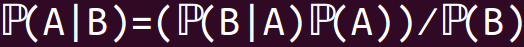
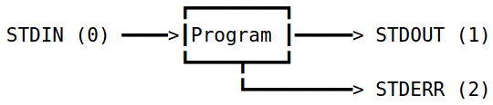
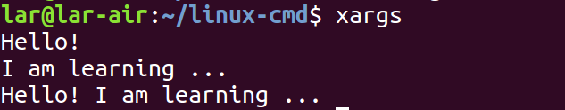
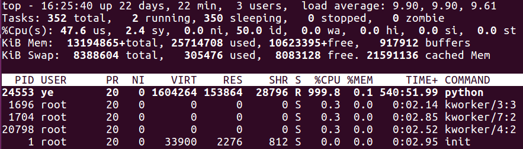
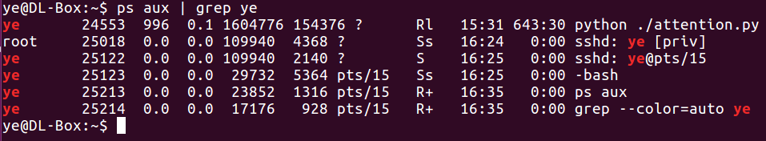
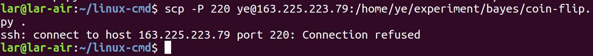
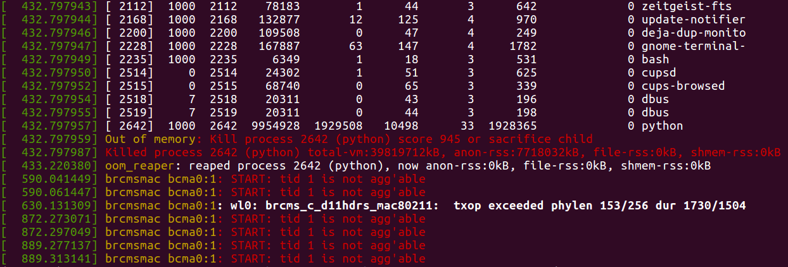

မြန်မာကျောင်းသားများအတွက်
အခြေခံ linux command များ
Linux command တွေကို ကောင်းကောင်းသုံးတတ်ရင် ကွန်ပျူတာနဲ့ အလုပ်လုပ်တဲ့အခါမှာ ပိုပြီးမြန်ဆန်လာပါလိမ့်မယ်။
ဒီ tutorial က မြန်မာကျောင်းသားတွေအားလုံးအတွက် ရည်ရွယ်ပါတယ်။
အထူးသဖြင့် ကွန်ပျူတာတက္ကသိုလ်တွေ၊ အင်ဂျင်နီယာတက္ကသိုလ်တွေက မဟာဘွဲ့၊ ဒေါက်တာဘွဲ့ ယူဖို့ ရည်ရွယ်ထားကြသူတွေ၊ သုတေသနကို လုပ်ချင်ကြတဲ့ ကျောင်းသားတွေက linux command တွေကို ကျွမ်းကျင်စွာ သုံးနိုင်ကြရမယ်။ ဘာ့ကြောင့်လဲ ဆိုတော့ ခင်ဗျားတို့ linux ကို မသုံးလို့ကို မဖြစ်လို့ပါ။
သုတေသနအတွက်၊ လက်ရှိရှိနေပြီးသား သုတေသနပရိုပိုဇယ်တွေမှာသုံးထားကြတဲ့ ပရိုဂရမ်တွေ၊ မှီငြမ်းလို့ ရနိုင်မဲ့ နမူနာ prototype system တွေ၊ open source အနေနဲ့ ရရှိနိုင်တဲ့ source code အများစုကလည်း linux OS ပေါ်မှာပဲ develop လုပ်ကြတာမို့လို့ပါ။ နောက်ပြီးတော့ linux/unix command (သို့) command line interface (CLI) ကို အသုံးပြုရခြင်းရဲ့ အားသာတဲ့ အချက်တွေကို သိထားသင့်ပါတယ်။ အထူးသဖြင့် ဖိုင်တွေအများကြီး၊ ဒေတာတွေ အများကြီးနဲ့ အလုပ်လုပ်တဲ့ အခါမှာ CLI မှာမှ အဆင်ပြေပါတယ်။
linux command တွေကိုလေ့လာခြင်းဖြင့် ရရှိလာမဲ့ နောက်ဆက်တွဲဗဟုသုတနဲ့ အကျိုးကျေးဇူးတွေက ပြောပြလို့မကုန်အောင်ကို အများကြီးမို့လို့ပါ။
သို့သော် linux/unix command တွေက လေ့လာလို့ မကုန်နိုင်လောက်အောင်ကို များလွန်းအားကြီးပါတယ်။ Linux OS အပေါ်မှာ လက်တွေ့ အလုပ်လုပ်ရင်းနဲ့မှ command တွေကို တဖြည်းဖြည်းမှတ်မိလာပြီး၊ ကိုယ်လုပ်ချင်တဲ့ အလုပ်တွေကို အဆင်ပြေပြေနဲ့ လုပ်ဆောင်နိုင်ပါတယ်။ အဲဒီအတွက်က အချိန်တော်တော်ကြာကြာယူရပြီး အပင်ပန်းခံလေ့လာရပါတယ်။ Linux နဲ့ပတ်သက်တဲ့ စာအုပ်ကောင်းတွေအများကြီး ရှိပေမဲ့ အင်္ဂလိပ်လို ဖြစ်တာကတစ်ကြောင်း၊ စာအုပ်အများစုက ပျမ်းမျှအားဖြင့် စာမျက်နှာ ၆၀၀/၇၀၀ လောက်ရှိပြီး တစ်အုပ်တည်းနဲ့လည်း မလုံလောက်ပါဘူး။ အဲဒါကြောင့် ပထမဆုံးအဆင့်အနေနဲ့ လက်တွေ့မှာ အသုံးဝင်မဲ့၊ မသိမဖြစ်သိသင့်တဲ့ command တွေကို အသုံးများတဲ့ option တွေကိုပဲ သုံးပြီး မြန်မာလို ကြိုးစားပြီး ရှင်းပြထားပါတယ်။ Command တွေကို လက်တွေ့ စမ်းရိုက်၊ မော်နီတာစကရင်မှာ မြင်ရတဲ့ output တွေကို လေ့လာကြည့်ရင်း၊ မြန်မြန်ဆန်ဆန် နားလည်ပြီး၊ ကိုယ်လုပ်ချင်တဲ့ သုတေသနအလုပ်တွေအတွက် စတင်အသုံးပြုနိုင်ဖို့ကို အဓိက ရည်ရွယ်ပါတယ်။
Jupyter notebook ကို အသုံးပြုထားတာကြောင့် ကိုယ်ရဲ့စက်ထဲမှာ Python, Jupyter notebook နဲ့ Jupyter notebook အတွက် bash kernel ကို install လုပ်ပြီးသွားရင်၊ ကျွန်တော်ပြင်ပေးထားတဲ့ ဒီ notebook ကို browser တစ်ခု အပေါ်မှာဖွင့်ကြည့်ပြီး လေ့လာလို့ ရပါပြီ။ command တစ်ခုချင်းစီကိုလည်း run ချင်ရင် shift+enter နှိပ်ပြီး run ကြည့်လို့ ရပါတယ်။ တစ်ခု သတိထားရမှာက ကျွန်တော်ပြင်ပေးထားတဲ့ "linux-cmd/" folder အထဲကို ဝင်ပြီး "jupyter notebook" command ကို run မှသာ ကျွန်တော် run ပြထားတဲ့ output တွေနဲ့ တူမှာ ဖြစ်ပါတယ်။
Linux command တွေကို ပထမဆုံးလေ့လာမယ့်သူဆိုရင်တော့ command တွေကို နံပါတ်အစီအစဉ်အတိုင်း လေ့လာသွားပါလို့ အကြံပေးချင်ပါတယ်။ ဒီ Jupyter notebook ကို လိုအပ်လာတဲ့အခါမှာ update တချို့လုပ်သွားမယ်ဆိုတဲ့ အချက်ကိုတော့ နားလည်ပေးပါ။
1. ls (list directory contents)¶
လက်ရှိ ရောက်နေတဲ့ ဖိုလ်ဒါ မှာရှိတဲ့ ဖိုင်တွေ၊ ဖိုလ်ဒါတွေကို ကြည်ချင်ရင်
ls
လက်ရှိရောက်နေတဲ့ ဖိုလ်ဒါအောက်မှာ ရှိတာတွေကို ရိုက်ပြပါလိမ့်မယ်။
အဲဒီ နာမည်တွေက ဖိုင်တွေလည်းဖြစ်နိုင်သလို၊ ဖိုလ်ဒါတွေကော မဖြစ်နိုင်ဘူးလားလို့ မေးရင်၊ Linux OS မှာက ဖိုလ်ဒါဆိုရင် နာမည်နောက်က "/" (forward slash) လိုက်တယ်။ ပုံမှန်အားဖြင့်က setting မလုပ်ထားရင် "/" ကိုတွဲမပြဘူး။ ဘာကြောင့်လဲ ဆိုတော့ တကယ်တမ်းက ဖိုင်နဲ့ ဖိုလ်ဒါနဲ့က အရောင်မတူဘူး။ အဲဒါကြောင့် အရောင်ကို ကြည့်ပြီး ဖိုင်လား၊ ဖိုလ်ဒါလားက သိသာလို့ပါ။
ဖိုလ်ဒါ အသစ် တစ်ခုဆောက်ချင်ရင် mkdir ဆိုတဲ့ command ကိုသုံးတယ်။
mkdir folder-athit
ls command ကိုပြန်ရိုက်ကြည့်မယ်။ ဆောက်လိုက်တဲ့ ဖိုလ်ဒါအသစ် folder-athit ကိုမြင်ရလိမ့်မယ်။
ဖိုလ်ဒါတွေကို "/" နဲ့တွဲပြစေချင်ရင် ls command ကို option "-p" ထည့်ပြီး run ကြည့်ပါ။
ls -p
ဖိုလ်ဒါ ဖြစ်တဲ့ folder-athit ရဲ့နောက်မှာ "/" ပါလာတာကို တွေ့ရလိမ့်မယ်။
ဖိုင်အမျိုးအစားတွေကို အသေးစိတ်ပြပေးစေချင်ရင် "-F" option ကိုသုံးပြီးကြည့်တယ်။
ls -F /usr/bin/r*
"-F" option နဲ့ /usr/bin/ ဖိုလ်ဒါအောက်မှာရှိတဲ့ "r" စာလုံးနဲ့စတဲ့ ဖိုင်တွေကို ပြခိုင်းတဲ့ အခါမှာ ဖိုင်နာမည်တွေရဲ့ နောက်မှာ @ နဲ့ * အမှတ်အသားတွေပါလာတာကို တွေ့ရပါ လိမ့်မယ်။ * အမှတ်အသားက executable လုပ်လို့ရတဲ့ဖိုင်၊ run လို့ရတဲ့ ဖိုင်ကို ဆိုလိုပြီး၊ @ အမှတ်အသားကတော့ symbolic link အနေနဲ့ ချိတ်ထားတဲ့ ဖိုင်လို့ ဆိုလိုတာပါ။
symbolic link ကိစ္စကိုတော့ နောက်ပိုင်းမှာ ln command ကို သင်တဲ့အခါ ရှင်းပါမယ်။ အခုလောလောဆယ်တော့ ls command ရဲ့ "-F" option နဲ့ပတ်သတ်တာကိုပဲ အာရုံစိုက်ကြရအောင်။
"-F" option က * နဲ့ @ အမှတ်အသားတွေ အပြင်၊ အောက်ပါ အမှတ်အသားတွေကိုလဲ ဖိုင်အမျိုးအစားပေါ်မူတည်ပြီး ပြပေးပါလိမ့်မယ်။
/ ဖိုလ်ဒါ
| named pipe ဖိုင်အမျိုးအစား။ FIFO (First In, First Out) ဖိုင်လို့လဲ ခေါ်တယ်။ နောက်ပိုင်းမှာ အသေးစိတ်ရှင်းပြမယ်။
= socket ဖိုင်
> door ဖိုင်အမျိုးအစားပါ။ Linux မှာ မသုံးပါဘူး။ Sun/Solaris Unix system မှာသုံးတယ်။
ဖွက်ထားတဲ့ ဖိုင်တွေကို ကြည့်ချင်ရင် ls command ရဲ့ option တခုဖြစ်တဲ့ "-a" သုံးတယ်။
ls -a
အထက်မှာ မြင်ခဲ့ရတာနဲ့ မတူတာက "." ရယ်၊ ".." ရယ်၊ ".fileC" ရယ် ဆိုတာကို သတိပြုမိလိမ့်မယ်။
"." က လက်ရှိရောက်နေတဲ့ path ကို ညွှန်းတဲ့ အခါမှာ သုံးတယ်။
".." က လက်ရှိရောက်နေတဲ့ path ကနေ အထက်တဆင့်မှာရှိတဲ့ path ကိုညွှန်းတဲ့ အခါမှာ အသုံးပြုတယ်။ (နောက်ပိုင်းမှာ cd command နဲ့အတူရှင်းပြပါမယ်)
".fileC" နဲ့ ".ipynb_checkpoints" ဖိုင်က ဖွက်ထားတဲ့ ဖိုင်ပါ။ အများသောအားဖြင့် ဖွက်ထားတဲ့ ဖိုင်တွေက application (သို့မဟုတ်) shell တို့ရဲ့ setting ဖိုင်တွေ ဖြစ်ကြပါတယ်။ Linux OS မှာက "." နဲ့စတဲ့ ဖိုင်နာမည်တွေဆိုရင် ls command က ပြမပေးပါဘူး။ မှားပြီး ဖျက်မိတာမျိုး၊ ဝင်ပြင်ရေးမိတဲ့ အမှားတွေကို လျော့နည်းစေဖို့ ရည်ရွယ်ပါတယ်။
ဖိုင်တွေ၊ ဖိုလ်ဒါတွေ ရဲ့ information ကိုအသေးစိတ်ပြပေးစေချင်ရင် ls command ကို "-l" option နဲ့တွဲရိုက်ကြည့်ပါ။
ls -l
ဘာတွေပြနေသလဲ ဆိုတော့
"-rw-rw-r-- 1 lar lar 67 8月 11 11:14 fileA" ဆိုတဲ့ စာကြောင်းမှာ
ပထမဆုံး စာလုံး "-" (dash) က ပုံမှန်ဖိုင် လို့ဆိုလိုတယ်။
အဲဒီနေရာမှာ "d" ဆိုရင် directory (or) folder လို့ဆိုလိုတယ်။
rw-rw-r-- (စာလုံး ၉လုံး) က ဖိုင်နဲ့ ပတ်သက်တဲ့ permission တွေကို ပြပေးတာ။
ဘယ်သူက၊ ဘယ်အုပ်စုက ဒီဖိုင်ကို ဖတ်လို့ရတယ် ဆိုတာကို "r" (read) နဲ့၊ ဝင်ပြင်လို့ရတယ် ဆိုတာကို "w" (write) နဲ့၊ ပရိုဂရမ်အနေနဲ့ execute (or) run လုပ်လို့ရတယ် ဆိုတာကို "x" သင်္ကေတနဲ့ ပြပေးလိမ့်မယ်။
1 ဆိုတာက link ဘယ်နှစ်ခုရှိနေသလဲ ဆိုတာကို ပြပေးတာ။
ပထမဆုံးတွေ့ရတဲ့ lar က ဖိုင်ရဲ့ ပိုင်ရှင်က ဘယ်သူလဲ (သို့) ဘယ် acount name လဲ ဆိုတာကို ပြပေးတာ။ ကျွန်တော်လက်ရှိသုံးနေတဲ့ ကွန်ပျူတာရဲ့ account name က lar (language acquisition researcher ရဲ့ အတိုကောက်) ဆိုတဲ့ နာမည်ကို ပေးထားလို့။
ဒုတိယတွေ့ရတဲ့ lar က ဘယ်အုပ်စု (group) နဲဆိုင်တယ် ဆိုတာကိုပြပေးတာ။
67 ဆိုတာက ဖိုင်ရဲ့ အရွယ်အစား (size) ကို bit နဲ့ပြပေးတာ။
ဥပမာ 1 KB = 1024 bits, 1 MB = 1024 KB။
"8月 11 11:14" ဆိုတာက ဖိုင်ကို နောက်ဆုံးပြင်ခဲ့တဲ့ လ၊ ရက်၊ နာရီကို ပြောနေတာ။
မပြောလဲ မြင်မှာပါ။ "fileA" ဆိုတာက ဖိုင်နာမည်ပါ။
size ကြီးတဲ့ အစီအစဉ်အတိုင်း ပြပေးစေချင်ရင် option "-S" ကိုသုံးတယ်။
ဖိုင် Size အကြီးဆုံးက ထိပ်ဆုံးမှာ ရှိပါလိမ့်မယ်။
ls -lS
ဖိုင်ရဲ့ size ငယ်စဉ်ကြီးလိုက် အစီအစဉ်နဲ့ စီပြပေးစေချင်ရင် "-r" (reverse) ကို သုံးပါတယ်။ option အပြည့်အစုံကတော့ "-lSr" ပါ။
ls -lSr
ဖိုင်ရဲ့ အရွယ်အစား (size) တွေကို လူကဖတ်လို့လွယ်တဲ့ format (ဥပမာ၊ KB, MB, GB, TB) နဲ့ ပြပေးစေချင်ရင် "-h" option ကိုသုံးပါ။
ls -lh
"-lt" option နဲ့ ဖိုင်တွေ၊ ဖိုလ်ဒါတွေကို အချိန်နဲ့ စီခိုင်းလို့ရပါတယ်။
"t" option က နောက်ဆုံးပြင်ခဲ့၊ ရေးခဲ့တဲ့ဖိုင်ကို ထိပ်ဆုံးမှာထားပေးပြီး စီပေးပါလိမ့်မယ်။
အောက်ပါ command က ကိုယ်ဒေါင်းလုဒ် လုပ်ခဲ့တဲ့ ဖိုင်တွေကို အချိန်နဲ့ စီကြည့်တဲ့ ဥပမာပါ။
ပုံမှန်အားဖြင့် (default setting) က အင်တာနက်ကနေ ဒေါင်းလုဒ်လုပ်လိုက်တဲ့ ဖိုင်တွေက ဟုမ်းဖိုလ်ဒါအောက်က Downloads ဆိုတဲ့ ဖိုလ်ဒါအောက်မှာ သိမ်းပါတယ်။
(ဒီနေရာမှာ "~" က လက်ရှိ login ဝင်ထားတဲ့ account ရဲ့ home directory ကိုဆိုလိုပါတယ်။)
ls ~/Downloads -lt
လက်ရှိ နေရာအောက်မှာရှိတဲ့ "ဖိုလ်ဒါတွေကိုပဲ" ပြပေးပါဆိုရင် "-d" option နဲ့ "*/" pattern ကို တွဲသုံးပါတယ်။
ls -d */
"-R" option နဲ့ ဖိုလ်ဒါရဲ့ အောက်မှာရှိနေတဲ့ ဖိုင်တွေ၊ ဖိုလ်ဒါ အဆင့်ဆင့်တွေအားလုံးကို ပြခိုင်းလို့ ရပါတယ်။
ဥပမာ ~/Pictures/ ရဲ့ အောက်မှာ ရှိသမျှ ဖိုင်တွေ၊ ဖိုလ်ဒါတွေကို ပြခိုင်းစေချင်ရင်
"ls -R ~/Pictures/" ဆိုပြီး ရိုက်ကြည့်ပါ။
(ဒီနေရာမှာ "~" က လက်ရှိ login ဝင်ထားတဲ့ account ရဲ့ home directory ကိုဆိုလိုပါတယ်။)
လက်ရှိ ကျွန်တော် သုံးနေတဲ့ ကွန်ပျူတာ ရဲ့ ဟုမ်းဖိုလ်ဒါအောက်က Pictures ဖိုလ်ဒါအောက်မှာ layout ဆိုတဲ့ ဖိုလ်ဒါကရှိနေတော့
အဲဒီအောက်မှာ ရှိတဲ့ ဖိုင်တွေကို ပြသပေးပါတယ်။
လောလောဆယ် လက်ရှိမှာရှိတဲ့ ဖိုင်နှစ်ဖိုင်ဖြစ်တဲ့ kkg-ver0.1.pdf ဖိုင်နဲ့ Selection_001.png ဖိုင်ကို ပြပေးပါလိမ့်မယ်။
တကယ်လို့ အဲဒီ layout ဆိုတဲ့ ဖိုလ်ဒါအောက်မှာ နောက်တစ်ဆင့် ဖိုလ်ဒါတွေသာရှိခဲ့ရင်၊ အဲဒီဖိုလ်ဒါအောက်မှာရှိတဲ့ ဖိုင်တွေ၊ ဖိုလ်ဒါတွေကို ဆင့်ကဲဆင့်ကဲ ပြသပေးမှာဖြစ်ပါတယ်။
ls -R ~/Pictures/
2. pwd (print name of current/working directory)¶
လက်ရှိ ရောက်နေတဲ့ ဖိုလ်ဒါ (path လို့လဲ ခေါ်ပါတယ်) ကို သိချင်ရင်
pwd
Linux မှာ ဖိုလ်ဒါတခုနဲ့ တခုအကြားကို / (forward slash) နဲ့ ခွဲပြီးပြတယ်။
တစ်ခုသိထားစေချင်တာက linux command တွေမှာက အင်္ဂလိပ်စာလုံး အကြီး၊ အသေးကို ခွဲခြားပြီးသုံးတယ်။
အဲဒါကြောင့် pwd ကို ရိုက်တဲ့ အခါမှာ စာလုံးအားလုံးက အသေးဖြစ်ရမယ်။
တကယ်လို့ အခုအချိန်ထိသင်ပေးခဲ့တဲ့ command နှစ်ခုဖြစ်တဲ့ "ls" နဲ့ "pwd" ကို LS, lS, PWD, pWd စသည်ဖြင့်ရိုက်ရင် အလုပ်မလုပ်ပါဘူး။
error message ပေးပါလိမ့်မယ်။
3. cd (change the shell working directory)¶
ဖိုလ်ဒါ တခုကနေ နောက်ဖိုလ်ဒါ တခုကို ရွှေ့မယ်ဆိုရင် သုံးတဲ့ command ပါ။
ဥပမာ လက်ရှိရောက်နေတဲ့ နေရာအောက်မှာ ဖိုလ်ဒါနာမည် folderA ရှိတယ်။ အဲဒီ ဖိုလ်ဒါဆီကို ရွှေ့ပေးပါဆိုရင်။
cd folderA
လက်ရှိရောက်နေတဲ့ folder path ကနေ ကိုယ့်ရဲ့ home ဖိုလ်ဒါဆီ ကို ရွှေ့ချင်ရင် ~ (tilde) option ကို သုံးပါတယ်။ ဒါမှမဟုတ် cd အမိန့်ရဲ့နောက်မှာ ဘာမှမရိုက်ပဲ enter ခေါက်ရင်လည်း home ဖိုလ်ဒါဆီကို ရွှေ့ပေးပါလိမ့်မယ်။
cd ~
ပြီးတော့ လက်ရှိရောက်နေတဲ့ ဖိုလ်ဒါနေရာကို confirm လုပ်ဖို့အတွက်၊ အထက်မှာ ပြောခဲ့တဲ့ pwd command သုံးကြည့်မယ်။
pwd
လက်ရှိရောက်နေတဲ့ "/home/lar/ နေရာကနေ့ အထက်တဆင့် path ကိုတက်ချင်တဲ့ အခါမှာ .. ကို သုံးပြီးတက်နိုင်။
cd ..
အခု ဆိုရင် "lar" ဖိုလ်ဒါရဲ့ အထက်မှာ ရှိတဲ့ "home" ဆိုတဲ့ ဖိုလ်ဒါအောက်ကို ရောက်သွားပါပြီ။ ဒီ ဖိုလ်ဒါအောက်မှာတော့ ရှိနေတဲ့ user account အားလုံးရဲ့ home ဖိုလ်ဒါ တွေကို သိမ်းပေးထားပါတယ်။ စက်တိုင်းမှာ ပုံမှန်က အနည်းဆုံးတော့ guest နဲ့ Linux OS ကို installation လုပ်ထားတဲ့ user account ကတော့ ရှိပါတယ်။ လက်ရှိ ရောက်နေတဲ့ path ကို "pwd" command ကို သုံးပြီး ရိုက်ကြည့်ရင် အောက်ပါအတိုင်း home ဆိုတဲ့ ဖိုလ်ဒါအောက်ကို ရောက်နေတာကို တွေ့ကြရပါလိမ့်မယ်။
pwd
"cd" command ရဲ့ "-" option ကို သုံးပြီး နောက်ဆုံးဝင်ခဲ့တဲ့ ဖိုလ်ဒါနေရာ (path) ဆီကို ပြန်ရွှေ့လို့ရပါတယ်။
အောက်ပါဥပမာက ပထမ လက်ရှိ ရှိနေရာတဲ့ နေရာကနေ ရှည်လျားတဲ့ ဖိုလ်ဒါ တခုအောက် (/usr/share/X11/xkb/geometry/) ကို ဝင်ပါတယ်။ အဲဒီမှာ ရှိတဲ့ ဖိုင်တွေကို "ls" နဲ့ list လုပ်ကြည့်ပါတယ်။
cd /usr/share/X11/xkb/geometry/
ls
ပြီးတော့ ကိုယ်ရဲ့ home folder အောက်ကို cd ~ နဲ့ သွားပါတယ်။
cd ~
မြင်သာအောင် "pwd" command နဲ့ home folder အောက်ကိုရောက်နေတာကို ရိုက်ပြထားတာပါ။
pwd
စိတ်ကူးပြောင်းသွားပြီး ခုနက နောက်ဆုံးရှိနေခဲ့တဲ့ဖိုလ်ဒါအောက်ဖြစ်တဲ့ "/usr/share/X11/xkb/geometry/" ဆီကို ပြန်ဝင်ချင်တဲ့ အခါမှာ ဖိုလ်ဒါနာမည်တွေကို ပြန်ရိုက်စရာမလိုပဲ "-" (dash option) ကိုသုံးလို့ရကြောင်းကို လုပ်ပြပါမယ်။ တကယ်တမ်း command တွေကို သုံးပြီးအလုပ်လုပ်တဲ့ အခါမှာ မြန်ဆန်ဖို့အတွက် ဒီ "-" option က အရမ်းကို အသုံးဝင်ပါတယ်။ အထူးသဖြင့် ရှည်လျားတဲ့ ဖိုလ်ဒါ path တွေ တစ်ခုကနေ တစ်ခုကို ရွှေ့ပြောင်းပြီး အလုပ်လုပ်တဲ့ အခါမျိုးမှာပါ။ မှတ်ထားသင့်ပါတယ်။
cd -
အထက်မှာ မြင်ရတဲ့ အတိုင်း နောက်ဆုံးရှိနေခဲ့တဲ့ ဖိုလ်ဒါဖြစ်တဲ့ "/usr/share/X11/xkb/geometry" ကို ပြန်ရွှေ့ပေးတာကို မြင်ရပါလိမ့်မယ်။
4. cat (concatenate files and print on the standard output)¶
cat command က ဖိုင်တဖိုင်ရဲ့ အထဲမှာ ရှိတဲ့ စာကြောင်းတွေ အားလုံးကို ရိုက်ထုတ်ပြဖို့ သုံးပါတယ်။
cat command ကို မသုံးခင်၊ အရင်ဆုံး linux command တွေကို သင်ကြားဖို့အတွက် ကျွန်တော်က ပြင်ဆင်ထားတဲ့ path ဆီကို ရွှေ့မယ်။
cd ~/linux-cmd
pwd
ဘာဖိုင်တွေ၊ ဘာဖိုလ်ဒါတွေ ရှိသလဲ ဆိုတာကို "ls" နဲ့အရင်ကြည့်မယ်။
ဒီတခါတော့ option ကို "-1X" ကိုသုံးကြည့်မယ်။
"-1X" နဲ့ဆိုရင် ရှိတဲ့ ဖိုင်နာမည်၊ ဖိုလ်ဒါနာမည်တွေကို တစ်ကြောင်းချင်းစီ ရိုက်ပြလိမ့်မယ်။
ls -1X
ဒီနေရာမှာ "-1" က စာကြောင်းတစ်ကြောင်းမှာ ဖိုင်တစ်ဖိုင်စီ ရိုက်ပြတဲ့အလုပ် (list one file per line) ကို လုပ်ပေးတဲ့ "ls" command ရဲ့ option ပါ။
"-X" (Capital X option) ကတော့ ဖိုင်တွေရဲ့ extension နဲ့ အက္ခရာစဉ်အလိုက်စီပေးပါတယ်။
Extension ဆိုတာက ဖိုင်နာမည်တွေရဲ့ နောက်ဆုံးမှာ ရှိနေတဲ့ dot နဲ့ခွဲပြီးရေးထားတဲ့ အပိုင်းတွေကို ဆိုလိုပါတယ်။
ဥပမာ ။။ PDF ဖိုင်ဆိုရင် ".pdf" ပါ။ ပုံဖိုင်အမျိုးအစားတစ်မျိုးဖြစ်တဲ့ ".jpeg" နဲ့ bash shell script ဖိုင်ဖြစ်တဲ့ ".sh" စတာမျိုးတွေပါ။
cat command ကိုသုံးပြီး fileA ရဲ့အထဲမှာ ဘာတွေရေးထားလဲ ဆိုတာကို ရိုက်ထုတ်ကြည့်မယ်။
cat fileA
ဖိုင်ထဲမှာရှိတဲ့ စာကြောင်းတွေကို ရိုက်ပြတဲ့ အခါမှာ လိုင်းနံပါတ်တွေ တပ်ပြီးရိုက်ပြစေချင်ရင် "-n" option ကိုသုံးပါ။
cat -n fileA
cat command ရဲ့ အသုံးဝင်တဲ့ option နှစ်ခုဖြစ်တဲ့ -T နဲ့ -E ကို သုံးပြဖို့အတွက် item-list ဆိုတဲ့ ဖိုင်အသစ်တစ်ဖိုင်ကို echo command ကို သုံးပြီး အောက်ပါအတိုင်းဆောက်ပါမယ်။ ဒီနေရာမှာ "\t" က tab ကီး "\n" က စာကြောင်းတစ်ကြောင်း အောက်ကိုဆင်းဖို့အတွက် သုံးတဲ့ escape စာလုံးတွေပါ။
echo -e "No\tItem\tStock\n1\tpencil\t10\n2\truler\t1000\n3\teraser\t42" > item-list
အခုဆောက်ခဲ့တဲ့ item-list ထဲမှာ ဘယ်လိုစာကြောင်းတွေရှိနေသလဲဆိုတာကို cat command နဲ့ ရိုက်ကြည့်ပါမယ်။
cat ./item-list
အထက်ပါအတိုင်း No (နံပါတ်) ရယ်၊ Item ရယ်၊ Stock ရယ်ဆိုပြီး ကော်လံ သုံးခု ခွဲထားပြီး၊ ပစ္စည်း သုံးမျိုးဖြစ်တဲ့ pencil, ruler, eraser ရဲ့ ရှိနေတဲ့ အရေအတွက်ကို သိမ်းထားတာတွေ့ရပါလိမ့်မယ်။ လက်တွေ့ item-list လို text file တွေကို၊ ကိုယ်လုပ်မဲ့ အလုပ်ပေါ်မူတည်ပြီးတော့ ပုံမှန်အားဖြင့် မမြင်နိုင်တဲ့ tab ကီးတွေ၊ စာကြောင်း အဆုံးသင်္ကေတ တွေကို စစ်ဆေးကြည့်ဖို့၊ မြင်ရအောင် ရိုက်ထုတ်ချင်တဲ့အခါမှာ cat command နဲ့ တကွ "-T", "-E" option တွေကို အသုံးပြုပါတယ်။
"-T" က tab ကီးကိုမြင်ရဖို့၊ "-E" က စာကြောင်းအဆုံးသင်္ကေတကို မြင်ရဖို့သုံးပါတယ်။
cat -TE ./item-list
အထက်ပါ output မှာမြင်ရတဲ့အတိုင်း၊ ^I ဆိုတာက tab ကီးကို ကိုယ်စားပြုပါတယ်။ $ စာလုံးက စာကြောင်းအဆုံးကို ကိုယ်စားပြုပါတယ်။ ဒီသင်္ကေတတွေကို မျက်လုံးနဲ့ ဖိုင်တွေကိုစစ်ကြည့်ဖို့ တင်မကပဲ၊ ပရိုဂရမ်နဲ့ ဖိုင်ကိုဖတ်ပြီး စစ်ဆေးကြည့်တဲ့ အခါမှာလည်း အသုံးပြုပါတယ်။
5. file (determine file type)¶
ဖိုင်တဖိုင်က ဘာဖိုင်လဲ၊ ဘယ်လို ဖိုင်အမျိုးအစားလဲ ဆိုတာကို သိချင်ရင် "file" ဆိုတဲ့ command ကိုသုံးတယ်။
ဖိုင်ရဲ့ အမျိုးအစားဆိုတာက စာသားတွေအနေနဲ့ သိမ်းထားတဲ့ text file လား၊ အလုပ်လုပ်ခိုင်းလို့ရတဲ့ (အင်္ဂလိပ်လိုပြောရင် run/executable လုပ်လို့ရတဲ့) ပရိုဂရမ်ဖိုင်လား၊ ပရိုဂရမ်ဖိုင်ဆိုရင် အဲဒီပရိုဂရမ်ရဲ့ ဗားရှင်းနဲ့ ပတ်သက်တဲ့ အချက်အလက် စတာတွေကို file command ကိုသုံးပြီး ရယူနိုင်ပါတယ်။
file fileA
fileA က ASCII (American Standard Code for Information Interchange) text ဖိုင် အမျိုးအစားဖြစ်ကြောင်းကို သိရပါတယ်။
လက်ရှိကွန်ပျူတာမှာ ရှိတဲ့ ဖိုင်တချို့ကို သုံးပြီး file command ရဲ့ output တချို့ကို ဥပမာ အနေနဲ့ ပြပါမယ်။
file /bin/cat
file /etc/hostname
ဖိုလ်ဒါရဲ့ path ကိုပေးရင် file command က ဖိုလ်ဒါဖြစ်ကြောင်းကို directory ဆိုပြီး အောက်ပါအတိုင်း ဖော်ပြပေးပါလိမ့်မယ်။
file /home/
နောက်ထပ် ဥပမာ တစ်ခုကတော့ မြန်မာစာကြောင်းတွေကို POS (part of speech) tag တွေနဲ့တွဲသိမ်းထားတဲ့ ဖိုင်ဖြစ်တဲ့ otest ဆိုတဲ့ဖိုင်ကို "file" command နဲ့ ရိုက်ကြည့်ရင် မြင်ရမယ့် output ကို ပြသထားတာ ဖြစ်ပါတယ်။ အဲဒီဖိုင်ထဲမှာက "ကူညီ/v တာ/part ကျေးဇူးတင်/v ပါ/part တယ်/ppm ။/punc" ဆိုတဲ့ စာကြောင်းတွေ အများကြီး သိမ်းထားပါတယ်။
file otest
6. head (output the first part of files)¶
"head" command ကတော့ ဖိုင်တဖိုင်ထဲမှာရှိတဲ့ စာကြောင်းတွေကို ထိပ်ဆုံးအပိုင်းကနေ ရိုက်ထုတ်ပြပေးဖို့ သုံးတဲ့ command ဖြစ်ပါတယ်။
ဥပမာ ctest2 ဆိုတဲ့ဖိုင်ရဲ့ ထိပ်ဆုံး စာကြောင်း ၁၀ကြောင်းကို ရိုက်ပြခိုင်းချင်ရင်
head ctest2
ဒီ ctest2 ဖိုင်က မြန်မာစာ POS Tagging သုတေသန experiment လုပ်နေစဉ်မှာ၊ ကျွန်တော်ရဲ့ တပည့်တယောက်ဖြစ်တဲ့ မဝါဝါက ပြင်ဆင်ထားတဲ့ test ဖိုင်တဖိုင်ပါ။
"head" command က ဘာ option မှမပေးရင် ရိုက်ခိုင်းတဲ့ ဖိုင်ရဲ့ ထိပ်ဆုံးကနေ ၁၀ ကြောင်းကို ရိုက်ပြပါတယ်။
တကယ်လို့ သတ်မှတ်ထားတဲ့ စာကြောင်းရေ အရေအတွက်ကိုပဲ ဥပမာ ၁ ကြောင်း၊ ၃ ကြောင်း၊ အကြောင်း ၁၀၀ စသည်ဖြင့် ရိုက်ပြပေးစေချင် ရင် "-n" option နဲ့ ရိုက်ပေးစေချင်တဲ့ စာကြောင်းအရေအတွက် နံပါတ် ကိုပါ ညွှန်ကြားပြီး သုံးပါ။
head -n 3 ctest2
"-n" လို့ မရိုက်ပဲ "-" တခုတည်းလို သုံးပြီး၊ "-" အနောက်ကနေ ရိုက်ပြစေချင်တဲ့ စာကြောင်းရေအရေအတွက်နံပါတ်ကို ပေးပြီးလဲ သုံးနိုင်ပါတယ်။ ဥပမာ "head -1" ဆိုရင် ဖိုင်ထဲမှာ ရှိတဲ့ စာကြောင်းတွေထဲကနေ ထိပ်ဆုံး တစ်ကြောင်းကိုပဲ ရိုက်ပြပါလို့ ဆိုလိုပါတယ်။
head -1 ctest2
7. tail (output the last part of files)¶
"tail" command က အထက်မှာ ရှင်းပြခဲ့တဲ့ "head" command နဲ့ ပြောင်းပြန်ပါ။
ဖိုင်တဖိုင်ကို နောက်ဆုံး အပိုင်းကနေ အကြောင်းရေ အရေအတွက်နဲ့ ရိုက်ပြခိုင်းလို့ ရတဲ့ command ပါ။
အကြောင်းအရေအတွက်ကို ဘာမှ မကန့်သတ်ပဲ run ရင် default အနေနဲ့ ဖိုင်ရဲ့နောက်ဆုံး ၁၀ ကြောင်းကို ရိုက်ပြပါလိမ့်မယ်။
tail ~/linux-cmd/ctest2.tag
အထက်ပါ ဥပမာပေးတဲ့ ဖိုင်မှာရှိတဲ့ စာကြောင်းတွေက ရှည်လျားတဲ့ အတွက် တစ်ကြောင်းထက်မက မြင်ရပေမဲ့ အမှန်တကယ်က စုစုပေါင်း ၁၀ ကြောင်းကို ရိုက်ပြသွားတာပါ။
အကြောင်းအရေအတွက်ကို "-n" option နဲ့ ကန့်သတ်ပေးလို့ရပါတယ်။
ဥပမာ ဖိုင်ရဲ့ နောက်ဆုံးစာကြောင်း တစ်ကြောင်းကို ပဲ ရိုက်ပေးစေချင်ရင် အောက်ပါအတိုင်း "-n 1" ဆိုပြီး option ပေးပြီး run ခိုင်းလို့ရပါတယ်။
tail -n 1 ~/linux-cmd/ctest2.tag
head command မှာတုန်းကပြခဲ့သလိုပါပဲ။ "-n" option မထည့်ပဲ စာကြောင်းအရေအတွက်ကိုပဲ ပြောပြီး အောက်ပါအတိုင်း run လို့လည်း ရပါတယ်။
tail -1 ~/linux-cmd/ctest2.tag
8. cp (copy files and directories)¶
ဖိုင်တွေ၊ ဖိုလ်ဒါတွေကို ကော်ပီကူးဖို့ အတွက် သုံးတဲ့ command ပါ။
fileA ကို လက်ရှိဖိုလ်ဒါအောက်မှာပဲ fileZ အဖြစ် ကော်ပီကူးမယ်ဆိုရင်
cp fileA fileZ
ls fileA fileZ -la
ဖိုင်နာမည်တွေကို ပေးရင်းနဲ့ ဘယ် ဖိုလ်ဒါ(path) ရဲ့အောက်က ဖိုင် ကို ဘယ် ဖိုလ်ဒါအောက် ကို ကေပီကူးပေးပါ ဆိုပြီး ဖိုလ်ဒါတွေရဲ့ လမ်းကြောင်းတွေကို အတိအကျ ညွှန်ကြားပြီးလဲ ခိုင်းနိုင်ပါတယ်။ ဥပမာ အနေနဲ့ ~/bk-dlbox/tool4all/ ဖိုလ်ဒါအောက်မှရှိတဲ့ 127-135.pdf ဖိုင်ကို ./ (လက်ရှိဖိုလ်ဒါအောက်) ဆီကို ကော်ပီကူးပေးပါ ဆိုပြီး အောက်ပါအတိုင်း command ပေးနိုင်ပါတယ်။
cp ~/bk-dlbox/tool4all/127-135.pdf ./folderA/
မှတ်ချက်။ ။ Linux OS မှာ "./" ဆိုတာက လက်ရှိရောက်နေတဲ့ ဖိုလ်ဒါpath ကို ညွှန်ပြီး၊ "../" ဆိုတာက လက်ရှိရှိနေတဲ့ ဖိုလ်ဒါpath ရဲ့ အထက် တဆင့်ကို ညွှန်းပါတယ်။ လက်ရှိ ဖိုလ်ဒါကိုကူးတဲ့ အခါမှာ "./" ဆိုတာကို ပြောမနေတော့ပဲ ကိုယ်က ကော်ပီကူးပြီး သိမ်းချင်တဲ့ ဖိုင်နာမည်ကိုပဲ တန်းပြောလို့ဖြစ်ပါတယ်။
ဖိုလ်ဒါကို ကော်ပီကူးမယ် ဆိုရင် cp command ကို "-r" option နဲ့ တွဲသုံးရမယ်။
ဥပမာ folderA/ ကို folderA-Copy/ အဖြစ်နဲ့ ကော်ပီကူးမယ် ဆိုရင်
cp -r ./folderA ./folderA-Copy
ဆိုပြီး command ပေးပြီး ကူးခိုင်းလို့ရပါတယ်။ ./folderA-Copy ဆိုတဲ့ ဖိုလ်ဒါအသစ်ကို အောက်ပါအတိုင်း တွေ့ရပါလိမ့်မယ်။
ls -p
ဒီနေရာမှာ "ls" command ရဲ့ -p option က ဖိုလ်ဒါတွေကို indicator "/" နဲ့ တွဲပြခိုင်းတာပါ။ ဖိုင်နဲ့ ဖိုလ်ဒါကို ကွဲကွဲပြားပြားမြင်ရအောင်လုပ်တဲ့ option ပါ။ အထူးသဖြင့်တော့ ကာလာနဲ့ မပြအောင် setting လုပ်ထားတဲ့ terminal တွေမှာသုံးလေ့ရှိပါတယ်။
9. mv (move or rename file)¶
ဖိုင်တွေ ဖိုလ်ဒါတွေကို နာမည်ပြောင်းဖို့အတွက် (သို့) နေရာတခုကနေ တခြားနေရာတခုကို ပြောင်းရွှေ့ဖို့ ဆိုရင် mv command ကိုသုံးပါတယ်။
အရင်ဆုံး file ဆိုတဲ့နာမည်နဲ့စတဲ့ ဖိုင်တွေ ဘယ်နှစ်ဖိုင် ရှိသလဲဆိုတာကို list လုပ်ကြည့်ရအေင်။
ls file*
fileZ ကို fileY အဖြစ် နာမည်ပြောင်းချင်ရင် အောက်ပါအတိုင်း command ပေးလို့ ရပါတယ်။
mv fileZ fileY
အထက်ပါ "mv" command ကို run ပြီးသွားတဲ့ အခါမှာ fileZ က fileY အဖြစ် နာမည်ပြောင်းသွားပါလိမ့်မယ်။
ls file*
နဂိုက ရှိနေတဲ့ fileZ က fileY အဖြစ်ပြောင်းသွားတာကို ls command နဲ့ confirm လုပ်ကြည့်ရင် အထက်ပါအတိုင်း တွေ့ရလိမ့်မယ်။
"mv" command နဲ့ တွဲသုံးတဲ့ "-f" option ကိုလဲ သိထားသင့်တယ်။
"-f" option ကိုပါတွဲသုံးရင် နာမည်ပြောင်းတာတို့ ရွှေ့တာတို့လုပ်တဲ့ အခါမှာ တကယ်လို့ အရင်ရှိနေတဲ့ နာမည်တူ ဖိုင်၊ ဖိုလ်ဒါကို overwrite လုပ်ဖို့ လိုအပ်လာတဲ့ အခါမှာ ဘာမှ confirm လုပ်တာ၊ မေးတာ မလုပ်ပဲ နာမည်ပြောင်းချပေးသွားလိမ့်မယ်။ တနည်းအားဖြင့်ပြောရရင် အရင်ဖိုင် (သို့) ဖိုလ်ဒါရှိနေတာ ငါသိပြီးသား၊ လုပ်သာလုပ်ဆိုပြီး by force နဲ့ mv လုပ်ခိုင်းတာ။
ဥပမာ အနေနဲ့၊ ပရိုဂရမ်ထဲကနေ mv လုပ်ခိုင်းတာမျိုးမှာ အရင်ရှိပြီးသားဖိုင်တွေနဲ့ ပတ်သက်ပြီး တွေ့လာတိုင်း ဖြေနေစရာ မလိုအောင်လို့ "-f" option ကို သုံးတယ်။ မသုံးခင်မှာ သေသေချာချာ စဉ်းစားပါ။
10. rm (remove files or directories)¶
ဖိုင်တွေ၊ ဖိုလ်ဒါတွေကို ဖျက်ဖို့အတွက် သုံးတဲ့ command ပါ။
ဥပမာ fileY ကို ဖျက်မယ်ဆိုရင်
rm fileY
ဖျက်ပြီး သွားပြီလား ဆိုတာကို ls command နဲ့ confirm လုပ်ကြည့်တဲ့ အခါမှာ၊ ဖျက်ပြီးသွားကြောင်း၊ fileY က မရှိတော့ကြောင်း တွေ့ရပါလိမ့်မယ်။
ls file*
ဖိုလ်ဒါကို ဖျက်မယ်ဆိုရင် rm command ကို "-r" option နဲ့ တွဲသုံးတယ်။
အရင်ဆုံး လက်ရှိရောက်နေတဲ့ ဖိုလ်ဒါအောက်မှာ ဘာဖိုင်တွေ၊ ဘာဖိုလ်ဒါတွေ ရှိသလဲ ls command နဲ့ ရိုက်ပြခိုင်းမယ်။
ls -p
စောစောက ကော်ပီကူးထားခဲ့တဲ့ folderA-Copy ဆိုတာကို -r option မသုံးပဲ ဖျက်ကြည့်ရအောင်။
rm folderA-Copy
directory (သို့) ဖိုလ်ဒါ ဖြစ်နေလို့ "rm" command က ဖျက်လို့ မရကြောင်း error message ပေးပါလိမ့်မယ်။
"-r" option ကို သုံးပြီး ဖျက်ကြည့်မယ်။
rm -r folderA-Copy
ls -p
folder A-Copy/ ကပျက်သွား တာကို တွေ့ရမယ်။
rm command က အရမ်း အန္တရာယ်ရှိတဲ့ command တခု ဖြစ်ပါတယ်။
နောက် Linux OS command-line မှာ မှားဖျက်လိုက်မိတဲ့ ဖိုင်ကို ပြန်ရဖို့ဆိုတာမျိုး သိပ်မမျှော်လင့်ပါနဲ့။
သတိထားပြီး သုံးပါ။
11. alias (create simple names or abbreviations)¶
"alias" က အသုံးများတဲ့ command တွေကို ကိုယ်လိုချင်တဲ့ option တွေနဲ့ setting လုပ်ထားပြီး command နာမည်အသစ်အနေနဲ့ သိမ်းပေးနိုင်။
ဥပမာ ။။ ls -la (-l က long listing format, -a က all ဆိုတဲ့ option ဖွက်ထားတဲ့ ဖိုင်တွေလဲပြ) command ကို "ll" ဆိုတဲ့ နာမည်နဲ့ alias လုပ်ထား လို့ရပါတယ်။ အောက်ပါ အတိုင်း alias လုပ်ကြည့်ပြီး "ll" (double L) ကို run ကြည့်ပါ။
alias ll='ls -la'
ll
နောက်ထပ် ဥပမာ တစ်ခုအနေနဲ့ cd .., cd .., cd .. ကို သုံးခါရိုက်ပြီး လက်ရှိpath ကနေ အထက်သုံးဆင့်တက်တဲ့ ကိစ္စက နေ့စဉ်လိုလို သုံးရလို့ အောက်ပါအတိုင်း alias လုပ်ထားတော့ အဆင်ပြေတာပေါ့။
alias ...='cd ../../'
setting လုပ်ထားတဲ့ alias ကို သုံးပြဖို့အတွက်၊ လက်ရှိ ရောက်ရှိနေတဲ့path ကနေ /usr/share/calendar/အောက်ကို အရင်ရွှေ့မယ်။
cd /usr/share/calendar/
မြင်သာအောင်၊ လက်ရှိရောက်နေတဲ့ path ကို pwd command နဲ့ print ထုတ်ခိုင်းမယ်။
pwd
... command ကိုသုံးပြီး အထက် ၃ဆင့်မှာရှိတဲ့ folderကို ရွှေ့မယ်။
...
လက်ရှိ ရောက်ရှိနေတဲ့ path ကို ပြန်စစ်ဆေးကြည့်ဖို့ အတွက် "pwd" command ကိုရိုက်ကြည့်ပါ။
pwd
လက်ရှိ ကိုယ်သုံးနေတဲ့စက်မှာ ဘယ်လို alias တွေရှိနေသလဲ ဆိုတာကို သိချင်ရင်
alias
မှတ်ချက်။။ ကိုယ်ကသုံးနေတဲ့ စက်ရဲ့ အနေအထားပေါ်မှာ မူတည်ပြီး အထက်မှာမြင်ရတာနဲ့တော့ တူမှာမဟုတ်ပါဘူး။
12. touch (change file timestamps)¶
touch command က ဖိုင် တဖိုင်ရဲ့ timestamps (ဖိုင်ကို စဆောက် တဲ့အချိန်၊ ရေးတဲ့ အချိန်၊ ဖတ်တဲ့ အချိန်) တွေကို ပြင်တဲ့အခါသုံးလေ့ရှိပါတယ်။
ဥပမာ fileA ရဲ့ နောက်ဆုံး ပြင်ဆင်ခဲ့တဲ့ အချိန်ကို "ls" command ကို "-l" option ပေးပြီး ကြည့်နိုင်တယ်။
cd ~/linux-cmd/
ls -l fileA
"touch fileA" ဆိုတဲ့ အမိန့်နဲ့ fileA ရဲ့ timestamps ကို လက်ရှိအချိန်နဲ့ ပြင်မယ်။
ပြီးရင် "ls -l fileA" ဆိုတဲ့ အမိန့်နဲ့ fileA ရဲ့ timestamps ကို ပြန်စစ်ကြည့်မယ်။
touch fileA
ls -l fileA
"月" ဆိုတဲ့ စာလုံးက ဂျပန်စာမှာ လ ကိုပြောတာပါ။ ဥပမာ ၆လပိုင်းဆိုရင် "6月" ရေးပါတယ်။
နဂိုရှိနေတဲ့ fileA ရဲ့ လ၊ ရက် နဲ့ အချိန်တွေ ပြောင်းလဲသွားတာကို တွေ့ရပါလိမ့်မယ်။
Linux OS တွေမှာ POSIX standard သတ်မှတ်ချက်အရ၊ ဖိုင်တဖိုင်ရဲ့ ဒေတာတွေကို နောက်ဆုံး ဖတ်တဲ့အချိန် (last data access timestamp)၊ နောက်ဆုံး ဒေတာတွေကို ပြင်ဆင်ခဲ့တဲ့ အချိန် (last data modification timestamp) နဲ့ နောက်ဆုံး ဖိုင်ရဲ့ status တွေကို ပြင်ခဲ့တဲ့ အချိန် (last file status change timestamp) ဆိုပြီး timestamp ၃မျိုးရှိပါတယ်။ အတိုကောက်အနေနဲ့ last data access timestamp ကို "atime"၊ last data modification timestamp ကို "mtime"၊ last file status change timestamp ကို "ctime" ဆိုပြီးလဲခေါ်ကြပါတယ်။ ဖိုင်တဖိုင်ရဲ့ အဲဒီအချိန်တွေကို အသေးစိတ်သိချင်ရင် "stat" ဆိုတဲ့ command ကို သုံးပြီးကြည့်နိုင်ပါတယ်။
stat fileA
"touch" command ရဲ့ "-t" option ကိုသုံးပြီး ဖိုင်ရဲ့ timestampကို ကိုယ်လိုချင်တဲ့ အချိန်အဖြစ် ပြောင်းခိုင်းလို့ရပါတယ်။ ဖိုင်အသစ်တခုကိုလည်း ကိုယ်လိုချင်တဲ့ timestampနဲ့ ပေးပြီး ဆောက်ခိုင်းလို့ရပါတယ်။ ဥပမာ ဖိုင်အသစ်တဖိုင်ကို -t 201502032030.10 option ပေးပြီး touch လုပ်ကြည့်ရအောင်။ ဒီနေရာမှာ အချိန်ကိုပေးရတဲ့ format က [[CC]YY]MMDDhhmm[.ss] ဆိုတဲ့ ပုံစံနဲ့ပါ။ ဒီနေရာမှာ CC ဆိုတာက ခုနှစ်တခုရဲ့ ပထမဆုံးစာလုံး၂လုံးကို ဆိုလိုပါတယ်။
touch -t 201502032030.10 newfile
stat newfile
ကျွန်တော် အများဆုံး သုံးဖြစ်တဲ့ ပုံစံကတော့ blank file တခုကို အသစ်လုပ်ချင်ရင် "touch filename" ဆိုပြီး ဖိုင်အသစ်တခုကို ဆောက်တဲ့ ပုံစံပါ။
13. diff (compare files line by line)¶
ဖိုင်နှစ်ခုကို တူမတူ စာကြောင်းတစ်ကြောင်းချင်းစီ တိုက်စစ်ချင်တဲ့ အခါမှာ သုံးပါတယ်။
အရင်ဆုံး fileA ထဲမှာ ဘာတွေရှိသလဲ ဆိုတာကို cat command နဲ့ ရိုက်ကြည့်မယ်။
"-n" option ပေးပြီးတော့ လိုင်းနံပါတ်ကိုပါ ထိုးခိုင်းပါမယ်။ အောက်ပါအတိုင်းမြင်ရပါလိမ့်မယ်။
cat -n fileA
ပြီးတော့ fileB ထဲမှာ ဘာတွေရှိသလဲ ဆိုတာကိုလည်း cat command နဲ့ ရိုက်ကြည့်မယ်။
fileB မှာက ငါးကြောင်းမြောက်မှာ ဘာစာလုံးမှမရှိတဲ့ စာကြောင်းတစ်ကြောင်း ရှိနေကြောင်း တွေ့ရပါလိမ့်မယ်။
ဘာစာမှ မရိုက်ပဲ enter ကီးကို ခေါက်ထားတဲ့ အခါမျိုးမှာ ဒီလိုမျိုး ရှိနေတတ်ပါတယ်။
cat -n fileB
အထက်ပါ fileA နဲ့ fileB နှစ်ဖိုင်ကို diff command ကို သုံးပြီး နှိုင်းယှဉ်ကြည့်ရင် အောက်ပါအတိုင်း မြင်ရပါလိမ့်မယ်။
diff fileA fileB
ဒီနေရာမှာ "<" နဲ့ ပြတာက fileA က စာကြောင်းတွေဖြစ်ပြီး၊ ">" နဲ့ ပြတာက fileB က မတူတဲ့ စာကြောင်းတွေ ပါ။
diff command က command parameter အနေနဲ့ ပထမဆုံးပေးတဲ့ ဖိုင် fileA ကို ဒုတိယ command parameter ဖြစ်တဲ့ fileB နဲ့တူဖို့အတွက် ဘယ်စာကြောင်းတွေကို ပြင်ရမလဲ ဆိုတဲ့ ပုံစံမျိုးနဲ့ ပြပေးပါတယ်။
အသေးစိတ် ရှင်းပြရရင်၊ output လုပ်ပေးတဲ့ ပထမဆုံးစာကြောင်း "1,3c1,3" မှာ ပထမ 1,3 ဆိုတာက fileA ရဲ့ စာကြောင်းနံပါတ် 1 ကနေ စာကြောင်းနံပါတ် 3 အထိ ကို "c" (change) ပြင်ရမယ်။ ဒုတိယပြတဲ့ 1,3 ကတော့၊ အဲဒီ ပြင်ရမယ်ဆိုတာက fileB ရဲ့ စာကြောင်းနံပါတ် 1 ကနေ စာကြောင်းနံပါတ် 3 နဲ့တူဖို့အတွက်လို ဆိုလိုတာပါ။
"---" က fileA နဲ့ fileB ကို ခွဲခြားပေးထားတဲ့ လိုင်းပါ။
နောက်ဆုံး ပြတဲ့ 4a5 ဆိုတာက ပထမဆုံးဖိုင်က လေးကြောင်းမြောက်နေရာမှာ a (add) စာကြောင်းသစ်အနေနဲ့ ထည့်ရမယ်၊ ဒုတိယဖိုင် fileB က စာကြောင်းနံပါတ် ၅ ကိုလို့ ဆိုလိုပါတယ်။ ဒီနေရာမှာ fileB ရဲ့စာကြောင်း နံပါတ်၅က ဘာမှမရှိဘူးလို့မြင်နေရတဲ့ (Enter တခုပိုခေါက်ထားမိတဲ့) စာကြောင်းပါ။
မှတ်ချက်။ ။ a, b, c ဆိုပြီး ဘယ်လို editing လုပ်ရမယ်ဆိုတာကို အတိုကောက်ပြပြီး အချက်အလက်အနေနဲ့ ဖော်ပြပါတယ်။
ဒီနေရာမှာ "a" for "add", "c" for "change", "d" for "delete" ဆိုပြီး မှတ်သားထားပါ။
"diff" command ကို "-c" option ကိုသုံးပြီး contextual mode အနေနဲ့ ပြခိုင်းလို့လဲ ရပါတယ်။
diff fileA fileB -c
အထက်မှာ မြင်ရတဲ့ ပထမဆုံးစာကြောင်း နှစ်ကြောင်းက နှိုင်းယှဉ်ကြည့်နေတဲ့ ဖိုင်နာမည် ၂ခု နဲ့ အဲဒီဖိုင်တွေကို နောက်ဆုံး ပြင်ခဲ့တဲ့ ရက်စွဲ၊ နာရီ ကိုပြသတာပါ။
+0900 ဆိုတာက GMT +9၊ ဂျပန် timezone ဖြစ်တဲ့ Greenwich Mean Time +9 ကိုပြောတာပါ။
! အမှတ်အသားက ဖိုင်နှစ်ဖိုင်ကို တူဖို့အတွက် ပြင်ဖို့လိုအပ်တဲ့ စာကြောင်းတွေကို ပြတာပါ။
စာကြောင်းရဲ့ ရှေ့မှာ ဘာမှမပြရင် တူလို့ပါ (အထက်ကဥပမာ အရဆိုရင် My blood type is O. ဆိုတဲ့ စာကြောင်းပါ)။
+ အမှတ်အသားက နှိုင်းယှဉ်တဲ့ ဖိုင်နှစ်ဖိုင်အနက်က ဒုတိယဖိုင်မှာပဲ ရှိတဲ့စာကြောင်းဖြစ်ပြီး၊ fileA မှာ ဝင်ဖြည့်ရမယ့် စာကြောင်းကို ပြတာပါ။
"diff" command ကို "-u" option ကိုသုံးပြီး unify mode အနေနဲ့လဲ ပြခိုင်းလို့ ရပါတယ်။
diff fileA fileB -u
"-u" option က အကြမ်းမျဉ်းအားဖြင့်တော့ context mode နဲ့ ဆင်တူပါတယ်။
တူတဲ့ စာကြောင်းတွေကို နှစ်ခါမပြတာ နဲ့ ဖိုင်နှစ်ဖိုင် အနေနဲ့ သပ်သပ်စီခွဲမပြတာပဲ၊ ပေါင်းပြီး ပြတာပဲ ကွာပါတယ်။
"diff" command ကို "-y" option ကိုသုံးပြီး ဖိုင်နှစ်ဖိုင်ကို စာကြောင်းတကြောင်းချင်းစီကို ဘေးချင်းယှဉ်ပြီး (သို့) ကော်လံ နှစ်ခု အနေနဲ့ ပြခိုင်းတာမျိုးလဲ လုပ်နိုင်ပါတယ်။
လူအနေနဲ့က ပုံမှန်အားဖြင့် စာကြောင်းနှစ်ကြောင်းကို ဘေးချင်းယှဉ်ပြီးကြည့်တာက ပိုအဆင်ပြေမယ်လို့ ထင်ပါတယ်။
diff fileA fileB -y
ဒီနေရာမှာ သုံးထားတဲ့ သင်္ကေတတွေရဲ့ အဓိပ္ပါယ်တွေကတော့
"|" က ဖိုင်နှစ်ဖိုင်မှာ မတူတဲ့ စာကြောင်းတွေကို ပြတာပါ။
">" က ညာဖက်အခြမ်း (သို့) ဒုတိယဖိုင်ဖြစ်တဲ့ fileB ဘက်မှာပဲ ရှိတဲ့ စာကြောင်းကို ပြတာပါ။
ဒီနေရာမှာ မျက်လုံးနဲ့ မမြင်နိုင်တဲ့ Enter ခေါက်ထားလို့ပါ ကွက်လပ်အဖြစ်ရှိနေတာပါ။
ဘာ သင်္ကေတမှ မပြရင် စာကြောင်းနှစ်ကြောင်းက တူနေလို့ပါ။
အထက်က ဥပမာမှာ မဆိုင်လို့ မပြထားပေမဲ့၊ နောက်ထပ် သင်္ကေတတစ်ခု ကျန်ပါသေးတယ်။ အဲဒါက "<" သင်္ကေတပါ။
"<" ကတော့ ဘယ်ဘက်အခြမ်းကဖိုင် (သို့) နှိုင်းယှဉ်ကြည့်နေတဲ့ အထဲက ပထမဖိုင်မှာပဲ ရှိတဲ့ စာကြောင်းမျိုးအတွက် သုံးပါတယ်။
မှတ်ချက်။ ။ အထက်က ဥပမာ "diff fileA fileB -y" ကို sdiff command ကိုသုံးပြီး "sdiff fileA fileB" ဆိုပြီးလည်း run နိုင်ပါတယ်။ "sdiff" command ကိုတော့ ကိုယ့်ဖာသာကိုယ် လေ့လာကြည့်ပါ။ "diff" command နဲ့ အလုပ်လုပ်ပုံဆင်တူမို့လို့ ဒီနေရာမှာ ထပ်ရှင်းမပြတော့ပါဘူး။
"diff" command ကို နောက်ဆုံး ဥပမာအနေနဲ့ ဖိုင်တွေကို နှိုင်းယှဉ်ကြည်တာတင် မကပဲ၊ ဖိုလ်ဒါ နှစ်ခုကိုလည်း နှိုင်းယှဉ်လို့ရကြောင်း သင်ပြပေးပါမယ်။
အရင်ဆုံး လက်ရှိ ဖိုလ်ဒါအောက်မှာက ဘာတွေရှိသလဲ ဆိုတာကို ls နဲ့ ကြည့်မယ်။
ပြီးရင် ဖိုလ်ဒါအသစ်တခုဆောက်ပြီး၊ ဖိုင်တချို့ကို ကူးထည့်ပါမယ်။
အရင်ဆုံး "ls -F" နဲ့ ရှိနေတဲ့ ဖိုင်၊ ဖိုလ်ဒါတွေကို list လုပ်ကြည့်ပါ။ လောလောဆယ် လက်ရှိ path အောက်မှာ folderA/ ပဲရှိတယ်လို့ ဆိုကြပါစို့။ အဲဒါကြောင့် "mkdir" command နဲ့ folderB/ အသစ်ကို ဆောက်မယ်။
"mkdir folderB" ဆိုတဲ့ အမိန့်ကို ပေးပြီး၊ ဆောက်ထားတဲ့ folderB/ အောက်ကို ဖိုင်တချို့ ကော်ပီကူးထည့်မယ်။
cp fileA ./folderB/
cp otest ./folderB/
cp ./folderA/127-135.pdf ./folderB/
အထက်မှာ ပြခဲ့တဲ့အတိုင်း လက်ရှိ path အောက်မှာရှိနေတဲ့ fileA ဆိုတဲ့ ဖိုင်နဲ့ otest ဆိုတဲ့ဖိုင် ကို folderB/ အောက်ကို ကော်ပီကူးထည့်ခဲ့ပါတယ်။
အဲဒီနောက်မှာ လက်ရှိ path ရဲ့အောက်က folderA/ ဖိုလ်ဒါထဲမှာရှိတဲ့ 127-135.pdf ဆိုတဲ့ ဖိုင်ကိုလည်း folderB/ အောက်ကို ကော်ပီကူးထည့်ခဲ့ပါတယ်။
အဲဒါကြောင့် folderB/ အောက်မှာ ဖိုင် ၃ဖိုင် ရှိနေပါပြီ။
"ls" command နဲ့ folderB/ နဲ့ folderA/ အောက်မှာရှိတဲ့ ဖိုင်တွေကို ကြိုကြည့်ထားရအောင်။
ls ./folderB/
ls ./folderA/
diff command ကိုသုံးပြီး folderA/ နဲ့ folderB/ ကိုနှိုင်းယှဉ်ကြည့်ရအောင်။
diff folderA/ folderB/
ဖိုလ်ဒါ နှစ်ခုကို နှိုင်းယှဉ်ကြည့်ရတာက၊ ဖိုင်နှစ်ခုကို နှိုင်းယှဉ်ကြည့်ရတာထက်စာရင် output ကပိုပြီး user friendly ဖြစ်ပါတယ်။
folderA/ ထဲမှာပဲ ရှိတဲ့ ဖိုင်တွေ၊ ဖိုလ်ဒါတွေကို Only in folderA/ ဆိုပြီး ပြပါတယ်။
ထိုနည်းလည်းကောင်းပဲ folderB/ ထဲမှာပဲ ရှိတဲ့ ဖိုင်တွေ၊ ဖိုလ်ဒါတွေကိုလည်း Only in folderB/ ဆိုပြီး ပြပေးပါတယ်။
14. less (opposite of more)¶
cat command နဲ့ ဖိုင်တွေကို ဖတ်ကြည့်လို့ရပေမဲ့၊ ဖိုင်ထဲမှာရှိတဲ့ စာကြောင်းအရေအတွက်က မော်နီတာစကရင် တခုစာထက်မက များနေတဲ့ အခါမျိုးမှာ less command ကို သုံးပါ။ text file တွေထဲမှာရှိတဲ့ စာကြောင်းတွေကို စာမျက်နှာ တစ်မျက်နှာချင်း အပေါ်တက်၊ အောက်ဆင်း (Page-Up, Page-Down) လုပ်ပြီး ကြည့်လို့ရအောင် လုပ်ပေးတဲ့ command ပါ။
သုံးပုံသုံးနည်းက အရမ်းလွယ်ပါတယ်။ less command ရဲ့နောက်မှာ ကိုယ်ကြည့်ချင်တဲ့ ဖိုင်နာမည်ကို ရိုက်ပေးလိုက်ယုံပါပဲ။
ls
less ./fileA
Jupyter notebook ရဲ့ output error လို့ယူဆပါတယ်။ Mingalar bar! ဆိုတဲ့ စာကြောင်းရဲ့နောက်မှာ မရိုက်ထားတဲ့စာလုံးတွေကို ပြပေးနေလို့၊ ကွန်ပျူတာ မော်နီတာမှာမြင်ရမဲ့ text editor လိုမျိုး output ကို ပုံအနေနဲ့ ထည့်ပြထားပါတယ်။

ဒီနေရာမှာက ဥပမာအနေနဲ့ စာကြောင်းရေ လေးကြောင်းသာရှိတဲ့ fileA ကို less နဲ့ run ပြထားပေမဲ့၊ လက်တွေ့ စမ်းကြည့်တဲ့ အခါ စာကြောင်းရေ အများကြီးရှိတဲ့ ဖိုင်နဲ့ စမ်းသပ်ကြည့်ပါ။ စာကြောင်းရေ အများကြီးရှိတဲ့ ဖိုင်နဲ့ဆိုရင် စကရင်ရဲ့ အောက်ဆုံး ဘယ်ဘက်ထောင့်မှာ ":" (colon) စာလုံးက ပေါ်နေပြီး၊ command အမျိုးမျိုးသုံးပြီး ဖိုင်ကို စာမျက်နှာတစ်ခုချင်း ရှေ့တိုး၊ နောက်ဆုတ် လုပ်တာ၊ ရှာချင်တဲ့ စာလုံးကို "/" (သို့) "?" ရိုက်ပြီး Regular Expression pattern တွေနဲ့ ရှာတာဖွေတာ စသည်ဖြင့် အလုပ်အများကြီးလုပ်ပေးလို့ "less" command က linux terminal မှာ text file တွေကို view လုပ်ကြည့်တဲ့ နေရာမမှာ မသိမဖြစ်နဲ့ သုံးသင့်တဲ့ command တစ်ခုဖြစ်ပါတယ်။ "less" command ကို run နေစဉ်မှာ ဘယ်လို command တွေကိုသုံးပြီး ရှေ့တိုး၊ နောက်ဆုတ်၊ ရှာဖွေ စတဲ့ အလုပ်တွေကို လုပ်လို့ရသလဲ ဆိုတာကို သိချင်ရင်၊ "h" ကို နှိပ်ပြီး Help Screen ကို ခေါ်ကြည့်နိုင်ပါတယ်။
"less" command နဲ့ ဖိုင်ကို ကြည့်နေရာကနေ ထွက်ချင်ရင် "q" ကီးကိုနှိပ်ပြီး ထွက်နိုင်ပါတယ်။
အသုံးများတဲ့ option တွေကတော့ အောက်ပါအတိုင်း ဖြစ်ပါတယ်။
less -N filename
-N က ဖိုင်ထဲက စာကြောင်း တစ်ကြောင်းချင်းစီကို လိုင်းနံပါတ် တပ်ပေးပြီး ပြစေချင်တဲ့ အခါ အသုံးပြု
less -N +100 filename
+ နဲ့ ကိုယ်စပြစေချင်တဲ့ စာကြောင်းနံပါတ်ကို ပေးလို့ရတယ်။
အထက်က ဥပမာက စာကြောင်းနံပါတ် 100 ကနေ စပြပေးပါလို့ command ပေးတာ။
less +F experiment1.log
"+F" က log file လိုမျိုး အပြောင်းအလဲက စဉ်ဆက်မပြတ်ရှိနေတဲ့ ဖိုင်တွေရဲ့ နောက်ဆုံးစာမျက်နှာ (updated page) တွေကို စောင့်ကြည့်ချင်တဲ့ အခါမျိုးမှာ သုံးပါတယ်။
ဥပမာ ကျွန်တော်တို့က experiment1 ဆိုပြီး စမ်းသပ်မှုတစ်ခုလုပ်နေပြီး၊ အဲဒီကနေ ထွက်လာတဲ့ ရလဒ်တွေ၊ error တွေကို experiment1.log ဖိုင်မှာ ဝင်ပြီးရေးပေးနေတယ်ဆိုပါစို့။ အဲဒီ စမ်းသပ်မှုကနေ ဘယ်လို log တွေဝင်ရေးသလဲ ဆိုတာကို less +F ကို သုံးပြီး ကြည့်တာမျိုးလုပ်ပါတယ်။ experiment1 စမ်းသပ်မှုမှာပါဝင်တဲ့ ပရိုဂရမ်က experiment1.log ဖိုင်မှာ တခုခုဝင်ရေးတာ၊ ဖျက်တာကို လုပ်တာနဲ့ တပြိုင်နက်၊ အဲဒီအပြောင်းအလဲတွေကို ကြည့်နေတဲ့ less editor ရဲ့ စကရင်မှာ active ဖြစ်လို့ပါ။
ဒါအပြင်၊ လက်ရှိ F mode ကနေ "Ctrl+c" ("Contrl" ကီးနဲ့"c" ကီးကို တွဲနှိပ်) နဲ့ ခဏထွက်ပြီး ပုံမှန် less နဲ့ ကြည့်နေတဲ့ mode ဆီကို ပြောင်းပြီး ကိုယ်ရှာကြည့်ချင်တဲ့ စာလုံးကို ရှာ၊ စာကြောင်းဆီကို သွား စတာတွေလုပ်လို့ ရပါတယ်။ ပြီးရင် "F" ကို နှိပ်ပြီး၊ F mode ဆီကိုပြန်သွားပြီး log ဖိုင်ရဲ့ နောက်ဆုံးအပြောင်းအလဲ ကို ဆက်စောင့်ကြည့်နိုင်ပါတယ်။
မှတ်ချက်။ ။ ခေါင်းစဉ်မှာ opposite of more ဆိုပြီး ရေးထားတာက၊ less က "more" ဆိုတဲ့ command နဲ့ ဆန့်ကျင်ဘက်ပါ။ more command ထက် အလုပ်အများကြီး လုပ်ပေးနိုင်ပါတယ်လို့ ဆိုလိုပါတယ်။ man less ဆိုပြီး ရိုက်ကြည့်ရင် ရှင်းပြထားတာကို ဖတ်လို့ရပါတယ်။
15. type (display a command type)¶
type command က command တစ်ခုချင်းစီရဲ့ အမျိုးအစားကို သိချင်တဲ့ အခါမှာသုံးပါတယ်။ command တစ်ခုခုရဲ့ နာမည်ကို type ကိုသုံးပြီး အဲဒီ command က alias လုပ်ထားတာလား၊ shell ရဲ့ function လား၊ shell ရဲ့ builtin လား၊ disk ထဲမှာသိမ်းထားတဲ့ file လား၊ shell ရဲ့ reserved word လား ဆိုတာကို ရှာဖွေနိုင်ပါတယ်။
ဥပမာ type ls ဆိုပြီး ရိုက်ကြည့်ရင် အောက်ပါအတိုင်း ပြပေးပါလိမ့်မယ်။
ls is aliased to `ls --color=auto'
"ls" command က "ls --color=auto" ဆိုတဲ့ command ကို alias လုပ်ထားတာဖြစ်ကြောင်းကို သိနိုင်ပါတယ်။
type cd
"cd" command က shell ရဲ့ builtin command ဖြစ်ကြောင်းကို ပြပေးပါတယ်။
"-t" option ပေးပြီး command တစ်ခုရဲ့ အမျိုးအစားကို စာလုံးတစ်လုံးနဲ့ တိုတိုပြခိုင်းလို့ ရပါတယ်။ alias လုပ်ထားတာဆိုရင် "alias"၊ shell ရဲ့ reserved word ဆိုရင် "keyword" ဆိုပြီး၊ shell ရဲ့ function ဆိုရင် "function" ဆိုပြီး၊ shell ရဲ့ builtin command ဆိုရင် "builtin"၊ disk မှာ သိမ်းထားတဲ့ ဖိုင်တစ်ဖိုင် ဆိုရင် "file" ဆိုပြီး အသီးသီးပြပေးပါလိမ့်မယ်။
အောက်ဖော်ပြပါ "type" command ဥပမာ တစ်ချို့ကို terminal မှာ ရိုက်စမ်းကြည့်ပါ။
type -t if
"if" ဆိုတာက bash shell ရဲ့ keyword ဖြစ်ကြောင်းကို ပြပေးပါလိမ့်မယ်။
type -t rm
"rm" command က file ဖြစ်ကြောင်း ပြသပေးပါလိမ့်မယ်။
type -t pwd
"pwd" command က shell interpreter ထဲမှာ ပါနေတဲ့ builtin command ပါဆိုပြီး ပြသပေးပါလိမ့်မယ်။
ပရိုဂရမ်မင်း ဘာသာစကားတွေမှာ ခဏခဏသုံးမယ့် အလုပ်တွေကို function တစ်ခုအနေနဲ့ ဆောက်ထားပြီး လိုအပ်တဲ့ အခါမှာ ခေါ်သုံးတဲ့ ပုံစံမျိုးကို command prompt မှာလဲ လုပ်လို့ရပါတယ်။ ဥပမာ အနေနဲ့ mcd ဆိုတဲ့ function တစ်ခုကို ဆောက်ပြပါမယ်။ mcd က mkdir နဲ့ ဖိုလ်ဒါအသစ်တစ်ခုကို ဆောက်ပြီးရင်၊ အဲဒီ ဆောက်လိုက်တဲ့ ဖိုလ်ဒါအသစ်ထဲကို တခါတည်းဝင်ပေးမဲ့ function ပါ။
mcd () { mkdir -p $1; cd $1; }
ဒီနေရာမှာ $1 ဆိုတာက mcd function ကိုခေါ်သုံးတဲ့ အခါ နောက်က ပေးမဲ့ ဖိုလ်ဒါနာမည် (သို့) command line parameter ကို ဆိုလိုပါတယ်။
ဆောက်ပြီးသွားရင် အောက်ပါအတိုင်း mcd function ကို folder-new ဆိုတဲ parameter နဲ့ run ခိုင်းပြီး၊ လက်ရှိရောက်နေတဲ့ path ကို pwd command နဲ့ ပြခိုင်းပါမယ်။
ဒီနေရာမှာ ";" က command သုံးလေးခု ဆက်တိုက် ဆက်ရေးတဲ့ အခါမှာ၊ command တစ်ခုနဲ့ နောက် command တစ်ခုကြားမှာ ပိုင်းခြားပေးတဲ့ သင်္ကေတပါ။ ထပ်ဖြည့်ပြောရရင် command တစ်ခုပြီးဆုံးကြောင်းအတွက် သုံးတဲ့ symbol ပါ။
mcd folder-new; pwd;
"/home/lar/linux-cmd/folder-new" ဆိုပြီး ရိုက်ပြပေးတာက "pwd" command ရဲ့ output ဖြစ်တဲ့ လက်ရှိရောက်နေတဲ့ path ပါ။
"mcd" အမိန့်က တကယ် အလုပ်လုပ်ပြီးသွားသလား ဆိုတာကို သေချာအောင် ရိုက်ခိုင်းထားတာပါ။
"mcd" ကို "type" command ရဲ့ "-t" option နဲ့ ရိုက်ကြည့်ရအောင်။
type -t mcd
အထက်ပါအတိုင်း mcd က function ဖြစ်ကြောင်းကို "type" command က ပြပေးနိုင်ပါတယ်။
command က path တစ်ခုရဲ့အောက်မှာထက်ပိုရှိလား သိချင်ရင် -a option နဲ့ ကြည့်နိုင်ပါတယ်။
type -a python
"-P" option နဲ့ ပေးလိုက်တဲ့ command ရဲ့ path ကို ရှာခိုင်းလို့ရပါတယ်။
ဥပမာ "touch" command ရဲ့ပရိုဂရမ်ဖိုင်က ဘယ်မှာရှိသလဲဆိုတာကို သိချင်ရင် အောက်ပါအတိုင်း "type -P touch" ဆိုပြီး command ပေးပါ။
type -P touch
"cd" command ရဲ့ path ကို "-P" option နဲ့ရှာခိုင်းရင်တော့ ဘာမှရိုက်ပြမှာ မဟုတ်ပါဘူး။
type -P cd
ဘာကြောင့်လဲ ဆိုတော့ "cd" command က shell ရဲ့ builtin command ဖြစ်နေလို့ပါ။ အထက်မှာသင်ပေးခဲ့သလို "touch cd" နဲ့ ရိုက်ကြည့်ရင် "cd is a shell builtin" ဖြစ်ကြောင်းရိုက်ပြပေးပါလိမ့်မယ်။ ဒီတခါတော့ "-t" option ကို သုံးပြီး စာလုံးတစ်လုံးထဲနဲ့ပဲ ရိုက်ပြခိုင်းပြီး confirm လုပ်ရအောင်။
type -t cd
command prompt မှာ အကြိမ်ပေါင်းများစွာ ရိုက်သုံးရတဲ့ "ls" ရဲ့ path ကိုလည်း ရှာကြည့်ရအောင်။
type -P ls
16. which (locate a command)¶
which နဲ့ command တစ်ခုရဲ့ executable လုပ်မဲ့ path ကို ရှာကြည့်လို့ရပါတယ်။ command တစ်ခုက version တစ်ခုထက်မက ပိုရှိတဲ့ အခြေအနေမျိုးမှာဆိုရင်လည်း ဘယ် version (သို့) ဘယ် path အောက်က command ကို ခေါ် run မှာလဲဆိုတာကို သိချင်တဲ့ အခါမှာ အသုံးဝင်ပါတယ်။
ဥပမာ firefox ကို ဘယ် path ကနေ ခေါ် run မှာလဲ ဆိုတာကို which နဲ့ ကြည့်ရအောင်
which firefox
တစ်ခုသိထားရမှာက which က shell ရဲ့ builtin command တွေနဲ့ alias တွေကို ပြပေးမှာ မဟုတ်ဘူးဆိုတာကိုပါ။
which cd
အထက်မှာ ဥပမာပြထားခဲ့သလို shell ရဲ့ builtin command တစ်ခုဖြစ်တဲ့ cd ကို which နဲ့ ကြည့်ရင် ဘာမှပြပေးမှာ မဟုတ်ပါ။
17. --help or -h (display usage information)¶
"--help" (သို့) "-h" က command တစ်ခုကို ဘယ်လို run ရမလဲဆိုတာ၊ ဘာ option တွေရှိသလဲ ဆိုတာကို သိချင်တဲ့ အခါမှာ သုံးပါတယ်။ ဘယ်လို command မျိုးမှာမဆို --help option ကပါဝင်ပြီး၊ command line interface (CLI) မှာတော့ သိကို သိထားရပါမယ်။ သုံးပုံသုံးနည်း ဥပမာတွေကတော့ အောက်ပါအတိုင်းပါပဲ။
mkdir command ရဲ့ help ကိုကြည့်ချင်တဲ့ အခါ
mkdir --help
diff command ရဲ့ help ကို ကြည့်ချင်တဲ့ အခါမှာ
diff --help
18. man (system's manual pager)¶
"man" command က executable ပရိုဂရမ်တွေ ရဲ့ သုံးပုံသုံးနည်း အသေးစိတ်ကို ရှာဖွေကြည့်ချင်တဲ့ အခါမှာ သုံးပါတယ်။ command တွေရဲ့ reference manual ပါပဲ။
--help နဲ့ ကြည့်တာထက် ပိုပြီးပြည့်စုံပါတယ်။ သုံးပုံသုံးနည်းက man program-name ဆိုတဲ့ပုံစံပါ။
ဥပမာ ls command ရဲ့ man page ကို ဖတ်ချင်တယ်ဆိုရင်
man ls
Linux system အများစုမှာ man စာမျက်နှာတွေကို less နဲ့ ပြပေးပါတယ်။ အဲဒါကြောင့် less command မှာ ကြည့်ရင်းနဲ့ သုံးတဲ့ command တွေ (ဥပမာ "f" နဲ့ စာမျက်နှာတစ်မျက်နှာစာ ရှေ့တိုးတာ၊ "b" နဲ့ စာမျက်နှာ တစ်မျက်နှာစာ နောက်ဆုတ်တာ၊ "!" နဲ့ less ထဲကနေ မထွက်ပဲ command တွေကို run တာမျိုး) အားလုံးကို အသုံးပြုနိုင်ပါတယ်။
help ကြည့်ချင်တဲ့ command ရဲ့ နာမည်ကို သေသေချာချာ မသိတဲ့ အခါ၊ နောက်ပြီး ရိုက်ထည့်လိုက်တဲ့ စာလုံးပါတဲ့ (သို့) ဆက်စပ်မှုရှိတဲ့ man စာမျက်နှာတွေကို ရှာကြည့်ချင်တဲ့ အခါမှာ "-k" option ကိုသုံးပါတယ်။ ဥပမာ python ဆိုတဲ့စာလုံးပါတဲ့ man စာမျက်နှာတွေအားလုံးကို အောက်ပါအတိုင်း ရှာကြည့်နိုင်ပါတယ်။
man -k python
man help စာမျက်နှာတွေက command အမျိုးအစားပေါ်မူတည်ပြီး၊ သက်ဆိုင်ရာ section တွေ ခွဲပြီးရှင်းပြထားတာတွေရှိပါတယ်။
section တွေကို အောက်ပါအတိုင်း နံပါတ်တွေခွဲထားပါတယ်။
- Executable programs or shell commands
- System calls (functions provided by the kernel)
- Library calls (functions within program libraries)
- Special files (usually found in /dev)
- File formats and conventions eg /etc/passwd
- Games
- Miscellaneous (including macro packages and conventions), e.g. man(7), groff(7)
- System administration commands (usually only for root)
Kernel routines [Non standard]
command တစ်ခု ရဲ့ man help စာမျက်နှာတွေ အများကြီးထဲကမှ၊ ကိုယ်ကြည့်ချင်တဲ့ section ကို နံပါတ်နဲ့ option ပေးပြီး ကြည့်လို့ရပါတယ်။
ဥပမာ /etc/passwd ရဲ့ ဖိုင်က ဘယ်လို format လဲဆိုတာကို သိချင်ရင် အောက်ပါအတိုင်း ရိုက်ကြည့်ပါ။
man 5 passwd
man အကြောင်းကို အသေးစိတ်သိချင်ရင်၊ အောက်ပါအတိုင်း command line terminal မှာ "man man" ကို ရိုက်ကြည့်ပြီး လေ့လာပါ။
man man
19. whatis (display one-line manual page descriptions)¶
command တစ်ခုက ဘာလုပ်ဖို့အတွက်သုံးတာလဲ ဆိုတာကို စာကြောင်းတို တစ်ကြောင်းနဲ့ ရှင်းပြထားတာကို ကြည့်ဖို့အတွက်ဆိုရင် whatis ကို သုံးပါတယ်။ တခါတလေ မှာ command တစ်ခုရဲ့ help စာမျက်နှာတွေကို အသေးစိတ် မဖတ်ချင်ဘူး။ ဘာလုပ်တဲ့ command ဆိုတာကိုပဲ confirm လုပ်ချင်တဲ့ အခါမျိုးမှာ အသုံးများပါတယ်။
ဥပမာ ping ဆိုတဲ့ command က ဘာလုပ်တာလဲ ဆိုတာကို သိချင်တဲ့ အခါ
whatis ping
နောက်ထပ် ဥပမာ တစ်ခုအနေနဲ့ ssh command က ဘာလုပ်ဖို့အတွက်သုံးတာလဲ ဆိုတာကို သိချင်တဲ့ အခါ
whatis ssh
ကြည့်တဲ့ command အပေါ်မူတည်ပြီး section တစ်ခုထက်မက ပိုရှိရင်၊ ရှိတဲ့ section အားလုံးကို ပြပေးပါလိမ့်မယ်။
ဥပမာ passwd ကို whatis နဲ့ကြည့်မယ်ဆိုရင်
whatis passwd
20. info (read Info documents)¶
info က man လိုမျိုး help (သို့) manual စာမျက်နှာကိုပြပေးတဲ့ နောက်ထပ် command တစ်ခုပါ။
ဘာကြောင့် man နဲ့ info ဆိုပြီးနှစ်မျိုးရှိနေရတာလဲ၊ man နဲ့ info က ဘာကွာသလဲဆိုတာကို အတိုရှင်းပြပါမယ်။ man က Unix လက်ထက်ကတည်းက သုံးခဲ့တဲ့ traditional ပုံစံပါ။ လက်ရှိ ဒီနေ့ခေတ်အထိ command line မှာ help ကြည့်ဖို့အတွက်က အရမ်းကို အသုံးဝင်ပါသေးတယ်။ သို့သော် အထက်မှာ သုံးပြခဲ့တဲ့ အတိုင်း man မှာက section တွေခွဲပြီး ဖိုင်တွေကိုလည်း သပ်သပ်စီခွဲသိမ်းထားပါတယ်။ ဥပမာ passwd ရဲ့ man page section 1 နဲ့ ဆိုင်တဲ့ဖိုင်ကို /usr/share/man/man1/passwd.1.gz မှာ section 5 နဲ့ ဆိုင်တဲ့ဖိုင်ကို /usr/share/man/man5/passwd.5.gz မှာ သိမ်းထားပါတယ်။ အဲဒါကြောင့် အားလုံးကို ပေါင်းပြီး ပရင့်ထုတ်တာမျိုးလုပ်ချင်တယ် ဆိုရင် သိပ်ပြီးတော့ အဆင်မပြေခဲ့ပါ။
၁၉၉၀ လောက်မှာ GNU (ဂနု လို့အသံထွက်တယ်) ပရောဂျက်အဖွဲ့က man တွေကို အစားထိုးဖို့ info ဆိုတာကို စတင် လုပ်ဆောင်ခဲ့ရာက info help documents တွေပေါ်ပေါက်လာတာပါ။ info က markup language ကို သုံးထားပါတယ်။ အဲဒါကြောင့် hyperlink တွေပါရှိပြီး၊ အကြောင်းအရာ တစ်ခုကနေ နောက်အကြောင်းအရာ တစ်ခုစီကို ခုန်ကူးပြီး ကြည့်လို့ရပါတယ်။
အမှန်တကယ်က Linux မှာ help ကြည့်ဖို့အတွက်က man နဲ့ info နှစ်မျိုးထဲမဟုတ်ပါဘူး။ တခြား ပရောဂျက် အကွဲတွေဖြစ်တဲ့ GNOME, KDE တို့မှာလည်း HTML ကို အခြေခံထားတဲ့ help documentation တွေရှိကြပါသေးတယ်။ အဲဒါကြောင့် ကိုယ်သုံးတဲ့ Linux system ပေါ်မူတည်ပြီး help (သို့) manual တွေရဲ့ ပုံစံက ကွဲပြားနိုင်ပါတယ်။
info ကိုသုံးပြီး command တချို့ရဲ့ help screen ကြည့်ပုံကို နမူနာအနေနဲ့ သုံးပြပါမယ်။
ဥပမာ vi text editor ကို info နဲ့ ကြည့်မယ်ဆိုရင်
info vi
vi ရဲ့ options တွေကို သိချင်တယ်ဆိုရင်
info --show-options vi
info ကို ဘာ option မှ မပေးပဲ အောက်ပါအတိုင်းရိုက်ရင်၊ info ကို သုံးထားတဲ့ application အားလုံးကို မာတိကာပုံစံနဲ့ တွေ့ရပါလိမ့်မယ်။
info
ဘယ်လို ပုံစံနဲ့ မြင်ရသလဲဆိုတာကို idea ရအောင် screen ရဲ့တစိတ်တပိုင်းကိုပဲ အောက်ပါအတိုင်း ဖော်ပြပါမယ်။
\*base32: (coreutils)base32 invocation. Base32 encode/decode data.
\*base64: (coreutils)base64 invocation. Base64 encode/decode data.
\*basename: (coreutils)basename invocation. Strip directory and suffix.
\*bibtex: (web2c)bibtex invocation. Maintaining bibliographies.
\*cat: (coreutils)cat invocation. Concatenate and write files.
\*chcon: (coreutils)chcon invocation. Change SELinux CTX of files.
\*chgrp: (coreutils)chgrp invocation. Change file groups.
\*chmod: (coreutils)chmod invocation. Change access permissions.
\*chown: (coreutils)chown invocation. Change file owners and groups.
\*chroot: (coreutils)chroot invocation. Specify the root directory.
\*cksum: (coreutils)cksum invocation. Print POSIX CRC checksum.
\*cmp: (diffutils)Invoking cmp. Compare 2 files byte by byte.
\*comm: (coreutils)comm invocation. Compare sorted files by line.
\*cp: (coreutils)cp invocation. Copy files.
\*csplit: (coreutils)csplit invocation. Split by context.
\*cut: (coreutils)cut invocation. Print selected parts of lines.
\*date: (coreutils)date invocation. Print/set system date and time.
\*dd: (coreutils)dd invocation. Copy and convert a file.
\*df: (coreutils)df invocation. Report file system disk usage.
\*diff: (diffutils)Invoking diff. Compare 2 files line by line.
\*diff3: (diffutils)Invoking diff3. Compare 3 files line by line.
\*dir: (coreutils)dir invocation. List directories briefly.
\*dircolors: (coreutils)dircolors invocation. Color setup for ls.
\*dirname: (coreutils)dirname invocation. Strip last file name component.
\*du: (coreutils)du invocation. Report on disk usage.
\*dvicopy: (web2c)dvicopy invocation. Virtual font expansion
\*dvitomp: (web2c)dvitomp invocation. DVI to MPX (MetaPost pictures).
\*dvitype: (web2c)dvitype invocation. DVI to human-readable text.
\*echo: (coreutils)echo invocation. Print a line of text.
\*env: (coreutils)env invocation. Modify the environment.
\*expand: (coreutils)expand invocation. Convert tabs to spaces.
\*expr: (coreutils)expr invocation. Evaluate expressions.
\*factor: (coreutils)factor invocation. Print prime factors
21. Escape Sequences¶
Escape sequence (backslash escape character လို့လည်းခေါ်) က ပရိုဂရမ်မင်းဘာသာစကားတွေဖြစ်တဲ့ C, Java, Perl တို့မှာသုံးသလိုပါပဲ။ Escaping လုပ်ချင်တဲ့ စာလုံးကို "\" (backslash) ခံပြီးရိုက်ပါတယ်။ bash က "\" နောက်က စာလုံးကို interpret လုပ်တဲ့အခါမှာ သတ်မှတ်ထားတဲ့ escape sequence တွေအတိုင်း အလုပ်လုပ်ပေးပါတယ်။
Bash shell မှာသုံးတဲ့ escape sequences တွေက အများကြီးရှိပါတယ်။ အဲဒီအထဲက အသုံးများတဲ့ escape sequence တချို့နဲ့ သူတို့ရဲ့ အလုပ်လုပ်ပုံကတော့ အောက်ပါဇယားအတိုင်း ဖြစ်ပါတယ်။
Escape sequence |
အလုပ်လုပ်ပုံ |
|---|---|
\a |
သတိပေးချင်တဲ့ အခါ၊ စပီကာကနေ bell အသံပေးချင်တဲ့အခါ သုံးတယ်။ ASCII bell character လို့လည်းခေါ်တယ်။ |
\b |
Backspace ကီးကို ရိုက်ချင်တဲ့အခါ သုံးတယ်။ |
\c |
သူ့နောက်က စာလုံးတွေကို ရိုက်မပေးတော့ဘူး။ နောက်ပြီး စာကြောင်းအသစ်တစ်ကြောင်းအနေနဲ့လည်း ခွဲမပေးပါဘူး |
\f |
form feed (စာမျက်နှာ အသစ်ခွဲ) အလုပ်ကို လုပ်ပေးတယ်။ |
\n |
လက်ရှိ ရောက်ရှိနေတဲ့နေရာကနေ စာကြောင်းအသစ်ရဲ့ ဘယ်ဘက် အကျဆုံးနေရာကို ရွှေ့ပေးလိမ့်မယ်။ |
\r |
Carriage return သင်္ကေတပါ။ လက်ရှိစာကြောင်းရဲ့ ဘယ်ဘက်ထိပ်ဆုံး နေရာကို ရွှေ့ချင်တဲ့အခါ အသုံးပြုတယ်။ |
\t |
Horizontal Tab ကီးကို ရိုက်ဖို့အတွက် သုံးတယ်။ |
\v |
Vertical Tab ကီးကို ရိုက်ဖို့အတွက် သုံးတယ်။ |
\[ |
စကရင်မှာ ရိုက်ပြဖို့မဟုတ်ပဲ၊ တစ်ခြား အလုပ်လုပ်ဖို့ သတ်မှတ်ထားသောစာလုံး (non-printing character) တွေရဲ့ ကွင်းစ |
\] |
စကရင်မှာ ရိုက်ပြဖို့မဟုတ်ပဲ၊ တစ်ခြား အလုပ်လုပ်ဖို့ သတ်မှတ်ထားသောစာလုံး (non-printing character) တွေရဲ့ ကွင်းပိတ် |
\' |
single quote ကို ရိုက်ဖို့အတွက်သုံးတယ်။ |
\" |
double quote ကို ရိုက်ဖို့အတွက်သုံးတယ်။ |
\nnn |
eight-bit စာလုံးတွေကို octal value နဲ့ ရိုက်ဖို့အတွက်သုံးတယ်။ |
\xHH |
eight-bit စာလုံးတွေကို hexadecimal value နဲ့ ရိုက်ဖို့အတွက်သုံးတယ်။ |
\uHHHH |
Unicode (ISO/IEC 10646) စာလုံးတွေကို hexadecimal value နဲ့ ရိုက်ဖို့သုံးပါတယ်။ (hexadecimal ဂဏန်း 4 လုံးအထိ) |
\UHHHHHHHH |
Unicode (ISO/IEC 10646) စာလုံးတွေကို hexadecimal value နဲ့ ရိုက်ဖို့သုံးပါတယ်။ (hexadecimal ဂဏန်း ၈ လုံးအထိ) |
\cx |
control ကီးနဲ့ တခြားကီးတစ်ခုခုကို တွဲရိုက်ဖို့ (control-x) အတွက် သုံးပါတယ်။ |
bash command တွေနဲ့ escape sequence သုံးပုံတချို့ကို ဥပမာပေးပါမယ်။
က၊ ခ၊ ဂ ရဲ့ Unicode code နံပါတ်တွေက u1000, u1001 နဲ့ u1002 အသီးသီး ဖြစ်ကြပါတယ်။
echo command နဲ့ က ခ ဂ ကို ရိုက်ပြချင်တဲ့အခါ၊ အောက်ပါအတိုင်း escape sequence \u ကိုသုံးပြီး ရိုက်ခိုင်းလို့ ရပါတယ်။
echo -e "\u1000 \u1001 \u1002"
jupyter notebook ရဲ့ bash kernel က တစ်ခါတလေမှာ မြန်မာစာလုံးတွေကို သေသေချာချာမပြပေးနိုင်လို့ အောက်ပါ screen capture လုပ်ထားတဲ့ ပုံကို ပါထည့်ပေးထားပါတယ်။

ဒီနေရာ မှာ သိထားရမှာက echo command ရဲ့ -e option ကိုပါတွဲသုံးရတယ်ဆိုရတာကိုပါ။
-e option မပါရင် စာလုံးတွေကို ဒီအတိုင်းပဲ ပြန်ရိုက်ပေး (literally print) လုပ်ပေးပါလိမ့်မယ်။
echo "\u1000 \u1001 \u1002"
ကွန်ပျူတာရဲ့ စပီကာကနေ သတိပေးတဲ့အနေနဲ့ bell အသံထုတ်ပေးချင်တဲ့အခါ၊ အထက်ပါ ဇယားမှာ ရှင်းပြခဲ့တဲ့ အတိုင်း "\a" escape sequence ကိုသုံးပြီး လုပ်ခိုင်းလို့ရပါတယ်။
echo -e "\a \a \a"
ဒီနေရာမှာ တယ်လီဖုန်းပုံ (သို့) လေးထောင့်ကွက်အနေနဲ့ ရိုက်ပြတာက၊ jupyter notebook ကိုသုံးထားလို့၊ output ကိုမြင်သာအောင် ပုံအနေနဲ့ jupyter notebook ကထုတ်ပေးတာ သာဖြစ်ပါတယ်။ တကယ်တမ်း linux ရဲ့ bash shell မှာ run ရင် မြင်ရမှာ မဟုတ်ပါဘူး။
အသုံးများတဲ့ escape sequence တွေက သိထားသင့်ပါတယ်။ တကယ်တမ်းက escape sequence တွေကို စကရင်မှာ ရိုက်ထုတ်တဲ့ ကိစ္စတင် မကပဲ၊ ဖိုင်ထဲကစာသားတွေ၊ user ကရိုက်ထည့်လိုက်လို့ ဝင်လာတဲ့ စာသားတွေမှာ ရှာဖွေတဲ့ ကိစ္စ၊ ဝင်ပြင်တဲ့ ကိစ္စတွေမှာလည်း သုံးနိုင်ပါတယ်။
အောက်ပါ ဥပမာက နဂို fileA မှာရှိတဲ့ space နေရာတွေမှာ \t ကိုသုံးပြီး အစားထိုးတာပါ။
fileA မှာဘာစာကြောင်းတွေရှိသလဲ ဆိုတာကို cat နဲ့ ရိုက်ထုတ်ကြည့်မယ်။
cat fileA
space (\s) ကို tab (\t) နဲ့ အစားထိုးတာကို sed command နဲ့ လုပ်ကြည့်မယ်။
cat ./fileA | sed 's/\s/\t/g'
ဒီနေရာမှာ s/\s/\t/g က Regular Expression ပါ။
ပထမဆုံး "s" က စာလုံးတွေ၊ စာကြောင်းတွေကို အစားထိုးချင်တဲ့အခါ သုံးတဲ့ "substitute လုပ်ပေးပါ" ဆိုတဲ့ အဓိပ္ပါယ်ပါ။
"\s" က space ကို ဆိုလိုပါတယ်။ "\t" က tab ကိုဆိုလိုပါတယ်။
နောက်ဆုံးက "g" ကတော့ global အနေနဲ့ အလုပ်လုပ်ပေးပါလို့ ဆိုလိုပါတယ်။ "g" ကို နောက်ဆုံးမှာ မထည့်ရင် စာကြောင်းတစ်ကြောင်းမှာ ပထမဆုံးတွေ့တဲ့ space ကိုပဲ tab နဲ့ အစားထိုးပေးပါလိမ့်မယ်။
အောက်ပါ ဥပမာက "g" မပါပဲ run တဲ့ အခါတွေ့ရမဲ့ output ပါ။
cat ./fileA | sed 's/\s/\t/'
sed command ရဲ့ သုံးပုံသုံးနည်းနဲ့ Regular Expression ရဲ့သုံးပုံသုံးနည်းကို နောက်ပိုင်းမှာ ထပ်ရှင်းပြပါမယ်။
22. echo (display a line of text)¶
echo က စာကြောင်းကို မော်နီတာ စကရင်မှာ ရိုက်ပေးတဲ့ command ပါ။
Operating System (OS) တိုင်းလိုလိုမှာ အခြေခံကျတဲ့ command တစ်ခုအနေနဲ့ ပါဝင်ပြီး၊ ပရိုဂရမ်မင်း ဘာသာစကားတွေမှာပါတဲ့ print, printf, cout, writeln, puts တို့နဲ့ တူပါတယ်။
echo command ရဲ့ syntax ကတော့ အောက်ပါအတိုင်းဖြစ်ပါတယ်။
echo [option(s)] [string(s)]
အသုံးပြုပုံ ဥပမာတချို့ကတော့ အောက်ပါအတိုင်း ဖြစ်ပါတယ်။
echo Hello Alien!
X=88; Y=91;
echo X is $X and Y is $Y.
echo -e "Who\nare\nyou\n?"
Escape sequences တွေကိုပါ စာရိုက်ခိုင်းတဲ့အခါမှာသုံးချင်ရင် အထက်မှာ ပြထားတဲ့ အတိုင်း "-e" option ကို သုံးရပါတယ်။
နောက်ထပ် ဥပမာ တစ်ခုထပ်ပေးရင်၊ "\t" က TAB ကီးကို ကိုယ်စားပြုပါတယ်။
echo -e "Who\tare\tyou\t?"
echo -e "I am a \\ (backslash).\nNice to see you!"
တကယ်လို့ ကျွန်တော်တို့ echo နဲ့ရိုက်ခိုင်းမဲ့ စာကြောင်းက ရှည်နေလို့ မော်နီတာစကရင်မှာ ကြည့်ရတာအဆင်ပြေအောင် နောက်လိုင်းတကြောင်းဆင်းပြီးတော့ ရိုက်ပြပေးစေချင်ရင် "\" (backslash) ရိုက်ပြီး enter ကီးနှိပ်ရင် နောက်တကြောင်းကို ဆင်းပေးပါလိမ့်မယ်။
ဒီနေရာမှာ သတိထားရမှာက "\" နောက်မှာ space ကီး စတဲ့ တခြားစာလုံးတွေကို မရိုက်မိစေပဲ၊ "\" ကိုရိုက်ပြီးတာနဲ့ enter ကီးကို ခေါက်ပေးဖို့လိုအပ်ပါတယ်။
echo "This is, this is, this is, this is, this is, this is \
on two lines"
shell (သို့) command prompt မှာ "`" (backtick) ကို သုံးပြီး command တစ်ခုကို run ခိုင်းပြီးတော့ ရလာတဲ့ ရလဒ် (output) ကို ယူသုံးလို့ရပါတယ်။ ကိုယ်က run စေချင်တဲ့ command နဲ့ သူနဲ့ ဆိုင်တဲ့ option, parameter စတာတွေကို backtick နှစ်ခုကြားမှာ ထည့်ပြီး run ခိုင်းတဲ့ ပုံစံပါ။
shell က main command ကို execute မလုပ်ခင်မှာ backtick နှစ်ခုအတွင်းမှာရှိတဲ့ command ကို အရင်ဆုံး evaluate လုပ်တယ်။ ပြီးတော့မှ ရလာတဲ့ ရလဒ်ကို main command ရဲ့ အစိတ်အပိုင်းတခုအဖြစ် ရိုက်ထုတ်ပြီး၊ main command ကို run ပါတယ်။
အောက်ပါ ဥပမာက backtick နှစ်ခုကြားမှာ ရှိတဲ့ "date" command ကို အရင် run ပြီးမှ ရလာတဲ့ ရက်စွဲကို echo က ရိုက်ထုတ်ပြတာကို လုပ်ပြတာပါ။
echo the date is `date`
backtick ကို မသုံးပဲ $(command) ဆိုတဲ့ ပုံစံလည်းရှိပါတယ်။
အောက်ပါ command ကို run ကြည့်ရင် backtick ကို သုံးခဲ့သလိုပဲ အတူတူ အလုပ်လုပ်ပေးတာကို တွေ့ရပါလိမ့်မယ်။
echo the date is $(date)
echo command ကို video text terminal တွေရဲ့ format, color, cursor movement စတာတွေအတွက် သတ်မှတ်ထားတဲ့ ANSI (American National Standard Institute) escape code တွေနဲ့ စာကြောင်းထဲမှာ တွဲသုံးပြီးတော့ ရိုက်ပေးမဲ့ စာလုံးတွေရဲ့ အရောင်၊ နောက်ခံအရောင်တွေကိုလည်း ပြောင်းလို့ရပါတယ်။
echo -e "\u001b[32;1m Now GREEN text! \u001b[0m Right? "
echo -e "\u001b[44;1m Nyein \u001b[41;1m Aye \u001b[47;1m Thu \u001b[42;1m is \u001b[46;1m a \u001b[43;2m girl.\u001b[0m "
အထက်မှာ သုံးပြခဲ့တဲ့ echo command တွေမှာ ပါတဲ့ \u001b ဆိုတာက Escape အတွက် သတ်မှတ်ထားတဲ့ Unicode Code နံပါတ်ဖြစ်ပါတယ်။
Unicode နံပါတ်တွေကို အမျိုးမျိုး သုံးပြီး echo နဲ့ terminal မှာ ရိုက်ပြလို့ရပါတယ်။
မြန်မာဗျည်း ကကြီးကို echo command နဲ့ unicode escape sequence \u1000 ကို သုံးပြီး terminal မှာ ရိုက်ကြည့်ရအောင်။
echo -e "Unicode number U+1000 is \"\U1000\" (a Myanmar consonant Ka Gyi)."
Jupyter notebook ရဲ့ bash command output အနေနဲ့ မပြပေးနိုင်လို့ ပုံအနေနဲ့ ထည့်ပေးထားတာပါ။ terminal မှာ run ကြည့်ရင်အောက်ပါအတိုင်း မြင်ရပါလိမ့်မယ်။

Bayes' theorem ကို linux terminal မှာ အောက်ပါအတိုင်း echo command နဲ့ Unicode နံပါတ်တချို့ကို သုံးပြီး ရိုက်ကြည့်ပါ။
echo -e "\u2119(A\u007CB)=(\u2119(B\u007CA)\u2119(A))\u2215\u2119(B)"
ဒီနေရာမှာ \u2119 က Probability mesure "P" ရဲ့ unicode ပါ။
\u007C က conditional probability "|" သင်္ကေတရဲ့ unicode နံပါတ်ပါ။
အောက်ပါအတိုင်းမြင်ရပါလိမ့်မယ်။

ဒီနေရာကနေစပြီး linux command တွေကို သုံးတဲ့ နေရာမှာတင်မက၊ programmering လုပ်တဲ့အခါ၊ networking အလုပ်တွေ လုပ်တဲ့ အခါ၊ နေရာတိုင်းမှာ ပုံစံအမျိုးမျိုးနဲ့သုံးကြတဲ့ wild card, brace expansion, redirection, regular expression (RE) တွေကို concept ရအောင်၊ အကြမ်းမျဉ်းရှင်းပြပါမယ်။
23. Wildcard (*?) and Brace Expansion [...], {...}¶
Linux/Unix မှာ ဖိုင်တွေအမြောက်အမြားနဲ့ အလုပ်လုပ်နိုင်ဖို့အတွက် wild card နဲ့ brace expansion ဆိုတာကို သုံးပါတယ်။
Wildcard¶
- Question Mark Wildcard ("?") က စာလုံး တစ်လုံးကို ကိုယ်စားပြုပါတယ်။ ဖိုင်စနစ်က အသိအမှတ်ပြုထားတဲ့ ကြိုက်တဲ့ စာလုံးဖြစ်လို့ရပါတယ်။
- Star wildcard ("*") က စာလုံး အရေအတွက် သုည ကနေ အရေအတွက် အကန့်အသတ်မရှိတဲ့အထိ ကိုယ်စားပြုပါတယ်။
ကြိုက်တဲ့ စာလုံးဖြစ်လို့ ရပါတယ်။
တနည်းအားဖြင့် "*" က တခြား wildcard တွေအားလုံးကိုပါ ကိုယ်စားပြုတယ်လို့ ပြောလို့ရပါတယ်။
Brace Expansion¶
- Brace expansion [...] က လေးထောင့်ကွင်း အဖွင့် "[" သင်္ကေတ နဲ့ အပိတ်ဖြစ်တဲ့ "]" သင်္ကေတ နှစ်ခုအကြားမှာ ရှာဖွေချင်တဲ့ စာလုံးအတွဲလိုက်၊ ဘယ်စာလုံးကနေ ဘယ်စာလုံးအထိ ဆိုတာမျိုး ကို သတ်မှတ်ပြီး ရှာခိုင်းလို့ရပါတယ်။ ဘယ်စာလုံးကနေ ဘယ်စာလုံးရဲ့ အတွင်းမှာ ဆိုတာကိုတော့ "-" dash စာလုံးနဲ့ ပိုင်းခြားပေးရပါတယ်။ ဥပမာ [a-z] ဆိုတာက a ကနေ z အတွင်းမှာရှိတဲ့ အင်္ဂလိပ်စာလုံး တစ်လုံးလို့ ဆိုလိုတာပါ။ စာလုံးတွဲတွေကို တခုထက်မက လေးထောင့်ကွင်းအတွင်းမှာ ထည့်ပြီး ညွှန်းလို့ရပါတယ်။ ဥပမာ [A-Da-d0-5] ဆိုတာက [ABCDabcd012345] နဲ့ သွားညီပါလိမ့်မယ်။ ဒါအပြင် လေးထောင့်ကွင်း အဖွင့် "[" နဲ့ အပိတ်ဖြစ်တဲ့ "]" အကြားမှာ ဒီစာလုံး (သို့) ဒီစာလုံး ကို ရှာဖွေပေးပါဆိုတဲ့ ပုံစံမျိုးလဲ သုံးနိုင်ပါတယ်။ ဥပမာ [137] ဆိုတဲ့ brace expansion က အင်္ဂလိပ်နံပါတ် 1 (သို့) 3 (သို့) 7 တစ်ခုခု လို့ ညွှန်းတာဖြစ်ပါတယ်။
Brace expansion {...} က တွန့်ကွင်း အဖွင့် "{" သင်္ကေတနဲ့ အပိတ်သင်္ကေတ "}" နှစ်ခုအကြားမှာ ပေးလိုက်တဲ့ သတ်မှတ်ချက်ကို အခြေခံပြီး၊ စာလုံးတွေကို command line (သို့) shell script ရဲ့အတွင်းမှာ ထုတ်လုပ်ပေးနိုင်၊ အင်္ဂလိပ်လိုဆိုရင် generate လုပ်ပေးနိုင်ပါတယ်။ တကယ်တမ်း အသုံးပြုတဲ့အခါမှာ brace expansion ရဲ့ ရှေ့မှာရှိတဲ့ စာလုံး (prefix) နဲ့ brace expansion ရဲ့ နောက်မှာရှိတဲ့ စာလုံး (suffix) တွေနဲ့ ပေါင်းစပ်ပြီး ရိုက်ထုတ်ပေးလို့ အရမ်းအသုံးဝင်ပါတယ်။ ဘယ်စာလုံးကနေ ဘယ်စာလုံးအထိ ဆိုတာကို ".." နဲ့ ရေးပါတယ်။ ဥပမာ {0..5} လို့ရေးရင် 0 1 2 3 4 5 ဆိုပြီး generate လုပ်ပေးပါလိမ့်မယ်။ တကယ်လို့ A{0..3}B လို့ရေးရင် A0B, A1B, A2B နဲ့ A3B ကို generate လုပ်ပေးပါလိမ့်မယ်။ ဘယ်စာလုံးကနေ ဘယ်စာလုံးအထိ ဆိုတာမျိုး မဟုတ်ပဲ၊ စာလုံး တစ်လုံးချင်းစီ သပ်သပ် ဆိုရင်တော့ ကော်မာ "," နဲ့ ခြားပြီး ပေးပါတယ်။ ဥပမာ {dog, flower, wine} လို့ရေးပါတယ်။
တစ်ခု သိထားရမှာက လေးထောင့်ကွင်း၊ တွန့်ကွင်းတွေရဲ့ အတွင်းမှာ "?" နဲ့ "*" wildcard တွေကို ထည့်သုံးလို့ မရပါ။ bash shell က interpret လုပ်ပေးနိုင်မှာ မဟုတ်ပါဘူး။
အထက်ပါရှင်းပြခဲ့တဲ့ wildcard တွေကို အောက်ပါအတိုင်း terminal မှာ စမ်းရိုက်ကြည့်ပါ။
wildcard တွေကို မသုံးခင်၊ အရင်ဆုံး လက်ရှိရောက်နေတဲ့ path မှာရှိတဲ့ ဖိုင်တွေကို list လုပ်ကြည့်ရအောင်။
ls
Wild card "?" ကို စသုံးကြည့်မယ်။
ls file?
နောက်ပုံစံတစ်မျိုး သုံးကြည့်မယ်။
ls ????
? လေးခုပေးခဲ့တာဖြစ်လို့ စာလုံးလေးလုံးရှိတဲ့ ဖိုင်နာမည် news ကို ရိုက်ထုတ်ပြပါတယ်။
Wild card "*" ကို သုံးကြည့်ရအောင်။
ls file*
ls f*
f* ဖြစ်တဲ့ အတွက်ကြောင့်၊ "f" နဲ့စတဲ့ဖိုင်၊ ဖိုလ်ဒါတွေကို ရိုက်ထုတ်ပေးပါလိမ့်မယ်။ ဖိုလ်ဒါဆိုရင်တော့ အဲဒီဖိုလ်ဒါအတွင်းမှာရှိတဲ့ ဖိုင်တွေကိုပါ ရိုက်ထုတ်ပြပါလိမ့်မယ်။
cd wildcard
ls *m*
အထက်ပါ အမိန့် "*m*" က လက်ရှိဖိုလ်ဒါအောက်ရှေ့ကစချင်တာနဲ့ စ၊ "m" စာလုံးပါပြီး နောက်မှာလည်း ဆုံးချင်တာနဲ့ ဆုံးတဲ့ ဖိုင်ကို ပြပေးပါလို့ ဆိုလိုပါတယ်။ ဒီနေရာမှာ သိထားရမှာက wild card * က ရှေ့မှာ ရှင်းပြခဲ့သလို စာလုံးအရေအတွက် သုညကနေ အရေအတွက် အကန့်အသတ်မရှိတဲ့အထိ ကိုယ်စားပြု တာမို့၊ m ရဲ့ ရှေ့မှာ ဘာစာလုံးမှမရှိတာ၊ m ရဲ့ နောက်မှာ ဘာစာလုံးမှမရှိတာလဲ ပါဝင်ပါတယ်။ အဲဒါကြောင့် ဖိုင်နာမည် m လိုဖိုင်မျိုးကိုပါ ရိုက်ထုတ်ပြတာပါ။
Wild card "*" ကို echo command နဲ့ သုံးကြည့်ရအောင်။
echo * command နဲ့ လက်ရှိရှိနေတဲ့ ဖိုလ်ဒါအောက်က ဖိုင်တွေ၊ ဖိုလ်ဒါတွေအားလုံးကို ရိုက်ခိုင်းလို့ရပါတယ်။
ls command လိုပဲ အလုပ်လုပ်ပေးပါတယ်။
echo *
echo g* နဲ့ "g" နဲ့စတဲ့ ဖိုင်၊ ဖိုလ်ဒါတွေကို ရှာကြည့်လို့ရပါတယ်။ လက်ရှိ ဖိုလ်ဒါpath မှာက "g" နဲ့စတဲ့ ဖိုလ်ဒါတွေပဲ ရှိလို့၊ ဖိုလ်ဒါတွေကိုပဲ ရိုက်ထုတ်ပြပါလိမ့်မယ်။
echo g*
echo ရဲ့ အဓိကအလုပ်က input လုပ်တဲ့ စာကြောင်းတွေ ကို ရိုက်ထုတ်ပြတာမို့လို့ ls command လို ဖိုင်တွေ၊ ဖိုလ်ဒါတွေရဲ့ အသေးစိတ်အချက်အလက်တွေကို ပေးမှာမဟုတ်ပါဘူး။
Wild card ? နဲ့ * နှစ်ခုကို ပေါင်းပြီး သုံးတဲ့ ဥပမာတချို့ကတော့ အောက်ပါအတိုင်းပါ။
ls ../o*.???
အထက်ပါ "ls o*.???" က အင်္ဂလိပ်စာလုံး o (small o) နဲ့ စပြီး၊ ဖိုင်တွေရဲ့ အမျိုးအစားတွေကို ခွဲတဲ့နေရာမှာ သုံးလေ့ရှိကြတဲ့ "." (dot) လဲပါပြီး၊ အဲဒီ "." (dot) ရဲ့ နောက်မှာတော့ စာလုံးသုံးလုံးနဲ့ ဆုံးတဲ့ ဖိုင်၊ ဖိုလ်ဒါတွေ ကို လက်ရှိဖိုလ်ဒါအောက်မှာ ရှာပေးပါလို့ ခိုင်းတဲ့ အမိန့်ပါ။
လက်ရှိဖိုလ်ဒါအောက်မှာရှိတဲ့ ဖိုင်တွေ၊ ဖိုလ်ဒါတွေရဲ့ နာမည်တွေအားလုံးအထဲမှာမှ ပေးလိုက် တဲ့ သတ်မှတ်ချက်ဖြစ်တဲ့ "o*.???"နဲ့ ကိုက်ညီတဲ့ "otest.tag" ဖိုင်ကို ရိုက်ထုတ်ပြတာပါ။
ls -lh /home/*/.bash_history
အထက်ပါ /home/*/ က home ဖိုလ်ဒါအောက်မှာ ရှိတဲ့ username နဲ့သိမ်းထားတဲ့ ဖိုလ်ဒါအားလုံးကို ညွှန်းတာပါ။ /.bash_history က ပုံမှန်အားဖြင်မမြင်ရတဲ့ ဖွက်ထားတဲ့ဖိုင် (hidden file) ဖြစ်တဲ့ bash_history (ရိုက်ခဲ့သမျှ bash command တွေကိုသိမ်းထားတဲ့ ဖိုင်) ကို ပြောတာပါ။
Brace expansion တွေကို စမ်းသုံးကြည့်ကြရအောင်။
ls graph[1-5]
အထက်ပါ command က ဖိုင်နာမည် graph1 ကနေ graph5 အထိကို ls နဲ့ ပြခိုင်းကြည့်တာပါ။
လက်ရှိဖိုလ်ဒါအောက်မှာ ရှိရင် ပြပေးပါလိမ့်မယ်။
ls m[ab]*
အထက်ပါ command မှာ ပါတဲ့ "m[ab]*" က "m" နဲ့ စပြီး သူ့ရဲ့နောက်က "a" စာလုံး (သို့) "b" စာလုံးက ကပ်လိုက်ပြီး၊ အဲဒီနောက်မှာတော့ ဘာပဲဖြစ်ဖြစ် ဆိုတဲ့ အဓိပ္ပါယ်ရပါတယ်။ အဲဒါကြောင့် လက်ရှိဖိုလ်ဒါအောက်မှာ၊ အဲဒီ brase expansion နဲ့ ကိုက်ညီတဲ့ maik-khe.food.txt ဖိုင်၊ matrix ဖိုင်နဲ့ mba.note.txt ဖိုင်တွေကို ရိုက်ပြပေးတာပါ။
echo {Kachin,Kayah,Kayin,Chin,Mon,Rakhine,Shan}\ State,
တစ်ခု သိထားရမှာက {} အတွင်းမှာ ရှိတဲ့ "," တွေရဲ့ နောက်မှာ ပုံမှန်အင်္ဂလိပ်စာရိုက်သလိုမျိုး space ကီးကို ရိုက်ထည့်ရင် အလုပ်လုပ်မပေးဘူးဆိုတာကိုပါ။
State စာလုံးရဲ့ ရှေ့မှာရှိတဲ့ "\ "က space ကိုရိုက်ပေးစေချင်လို့ escape လုပ်ထားတာပါ။
".." နဲ့ ဘယ်စာလုံးကနေ ဘယ်စာလုံးအထိ၊ ဘယ်ဂဏန်းကနေ ဘယ်ဂဏန်းအထိ ဆိုပြီး တိုးတဲ့အခါမှာ၊ ဘယ်နှစ်လုံးစီ တိုးပေးပါဆိုတာကိုလည်း သတ်မှတ်ပေးလို့ရပါတယ်။ အောက်ပါ ဥပမာကို ကြည့်ကြရအောင်။
echo {-10..10..2}
အထက်ပါ ဥပမာကို နားလည်မယ်လို့ ထင်ပါတယ်။
-10 ကနေ +10 အကြား၊ +2 လုပ်ပါ လို့ခိုင်းထားတာပါ။
echo {z..a}
အထက်ပါ brase expansion {z..a} က အင်္ဂလိပ်စာလုံး z ကနေ a အထိကို ပြောင်းပြန်အစီအစဉ်အတိုင်းရိုက်ခိုင်းတာပါ။
နောက်တစ်ချက် သိထားသင့်တာက brace expansion တွေက nested လုပ်လို့ရတယ်ဆိုတာကိုပါ။
Nested လုပ်တယ်ဆိုတာက brace expansion တစ်ခုရဲ့ အတွင်းမှာ နောက်ထပ် တစ်ခြား brace expansion တစ်ခုကိုထည့်ရေးတာကို ပြောတာပါ။
အောက်ပါ ဥပမာကို ကြည့်ပါ။
echo {a{1..3},b{1..3},c{1..3}}
အထက်ပါ ဥပမာမှာ အပြင်ဘက်အကျဆုံး brace expansion {} ရဲ့ အတွင်းမှာ {1..3} ဆိုတဲ့ brace expansion ကို သုံးခါ ထည့်သုံးပြထားတာပါ။
output ကိုကြည့်ချင်းအားဖြင့် ဘယ်လိုအလုပ်လုပ်သွားတယ်ဆိုတာကို နားလည်ပါလိမ့်မယ်။
ဒီနေရာမှာလည်း ထပ်သတိပေးချင်တာက၊ "," ရဲ့နောက်မှာ space မရိုက်မိဖို့ပါ။
bash shell မှာ အလုပ်လုပ်တဲ့အခါ "ဒီစာလုံးတွေမဟုတ်တဲ့"၊ တစ်ခါတစ်လေမှာကျတော့ "ဒီစာလုံးကနေ ဒီစာလုံးကြား မဟုတ်တဲ့" ဆိုတဲ့ သတ်မှတ်ချက်မျိုးကို သတ်မှတ်ချင်တဲ့အခါ၊ brace expansion လေးထောင့်ကွင်းအဖွင့် သင်္ကေတ "[" ရိက်ပြီးတာနဲ့ ! (exclamation mark) (သို့) ^ (caret) ကိုရိုက်ပြီး အဲဒီနောက်မှာ စာလုံးတွေကို ရိုက်ပြီး သုံးလေ့ရှိပါတယ်။
ဥပမာ rm [!0-9]* ဆိုရင် နံပါတ်နဲ့ မစတဲ့ ဖိုင်တွေအားလုံးကို ဖျက်ပေးပါလို့ ခိုင်းတာပါ။
(ဒီ command ကို သတိထားပြီးသုံးပါ။ လက်ရှိရောက်နေတဲ့ path အောက်မှာရှိတဲ့၊ နံပါတ်နဲ့ မစတဲ့ ဖိုင်တွေအားလုံးကို ဖျက်သွားပါလိမ့်မယ်။)
"!" (exclamation mark) wildcard ကို စမ်းသုံးပြပါမယ်။
လက်ရှိ ရောက်နေတာက /home/ye/tool4all/linux-cmd/wildcard/ ဖိုလ်ဒါအောက်မှာပါ။
အဲဒီ ဖိုလ်ဒါအောက်မှာ ဖိုင်တချို့ကို ကျွန်တော်ကြိုပြင်ထားပါတယ်။ အဲဒီဖိုင်တွေအားလုံးအထဲကနေ G (သို့) g နဲ့ စတဲ့ ဖိုင်တွေအားလုံးကို list လုပ်ကြည့်ပါမယ်။
ls [Gg]*
အထက်ပါ output အတိုင်း အင်္ဂလိပ်စာလုံး G အကြီး၊ g အသေးနဲ့ စတဲ့ဖိုင်တွေကို မြင်ရပါလိမ့်မယ်။
ဒီတစ်ခါတော့ ပြောင်းပြန် G (သို့) g နဲ့ မစတဲ့ ဖိုင်တွေကိုပဲ ပြပေးပါဆိုပြီး [!Gg] wild card ကို သုံးပြီးလုပ်ခိုင်းပါမယ်။
ls [!Gg]*
! (exclamation mark) အစား ^ (ငaret) ကိုလည်း သုံးလို့ရပါတယ်။
ls [^Gg]*
အခုလောက်ဆိုရင် wilid card နဲ့ ပတ်သက်ပြီး concept ကတော့ ရသွားလောက်ပါပြီ။
နောက်ထပ် အရေးကြီတဲ့အချက် တစ်ခုကတော့ Wildcard စာလုံးတွေက shell တွေအပေါ်မှာ မူတည်ပြီး သတ်မှတ်ချက်တွေက မတူညီကြပါဘူး။
ဥပမာ bash shell မှာ သုံးတဲ့ wildcard စာလုံးတွေအားလုံးက zsh shell မှာ အလုပ်လုပ်မှာ မဟုတ်ပါဘူး။
Wildcard နဲ့ ပတ်သက်ပြီး အထက်ပါရှင်းပြခဲ့တာကို သဘောပေါက်တယ်ရင် တကယ့်လက်တွေမှာလည်း အသုံးချနိုင်ပါလိမ့်မယ်။
သုံးလည်း သုံးစေချင်ပါတယ်။
နောက်ဆုံးအနေနဲ့ bash shell မှာသုံးတဲ့ wildcard နဲ့ ပတ်သက်ပြီး အခြေခံကို အင်္ဂလိပ်လို အတိုရှင်းပြပါဆိုရင် အောက်ပါအတိုင်း ဖြစ်ပါလိမ့်မယ်။
- * (matches anything)
- ? (matches any single character)
- [xyz] (matches any of x, y, or z)
- [a-d] (matches any character in the range a through d)
24. Piping and Redirection¶
ပုံမှန် အားဖြင့် ကျွန်တော်တို့က command တွေကို ကီးဘုတ်ကနေရိုက်ထည့်ပြီး၊ ရလဒ် (output) ကို မော်နီတာမှာ ပြပါတယ်။
Linux/Unix မှာ input/output ကို အောက်ပါအတိုင်း STDIN (0), STDOUT (1), STDERR (2) ဆိုပြီး သတ်မှတ်ထားပါတယ်။

ဒီနေရာမှာ
STDIN ရဲ့ default setting (ကျွန်တော်တို့က ဘာမှမညွှန်ကြားရင်) က ကီးဘုတ်ပါ။
ကီးဘုတ်က ဝင်လာတဲ့ command (သို့) input ကို ဖတ်တယ်။
STDOUT ရဲ့ default setting က မော်နီတာပါ။ ပရိုဂရမ်ရဲ့ ရလဒ်（output）ကို မော်နီတာမှာ ပြပေးတယ်။
STDERR ရဲ့ default setting က မော်နီတာပါ။ ပရိုဂရမ် run နေတုန်းမှာ error (အမှာအယွင်းတစ်ခုခု ဖြစ်ခဲ့ရင်) ရှိရင် မော်နီတာမှာ ပြပေးမယ်။
ကျွန်တော်တို့က လိုအပ်တဲ့ အခါမှာ STDIN, STDOUT, STDERR တွေကို ပြောင်းပေးလို့ရပါတယ်။
အဲဒီအလုပ်ကို အင်္ဂလိပ်လို redirection လုပ်တယ်လို့ ခေါ်ပါတယ်။
လက်တွေ့မှာ အဓိကအသုံးများတာက STDOUT, STDERR ရဲ့ output တွေကို ဖိုင်တွေမှာ ရေးခိုင်းတာမျိုးပါ။
ဥပမာ "ls" command ကထွက်လာတဲ့ output ကို ls.out ဆိုတဲ့ ဖိုင်မှာသိမ်းချင်တယ်ဆိုရင် အောက်ပါအတိုင်း ">" (greather than) သင်္ကေတ နဲ့ ညွှန်းပါတယ်။ redirection လုပ်ပါတယ်။
ls > ls.out
cat ls.out
ls.out ဖိုင်က မရှိသေးရင် ဖိုင်အသစ် ရေးပေးပါတယ်။
တခုသတိထားရမှာက ls.out ဖိုင်က ရှိပြီးသားဆိုရင်၊ အရင်ရှိပြီးသားဖိုင် ကို ထပ်ရေးတာ (overwrite) ဖြစ်လို့၊ အရင် ls.out မှာရှိပြီးသား အချက်အလက်တွေအားလုံး ပျက်သွားမယ် ဆိုတာကိုပါ။
သိထားရမှာက ပရိုဂရမ်ရဲ့ output ကို ဖိုင်မှာ ရေးပေးပါလို့ ညွှန်းပေမဲ့၊ ပုံမှန်အားဖြင့် STDERR ရဲ့ error message ကိုတော့ မော်နီတာဆီကို ပို့ပေးပါတယ်။
အဲဒါက ဘာ့ကြောင့်လဲ ဆိုရင် error message ကို ကွန်ပျူတာသုံးနေတဲ့ user က မမြင်ရရင် အဆင်မပြေနိုင်ဘူးလေ။
STDERR ရဲ့ error message ကိုပဲ ဖိုင်မှာ သိမ်းချင်ရင်၊ "2>" ကိုသုံးပြီး redirection လုပ်လို့ရပါတယ်။
Redirection သင်္ကေတတွေအားလုံးကိုတော့ အောက်ပါအတိုင်း ဇယားနဲ့ ပြသထားပါတယ်။
Redirection သင်္ကေတ |
အလုပ်လုပ်ပုံ |
|---|---|
< |
STDIN ကို ကီးဘုတ်ကနေမဟုတ်ပဲ၊ ဖိုင်ကနေ ပေးဖို့အတွက် အသုံးပြုပါတယ်။ |
> |
STDOUT ကို ဖိုင်မှာရေးပေးဖို့အတွက် အသုံးပြုပါတယ်။ |
>> |
STDOUT ကို ရှိနေပြီးသား ဖိုင်ရဲ့ နောက်ဆုံးကနေ ဝင်ရေးပေးဖို့ အသုံးပြုပါတယ်။ |
>& |
STDERR ကနေပေးတဲ့ error message ကိုလည်း ဖိုင်မှာရေးပေးစေချင်ရင် အသုံးပြုပါတယ်။ |
>>& |
">&" redirection ရဲ့ ">>" ပါ။ ရှိပြီးသားဖိုင်ရဲ့ နောက်ဆုံးမှာ ဝင်ရေးပေးဖို့ အသုံးပြုပါတယ်။ |
2> |
ပရိုဂရမ်ရဲ့ output မပါပဲ၊ STDERR ရဲ့ error message ကိုပဲ ဖိုင်မှာရေးပေးစေချင်တဲ့ အခါ အသုံးပြုပါတယ်။ |
Redirection အသုံးပြုပုံကို ဥပမာ တချို့နဲ့ ရှင်းပြပါမယ်။
ls \$ ဆိုပြီး run ကြည့်ပါ။
\$ ဆိုတဲ့ ဖိုင်၊ ဖိုလ်ဒါကို ရှာမတွေ့ဘူးဆိုပြီးတော့ error message ကို မော်နီတာမှာ ရိုက်ပြပါလိမ့်မယ်။
ls $
တခါတလေမှာ ပရိုဂရမ်ရဲ့ error message တွေကို မော်နီတာမှာ ရိုက်မပြခိုင်းစေချင်တဲ့ အခါမျိုးရှိပါတယ်။ အဲဒီလိုအခါမျိုးမှာ ကျွန်တော်တို့က error message ကို "/dev/null" ဆိုတဲ့ special filesystem object ဆီကို ပို့ပါတယ်။ "/dev/null" ဆီကို ပို့တဲ့ ဟာအားလုံးကို ဖိုင်စနစ် (file system) က ဖျောက်ပေးပါတယ်။
အထက်က ls $ ဥပမာကို အောက်ပါအတိုင်း error message ကို "2>" redirection သင်္ကေတကို သုံးပြီး၊ "/dev/null" ဆီကို လမ်းကြောင်းလွှဲတာကို စမ်းကြည့်ပါ။
ls $ 2> /dev/null
ဒီတစ်ခါတော့ error message ကို ရိုက်မပြတာကို တွေ့ရပါလိမ့်မယ်။
error message မဟုတ်ပဲ ပုံမှန် ပရိုဂရမ်က ရိုက်ထုတ်တဲ့ output တွေကိုလည်း ဖျောက်ချင်ရင် ဖျောက်လို့ ရပါတယ်။
ဥပမာ "ls" command ကို အလုပ်တော့ လုပ်ခိုင်းပြီး၊ သူက ပြပေးမဲ့ output တွေကိုတော့ မော်နီတာမှာ မရိုက်ပေးစေချင်ရင် အောက်ပါအတိုင်း command ပေးပါ။
ls > /dev/null
"ls" command နဲ့ "/dev/null" ကိုသုံးပြီး output ကိုဖျောက်တယ်။ ဘာ့ကြောင့်ဒီလို လုပ်ဖို့ လိုအပ်ပါလိမ့်လို့ စာဖတ်သူက တွေးချင်တွေးမိပါလိမ့်မယ်။ "/dev/null" ရဲ့ အလုပ်လုပ်ပုံကို မြင်သာအောင်လို့သာ ls ကို သုံးပြီး ပြတာပါ။ တကယ့်လက်တွေ့မှာက ကိုယ် run ခိုင်းမဲ့ပရိုဂရမ်ကို အလုပ်ပဲ လုပ်စေချင်ပြီး၊ သူ့ကနေ ရိုက်ထုတ်ပေးတာတွေကို output တွေကို ကြည့်စရာမလိုတဲ့ အခြေအနေမျိုးရှိတတ်ပါတယ်။ အဲဒီလို အချိန်မှာသုံးနိုင်အောင်လို့ပါ။
"/dev/null" ကို ကျွန်တော်သုံးတဲ့ နောက်ထပ် ပုံစံတစ်မျိုးကတော့ ဒေတာရှိပြီးသား ဖိုင်တစ်ဖိုင်ထဲက ဒေတာတွေ အားလုံးကို ဖျက်ပစ်ချင်တဲ့ အခါမျိုးမှာပါ။ အဲဒီလို လုပ်ချင်တဲ့အခါ အောက်ပါအတိုင်း cat နဲ့ /dev/null (ဘာမှမရှိတာ) ကို ရိုက်ခိုင်းပြီး၊ ဒေတာရှင်းချင်တဲ့ ဖိုင်ကို overwrite လုပ်ခိုင်းတဲ့ပုံစံမျိုးပါ။
cat /dev/null > training.log
နောက်ထပ် redirection ဥပမာတစ်ခုကို ကြည့်ရအောင်။ sort command က အက္ခရာအစီအစဉ်တွေအလိုက် စီပေးတဲ့ ပရိုဂရမ်ပါ။ အောက်ပါအတိုင်း
sort > sorted-names <<EOF ဆိုတဲ့ command ကို terminal ရိုက်ကြည့်ပါ။ user input ကို စောင့်နေမှာမို့ Romanization မြန်မာနာမည်တွေကို အောက်ပါအတိုင်း ရိုက်ထည့်ကြည့်ပါ။ EOF ကို ရိုက်လိုက်ရင်တော့ sort ပရိုဂရမ်က user input စောင့်နေတဲ့ အလုပ်ကို အဆုံးသတ်ပြီး အင်္ဂလိပ် အက္ခရာအစီစဉ်အလိုက်စီပြီ sorted-names ဆိုတဲ့ ဖိုင်မှာ သိမ်းပေးပါလိမ့်မယ်။
sort > sorted-names <<EOF
Kyaw Kyaw Moe
Zaw Zaw
Mg Mg
Hla Hla
Mya Mya
Blue Ma
Toe Toe
Aye Mya
EOF
sorted-names ဖိုင်ထဲမှာ ဘယ်လိုသိမ်းသွားသလဲ ဆိုတာကို cat command နဲ့ ရိုက်ကြည့်ကြရအောင်။
cat sorted-names
အထက်မှာ မြင်ရတဲ့အတိုင်း ရိုက်ထည့်ထားခဲ့တဲ့ စာကြောင်းတွေကို အင်္ဂလိပ်အက္ခရာစဉ်လိုက် စီပြီးတော့မှ ဖိုင်ထဲမှာ သိမ်းထားပါတယ်။
Piping ဆိုတာကတော့ ပရိုဂရမ်တခုရဲ့ output ကို နောက် ပရိုဂရမ်တခုကို လက်ဆင့်ကမ်းတာကို ဆိုလိုတာပါ။
"|" (pipe character) ကို သုံးပါတယ်။ ရေတွေကို ရေပိုက်တခုနဲ့ တစ်နေရာကနေ၊ အခြားတစ်နေရာကို ပို့ပေးတဲ့ ပုံစံမျိုး အလုပ်လုပ်ပါတယ်။
ဥပမာ /dev ဖိုလ်ဒါအောက်မှာ ရှိတဲ့ device နဲ့ပတ်သက်တဲ့ ဖိုင်တွေကို "ls" command ကိုသုံး "-l" option နဲ့ တစ်ကြောင်းချင်းစီရိုက်ခိုင်းပြီး ထွက်လာတဲ့ output စာကြောင်းတွေကို "|" နဲ့ "wc" command ဆီကို လက်ဆင့်ကမ်းပြီး စာကြောင်းဘယ်လောက်ရှိသလဲ ရေတွက်ခိုင်းတာပါ။
ls -1 /dev | wc
အထက်ပါ "wc" command ကထွက်လာတဲ့ output ကနေ /dev ဖိုလ်ဒါအောက်မှာ device နဲ့ ပတ်သက်တဲ့ဖိုင် စုစုပေါင်း ၂၁၃ ဖိုင် ရှိတယ်ဆိုတာကို သိနိုင်ပါတယ်။
(ဒီနံပါတ်အရေအတွက် က ကွန်ပျူတာတစ်လုံးနဲ့ တစ်လုံး တူမှာ မဟုတ်ပါဘူး)
ဒီလို piping မလုပ်ပဲ၊ "ls" command ကနေထွက်လာတဲ့ ရလဒ်ကို ဖိုင်တစ်ဖိုင်မှာ သိမ်း၊ ပြီးတော့မှာ အဲဒီဖိုင်ကို "wc" command ကို သုံးပြီး ဘယ်နှစ်ဖိုင်ရှိသလဲဆိုတာကို ရေတွက်လို့လည်းရပါတယ်။ ဒါပေမဲ့ ဖိုင်အနေနဲ့ သိမ်းထားဖို့ မလိုအပ်ရင် memory ပေါ်မှာပဲ piping လုပ်ပြီး run ရင်ပိုပြီးတော့ မြန်ဆန်ပါလိမ့်မယ်။
echo -e "Yangon \nMandalay \nNaypyidaw \nMawlamyine \nBago \nPathein \nPyay \nMonywa \nMeiktila \nSittwe \nMyeik \nTaunggyi" | sort > city
အထက်ပါ command က "echo" နဲ့ မြန်မာနိုင်ငံရဲ့ မြို့နာမည်တွေကို ရိုက်ထုတ်ခိုင်းပြီး ထွက်လာတဲ့ output ကို "sort" command ကိုလက်ဆင့်ကမ်းပြီး အက္ခရာစဉ်လိုက် စီခိုင်းပါတယ်။
"sort" command က စီပေးလိုက်တဲ့ output ကို redirection သင်္ကေတ တစ်ခုဖြစ်တဲ့ > (greather than) ကိုသုံးပြီး city ဆိုတဲ့ ဖိုင်မှာ သိမ်းခိုင်းပါတယ်။
city ဖိုင်ထဲမှာ ဘယ်လို ရှိနေတယ်ဆိုတာကို အောက်ပါအတိုင်း cat command နဲ့ ရိုက်ကြည့်ပါမယ်။
cat city
နောက်ထပ် ဥပမာတစ်ခုအနေနဲ့ ရှေ့မှာလေ့လာခဲ့တဲ့ "head" နဲ့ "tail" command နှစ်ခုကို pipe နဲ့ပေါင်းသုံးတာကို ပြပါမယ်။ ကျွန်တော်တို့ မြန်မာစာကြောင်းတွေရဲ့ POS tag တွေချည်းပဲသိမ်းထားတဲ့ otest.tag ဖိုင်မှ စာကြောင်း ၂၀၁ ကနေ ၂၀၅ အထိ ရိုက်ထုတ်ခိုင်းမယ်ဆိုရင် အောက်ပါအတိုင်း command ပေးလို့ရပါတယ်။
head -n 205 ./otest.tag | tail -n 5
piping က command နှစ်ခုအကြားမှာပဲ လုပ်တာ မဟုတ်ပါဘူး။ command တွေ အများကြီးကို တစ်ခါတည်း piping လုပ်ပြီး သုံးလို့ရပါတယ်။
အောက်ပါ ဥပမာက "cat" "tr" "sort" "uniq" "awk" command ငါးခုကို piping လုပ် အသုံးပြုပြီး၊ ဖိုင်တစ်ဖိုင် ထဲမှာ ရှိတဲ့ စာလုံးတွေကို ရေတွက်ပြ ထားတာ ဖြစ်ပါတယ်။
cat ./otest.tag | tr ' ' '\n' | sort | uniq -c | awk '{ print $2 " " $1}'
အထက်ပါ ဥပမာမှာ otest.tag ဖိုင်က မြန်မာစာကြောင်းတွေရဲ့ 𝧧POS tag တွေကိုပဲ သိမ်းဆည်းထားတဲ့ ဖိုင်ဖြစ်ပါတယ်။
command တွေရဲ့ အလုပ်လုပ်ပုံကတော့ otest.tag ဖိုင်ထဲမှာ ရှိတဲ့ စာကြောင်းတွေကို "cat" command နဲ့ ရိုက်ထုတ်ပြီး၊
"tr" command နဲ့ စာလုံး တစ်လုံးနဲ့ တစ်လုံး အကြားမှာ ရှိတဲ့ ကွက်လပ်တွေကို "\n" (line feed) နဲ့ အစားထိုးလိုက်ပါတယ်။
စာလုံး တစ်လုံးစီက စာကြောင်း တစ်ကြောင်းစီ ဖြစ်နေတဲ့ output ကို "sort" command ကို သုံးပြီး စာလုံးတွေကို အင်္ဂလိပ်အက္ခရာစဉ်
အတိုင်း စီလိုက်ပါတယ်။ အဲဒီကနေမှ "uniq -c" command နဲ့ စာလုံး တစ်လုံးချင်းစီက ဘယ်နှစ်လုံး ရှိသလဲ ဆိုတာကို ရေတွက်ခိုင်းပါတယ်။
ဒီအချိန်မှာ ရလာတဲ့ output က အောက်ပါအတိုင်း အကြိမ်အရေအတွက်နံပါတ်တွေက ရှေ့မှာရှိပြီး စာလုံးတွေက နောက်မှာရှိနေပါတယ်။
46 abb
608 adj
243 adv
1013 conj
236 fw
5 int
5907 n
380 num
4189 part
138 part_neg
3431 ppm
253 pron
1429 punc
25 sb
211 tn
2838 vနောက်ဆုံး command ဖြစ်တဲ့ awk '{ print $2 " " $1}' က နံပါတ် နဲ့ စာလုံး ကော်လံနှစ်ခုကို ဖလှယ်ခိုင်းတာဖြစ်ပါတယ်။
ဒီ piping အသုံးပြုပုံ ဥပမာက လှပပြီး၊ လက်တွေ့မှာလည်း အသုံးဝင်တဲ့ command ဖြစ်လို့ မှတ်သားထားသင့်ပါတယ်။
25. Regular Expression (RE or regex)¶
Regular Expression (RE) က အလွယ်ဆုံးရှင်းပြရရင် စာလုံးတွေ၊ စာကြောင်းတွေ၊ ဖိုင်တွေ၊ ဘာသာစကားတွေနဲ့ ပတ်သက်ပြီး ရှာဖွေတဲ့နေရာ၊ ဝင်ပြင်တဲ့နေရာတွေမှာ အင်မတန်ကို အရေးပါတဲ့ သတ်မှတ်ချက်တစ်ခု၊ ဘာသာစကားတစ်ခုပါ။
အင်္ဂလိပ်လို ပြောရင်တော့ text processing (သို့) pattern recognition လို့ခေါ်ပါတယ်။ အဲဒီ text processing, pattern recognition အလုပ်တွေမှာ RE က အဓိကကျတဲ့ အခန်းကဏ္ဍကပါဝင်ပါတယ်။ ကွန်ပျူတာ application တွေမှာလဲ နေရာပေါင်းစုံမှာကို အသုံးပြုပါတယ်။ ဥပမာ အနေနဲ့ word processor တွေကနေ database application, search engine စသည်ဖြင့်၊ စသည်ဖြင့်။ ဒါ့အပြင် RE က programming languages (eg. Java and JavaScript, Visual Basic and VBScript, C, C++, C#, Perl, Python, Ruby, PHP, elisp, sed, awk etc.) တွေရဲ့ အစိတ်အပိုင်း တစ်ပိုင်းအဖြစ်ပါဝင်ပြီး ကောင်းကောင်း အသုံးချတတ်ရင်၊ တကယ့်ကို powerful tool တစ်ခုပါ။
RE ကို တကယ်သိဖို့၊ ကိုယ်လိုချင်တဲ့ စာကြောင်းတွေ၊ စကားလုံးအစိတ်အပိုင်းတွေကို ဆွဲထုတ်ယူနိုင်ဖို့၊ ပုံစံအမျိုးမျိုးနဲ့ ကျွမ်းကျွမ်းကျင်ကျင် အသုံးပြုနိုင်တဲ့ အဆင့်အထိက အချိန်ယူလေ့လာရပါတယ်။ လက်တွေ့သုံးရင်းနဲ့ လေ့လာရတယ်ဆိုရင် ပိုမှန်ပါတယ်။ ကျွန်တော် ဒီနေရာမှာလည်း RE ဆိုတာက ဘာလဲဆိုတာသိအောင်၊ မိတ်ဆက်အနေနဲ့ အသုံပြုပုံ တချို့ကို ရှင်းပြရင်း၊ RE ရဲ့ concept ကိုရသွားဖို့ ရည်ရွယ်ပါတယ်။ ကျွန်တော်ကိုယ်တိုင်လည်း RE မှာ မသိသေးတာတွေအများကြီးပါ။ တကယ် RE ကိုစိတ်ဝင်စားလို့ သီအိုရီပိုင်းကို ပိုသိချင်ရင် စာအုပ်တွေဖတ်၊ လက်တွေ့ကြုံရတဲ့ text processing ပြဿနာတွေကို အမျိုးမျိုး စမ်းသပ်သုံးကြည့်မှသာ ကျွမ်းကျင်လာပါလိမ့်မယ်။
Characters¶
သင်္ကေတ |
အလုပ်လုပ်ပုံ |
ဥပမာ RE |
ဥပမာ RE နဲ့ ကိုက်သောရလဒ် |
|---|---|---|---|
\d |
၀ ကနေ ၉ အတွင်းက ဂဏန်းတစ်လုံး |
TV_Channel_\d\d |
Watching TV_Channel_17. |
\D |
ဂဏန်းတစ်လုံး မဟုတ် |
\D |
Give me version 0.9! |
\w |
စာလုံးတစ်လုံး (သို့) ဂဏန်းတစ်လုံး (သို့) underscore "_" |
\w\w\w |
This is version 0.9! |
\W |
\w မဟုတ်သော စာလုံးတစ်လုံး |
\W\W\W\W |
Do you know +-*%? |
\s |
whitespace စာလုံး (space, tab, newline, carriage return, vertical tab) |
Mg\sMg |
Mg Mg and Ma Ma! |
\S |
whitespace မဟုတ်တဲ့ စာလုံးတစ်လုံး |
\S\S\S\S |
I love Aikido! |
. |
ဘာစာလုံးမဆို |
L.. |
Working at AI Lab. |
\ |
အထူးစာလုံး (ဥပမာ RE ကယူသုံးထားသောစာလုံးများ)တွေကို |
\.\*\?\^\$\{\( |
.*?^${( |
Quantifiers¶
အရေအတွက် သတ်မှတ်ချက် သင်္ကေတ |
အလုပ်လုပ်ပုံ |
ဥပမာRE |
ဥပမာ RE နဲ့ ကိုက်သောရလဒ် |
|---|---|---|---|
+ |
တစ်ခု (သို့) တစ်ခုထက်ပို |
x+ |
xx (or) xxxxx (or) xxxxxxxxxx |
* |
သုည (သို့) တစ်ခုထက်ပို |
xyz* |
xyz (or) xxyzzzzz (or) xxxyyyzzz |
? |
သုည (သို့) တစ်ခု |
x? |
x (or) xx |
{3} |
သုံးခါတိတိ |
\w{3} |
abc (or) xyz (or) aaa |
{2,5} |
နှစ်ခါ ကနေ ၅ခါအတွင်း |
\d{2,5} |
111 (or) 1223 (or) 123456 |
{2,} |
နှစ်ခါ နှင့် အထက် |
\w{2,} |
pro (or) program (or) programming |
Whitespace¶
သင်္ကေတ |
သတ်မှတ်ချက် |
|---|---|
\t |
Tab စာလုံးကို ကိုယ်စားပြုတဲ့ စာလုံးတစ်လုံး |
\r |
Carriage return ကို ကိုယ်စားပြုတဲ့ စာလုံးတစ်လုံး |
\n |
Line feed ကို ကိုယ်စားပြု |
\r\n |
Windows OS မှာသုံးတဲ့ Line feed စာလုံး |
\h |
horizontal whitespace စာလုံးတစ်လုံး (e.g. Tab, space ) |
\b |
backspace စာလုံး တစ်လုံး |
\v |
vertical whitespace စာလုံး တစ်လုံး |
\N |
line break မဟုတ်တဲ့ စာလုံး တစ်လုံး |
\H |
horizontal whitespace မဟုတ်တဲ့ စာလုံး တစ်လုံး |
\V |
vertical whitespace မဟုတ်တဲ့ စာလုံး တစ်လုံး |
Character Classes¶
သင်္ကေတ |
အလုပ်လုပ်ပုံ |
ဥပမာ RE |
ဥပမာ RE နဲ့ ကိုက်သောရလဒ် |
|---|---|---|---|
[...] |
လေးထောင့်ကွင်းနှစ်ခုအတွင်းက စာလုံးတစ်လုံး |
[ABC] |
A (or) B (or) C |
[x-y] |
x ကနေ y ကြားထဲမှာ ရှိသော စာလုံးတစ်လုံး |
[A-E] |
A (or) B (or) C (or) D (or) E |
[^] |
လေးထောင့်ကွင်း နှစ်ခုအတွင်းမှာ ရှိနေတဲ့ စာလုံးတွေထဲက မဟုတ်တဲ့ စာလုံး |
[^xyz] |
a (or) b (or) k |
[^x-y] |
x ကနေ y ကြားထဲမှာ ရှိမနေသော စာလုံး တစ်လုံး |
[^0-7] |
8 (or) 9 |
[\xnn] |
hexadecimal နံပါတ် nn နဲ့ညီမျှတဲ့ စာလုံး တစ်လုံး |
[\x41\x42\x43] |
A (or) B (or) C |
[\uFFFF] |
Unicode နံပါတ် FFFF နဲ့ ညီမျှတဲ့ စာလုံး တစ်လုံး |
[\u1000] |
က |
Anchors and Boundaries¶
သင်္ကေတ |
အလုပ်လုပ်ပုံ |
ဥပမာ RE |
ဥပမာ RE နဲ့ ကိုက်သောရလဒ် |
|---|---|---|---|
^ |
စာကြောင်း တစ်ကြောင်းရဲ့ အစ |
^This |
This and that. |
$ |
စာကြောင်း တစ်ကြောင်းရဲ့ အဆုံး |
တယ်\$ |
စာကြိုးစားတယ် |
\b |
စာလုံးတစ်လုံးရဲ့ အဆုံး |
\ba\w*\b |
Who am I? |
\B |
စာလုံးတစ်လုံးရဲ့ အဆုံးမဟုတ် |
\Bo\B |
quick brown fox jump over the lazy dog |
POSIX Classes¶
သင်္ကေတ |
အလုပ်လုပ်ပုံ |
ဥပမာ RE |
ဥပမာ RE နဲ့ ကိုက်သောရလဒ် |
|---|---|---|---|
[:alpha:] |
ASCII စာလုံး A-Z နှင့် a-z |
[[:alpha:]] |
Happy Departure! |
[:alnum:] |
ASCII ဂဏန်းနံပါတ်၊ A-Z နှင့် a-z |
[[:alnum:]]{6} |
Happy Birthday to you! |
[:punct:] |
ASCII ပုဒ်ဖြတ်သင်္ကေတ (punctuation) စာလုံး |
[[:punct:]]+ |
Hi! Nay Kaung Lar? |
POSIX classes တွေက လည်း အများကြီးရှိပါတယ်။
ဒီနေရာမှာ တစ်ခု သိထားသင့်တာက POSIX classe တွေနဲ့ တချို့သော escape sequence တွေက အတူတူပဲ ဆိုတာကိုပါ။
အောက်ပါဇယားမှာ ပြထားတဲ့ ဥပမာ တချို့ကို မှီငြမ်းပါ။
Escape sequence သင်္ကေတ |
POSIX classes |
|---|---|
\d |
[[:digit:]] |
\l |
[[:lower:]] |
\s |
[[:space:]] |
\u |
[[:upper:]] |
\w |
[[:word:]] |
\D |
[^[:digit:]] |
\L |
[^[:lower:]] |
\S |
[^[:space:]] |
\U |
[^[:upper:]] |
\W |
[^[:word:]] |
Unicode Regular Expression¶
ယူနီကုဒ်နဲ့ ပတ်သက်တဲ့ RE ကိုလည်း နည်းနည်း မိတ်ဆက်ပါမယ်။ တိုတိုပြောရရင် အင်္ဂလိပ်စာအတွက် RE token အားလုံးက အလုပ်လုပ်ပါတယ်။ တချို့ RE တွေက မြန်မာစာ အပါအဝင် ဘာသာစကားအားလုံးအတွက် အမြဲတမ်းအဆင်ပြေတာမဟုတ်ပါဘူး။ အဲဒီလိုအခါမျိုးမှာ Unicode RE ရဲ့ အကူအညီကို လှမ်းယူတာ မျိုးလည်း လုပ်ရတတ်ပါတယ်။ ယူနီကုဒ် RE ဆိုတာက ယူနီကုဒ်အဖွဲ့အစည်းက သတ်မှတ်ထားတဲ့ သတ်မှတ်ချက်တွေကို၊ RE အနေနဲ့လည်း အလုပ်လုပ်လို့ရအောင် သင်္ကေတတွေ သတ်မှတ်ထားတာလို့ လွယ်လွယ်ကူကူမှတ်လို့ ရပါတယ်။ Unicode RE ကလည်း တကယ့်ကို အများကြီးပါ။ အားလုံးကို မှတ်ထားစရာ မလိုပါဘူး။ သဘောတရားရအောင်သာ Unicode RE တချို့က အောက်ပါဇယားအတိုင်းပါ။
Unicode RE သင်္ကေတ |
သတ်မှတ်ချက် |
|
|---|---|---|
\X |
ယူနီကုဒ် အတွက် RE "." ပါ |
|
\x{FFFF} |
ယူနီကုဒ်စာလုံးတွေကို ကုဒ်နံပါတ်နဲ့ ရိုက်နိုင်ပါတယ်။ |
|
\x{1000}{10} |
မြန်မာစာ စာလုံး "က" ကို ၁၀ခါ |
|
\p{L} (သို့) \p{Letter} |
Unicode စာလုံး တစ်လုံး |
|
\p{Ll} (သို့) \p{Lowercase_Letter} |
အင်္ဂလိပ်ကဲ့သို့ စာလုံးအကြီး၊အသေး ရှိတဲ့ ဘာသာစကားတွေရဲ့ စာလုံးအသေး တစ်လုံး |
|
\p{Lu} (သို့) \p{Uppercase_Letter} |
အင်္ဂလိပ်ကဲ့သို့ စာလုံးအကြီး၊အသေး ရှိတဲ့ ဘာသာစကားတွေရဲ့ စာလုံးအကြီး တစ်လုံး |
|
\p{S} (သို့) \p{Symbol} |
သင်္ချာ သင်္ကေတ၊ ငွေကြေး သင်္ကေတ၊ အလွယ်တကူပုံတွေကို ဆွဲတဲ့နေရာမှာ သုံးတဲ့ စသည့်သင်္ကေတများထဲက တစ်ခု |
|
\p{Sm} (သို့) \p{Math_Symbol} |
သင်္ချာ သင်္ကေတ တစ်ခု |
|
\p{N} (သို့) \p{Number} |
ဘာသာစကားမျိုးစုံရဲ့ ဂဏန်းနံပါတ်များထဲက ဂဏန်းတစ်ခု |
|
\p{Nl} (သို့) \p{Letter_Number} |
စာလုံးကဲ့သို့သော နံပါတ်များ။ ဥပမာ ရောမနံပါတ်များ ဖြစ်ကြတဲ့ I, V, IX စသည်ဖြင့် |
|
\p{Myanmar} |
ယူနီကုဒ်အဖွဲ့အစည်းက သတ်မှတ်ထားပြီးဖြစ်တဲ့ မြန်မာယူနီကုဒ်မှာပါဝင်တဲ့ စာလုံးများထဲက စာလုံးတစ်လုံး |
|
\p{InMyanmar} |
ယူနီကုဒ်အဖွဲ့အစည်းက သတ်မှတ်ထားပြီးဖြစ်တဲ့ မြန်မာယူနီကုဒ်နံပါတ် U1000 ကနေ U109F အကြားဝင်တဲ့ စာလုံးများ |
Inline Modifier¶
Inline Modifier ဆိုတာကတော့ RE တစ်ခုအတွင်းမှာပဲ တချို့အပိုင်းတွေမှာ မသက်ရောက်စေချင်တဲ့ အပိုင်းတွေ၊ ဒီနေရာမှာတော့ ရှေ့က ပြောခဲ့တဲ့ RE ကို လစ်လျူရှု့ပြီး ဒီလိုလုပ်ပေးပါ စသည်ဖြင့် ဝင်ပြင်တဲ့အခါမှာ သုံးတဲ့ RE သင်္ကေတတွေဖြစ်ပါတယ်။ အသုံးများတဲ့ Inline modifier တချို့ရဲ့ အလုပ်လုပ်ပုံကို မိတ်ဆက်ပေးပါမယ်။
သင်္ကေတ |
အလုပ်လုပ်ပုံ |
ဥပမာ RE |
ဥပမာ RE နဲ့ ကိုက်သောရလဒ် |
|---|---|---|---|
(?i) |
အင်္ဂလိပ်စာ စာလုံးအကြီး၊ အသေးကို မခွဲခြားပဲ၊ |
(?i)phone |
iPhone is a mobile phone. |
(?c) |
အင်္ဂလိပ်စာ စာလုံးအကြီး၊ အသေးကို |
(?c)phone |
iPhone is a mobile phone. |
(?x) |
RE တွေကို ဖတ်ရလွယ်ကူဖို့အတွက်၊ |
(?x)a b c |
abc and a b c and ABC and abcabc |
(?t) |
free-spacing mode ကို ပိတ်ချင်တဲ့အခါမှာ |
(?t)a b c |
abc and a b c and ABC and abcabc |
(?s) |
single line mode ကို active ဖြစ်ဖို့အတွက် |
(?s)(^.*\d+\$) |
Line no.1\nLine no.2\nLine no.3 |
(?m) |
multi-line mode ကို active ဖြစ်ဖို့အတွက် |
(?m)(^.*\d+\$) |
Line no.1\nLine no.2\nLine no.3 |
Lookahead and Lookbehind¶
RE ရဲ့ Lookahead နဲ့ Lookbehind ကလည်း သိထားရင် လိုချင်တဲ့ စာလုံးတွေကို ဆွဲထုတ်ယူတဲ့နေရာမှာ အင်မတန်ကို အသုံးဝင်ပါတယ်။
သဘောတရားကို အလွယ်ရှင်းပြရရင် ဆိုကြပါစို့ ကျွန်တော်တို့မှာ A B C ဆိုပြီး အင်္ဂလိပ်စာလုံး သုံးလုံးရှိတယ်ဆိုရင်။ စာလုံး B ကို တည်လိုက်ပြီးတော့ စဉ်းစားတဲ့ပုံစံပါ။ B စာလုံးနေရာရဲ့အရှေ့ဖက်ကို lookahead လိုသုံးပြီး၊ B စာလုံးနေရာရဲ့ အနောက်ဖက်ကို lookbehind လို့သုံးပါတယ်။ ကိုယ်လိုချင်တဲ့ စာလုံးရဲ့ ရှေ့မှာ ဒီလို RE pattern ဖြစ်ရင်၊ ကိုယ်လိုချင်တဲ့ စာလုံးရဲ့ အနောက်မှာ ဒီလို RE pattern ဖြစ်ရင် ဆိုပြီး condition ပေးပြီး ရှာဖွေဆွဲထုတ်ယူတဲ့ ပုံစံပါ။ အောက်ပါ ဇယားနဲ့ နောက်ဆက်တွဲပြထားတဲ့ အသုံးပြုပုံ ဥပမာ တချို့ကို နားလည်အောင် ကြိုးစားပါ။
Lookaround သင်္ကေတ |
အလုပ်လုပ်ပုံ |
ဥပမာ RE |
ဥပမာ RE နဲ့ ကိုက်သောရလဒ် |
|---|---|---|---|
(?=regex) |
Positive lookahead လို့ခေါ်ပါတယ်။ |
.{3}(?=\d{5}) |
abc12345 |
(?!regex) |
Negative lookahead လို့ခေါ်ပါတယ်။ |
Hard(?!Rock) |
HardRock HardMusic |
(?<=regex) |
Positive lookbehind လို့ခေါ်ပါတယ်။ |
(?<=\d)D |
5D fiveD oneD 1D |
(?<!regex) |
Negative lookbehind လို့ခေါ်ပါတယ်။ |
(?<!\d)D |
5D fiveD oneD 1D |
Lookahead, Lookbehind ကို command prompt မှာ grep (ကိုယ်လိုချင်တဲ့ RE နဲ့ ရှာဖွေပေးနိုင်တဲ့ ပရိုဂရမ်) command နဲ့ အောက်ပါအတိုင်း စမ်းrun ကြည့်ပါ။
echo -e "TuuWarWarTuu" | grep -P 'War(?=War)'
echo -e "TuuWarWarTuu" | grep -P 'War(?!War)'
echo -e "TuuWarWarTuu" | grep -P '(?<=Tuu)War'
echo -e "TuuWarWarTuu" | grep -P '(?<!Tuu)War'
Greedy and Lazy¶
RE မှာ greedy search နဲ့ lazy search ဆိုပြီး နှစ်မျိုးရှိတယ်။ Greedy search က ပေးလိုက်တဲ့ regex pattern (သို့) condition ကို ပေးလိုက်တဲ့ စာကြောင်း အပေါ်မှာ တစ်ခေါက်တွေ့တာနဲ့ ရပ်မသွားပဲ ထပ်ခါထပ်ခါ ဆက်ရှာပြီး၊ နောက်ဆုံး အကြိမ် ပြေလည်သည်အထိ ရှာတဲ့ပုံစံပါ။ Lazy search က regex pattern ကို တစ်ခေါက်တွေ့တာနဲ့ ထပ်မရှာတော့ပဲ ရပ်သွားပါလိမ့်မယ်။ ပုံမှန်အားဖြင့် (i.e. default) RE က greedy search ပါ။ RE engine ကို Lazy search အနေနဲ့ အလုပ်လုပ်ပေးစေချင်ရင်တော့ condition (သို့) regex pattern ရဲ့ နောက်မှာ "?" ကိုထည့်ပါ။
Greedy ကနေ Lazy အဖြစ်ပြောင်းတဲ့ ပုံစံတချို့ကို လေ့လာဖို့အတွက် အောက်ပါဇယားကို မှီငြမ်းပါ။
Greedy |
Lazy |
အလုပ်လုပ်ပုံ |
|---|---|---|
* |
*? |
သုည (သို့) တစ်ခုထက်ပို |
+ |
+? |
တစ်ခု (သို့) တစ်ခုထက်ပို |
? |
?? |
သုည (သို့) တစ်ခု |
{n} |
{n}? |
n အကြိမ်တိတိ |
{n,} |
{n,}? |
အနည်းဆုံး n အကြိမ်နဲ့ညီမျှ |
{n,m} |
{n,m}? |
n အကြိမ် ကနေ m အကြိမ်အထိ |
echo -e "<em>Hello World</em>" | grep -P '<.+>'
echo -e "<em>Hello World</em>" | grep -P '<.+?>'
echo -e "puppy" | grep -P 'p.+p'
echo -e "puppy" | grep -P 'p.+?p'
ယခုလောက်ဆိုရင် RE ရဲ့ concept နှင့်တကွ အသုံးပြုပုံပြုနည်း သဘောတရားကိုတော့ ရလောက်ပြီလို့ယူဆပါတယ်။ မြင်တတ်တဲ့ သူဆိုလျှင် wild card နဲ့ နှိုင်းယှဉ်ကြည့်ပြီး၊ wild card ရဲ့ "?" က RE ရဲ့ "." နဲ့ သွားတူတာ။ ထိုနည်းလည်းကောင်း wild card ရဲ့ "*" က RE ရဲ့ ".*" နဲ့ တူပုံကိုလည်း သိနေလောက်ပါပြီ။
RE ကို linuxပရိုဂရမ် အမျိုးမျိုးမှာ လိုအပ်ချက်နဲ့အညီ ပြင်ဆင်ပြီးသုံးကြလို့ သူ့ရဲ့ syntax (တွဲသုံးတဲ့ ပုံစံ) က အမျိုးမျိုးရှိပါတယ်။ ဥပမာ တချို့မှာ အောက်ပါအတိုင်း ဖြစ်ပါတယ်။
- awk regular expression syntax
- egrep regular expression syntax
- ed regular expression syntax
- emacs regular expression syntax
- gnu-awk regular expression syntax
- grep regular expression syntax
လက်တွေ့မှာ ရာနဲ့ထောင်နဲ့ချီရှိတဲ့ ဖိုင်တွေနဲ့ အလုပ်လုပ်ရတော့မယ်ဆိုရင် wild card တွေ၊ regular expression တွေကို သုံးပြီး အလုပ်လုပ်မှ သက်သာပါလိမ့်မယ်။ သို့သော် တကယ့်လက်တွေ text processing ရဲ့ ပြဿနာတွေကို RE ကို သုံးပြီး ဖြေရှင်းနိုင်ဖို့ကတော့ လက်တွေ့စမ်းသုံးမှသာ ကျွမ်းကျင်လာပါလိမ့်မယ်။ ပထမ အစပိုင်းမှာတော့ ကိုယ်လိုချင်တဲ့ text pattern ကို တော်တော်နဲ့ ဆွဲယူလို့မရလို့ စိတ်ပင်ပန်းရတာတွေလည်း ရှိမှာ မလွဲမသွေပါပဲ။ စမ်းသုံးကြည့်ရင်း၊ စမ်းသုံးကြည့်ရင်း နဲ့ RE နဲ့ အလုပ် လုပ်လို့ရလာပြီဆိုရင်တော့၊ RE ရဲ့ ပါဝါကိုလည်း သိရှိပြီး၊ ခက်ခဲတဲ့ ပြဿနာတွေကိုလည်း ဖြေရှင်းလာနိုင်ပါလိမ့်မယ်။
ဒီအထိ linux command တွေရော wild card နဲ့ RE တွေကို ရိုက်စမ်းကြည့်ရင်း၊ သဘောပေါက်အောင် သေသေချာချာ ကြိုးစားပြီးလေ့လာခဲ့တဲ့သူ ဆိုရင်တော့ တော်တော်လေး ခရီးပေါက်နေပါပြီ။ အောက်ပါ RE နဲ့ ပတ်သက်ပြီး လူသိများတဲ့ ကာတွန်းကို နောက်ဆုံးအနေနဲ့ message ပေးရင်း၊ RE ရဲ့ သင်ကြားမှုကို ရပ်လိုက်တော့မယ်။

Above RE Comic is from: xkcd, A webcomic of romance, sarcasm, math, and language.
26. find (search for files in a directory hierarchy)¶
ဖိုင်ကို ဖိုလ်ဒါအောက် အဆင့်ဆင့် ရှာဖွေတဲ့ နေရာမှာ အသုံးပြုပါတယ်။
ဘာ parameter မှမပေးပဲ "find" command တစ်ခုတည်းကိုပဲ ရိုက်ရင် လက်ရှိရောက်နေတဲ့ ဖိုလ်ဒါအောက်မှာ ရှိတဲ့ ဖိုင်၊ ဖိုလ်ဒါ၊ ဖိုလ်ဒါတွေအောက်မှာ ရှိတဲ့ ဖိုင်တွေ အားလုံးကို ရှာဖွေပြီး ရိုက်ထုတ်ပြပါလိမ့်မယ်။
find
ဖိုလ်ဒါနာမည် (သို့) ရှာဖွေချင်တဲ့ path လမ်းကြောင်းကို ပေးရင်တော့၊ အဲဒီပေးလိုက်တဲ့ path အောက်မှာရှိတဲ့ ဖိုင်၊ ဖိုလ်ဒါတွေရဲ့ နာမည်အားလုံးကို ရိုက်ထုတ်ပြပါလိမ့်မယ်။
find ./folderA
ဖိုင်ကို နာမည်နဲ့တကွ ရှာဖွေချင်ရင်တော့ "-name" option ကိုသုံးပါတယ်။
find -name 127-135.pdf
ဖိုလ်ဒါတွေရဲ့ အတွင်းပိုင်းကို ဘယ်နှစ်ဆင့်အထိပဲ ဝင်ရှာပေးပါဆိုတာကိုလည်း "-maxdepth" ဆိုတဲ့ option နဲ့ ကန့်သတ်ပေးနိုင်ပါတယ်။
-maxdepth 3 option ကို တပ်ပြီး ဖိုလ်ဒါတွေထဲဝင်ရှာတဲ့ အခါမှာ အောက်ဘက် သုံးဆင့် အထိပဲ ဝင်ရှာပေးပါဆိုပြီး ကန့်သတ်ပေးတဲ့ ပုံစံက အောက်ပါအတိုင်းပါ။
find ~ -maxdepth 3 -name "127-135.pdf"
အထက်မှာ မြင်ရတဲ့ permission denied ဆိုတဲ့ message က ဖော်ပြပါဖိုလ်ဒါအောက်ကို ဝင်ခွင့်မရှိလို့ ပေးတဲ့ error message ဖြစ်ပါတယ်။
"-maxdepth" နဲ့ ဆန့်ကျင်ဘက် "-mindepth" ဆိုတာလည်းရှိပါတယ်။
သူကတော့ "find" command က စမရှာခင်မှာ ဖိုလ်ဒါရဲ့ အောက်ဖက်ကို n အဆင့်အရင်ဆုံးဆင်းခိုင်းတာပါ။
ဥပမာ -mindepth 3 လို့ option ပေးခဲ့ရင် ရှာခိုင်းတဲ့ ဖိုင် (သို့) ဖိုလ်ဒါတွေကို မရှာခင်မှာ အရင်ဆုံး ဖိုလ်ဒါ သုံးဆင့်ထဲဝင်ပြီးမှ ရှာပေးပါလို့ ခိုင်းတာပါ။
"-mindepth" နဲ့ "-maxdepth" option နှစ်ခုကိုတွဲပြီးတော့ လည်းသုံးနိုင်ပါတယ်။
ဥပမာ အောက်ပါ command က ဖိုလ်ဒါ depth အောက်ဘက် နှစ်ဆင့် ကနေ ငါးဆင့် အကြားမှာရှိတဲ့ ".txt" extension နဲ့ ဆုံးတဲ့ ဖိုင်နာမည်တွေကိုပဲ ရှာပေးပါဆိုပြီးခိုင်းတာပါ။
find -mindepth 2 -maxdepth 5 -name "*.txt"
"-not" option ကိုပေးပြီး ဒီဖိုင်ကိုတော့ မရှာပါနဲ့ ဆိုပြီးလည်း ကန့်သတ်လို့လည်း ရပါတယ်။
အောက်ပါ find command ဥပမာက ~/linux-cmd/ ဖိုလ်ဒါအောက်မှာဝင်ရှာပေးပါ။
ဒါပေမဲ့ d နဲ့စတဲ့ ဖိုင်နာမည်တွေကိုတော့ မရှာပါနဲ့လို့ ပြောပြီး ခိုင်းတာပါ။
find ~/linux-cmd/ -not -name "d*"
အထက်ပါ ခဲ့တဲ့ "-not" အစား "!" ကိုလည်း သုံးနိုင်ပါတယ်။
ဥပမာ find ~/linux-cmd/ ! -name "d*"
"find" command ရဲ့ ကောင်းတဲ့အချက် နောက်တစ်ချက်က ဖိုင်တွေကိုရှာဖွေခိုင်းတဲ့ အခါမှာ search criteria တစ်မျိုးထက်မကကို ပေါင်းပြီး တခါတည်းပေးခိုင်းလို့ရတဲ့ အချက်ပါ။
အောက်ပါ ဥပမာက ဖိုင်နာမည် f နဲ့ စတာကို ရှာပေးပါ။
ဒါပေမဲ့ w နဲ့ စတဲ့ ဖိုင်တွေ၊ screen နဲ့ စတဲ့ ဖိုင်တွေကို မရှာပါနဲ့၊ မလိုချင်ဘူးလို့ ကန့်သတ်တာပါ။
find ~/linux-cmd/ -name "f*" ! -name "w*" ! -name "screen*"
ဖိုင်ကိုပဲ ရှာပေးပါ။ ဖိုလ်ဒါကိုပဲ ရှာပေးပါဆိုပြီး "-type" option ပေးပြီး ကန့်သတ်လို့ရပါတယ်။
-type f က file ကို ကိုယ်စားပြုပါတယ်။
-type d က directory ကို ကိုယ်စားပြုပါတယ်။
find ~/linux-cmd/ -type f -name "*.txt"
find ~/linux-cmd/ -type d -name "wild*"
"find" command နဲ့ ဖိုင်တွေကို ရှာဖွေခိုင်းတဲ့ အခါမှာ ပုံမှန်အားဖြင့် က linux ရဲ့ အလုပ်လုပ်တဲ့ ပုံစံအတိုင်း စာလုံးအကြီးအသေးကို ခွဲပြီး အလုပ် လုပ်ပါတယ်။ အဲဒါကြောင့် ပေးလိုက်တဲ့ နာမည်က စာလုံးအသေးဆိုရင် အသေးကိုပဲ ရှာပါမည်။ တကယ်လို့ အင်္ဂလိပ်စာ စာလုံးအကြီးအသေး ကို မခွဲချင်ဘူး၊ ကြီးကြီးသေးသေး ဒီနာမည်ပါရင် ပြီးတာပဲ ဆိုတဲ့ အခြေအနေမျိုးကို လိုချင်ရင်တော့ "-iname" option ကို သုံးပါတယ်။
find ~/linux-cmd/ -type d -iname "foldera"
တစ်ခုထက်မကတဲ့ ဖိုလ်ဒါအောက်မှာ ရှာခိုင်းချင်တဲ့ အခါမှာ၊ ဝင်ရှာစေချင်တဲ့ ဖိုလ်ဒါနာမည်တွေကို ရှေ့ပိုင်းမှာ တန်းစီပြီး ရိုက်ထည့်ပေးလို့ရပါတယ်။
အောက်ပါ ဥပမာကို ကြည့်ပါ။
ဖိုလ်ဒါ ~/linux-cmd/folderA နဲ့ ဖိုလ်ဒါ ~/linux-cmd/wildcard/ အောက်မှာရှိတဲ့ ဖိုင်တွေထဲမှာမှ "p" ပါတဲ့ ဖိုင်နာမည်တွေကို ရှာပေးပါဆိုပြီး အမိန့်ပေးတာပါ။
find ~/linux-cmd/folderA/ ~/linux-cmd/wildcard/ -name "*p*"
တကယ်လို့ ရှာခိုင်းချင်တဲ့ ဖိုင်နာမည်ပုံစံ (filename pattern) က တစ်ခုထက်မက ပိုရင် "-o" (or option) နဲ့ တွဲပြီး ရှာခိုင်းလို့ရပါတယ်။ ဥပမာ ဒေါင်းလုပ်လုပ်ထားတဲ့ ဖိုင်တွေထဲက ".tar.gz" နဲ့ ဆုံးတဲ့ ဖိုင်နာမည် (သို့) "T" စာလုံးနဲ့စပြီး ".zip" နဲ့ ဆုံးတဲ့ဖိုင်တွေကိုပဲ ရှာပေးပါ လို့ ခိုင်းချင်ရင် အောက်ပါအတိုင်း command ပေးလို့ရပါတယ်။
find ~/Downloads/ -type f \( -name "*.tar.gz" -o -name "T*.zip" \)
ဖိုင်တွေကို ရှာဖွေတဲ့ နေရာမှာ permission option နဲ့ လည်းကန့်သတ်ပြီး ရှာဖွေနိုင်ပါတယ်။
find -type f -perm 644
အထက်မှာ run ပြခဲ့တဲ့ 644 ဆိုတာက၊ ဖိုင်ရဲ့ပိုင်ရှင် (owner) က ဖတ်နိုင်၊ ရေးနိုင်ပြီး၊ ဖိုင်ပိုင်ရှင်ရဲ့ အုပ်စု (group owner) ထဲမှာ ပါဝင်သူက ရေးနိုင်၊ ကျန်အသုံးပြုတဲ့ယူဇာအားလုံး (everyone) က ဖတ်နိုင်ခွင့်ရှိတဲ့ permission setting ဖြစ်နေတဲ့ ဖိုင်တွေကို ပြောတာပါ။
နောက်ထပ် "find" command အသုံးပြုပုံ ဥပမာအနေနဲ့ "-user" option ကိုသုံးပြီး၊ ဖိုင်တွေကို ရှာဖွေခိုင်းတဲ့ အခါမှာ user နာမည်နဲ့ (သို့) ဘယ်သူကပိုင်တဲ့ ဖိုင်ကို ရှာပေးပါဆိုပြီးလဲ အမိန့်ပေးလို့ရပါတယ်။
find . -user lar -name "*.txt"
"find" command ရဲ့ "-size" option ကိုသုံးပြီး၊ ဖိုင်ဆိုက် အရွယ်အစားပြောပြီး ရှာဖွေခိုင်းလို့ရပါတယ်။
အောက်ပါ ဥပမာက လက်ရှိဖိုလ်ဒါအောက်မှာ ရှိတဲ့ ဖိုင်တွေအားလုံးထဲက 300k (300 kilobytes) ထက် ကြီးတဲ့ဖိုင်တွေကို ရှာပြီး ရိုက်ထုတ်ပြခိုင်းတာပါ။
find . -type f -size +300k
Kilobytes ယူနစ်နဲ့သာမကပဲ bytes ယူနစ်နဲ့ ရှာချင်ရင် "c"၊ Megabytes ယူနစ်နဲ့ ရှာချင်ရင် "M"၊ Gygabytes ယူနစ်နဲ့ ရှာချင်ရင် "G" စတာတွေကို သုံးပြီး ယူနစ်အမျိုးမျိုးနဲ့ ဖိုင်ဆိုက်ကိုပေးပြီး ရှာဖွေလို့ရပါတယ်။ အသေးစိတ်ကို လေ့လာချင်ရင်တော့ ထုံးစံအတိုင်း man find နဲ့ ရှာကြည့်ပါ။
အောက်ပါ ဥပမာက လက်ရှိဖိုလ်ဒါအောက်မှာ ရှိတဲ့ ဖိုင်တွေထဲက ဖိုင်ဆိုက် 2M ထက်ကြီးတဲ့ ဖိုင်ကို ရှာခိုင်းတာပါ။
find . -type f -size +2M
အထက်မှာ သုံးပြခဲ့တဲ့ "+300k", "+2M" မှာ "+" သင်္ကေတ ပါနေတာကို သတိပြုမိမယ်လို့ ထင်ပါတယ်။ ဆန့်ကျင်ဘက်အနေနဲ့ "-" (Minux) သင်္ကေတကိုသုံးပြီး ဥပမာ "-2M" လိုပေးခဲ့ရင်၊ ဖိုင်ဆိုက် 2 Megabytes ထက် ငယ်တဲ့ ဖိုင်တွေကို ရှာပေးပါလို့ ဆိုလိုပြောတာပါ။
ဒါ့အပြင်၊ "+" သင်္ကေတရော၊ "-" သင်္ကေတရော နှစ်မျိုးစလုံးကိုသုံးပြီး၊ ဘယ်ဆိုက်ကနေ ဘယ်ဆိုက်ကြားမှာရှိတဲ့ ဖိုင်တွေကို ရှာပေးပါဆိုပြီး လုပ်ခိုင်းလို့ ရပါတယ်။ အောက်ပါ ဥပမာက ဖိုင်ဆိုက် 300k နဲ့ 400k ကြားမှာရှိတဲ့ ဖိုင်နာမည်တွေကို ရိုက်ထုတ်ခိုင်းတာဖြစ်ပါတယ်။
find . -type f -size +300k -size -400k
"find" command ရဲ့ နောက်ထပ် အသုံးဝင်တဲ့ option တစ်ခုကတော့ "-mtime" ပါ။
အောက်ပါ -mtime -2 (minus two) ဥပမာက လွန်ခဲ့တဲ့ ၂ရက်အတွင်းမှာ နောက်ဆုံးပြင်ခဲ့တဲ့ ဖိုင်နာမည်တွေကို ရိုက်ထုတ်ခိုင်းတာပါ။
find . -mtime -2
တကယ်လို အထက်ပါ find command မှာ minus သင်္ကေတကို မသုံးပဲ၊ plus သင်္ကေတကိုသုံးပြီး၊ ဥပမာ +50 ဆိုပြီး ပေးခဲ့ရင်တော့၊ လွန်ခဲ့တဲ့ ရက် ၅၀အတွင်း ဘာမှပြင်ဆင်တာမျိုး (modifyလုပ်တာ) မလုပ်ခဲ့တဲ့ ဖိုင်တွေကို ရှာခိုင်းတာပါ။
တခါတလေမှာ ကျွန်တော်အပါအဝင်ပါ။ ကွန်ပျူတာသမားတွေဖြစ်တတ်ကြပါတယ်။
ခုနလေးတင် ဖွင့်ဖတ်ကြည့်လိုက်သေးတယ်။ အဲဒီဖိုင်နာမည်ကို မေ့သွားတယ်။ အဲဒီလိုအခါမျိုးမှာ "find" command ရဲ့ "-amin" option က အလွန်ကို အသုံးဝင်ပါတယ်။
အောက်ပါ ဥပမာက လွန်ခဲ့တဲ့ ၅မိနစ်က နောက်ဆုံး access လုပ်ခဲ့တဲ့ .txt နဲ့ဆုံးတဲ့ဖိုင်ကို ရှာခိုင်းတာပါ။
find -amin 5 -name "*.txt"
နောက်ထပ် အသုံးဝင်တဲ့ option တစ်ခုကတော့ ဖိုင်တစ်ဖိုင်ကိုပေးပြီး အဲဒီဖိုင်ထက် ပိုအသစ်ဖြစ်တဲ့၊ ဆိုလိုတာက ပေးလိုက်တဲ့ဖိုင်ထက် နောက်ကျပြီး ပြင်တာဆင်တာ (modify) လုပ်ထားတဲ့ ဖိုင်တွေကို ရှာခိုင်းတဲ့အခါသုံးတဲ့ "-newer" ဆိုတဲ့ option ပါ။
အောက်ပါ ဥပမာက fileA ထက် နောက်ကျပြီး modify လုပ်ထားတဲ့ text ဖိုင်တွေကို ရှာခိုင်းတာပါ။
find . -newer ./fileA -name "*.txt"
ဆက်လက်ပြီးတော့ "-empty" ဆိုတဲ့ option ကိုလည်း လေ့လာကြရအောင်။
သူကတော့ သူ့ရဲ့နာမည်အတိုင်းပါပဲ။ empty ဖြစ်တဲ့ ဖိုင်တွေ၊ ဖိုလ်ဒါတွေကို ရှာပေးတဲ့ option ပါ။
အောက်ပါ find command ဥပမာကို ကြည့်ပါ။
လက်ရှိ ဖိုလ်ဒါအောက်၊ သူ့ရဲ့ ဆဗ်ဖိုလ်ဒါအောက်မှာ ရှိနေတဲ့ ဖိုင်အလွတ်တွေ၊ ဖိုလ်ဒါအလွတ်တွေကို ရှာခိုင်းတဲ့ ဥပမာပါ။
find . -empty
27. grep (Global Regular Expression Print)¶
grep command က standard input ကနေပေးလိုက်တဲ့ စာကြောင်း (သို့) ဖိုင်တွေထဲမှာ user က ရှာခိုင်းတဲ့ စာလုံး၊ စာကြောင်း၊ Regular Expression pattern တွေကို ရှာဖွေပေးတဲ့ ပရိုဂရမ်ပါ။ string pattern တွေကို ရှာဖွေတဲ့ နေရာမှာ မြန်ဆန်တဲ့ Boyer-Moore algorithm ကိုအသုံးပြုထားပါတယ်။
linux system မှာ register လုပ်ထားတဲ့ user အားလုံးရဲ့ user name, encrypted password, user ID number (UID), user's group ID number (GID), full name of the user (GECOS), user home directory, login shell တွေကို သိမ်းထားတဲ့ passwd ဆိုတဲ့နာမည်နဲ့ ဖိုင်ရှိပါတယ်။ အဲဒီဖိုင်ထဲမှာ guest ဆိုတဲ့ user name နဲ့ ပတ်သတ်တဲ့ အချက်အလက်ကို ရှာဖွေကြည့်ကြရအောင်။
grep guest /etc/passwd
grep command က ရှာခိုင်းတဲ့ စာလုံးတွေ၊ RE pattern တွေကို ရှာလို့တွေ့ရင် အဲဒီစာလုံးတွေကို အရောင်နဲ့ highlight လုပ်ပြီး ပြပေးပါတယ်။
စာလုံးအကြီး၊ အသေး မခွဲခြားပဲ ရှာပေးပါဆိုရင် -i option ကို သုံးပါတယ်။
grep -i guest /etc/passwd
grep -w "blood" fileA
grep "report" *.txt
-c option နဲ့ ဘယ်နှစ်ခါ ရှာတွေ့သလဲ ဆိုတာကို အောက်ပါအတိုင်း ရေတွက်ခိုင်းလို့ရပါတယ်။
grep -c "report" *.txt
-H option နဲ့ဆို ရှာခိုင်းခဲ့တဲ့စာလုံး၊ RE pattern တွေကို ရှာဖွေလို့တွေ့ရှိတဲ့ဖိုင်ရဲ့နာမည်ကိုပါ ရိုက်ပြပေးပါလိမ့်မယ်။
grep -H "report" *.txt
ဘယ်နှစ်ကြောင်းမြောက်မှာ ရှာတွေ့တယ် ဆိုတာကို နံပါတ် (line number) နဲ့ ရိုက်ထုတ်ပြခိုင်းချင်ရင် "-n" option ကို သုံးပါတယ်။
grep -in report *.txt
grep ကပုံမှန်အားဖြင့် ရှာတွေ့တဲ့ စာလုံး၊ ကိုက်ညီတဲ့ RE pattern တွေကို အနီရောင်နဲ့ highlight လုပ်ပြီး ပြပေးပါတယ်။ အရောင်ပြောင်းချင်ရင်တော့ grep command ရဲ့ ရှေ့မှာ GREP_COLOR variable တစ်ခုဆောက်ပြီး ကိုယ်ကြိုက်တဲ့ အရောင်နဲ့ ရိုက်ခိုင်းလို့ရပါတယ်။ အရောင်ပြောင်းရိုက်ခိုင်းကြည့်ရအောင်။
GREP_COLOR='01;35' grep -in report *.txt
"-B" option နဲ့ ရှာလို့တွေတဲ့ စာကြောင်းရဲ့ အထက်မှာရှိတဲ့ ဘယ်နှစ်ကြောင်းကိုလည်း တွဲပြီးရိုက်ပြပေးပါ ဆိုပြီး ခိုင်းလို့ရပါတယ်။ တချို့အလုပ်တွေမှာက ရှာဖွေလို့တွေ့တဲ့ စာကြောင်းတစ်ကြောင်းထဲကို ပြပေးတာထက် သူ့အထက်က စာကြောင်း၊ သူ့အောက်က စာကြောင်းတွေနဲ့ပါတွဲပြီး ကြည့်မှ အဆင်ပြေတဲ့ အခါမျိုး ရှိတတ်လို့ပါ။
အောက်ပါ ဥပမာက -B 2 option နဲ့ ရှာတွေ့တဲ့ စာကြောင်းရဲ့ အထက် နှစ်ကြောင်းကိုပါ အတူတူရိုက်ပြပေးပါလို့ option ပေးတာပါ။
grep -B 2 "blood" fileA
"-A" option နဲ့ grep ပရိုဂရမ်ကို ရှာခိုင်းလို့သွားတွေ့တဲ့ စာကြောင်းရဲ့ အောက်ဘက် ဘယ်နှစ်ကြောင်းရိုက်ပြပေးပါဆိုပြီးလဲ လုပ်ခိုင်းလို့ရပါတယ်။
အောက်ပါ ဥပမာက -A 3 option နဲ့ သွားတွေ့တဲ့ စာကြောင်းသာမက သူ့ရဲ့ အောက်ဖက်က စာကြောင်း သုံးကြောင်းကိုပါ တွဲရိုက်ပြပေးပါဆိုပြီး အမိန့်ပေးတာပါ။
grep -A 3 "Hi" fileB
တခြား linux command တွေလိုပါပဲ။ grep မှာလည်း option တွေကို တခုထက်မက တွဲပြီး အလုပ်လုပ်ခိုင်းလို့ရပါတယ်။ "-B" နဲ့ "-A" ကိုတွဲပြီး run ကြည့်ရအောင်။
grep -B 1 -A 1 "November" fileB
"-B" နဲ့ "-A" option နှစ်ခုအစား "-C" option ကိုလည်း သုံးရင်လည်း အလုပ် အတူတူလုပ်ပေးပါလိမ့်မယ်။ အောက်ပါ ဥပမာကို ကြည့်ပါ။
grep -C 1 "November" fileB
"-o" option နဲ့ ရှာခိုင်းလို့ သွားတွေ့တဲ့စာကြောင်း တစ်ကြောင်းလုံးကို ရိုက်မပြစေချင်ပဲ၊ တွေ့တဲ့စာလုံးကိုပဲ သီးသန့်ရိုက်ထုတ်ပါ ဆိုပြီးလဲ ခိုင်းလို့ရပါတယ်။ အောက်ပါ ဥပမာက လက်ရှိဖိုလ်ဒါအောက်မှာ ရှိတဲ့ .txt နဲ့ ဆုံးတဲ့ ဖိုင်တွေထဲမှာ "This" ဆိုတဲ့ စာလုံးကို ဘယ်နှစ်ခါသုံးထားသလဲဆိုတာကို သိချင်တဲ့ အခါမျိုးမှာ အသုံးပြုပါတယ်။
grep -o "This" *.txt
ကျွန်တော်တို့ အရေအတွက် ဘယ်လောက်ရှိသလဲဆိုတာကို အထက်မှာ သင်ပေးခဲ့တဲ့ wc command ကို pipe နဲ့ ပို့ပေးပြီး ရေတွက်ခိုင်းလို့ရတယ်လေ။
grep -o "This" *.txt | wc
28. egrep (Extended grep)¶
egrep က grep command ကို -E option နဲ့တွဲသုံးတာနဲ့ အတူတူပါပဲ။ ပေးလိုက်တဲ့ pattern ကို Extended Regular Expression Set အနေနဲ့ ဖတ်ပြီးအလုပ်လုပ်ပေးပါတယ်။
ဥပမာ grep command ကို အောက်ပါအတိုင်း blood စာလုံး (သို့) Hi ဆိုတဲ့ စာလုံးကို ရှာပေးပါလို့ ခိုင်းရင် အလုပ်မလုပ်ပေးတာကို တွေ့ရပါလိမ့်မယ်။ ဘာ့ကြောင့်လဲ ဆိုတော့ blood|Hi ကို စာလုံးတစ်လုံးလို ဖတ်ပြီး ရှာပေးလို့ပါ။
grep -w 'blood|Hi' fileA fileB
egrep command ကတော့ "|" ကို "or" လို့ နားလည်ပေးပါတယ်။ RE အနေနဲ့ ဖတ်ပြီး အလုပ်လုပ်ပေးပါတယ်။
egrep -w 'blood|Hi' fileA fileB
အထက်ပါ အလုပ်ကို အောက်ပါအတိုင်း grep command ကို "-E" နဲ့ option နဲ့ တွဲပြီး လုပ်ခိုင်းလို့ရပါတယ်။ ရလဒ်က အတူတူပဲ ဖြစ်ပါလိမ့်မယ်။
grep -E -w 'blood|Hi' fileA fileB
ဘာဖြစ်လို့ ဒီလို grep "-E" နဲ့ လုပ်လို့ရရဲ့သားနဲ့ egrep ဆိုပြီး ပရိုဂရမ်သပ်သပ်ရှိနေရတာလဲဆိုရင် ဟိုးအရင်က grep နဲ့ egrep ဆိုပြီး ပရိုဂရမ်သပ်သပ်စီ ရှိနေခဲ့ကြလို့ပါ။ နောက်ပိုင်းကြမှ grep မှာ egrep လိုမျိုးအလုပ်လုပ်လို့ရအောင် "-E" option ဆိုပြီး ထပ်ထည့်တာမို့လို့ပါ။
RE pattern တွေနဲ့ ရှာတာဖွေတာလုပ်မယ် ဆိုရင် egrep (သို့) grep "-E" နှစ်မျိုးစလုံးနဲ့ အသုံးပြုနိုင်ပါတယ်။
လက်တွေ့ RE pattern တစ်ခုဖြစ်တဲ့ "rep.*t" ကို သုံးကြည့်ရအောင်။
egrep 'rep.*t' *.txt
29. sed (stream editor for filtering and transforming text)¶
Raw text ဖိုင်ထဲမှာရှိတဲ့ စာသားတွေကို အပြောင်းအလဲလုပ်ဖို့အတွက်ဆိုရင် "sed" command က အသုံးဝင်ပါတယ်။ တကယ့်ကို powerful ဖြစ်တဲ့ tool တစ်ခုလည်းဖြစ်ပါတယ်။ ၁၉၇၃ ကနေ ၁၉၇၄ အတွင်းမှာ နာမည်ကြီးတဲ့ အမေရိကန်နိုင်ငံ Bell Lab က computer scientist တစ်ယောက်ဖြစ်တဲ့ Lee E. McMahon က develop လုပ်ခဲ့တာဖြစ်ပါတယ်။
"sed" program မှာ command တွေအများကြီးရှိပါတယ်။ နားလည်ရလွယ်အောင် command လို့သုံးထားပေမဲ့၊ အမှန်တကယ်က compact ဖြစ်တဲ့ programming language တစ်မျိုးပါပဲ။ ဒီ tutorial မှာတော့ လက်တွေ့အလုပ်တွေမှာအသုံးများတဲ့ သုံးပုံသုံးနည်း တချို့ကို မိတ်ဆက်ပါမယ်။ ကျွန်တော်အသုံးများတာကတော့ ဖိုင်ထဲမှာ ရှိနေတဲ့ စာလုံးတွေကို တခြားစာလုံးနဲ့ အစားထိုးတဲ့အခါမှာသုံးတဲ့ substitute command ပါ။ အတိုကောက် အနေနဲ့ "s" ပါ။ RE မှာ အသုံးပြုသလို slash သုံးခုပုံစံ (s/ရှိနေတဲ့စာလုံး/အစားထိုးမဲ့စာလုံး/) ပါပဲ။
ဥပမာ fruit.txt ဖိုင်ထဲမှာရှိနေတာက mango ဆိုပါစို့။ mango ကို orange နဲ့ အစားထိုးမယ်ဆိုရင် အောက်ပါအတိုင်း "sed" command ပေးခိုင်းလို့ရပါတယ်။
အရင်ဆုံး fruit.txt ဖိုင်ထဲမှာ ဘာတွေရှိသလဲဆိုတာကို "cat" command နဲ့ ကြည့်ရအောင်
cat ./fruit.txt
s/mango/orange/ နဲ့ fruit.txt ဖိုင် ထဲက mango တွေကို orange နဲ့အစားထိုးပြီး fruit-orange.txt ဖိုင်ထဲမှာ သိမ်းပါမယ်။
sed s/mango/orange/ fruit.txt > fruit-orange.txt
fruit-orange.txt ဖိုင်ထဲမှာ ဘယ်လိုပြောင်းလဲသွားသလဲ ဆိုတာကို ကြည့်ရအောင်။
cat fruit-orange.txt
အထက်ပါ output ကိုကြည့်ပြီးနောက်ဆုံးစာကြောင်းက ဒုတိယmango ကို orange အဖြစ်ပြောင်းမပေးတာကို သတိထားမိမယ်လို့ထင်ပါတယ်။ အဲဒါက substitute လုပ်ခိုင်းတဲ့ အခါမှာ g (global) ဆိုတဲ့ parameter ကိုမပေးခဲ့လို့ပါ။ တကယ်လို့ ကျွန်တော်တို့က "g" parameter ကိုသာပေးခဲ့မယ်ဆိုရင် စာကြောင်းတစ်ကြောင်းမှာ ပထမဆုံးတွေတဲ့ mango ကို orange နဲ့ အစားထိုးပြီး ရပ်မသွားပဲ၊ နောက်ထပ် ထပ်တွေ့တဲ့ ဒုတိယ mango ကိုလည်း orange နဲ့ အစားထိုးပေးပါလိမ့်မယ်။ s/orange/mango/g နဲ့ run ကြည့်ရအောင်။
sed s/mango/orange/g fruit.txt > fruit-orange.txt
cat ./fruit-orange.txt
အခုဆိုရင် mango အားလုံးကို orange အဖြစ် ပြောင်းပေးသွားတာတွေ့ရပါမယ်။
ပုံမှန်အားဖြင့် စာလုံးတစ်လုံးကို အခြားစာလုံးတစ်လုံးနဲ့ အစားထိုးတဲ့အခါမှာ s ကိုရိုက်ပြီး slash (/) သုံးခုနဲ့ ရေးတဲ့ syntax ဖြစ်တဲ့ 's/old_word/new_word/' ဆိုတဲ့ ပုံစံကို သုံးကြပေမဲ့၊ နောက်ထပ် အသုံးဝင်တဲ့ ပုံစံတခုကို ရှင်းပြပါမယ်။
တကယ်တမ်းက ကျွန်တော်တို့ slash အစား တခြားစာလုံးကိုလည်း delimiter အဖြစ်သုံးလို့ရပါတယ်။ တစ်ခါတလေ အဲဒါကပိုပြီးတော့ အဆင်ပြေပါတယ်။ ဥပမာ website URL တွေလို အစားထိုးမဲ့ စာကြောင်းမှာ slash တွေပါနေတဲ့ အခါမျိုးမှာပါ။
အောက်ပါ ဥပမာက ".com/burmese" ကို ".org/myanmar" နဲ့ အစားထိုးတဲ့ ဥပမာပါ။
မြင်မယ်လို့ ထင်ပါတယ်။ ဒီနေရာမှာ "/" အစား "_" ကို သုံးထားပါတယ်။
echo "http://www.bbc.com/burmese" | sed 's_com/burmese_org/myanmar_'
Excution Cycle of sed¶
"sed" နဲ့ input stream ထဲမှာရှိတဲ့ စာသားတွေထဲက၊ ကိုယ်လိုချင်တဲ့ အစိတ်ပိုင်းတစ်ပိုင်းကိုပဲ ရိုက်ထုတ်တာ၊ စာလုံးတွေကို ဝင်ပြင်တာ၊ format ပြောင်းတာ စသည်ဖြင့် လုပ်လို့ရတဲ့ အလုပ်တွေအများကြီးရှိပါတယ်။ အဲဒီလို အလုပ်တွေအများကြီးကို command line ကနေ (သို့) bash shell script တွေထဲကနေ သုံးဖို့ဆိုရင်၊ "sed" command ရဲ့ အလုပ်လုပ်တဲ့ပုံစံ (excution cycle) ကို သိထားသင့်ပါတယ်။
"sed" မှာ ဝင်လာတဲ့ဒေတာတွေကို ကိုင်တွယ်ပြီး အလုပ်လုပ်ဖို့အတွက် pattern space နဲ့ hold space ဆိုပြီး data buffer နှစ်မျိုးရှိပါတယ်။ Pattern space က temporary buffer ပါပဲ။ လက်ရှိလုပ်နေတဲ့ အလုပ်နဲ့ ပတ်သက်တဲ့ ဒေတာ (သို့) စာကြောင်းကို သိမ်းထားပါတယ်။ Hold space ကတော့ လိုတဲ့အခါပြန်ယူပြီးသုံးဖို့အတွက် သိမ်းထားတဲ့ long term buffer ဖြစ်ပါတယ်။ "sed" က နောက်လာမဲ့ command တွေမှာ အရင်လုပ်ခဲ့တဲ့ ဒေတာနဲ့ ပတ်သက်ပြီး နှိုင်းယှဉ်ကြည့်ဖို့လိုအပ်တဲ့ အခါ၊ အရင်ဒေတာကိုပါယူသုံးရတဲ့ အခါမျိုးမှာ hold space ကနေ ယူသုံးပါတယ်။
အလုပ်လုပ်တဲ့အခါမှာ ကျွန်တော်တို့က Hold space ကို တိုက်ရိုက်ကိုင်တွယ်ပြီး အလုပ်မလုပ်ပါဘူး။ Hold space ကဒေတာကို လိုအပ်တဲ့ အခါမှာ pattern space ပေါ်ကို ကော်ပီကူး ပြီးသုံးတာမျိုး၊ pattern space မှာရှိနေတဲ့ ဒေတာနဲ့ ပေါင်းစပ်ပြီး (append to pattern space) သုံးတာမျိုးပဲ လုပ်ကြပါတယ်။
"sed" ပရိုဂရမ်ကို စာကြောင်းတွေ၊ စာပိုဒ်တွေကို ရိုက်ထုတ်ခိုင်းတဲ့ အခါမျိုး မှာ pattern space က ဒေတာကို ရိုက်ထုတ်ပေးတာပါ။ အထက်မှာ "sed" အသုံးပြုပုံ ဥပမာအဖြစ် ပြခဲ့တဲ့ substitute အလုပ်ကလည်း pattern space ပေါ်မှာပဲ အလုပ်လုပ်သွားတာပါ။ မော်နီတာမှာ "p" နဲ့ ရိုက်ထုတ်ခိုင်းတဲ့ အခါမှာလဲ pattern space က ဒေတာကိုပဲ ရိုက်ထုတ်ပေးတာပါ။
"sed" က pattern space, hold space ကို သုံးပြီး အလုပ်လုပ်တဲ့ ပုံစံကို နားလည်လွယ်အောင် လက်တွေ့ ဥပမာနဲ့ ရှင်းပြပါမယ်။
စာကြောင်းသုံးကြောင်း (line 1., line 2. နဲ့ line 3.) ကို echo command နဲ့ ရိုက်ထုတ်ကြည့်ရင် အောက်ပါအတိုင်း မြင်ရပါလိမ့်မယ်။
echo -e "line 1.\nline 2.\nline 3."
ဆိုကြပါစို့ အထက်ပါစာကြောင်းသုံးကြောင်းကို input stream တစ်ခုအနေနဲ့ sed ပရိုဂရမ်ဆီကို "|" (piping) နဲ့ ပို့ပေးပြီး -n '1!G;h;$p' ဆိုတဲ့ command ပေးရင် အောက်ပါအတိုင်း output ကို မြင်ရပါလိမ့်မယ်။
echo -e "line 1.\nline 2.\nline 3."| sed -n '1!G;h;$p'
အထက်ပါအတိုင်း echo နဲ့ pass လုပ်ပေးလိုက်တဲ့ စာကြောင်းသုံးကြောင်းကို sed က ပြောင်းပြန် ရိုက်ထုတ်ပေးတာကို မြင်ရပါလိမ့်မယ်။
'1!G;h;\$p' ဆိုတဲ့ စာကြောင်းမှာ 1!G ရယ် h နဲ့ $p ဆိုပြီး command သုံးခုပါဝင်ပါတယ်။
1!G; မှာ "G" က hold space ထဲက ဒေတာကို pattern space ဆီကို ပေါင်းထည့်ပေး (append) လုပ်ပေးပါတယ်။ "1" က ပထမဆုံး စာကြောင်း ကို ညွန်းတာပါ။ အလုပ်လုပ်မဲ့ စာကြောင်းကို ညွန်းတာ ပါ။ address ပေးတာလို့လည်း ပြောကြပါတယ်။ "!" သင်္ကေတက ပေးလိုက်တဲ့ အမိန့်ကို ဆန့်ကျင်ဘက်၊ not (သို့) negate လုပ်ပေးပါလို့ ခိုင်းတာပါ။ ဒီနေရာမှာတော့ "1!G" မို့လို့ ပထမဆုံးစာကြောင်းကလွဲပြီး ကျန်တဲ့စာကြောင်းတိုင်းကို pattern space ဆီကို append လုပ်ပေးပါလို့ ဆိုလိုပါတယ်။
နောက်ထပ် အမိန့်တခုဖြစ်တဲ့ "h" ကတော့ pattern space မှာရှိနေတဲ့ ဒေတာတွေကို hold space ဆီကို ကော်ပီကူးပေးပါလို့ ဆိုလိုပါတယ်။ အဲဒီလိုလုပ်တဲ့အခါမှာ hold space ထဲမှာရှိတဲ့ ဒေတာတွေကို overwrite လုပ်သွားပါလိမ့်မယ်။ ဒီ "h" command ကတော့ pattern space စာကြောင်းတွေအားလုံးကို လုပ်ပေးပါလိမ့်မယ်။
\$p မှာ "\$"ကတော့ နောက်ဆုံးစာကြောင်းကို ညွှန်းပါတယ်။ "p" ကတော့ လက်ရှိ pattern space ကို မော်နီတာစကရင်မှာ ရိုက်ထုတ်ပေးပါလို့ခိုင်းတာပါ။ အဲဒါကြောင့် "\$p" က နောက်ဆုံးစာကြောင်းကို ရောက်ရှိတဲ့ အချိန်မှာ pattern space ကို print လုပ်ပေးပါလို့ ဆိုလိုပါတယ်။
အထက်ပါ '1!G;h;\$p' ရဲ့ အလုပ်လုပ်ပုံကို ပိုပြီးတော့ မြင်သာအောင် sed command က တစ်ကြောင်းပြီး တစ်ကြောင်း ဖတ်ပြီး command တွေကို run နေစဉ်မှာ pattern space/hold space ထဲမှာ ရှိနေမဲ့ ဒေတာကို ဇယားပုံစံမျိုးနဲ့ ပြသပါမယ်။
ဝင်လာတဲ့ စာကြောင်း |
Pattern space နဲ့ Hold space ထဲကဒေတာ |
Run ခဲ့တဲ့ command |
|---|---|---|
line1 |
line1.\$ |
h |
line2 |
line2.\nline1.\$ |
1!G;h |
line3 |
line3.\nline2.\nline1.\$ |
1!G;h;\$p |
တကယ်လို့ pattern space ရဲ့ အပြောင်းအလဲကို တစ်ကြောင်းပြီး တစ်ကြောင်းကြည့်ချင်ရင် "l" command ကိုသုံးပြီး ကြည့်နိုင်ပါတယ်။
echo -e "line 1.\nline 2.\nline 3." | sed -n '1!G;h;l;$p'
Some more examples of using sed¶
"q" command က လက်ရှိလုပ်နေတဲ့ sed ရဲ့အလုပ်ကို ရပ်ခိုင်းတဲ့ "quit" (သို့) "exit-code" ဖြစ်ပါတယ်။ "2q" ဆိုပြီး command ပေးရင် pattern space ထဲမှာ ရှိတဲ့ စာကြောင်းတွေထဲက နှစ်ကြောင်းအထိ မော်နီတာစကရင်မှာ ရိုက်ပေးပြီးရင် quit လုပ်သွားပါလိမ့်မယ်။
echo -e "line 1.\nline 2.\nline 3."| sed 2q
"d" command က pattern space ကိုဖျက်ပေးပါတယ်။ ဥပမာ "1d" ဆိုပြီး command ပေးရင် pattern space ထဲမှာရှိတဲ့စာကြောင်းတွေထဲက ပထမဆုံးစာကြောင်းကို ဖျက်ပြီး ကျန်တာကို မော်နီတာစကရင်မှာ ရိုက်ထုတ်ပြပေးပါလိမ့်မယ်။
echo -e "line 1.\nline 2.\nline 3."| sed 1d
sed ရဲ့ "p" command နဲ့ ရိုက်ချင်တဲ့ စာကြောင်းကို ရိုက်ခိုင်းလို့ရပါတယ်။ "3p" က pattern space ထဲက စာကြောင်း သုံးကြောင်းမြောက်ကိုရိုက်ခိုင်းတာပါ။ အဲဒီလိုရိုက်ခိုင်းတဲ့ အခါမှာ ပုံမှန်အားဖြင့် pattern space ထဲမှာရှိနေတဲ့ စာကြောင်း၊ စာပိုဒ် စတာတွေ အားလုံးကိုပါ မော်နီတာ စကရင်မှာရိုက်ပေးပါတယ်။ အဲဒီလို မရိုက်အောင် -n (သို့) --quiet (သို့) --silent နဲ့ တားဆီးနိုင်ပါတယ်။ "p" command က "-n" option နဲ့ အမြဲတွဲသုံးပါတယ်။
echo -e "line 1.\nline 2.\nline 3."| sed -n 3p
"-n" option ကို ဖြုတ်ပြီး run ကြည့်ရင် အောက်ပါအတိုင်း pattern space ပေါ်မှာရှိနေတဲ့ စာကြောင်းသုံးကြောင်းကိုပါ အတူတူတွဲရိုက်ပေးတာကို တွေ့ရပါလိမ့်မယ်။
echo -e "line 1.\nline 2.\nline 3."| sed 3p
command တစ်ခုထက်မက ကိုပေးချင်တယ်ဆိုရင်၊ command တွေကို တွန့်ကွင်း နှစ်ခုအကြားမှာ ထည့်ပြီးပေးရပါတယ်။ bash shell script တွေမှာ သုံးတဲ့ ပုံစံအတိုင်း၊ command တစ်ခုနဲ့ တစ်ခုအကြားမှာတော့ ";" (semicolon) နဲ့ခြားပေးရပါတယ်။ အောက်ပါ ဥပမာက "1p" နဲ့ "3p" command နှစ်ခုနဲ့ စာကြောင်းနံပါတ် ၁ နဲ့ စာကြောင်းနံပါတ် ၃ ကို ရိုက်ခိုင်းတာပါ။
echo -e "line 1.\nline 2.\nline 3."| sed -n '{1p;3p}'
အထက်မှာ သင်ကြားခဲ့သလို "head" နဲ့ "tail" command နှစ်ခုကို သုံးပြီး၊ ဖိုင်ထဲမှာ ရှိတဲ့စာကြောင်းတွေထဲက ဘယ်စာကြောင်းကနေ ဘယ်စာကြောင်းအထိ ရိုက်ပေးပါလို့ ခိုင်းတဲ့ကိစ္စမျိုးကို "sed" command တစ်ခုထဲနဲ့ အောက်ပါအတိုင်း ခိုင်းလို့ရပါတယ်။
sed -n '201,205p' otest.tag
အထက်ပါ '201,205p' က otest.tag ဖိုင်ထဲကနေ စာကြောင်း နံပါတ် ၂၀၁ ကနေ ၂၀၅ အထိ ရိုက်ထုတ်ပေးပါလို့ ခိုင်းတာ ဖြစ်ပါတယ်။
Using RE with sed command¶
လက်တွေ့မှာ Regular Expression နဲ့ sed ကို ကောင်းကောင်း တွဲသုံးကြပါတယ်။
syntax ကတော့ လွယ်လွယ်ရှင်းပါဆိုရင် /RE_pattern/action ဆိုတဲ့ ပုံစံပါ။
ဒီနေရာမှာ action ဆိုတာက sed command က support လုပ်ထားတဲ့ "p" (print), "d" (delete) စတဲ့ command တွေပါ။
ရှေ့မှာ grep command နဲ့ လုပ်ခဲ့သလိုပဲ၊ RE နဲ့ ကိုယ်ရှာချင်တဲ့ စာလုံးရှိတဲ့ စာကြောင်းကိုပဲ sed command ကို ရိုက်ထုတ်ခိုင်းချင်တယ်ဆိုရင်
sed -n '/Mingalar/p' ./fileA
blood ဆိုတဲ့ စာလုံးပါတဲ့ စာကြောင်းကိုတွေ့ရင်၊ အဲဒီလိုင်းနံပါတ်ကို ရိုက်ထုတ်ပြပါ။
sed -n '/blood/=' ./fileA
ကိုယ်ဖျက်စေချင်တဲ့ စာလုံးကို RE ရဲ့ substitute လုပ်တဲ့ pattern ကို သုံးပြီး လဲ အောက်ပါအတိုင်း ဖျက်ခိုင်းလို့ ရပါတယ်။
sed 's/Mingalar//g' ./fileA
အထက်ပါ 's/Mingalar//g' REက Mingalar ဆိုတာကို စာလုံးတစ်လုံး "word" အနေနဲ့ ကြည့်တာ မဟုတ်ပါဘူး။ အဲဒါကြောင့် တကယ်လို့ စာကြောင်းက Mingalarbar လို့ဖြစ်နေရင်လည်း ဖျက်မှာပါ။ Mingalar ဆိုတဲ့ စာလုံးကိုပဲ ဖျက်ပေးစေချင်ရင်တော့ RE ရဲ့ word boundary သင်္ကေတဖြစ်တဲ့ less than (<) နဲ့ greater than (>) နှစ်ခုအကြားကို ဖျက်စေချင်တဲ့ စာလုံးကိုထည့်ပြီးရေးရပါမယ်။ အောက်ပါ ဥပမာကို လေ့လာပါ။
sed -e 's/\<Mingalar\>//g' ./fileA
တကယ်လို့ Mingalar ဆိုတဲ့ စာလုံးပါတဲ့ စာကြောင်းတစ်ကြောင်းလုံးကို ဖျက်ပေးစေချင်ရင်တော့ d (delete) command ကို သုံးနိုင်ပါတယ်။
sed '/Mingalar/d' ./fileA
နောက်ထပ် RE patten ကိုသုံးတဲ့ဥပမာ တစ်ခုအနေနဲ့ "b" ပါတဲ့ စာကြောင်းကို တွေ့ရင်၊ အဲဒီစာကြောင်းရဲ့ အထက်မှာ blank line တစ်ကြောင်းထည့်ပေးစေချင်ရင် အောက်ပါအတိုင်း command ပေးလို့ ရပါတယ်။
echo -e "a\nb\nc\nd\n" | sed '/b/{x;p;x;}'
အထက်ပါ "sed" command ဖြစ်တဲ့ "{x;p;x;}" မှာ "x" command က hold space နဲ့ pattern space ကို exchange လုပ်ပေးပါတယ်။ "b" စာကြောင်း ကိုတွေ့တဲ့ အချိန်မှာ၊ hold space ထဲမှာက ဘာမှ မရှိတဲ့ အနေအထားပါ။ လက်ရှိ pattern space မှာက b စာကြောင်းက ရှိနေပါတယ်။ exchange လုပ်လိုက်တဲ့ အခါမှာတော့ pattern space မှာ ဘာမှ မရှိတော့ပဲ၊ hold space မှာ "b" ရှိပါလိမ့်မယ်။ အဲဒီလိုအခြေအနေမှာ "p" command နဲ့ pattern space ကို print လုပ်လို့ blank line ကို မော်နီတာမှာ ရိုက်ထုတ်ပေးပါလိမ့်မယ်။ ပြီးတော့ "x" command နဲ့ hold space နဲ့ pattern space ကို ဒုတိယအခေါက် exchange လုပ်ပါတယ်။ အဲဒါကြောင့် pattern space ဆီကို "b" ပြန်ရောက်သွားပါတယ်။
နောက် ဥပမာတစ်ခုကို ကြည့်ရအောင်။ ဒီတစ်ခါတော့ "G" command ကို သုံးကြည့်ပါမယ်။
echo -e "a\nb\nc\nd\n" | sed '/b/G'
အထက်ပါ output အတိုင်း RE pattern ဖြစ်တဲ့ b ကို တွေ့တဲ့အခါ blank line တစ်ကြောင်းရိုက်ပေးပါလိမ့်မယ်။
"G" command ရဲ့ အလုပ်လုပ်ပုံကတော့ အရင်ဆုံး \n (new line) ကို pattern space မှာ ပေါင်းထည့်ပေး (append) ပါတယ်။ ပြီးတော့ hold space မှာ ရှိတဲ့ ဒေတာကို pattern space မှာ ပေါင်းထည့်ပေးပါတယ်။ အဲဒီအချိန်မှာ hold space မှာက ဘာမှရှိမနေတော့ blank line ကို append လုပ်သွားပါလိမ့်မယ်။
အထက်မှာ ဥပမာအဖြစ် run ပြခဲ့တဲ့ sed '/b/{x;p;x;}' နဲ့ sed '/b/G' နှစ်ကြောင်းကို ပေါင်းပြီး sed '/b/{x;p;x;G;}' အနေနဲ့ run ကြည့်ပါ။
echo -e "a\nb\nc\nd\n" | sed '/b/{x;p;x;G;}'
အထက်ပါ output အတိုင်း "b" စာကြောင်းကို တွေ့တဲ့အခါမှာ အပေါ်နဲ့အောက်မှာ blank line တစ်ကြောင်းစီ ရိုက်ပေးပါလိမ့်မယ်။
Address and address range of sed¶
"sed" command က ဘာမှာ မပြောရင် ဖိုင် (သို့) input လုပ်ပေးတဲ့ stream ထဲမှာရှိတဲ့ စာကြောင်းတိုင်းကို တစ်ကြောင်းချင်းစီဖတ်ပြီး ခိုင်းတဲ့ command အတိုင်း အလုပ်လုပ်ပေးပါတယ်။
တကယ်လို့ ကျွန်တော်တို့က ဘယ်စာကြောင်းကိုပဲ၊ ဘယ်စာကြောင်းကနေ ဘယ်စာကြောင်းအထိ စသည်ဖြင့် သတ်မှတ်ပြီး ပေးလိုက်တဲ့ command ကို apply လုပ်ခိုင်းလို့ရပါတယ်။ address (သို့) address range ပေးတယ်လို့ ပြောပါတယ်။
ကိုယ်က အလုပ်လုပ်စေချင်တဲ့ စာကြောင်းတွေကို နံပါတ်နဲ့ ညွှန်းလို့ရပါတယ်။ address ပေးလို့ရပါတယ်။
အောက်ပါ sed command ရဲ့ '1d;3d;5d;' က စာကြောင်းနံပါတ် ၁၊ ၃ နှင့် ၅ ကို ဖျက်ပေးပါလို့ခိုင်းတာပါ။ အဲဒါကြောင့် brace expansion {1..6} က အမှန်တကယ် line1 ကနေ line6 အထိ စုစုပေါင်း စာကြောင်းရေ ခြောက်ကြောင်း generate လုပ်ပေးပေမဲ့၊ line2, line4 နဲ့ line6 ကိုပဲ ရိုက်ထုတ်ပြတာပါ။ '1d;3d;5d;' ရဲ့ "1", "3" နဲ့ "5" က address ပါ။
echo -e line{1..6}'\n'| sed '1d;3d;5d;'
address range ပေးတဲ့ ကိစ္စကို လုပ်ကြည့်ရပေးအောင်။
စာကြောင်းနံပါတ် ၁ ကနေ ၃ အထိဖျက်ပေးစေချင်ရင် '1,3d' ဆိုပြီး ကော်မာနဲ့ခြားပြီး ညွှန်းလို့ရပါတယ်။
echo -e line{1..6}'\n'| sed '1,3d'
အောက်ပါ sed ဥပမာက စာကြောင်းနံပါတ်၁ကို ဖျက်ပေးပြီး၊ နောက်ထပ် သုံးကြောင်း ဆက်ပြီးဖျက်ပေးပါလို့ ခိုင်းခဲ့ပါတာ။
echo -e line{1..6}'\n'| sed '1,+3d'
အောက်ပါ '2,5!d' ဆိုတာက စာကြောင်းနံပါတ် ၂ ကနေ ၅ ကလွဲရင် ကျန်တဲ့ စာကြောင်းတွေကို ဖျက်ပေးပါလို့ ခိုင်းတာပါ။ အဲဒါကြောင့် စာကြောင်းရေ နံပါတ် ၁ နဲ့ ၆ ကို ဖျက်ပေးပါလိမ့်မယ်။
echo -e line{1..6}'\n'| sed '2,5!d'
အောက်ပါ '1~4d' command က စာကြောင်းနံပါတ် ၁ကိုဖျက်ပြီးရင် စာကြောင်းနံပါတ်၄ အထိခုန်ပြီး၊ စာကြောင်းနံပါတ်၅ ကိုဖျက်ပေးပါလိမ့်မယ်။
echo -e line{1..6}'\n'| sed '1~4d'
အောက်ပါ sed '4,2d' နဲ့ ဆိုရင် စာကြောင်းရေနံပါတ်၄ ကိုပဲ ဖျက်ပေးပြီး၊ စာကြောင်းရေ နံပါတ်၂ ကို ဖျက်မပေးတာတွေ့ရပါလိမ့်မယ်။ ဘာကြောင့်လဲဆိုတော့ sed command က reverse direction အလုပ်မလုပ်နိုင်လို့ပါ။
echo -e line{1..6}'\n'| sed '4,2d'
sed မှာလည်း character class တွေရှိပါတယ်။ ဥပမာ ဝင်လာမဲ့ စာကြောင်းတွေထဲက နံပါတ်နဲ့ဆုံးတဲ့ စာကြောင်းတွေကိုပဲ ရိုက်ပြပေးစေချင်ရင် sed -n '/[[:digit:]]$/p' ဆိုပြီး command ပေးလို့ရပါတယ်။ ဒီနေရာမှာ [[:digit:]] ဆိုတာ နံပါတ် [0-9] ကိုဆိုလိုပြီး၊ ရှေ့မှာ RE အကြောင်းရှင်းပြတုန်းက ပြောပြခဲ့သလိုပဲ \$ အမှတ်အသားကတော့ စာကြောင်းအဆုံးကို ကိုယ်စားပြုပါတယ်။ input လုပ်တဲ့ စာကြောင်းတိုင်းက နံပါတ်နဲ့ ဆုံးနေလို့ line1 ကနေ line6 အားလုံးကို ရိုက်ပြပေးပါလိမ့်မယ်။
echo -e line{1..6}'\n' | sed -n '/[[:digit:]]$/p'
y/old_character_list/new_character_list/ ဆိုတဲ့ RE pattern နဲ့ စာလုံးတလုံးချင်းကို အစားထိုးတာမျိုးလည်း sed နဲ့ လုပ်လို့ရပါတယ်။ အောက်ပါ ဥပမာကို ကြည့်ပါ။ ဒီနေရာမှာ y/aeghimnorstvwy/AEGHIMNORSTVWY/ ဆိုတာက "a" ကိုတွေ့ရင် "A" နဲ့အစားထိုးပေးပါ။ "e" ကို "E" နဲ့အစားထိုးပေးပါ။ "g" ကို "G" နဲ့အစားထိုးပေးပါ ... ဆိုပြီး parallel character list ကိုပေးပြီး sed ကို ညွှန်းထားတာဖြစ်ပါတယ်။
echo "Everything is awesome!" | sed y/aeghimnorstvwy/AEGHIMNORSTVWY/
အထက်ပါ ဥပမာက y/ / / ပုံစံကိုသုံးပြီး "Everything is awesome!" စာကြောင်းထဲမှာပါတဲ့ အင်္ဂလိပ်စာလုံးအသေးတွေကို စာလုံးအကြီးဖြစ်ပြောင်းပြထားတာဖြစ်ပါတယ်။ တကယ်က y/ / / ပုံစံကို မသုံးပဲ substitute လုပ်တဲ့ RE pattern ဖြစ်တဲ့ s/ / / နဲ့လုပ်တာက ပိုပြီးတော့ကောင်းပါတယ်။ အောက်ပါ sed command ဥပမာကို ကြည့်ပါ။ ဒီနေရာမှာ "\U" က (uppercase letter) ကိုပြောတာပါ။ နောက်ပြီးတော့ "&" ကတော့ matched ဖြစ်တဲ့စာလုံးကို ညွှန်းတာပါ။ နောက်ဆုံးစာလုံး "g" ကတော့ ပထမဆုံးတွေ့တဲ့ စာလုံးတစ်လုံးထဲကို ပြောင်းပေးပြီး ရပ်မသွားပါနဲ့ စာကြောင်းတကြောင်းလုံးအစကနေ အဆုံးတောက်လျှောက် match ဖြစ်တိုင်းမှာ အစားထိုးပေးပါ။ globally လုပ်ပေးပါလို့ ဆိုလိုပါတယ်။
echo "Everything is awesome!" | sed 's/./\U&/g'
ဒီတစ်ခါတော့ uppercase letter ကို lowercase letter အဖြစ်ပြောင်းကြည့်ရအောင်။
echo "EVERYTHING IS AWESOME!" | sed 's/./\L&/g'
နောက် ဥပမာတစ်ခုအနေနဲ့ character class နှစ်ခုဖြစ်တဲ့ "[[:lower:]]" နဲ့ "[[:upper:]]" ကိုသုံးပြီး စာလုံးအသေးကိုတွေ့ရင် အကြီးပြောင်း၊ စာလုံးအကြီးကိုတွေ့ရင် စာလုံးအသေးကို ပြောင်းတာကို လုပ်ကြည့်ရအောင်။
echo "Everything is awesome!" | sed -E 's/([[:lower:]])|([[:upper:]])/\U\1\L\2/g'
Programming လောကမှာ variable name, function name တွေကို စာလုံးအကြီး၊ စာလုံးအသေး လုပ်တာကို သုံးတဲ့အသုံးအနှုန်း သတ်မှတ်ချက်ရှိပါတယ်။ မြင်သာအောင် ရေးပြရရင်၊ UPPERCASE, lowercase, Propercase နဲ့ CamelCase ဆိုပြီးသုံးပါတယ်။ စာလုံးအားလုံးကို စာလုံးအကြီးအဖြစ်ပြောင်းတာကို UPPERCASE၊ စာလုံးအားလုံးကို အသေးလုပ်တာကို lowercase၊ စာလုံးတစ်လုံးမှာ ပထမဆုံးအက္ခရာကိုပဲ စာလုံးအကြီးပြောင်းတာကို Propercase၊ စာလုံးတစ်လုံးထက်မကတာကို အတူတူတွဲကပ်ထားတဲ့ အခြေအနေမျိုးမှာ စာလုံးတစ်လုံးစီရဲ့ ပထမဆုံးအက္ခရာကိုပဲ စာလုံးအကြီးပြောင်းတာကို CamelCase လုပ်တယ်လို့ ပြောကြပါတယ်။
ဟုတ်ပြီ။ "sed" command ကိုသုံးပြီး ဝင်လာတဲ့ စာကြောင်းကို Propercase လုပ်ခိုင်းကြည့်ရအောင်။
echo "Everything is awesome!" | sed 's/\<\(\w\)\(\S*\)/\u\1\L\2/g'
အထက်ပါ Propsercase လုပ်တဲ့ RE မှာ "\w" က စာလုံးတစ်လုံး လို့ဆိုလိုပါတယ်။ ပြီးတော့ "\S*" ကတော့ zero or more non-whitespace characters ကိုဆိုလိုပါတယ်။ ရှေ့က Regular Expression အကြောင်းပြောတုန်းက ကျွန်တော်ရှင်းပြခဲ့သလို၊ non-whitespace character ဆိုတာက ' ' (space), \r (carriage return), \n (newline), \t (horizontal tab), \v (vertical tab), \f (form feed) တို့ မဟုတ်တဲ့ စာလုံးကို ပြောတာပါ။ အဲဒါကြောင့် အင်္ဂလိပ်အက္ခရာအားလုံးအကျုံးဝင်ပါတယ်။ whitespace စာလုံးတစ်လုံးကိုတွေ့တာနဲ့ ဘောင်ထဲကိုမဝင်တော့ပါဘူး။ ဥပမာ "Everything " ကိုပဲ RE ဖြစ်တဲ့ "\<(\w)(\S*)" နဲ့တိုက်စစ်မယ်ဆိုရင်၊ (\w) နဲ့ကိုက်တာက "E" ဖြစ်ပြီးတော့၊ (\S*) နဲ့ကိုက်ညီတာကတော့ "verything" (space မပါတာကို သတိပြုပါ) ဖြစ်သွားပါလိမ့်မယ်။
အစားထိုးပေးမဲ့ အပိုင်းဖြစ်တဲ့ "/\u\1\L\2/" ကိုရှင်းပြပါမယ်။
ဒီနေရာမှာ \u\1 က စာလုံးတစ်လုံးရဲ့ ပထမဆုံး အက္ခရာကို uppercase လုပ်ပေးပါလိမ့်မယ်။
\1 ဆိုတာက backreference RE ဖြစ်ပြီး ပထမဆုံး round bracket "()" ထဲက RE နဲ့ကိုက်ညီပြီးဝင်လာတဲ့ စာလုံးကို ညွှန်းတာပါ။ "(\w)" ကိုညွှန်းတာပါ။
\L\2 ဆိုတာက 2nd backreference ဖြစ်တဲ့ "\2" ကို စာလုံးအသေးလုပ်ပေးပါလို့ ခိုင်းထားတာပါ။
ဒီနေရာမှာ \2 က (\S*) နဲ့ သွားညီပါလိမ့်မယ်။
နောက်ပြီးတော့ "\<" က စာလုံးတစ်လုံးရဲ့အစboundary ကိုဆိုလိုပါတယ်။
အမှန်တကယ်က "\<(\w)(\S*)" ကို မသုံးပဲ "/\<(\w)(\w*)>/" ကိုသုံးရင်လည်း ရပါတယ်။ သို့သော် "/\<(\w)(\w*)>/" ကိုသုံးရင် "I'll" (သို့) "you'll" (သို့) "she's" စတဲ့စာလုံးတွေကို RE က စာလုံးတစ်လုံးအနေနဲ့ မမြင်တဲ့ (non-word ဆိုပြီးမြင်တဲ့) ပြဿနာရှိပါတယ်။
Bracketing လုပ်ပြီး backreference သုံးတာကို အပေါ်က ဥပမာမှာလည်း ပါခဲ့ပေမဲ့၊ ပိုပြီးနားလည်ရလွယ်အောင် နောက်ထပ် ဥပမာတစ်ခုနဲ့ ပြပါမယ်။ အောက်ပါစာကြောင်းက ပိုပြီး ကြည့်ရတာ မြင်သာပါလိမ့်မယ်။
echo "I am a NLP researcher." | sed 's/.*\(NLP\).*/\1/'
"&" သုံးတာကိုလည်း နောက်ထပ် ဥပမာ တစ်ခုနဲ့ ထပ်သုံးပြပါမယ်။
အင်္ဂလိပ်စာလုံး အကြီး IS ကိုတွေ့ရင် စာလုံးအသေးအဖြစ်ပြောင်းပေးပါလို့ သုံးပြထားတာပါ။
echo "Everything IS awesome! Yes, EVERYTHINGISAWESOME" | sed 's/IS/\L&/g'
Apply changes in multiple files¶
"sed" command သုံးပုံသုံးနည်းကို ဥပမာအနေနဲ့ "echo" command ကနေ (သို့) ဖိုင်တစ်ဖိုင်ကနေ ဒေတာကို piping လုပ်ပြီး သုံးပြခဲ့ပေမဲ့၊ wildcard သင်္ကေတတွေ၊ တခြား linux command တွေနဲ့ "sed" ကို တွဲသုံးပြီး ဖိုင်တွေအများကြီး ကို ဝင်ပြင်လို့ရတယ်ဆိုတာကိုလည်း မြင်ကြမယ်လို့ ထင်ပါတယ်။
ဥပမာ လက်ရှိရောက်နေတဲ့ path မှာ file ဆိုတဲ့စာလုံးနဲ့စတဲ့ ဖိုင်တွေအားလုံးကို find command နဲ့ ရှာဖွေခိုင်းပြီး၊ အဲဒီဖိုင်တွေထဲမှာရှိတဲ့ စာကြောင်းတွေမှာ Mingalar ဆိုတာပါရင် အဲဒီစာလုံးကိုဖျက်ပေးပါဆိုတဲ့ အလုပ်မျိုးကို ခိုင်းချင်ရင် အောက်ပါအတိုင်း ခိုင်းလို့ ရပါတယ်။ wildcard သင်္ကေတ "*" ကိုသုံးထားတာရယ်၊ နောက်ပြီးတော့ တခြား linux command တစ်ခုဖြစ်တဲ့ "xargs" ဆိုတာကို တွဲသုံးထားတာကိုပါ လေ့လာစေချင်ပါတယ်။
find -type f -name "file*" | xargs sed 's/Mingalar//g'
"xargs" က သူ့ရှေ့က run ခဲ့တဲ့ find command ရဲ့ output ဖြစ်တဲ့ fileနဲ့စတဲ့ ဖိုင်နာမည်တွေကိုအားလုံးကို တခုချင်းစီ "sed" ဆီကို argument အဖြစ်ပို့ပေးတဲ့ အလုပ်ကို လုပ်ပါတယ်။ ဖိုင်နာမည်တွေကို မြင်သာအောင် "find" command အပိုင်းကိုပဲ run ကြည့်ရအောင်။ လက်ရှိ path နဲ့ သူ့ရဲ့ sub-folders တွေအားလုံးကိုရှာဖွေခဲ့တာမှာ file ဆိုတဲ့နာမည်နဲ့စတဲ့ ဖိုင်သုံးဖိုင် ရှိတာကို အောက်ပါအတိုင်းတွေ့ရပါလိမ့်မယ်။
find -type f -name "file*"
"sed" command ရဲ့ အရမ်းအသုံးဝင်တဲ့ "-i" option ကို လည်းမိတ်ဆက်ပါမယ်။ ဒီ option က ပေးလိုက်တဲ့ ဖိုင်ကို ဝင်ပြင်ပေးနိုင်၊ ဝင်ရေးနိုင်တဲ့ option ပါ။ အင်္ဂလိပ်လိုတော့ "edit files in place" ဆိုပြီး sed manual မှာ ရှင်းပြထားတာကို "man sed" နဲ့ ဝင်ကြည့်ရင် တွေ့ရပါလိမ့်မယ်။
အောက်မှာပြထားတဲ့ ဥပမာက myanmar-food.txt ဖိုင်အသစ်ကိုဆောက်ပြီး၊ အဲဒီဖိုင်ထဲက "MontHinGar" ဆိုတဲ့ စာလုံးကို "Rakhine MontDii" ဆိုတဲ့ စာလုံးနဲ့ "sed" command ကို "-i" option ပေးပြီး ဝင်ပြင်ခိုင်းပါမယ်။
echo -e "MontHinGar\nLaphet\nBainMont" > myanmar-food.txt
cat myanmar-food.txt
sed -i 's/MontHinGar/Rakhine MontDii/' ./myanmar-food.txt
myanmar-food.txt ဖိုင်မှာ ဝင်ပြင်သွားတာကို မြင်ရအောင် "cat" command နဲ့ ရိုက်ပြခိုင်းကြည့်ရအောင်။
cat ./myanmar-food.txt
myanmar-food.txt ဖိုင်ကိုဝင်ပြင်သွားတာကို မြင်ရပါလိမ့်မယ်။
ဒီ -i option က အသုံးဝင်သလို၊ မှားသုံးမိရင် ရှိနေတဲ့ ဖိုင်ကိုဝင်ရေးမှာမို့လို့ သတိထားပြီး သုံးရပါမယ်။
ဖိုင်တစ်ဖိုင်လောက်ကို မှားပြီးဝင်ပြင်မိရင် ပြန်ပြင်လို့ရနိုင်ပေမဲ့၊ ဖိုင်တွေ ရာနဲ့ထောင်နဲ့ချီပြီး မှားပြင်မိသွားရင်တော့ လွယ်ကူတဲ့ ကိစ္စမဟုတ်ပါဘူး။
အဲဒီအတွက် ရှိနေတဲ့ ဖိုင်ကို ဝင်မပြင်ခင် backup အရင်ကူးပြီးတော့မှ ပြင်ပါဆိုပြီး sed command ကိုခိုင်းလို့ရပါတယ်။
backup ကူးပေးစေချင်ရင် -i ရဲ့နောက်မှာ backup ဖိုင်နာမည်ရဲ့ suffix ကိုကပ်ပြီးရိုက်ပေးရပါတယ်။ ဥပမာ .bak ဆိုတဲ့ file extension တပ်ပေးစေချင်ရင် -i".bak" ဆိုပြီးတော့ ရိုက်ပေးရပါမယ်။ အောက်ပါ command ကို ကြည့်ပါ။
sed -i".bak" 's/^/>\t/' ./myanmar-food.txt
"sed" command က backup ကူးပေးတဲ့ ဖိုင်ကိုဖိုင်ရော၊ နဂိုဖိုင်ကိုကော ls နဲ့ ရှာကြည့်ရအောင်။
အောက်ပါအတိုင်း myanmar-food.txt.bak ဖိုင်အသစ်ကိုတွေ့ရပါလိမ့်မယ်။
ls myanmar-food.txt*
's/^/>\t/' က စာကြောင်းတိုင်းရဲ့ အစ (^)မှာ ">" သင်္ကေတနဲ့ TAB တစ်ခုကို အစားထိုးခိုင်းထားလို့၊ အဲဒီအတိုင်း myanmar-food.txt ဖိုင်မှာ ဝင်ပြင်ပေးသွားတာကို တွေ့ရပါလိမ့်မယ်။
cat myanmar-food.txt
နဂို အော်ရဂျင်နယ် ဖိုင်ကိုတော့ myanmar-food.txt.bak ဆိုတဲ့နာမည်နဲ့ သိမ်းထားတာကို အောက်ပါအတိုင်း တွေ့ရပါလိမ့်မယ်။
cat myanmar-food.txt.bak
"sed" command ကို သုံးတတ်ရင် သုံးတတ်သလိုပါပဲ။ Text processing မှာ အများကြီး အထောက်အကူဖြစ်ပါလိမ့်မယ်။ စသုံးစမှာ တော့ ခက်ချင်ခက်ပါလိမ့်မယ်။ ဒါပေမဲ့ "sed" command ရဲ့ syntax ကိုသိထားပြီး၊ အသုံးများတဲ့ command တွေဖြစ်တဲ့ d (delete), i (insert), a (append), c (change) စတဲ့ command တွေကို နားလည်ရင်ကို တော်တော်လေးကို အလုပ်လုပ်ရတာ အဆင်ပြေသွားပါလိမ့်မယ်။ sed command systax တွေကိုတော့ အကြမ်းမျဉ်းအားဖြင့် အောက်ပါပုံစံအတိုင်း ကျွန်တော်ကတော့ မှတ်သားထားပါတယ်။
- [address] command
- [line-address] command
- address{
command1
command2
command3
} - address{command1; command2; command3}
- [address]s/pattern/replacement/flags
- [address]y/abc/xyz/
- sed [options] commands [file-to-edit]
နံပါတ်၃ ပုံစံ လိုရေးမယ်ဆိုရင် သတိထားရမဲ့ အချက်တွေရှိပါတယ်။
နောက်ဆုံး တွန့်ကွင်း (}) ကို သပ်သပ်စာကြောင်းမှာ ရေးရပါမယ်။ command တွေရဲ့ ရှေ့မှာ space ကီး၊ TAB ကီး စတာတွေနဲ့ indentation လုပ်တာကို ခွင့်ပြုပေမဲ့၊ command ရဲ့နောက်မှာ space ပိုရိုက်မိတာမျိုးကို sed syntax မှာ မရပါဘူး။ Error message ပေးပါလိမ့်မယ်။ sed က ကျွန်တော်တို့လုပ်ခိုင်းထားတဲ့ command ကို နားမလည်တော့ဘူးဆိုရင် "Command garbled" ဆိုတဲ့ error message ကို ပေးပါလိမ့်မယ်။ နံပါတ်၃ ပုံစံမျိုးမဟုတ်ပဲ command အားလုံးကို တစ်ကြောင်းထဲမှာ စုရေးတဲ့ ပုံစံဖြစ်တဲ့ နံပါတ်၄ ပုံစံနဲ့သုံးရင်လည်း အတူတူပါပဲ။ ဖတ်ရတာ လွယ်ကူအောင်လို့ တခါတလေမှာ နံပါတ်၃ ပုံစံကို အသုံးပြုကြတာပါ။ sed command တွေကိုစုရေးထားပြီး ဖိုင်ထဲမှာ သိမ်းထားတဲ့ အခါမှာ နောက်ပြန်ကြည့်ရင် ဘာတွေလုပ်ထားခဲ့သလဲဆိုတာကို ပြန်သတိရဖို့အတွက် programming language တွေမှာ လုပ်ကြသလို comment ရေးထားလို့ရပါတယ်။ comment ရေးမယ်ဆိုရင်တော့ စာကြောင်းရဲ့ ရှေ့မှာ # ကိုခံပြီး ရေးပါတယ်။ ဥပမာ # This is a comemnt of sed.
နံပါတ်၃ syntaxပုံစံမျိုး sed command တွေကို ဖိုင်ထဲမှာ သိမ်းထားမယ်။ အဲဒီဖိုင်ကို sed command ဆီကို -f option နဲ့ pass လုပ်ပြီး၊ အလုပ်လုပ်ပေးစေချင်တဲ့ ဖိုင်တစ်ဖိုင်အပေါ်မှာ text processing လုပ်တာကို ရှင်းပြပါမယ်။
အရင်ဆုံး "sed" command တွေကို သိမ်းထားတဲ့ sed.check ဖိုင်ကို cat လုပ်ကြည့်ရအောင်။
cd ~/linux-cmd/
cat sed.check
sed.check ဖိုင်ထဲက စာကြောင်းတစ်ကြောင်းချင်းစီကို ရှင်းပြပါမယ်။
/^[0-9]/{ ဂဏန်းနဲ့စတဲ့ စာကြောင်းတွေကို ညွှန်းပါတယ်။ အဲဒါကြောင့် ပထမဆုံးစာကြောင်းကို ကျော်သွားပါလိမ့်မယ်။
p ဂဏန်းနဲ့စတဲ့ စာကြောင်းက pattern space ဆီဝင်လာရင် အဲဒီစာကြောင်းကို မော်နီတာမှာ ရိုက်ထုတ်ပြခိုင်းတာပါ။
s/^[[:digit:]]+/(&)/ စာကြောင်းထိပ်ဆုံး မှာရှိတဲ့ ဂဏန်းကို ကွင်းစ၊ ကွင်းပိတ်ထဲကို ထည့်ရေးခိုင်းတာပါ။
p pattern space မှာရှိနေတဲ့ စာကြောင်းကို မော်နီတာမှာ ရိုက်ထုတ်ခိုင်းတာပါ။
} command တွေမစခင်မှာ open brace "{" ဖွင့်ခဲ့သလို၊ command တွေအဆုံးမှာ close brace "}"နဲ့ပိတ်တာပါ။
item-list ဖိုင်ကို sed.check ဖိုင်နဲ့ ပြင်ကြည့်ရအောင်။
အောက်ပါအတိုင်း တွေ့ရပါလိမ့်မယ်။
sed -n -f ./sed.check ./item-list
output ကိုကြည့်ပြီး နားလည်မယ်လို့ ထင်ပါတယ်။
မပြင်ခင်မှာ တခေါက်၊ ပြင်ပြီးတော့ နောက်တစ်ခေါက် မော်နီတာမှာ စုစုပေါင်း နှစ်ခါ ရိုက်ထုတ်ခိုင်းခဲ့တာပါ။
ပြင်တာကလည်း စာကြောင်းရဲ့ ထိပ်ဆုံးမှာရှိနေတဲ့ နံပါတ်တွေကို ကွင်းစ ကွင်းပိတ်နဲ့ ရေးတဲ့ပုံစံအဖြစ်ပြောင်းရေးခိုင်းတာပါ။
"sed" ရဲ့ option တွေကို အသေးစိတ်သိချင်ရင် "info sed" ကို ဖတ်ပါ။ "man sed" ထက် ပိုပြည့်စုံပါတယ်။
ကျွန်တော် ညွှန်းထားတဲ့ Reference link တွေကိုလည်းဖတ်ကြည့်ပါ။
30. awk¶
awk ကို ပထမဆုံး စတင် develop လုပ်ခဲ့တာက ၁၉၇၇ ခုနှစ်ကလို့ သိရပါတယ်။ awk ဆိုတဲ့ နာမည်ဖြစ်လာတာကတော့ awk ကို develop လုပ်ခဲ့ကြတဲ့ အမေရိကန်နိုင်ငံ Bell Lab က Alfred V. Aho, Peter J. Weinberger နဲ့ Brian W. Kernighan တို့ရဲ့ မျိုးရိုးနာမည် (surname) ဖြစ်တဲ့ Aho, Weinberger, Kernighan ရဲ့ ရှေ့ဆုံးစာလုံးတွေကို ယူထားလို့ဖြစ်ပါတယ်။
sed ကို အခြေခံပြီးတော့ awk ကို develop လုပ်ခဲ့ကြတာဖြစ်ပါတယ်။ text ဖိုင်တွေကို ဝင်ပြင်တာ၊ condition တွေပေးပြီး လိုချင်တဲ့ စာကြောင်းတွေကို ဆွဲထုတ်တာမျိုး စတဲ့အလုပ်တွေမှာ သုံးပါတယ်။ ဒါပေမဲ့ sed နဲ့မတူတာကတော့ awk က raw text ဖိုင်မှာ အလုပ်လုပ်တာ ထက် သေသေချာချာ ဖောမတ်ချထားတဲ့ဖိုင်တွေပေါ်မှာ အလုပ်လုပ်တာဖြစ်ပါတယ်။ ဥပမာ ဒေတာတွေကို ကော်မာတွေနဲ့ ခွဲပြီးသိမ်းထားတဲ့ CSV (comma-separated values) ဖိုင်၊ tab ကီးတွေနဲ့ ခွဲပြီးသိမ်းထားတဲ့ (tab-separated values) ဖိုင်တွေနဲ့ အလုပ်လုပ်ဖို့အတွက်ဆိုရင် awk programming language ကို သိထားသင့်ပါတယ်။
gawk, nawk, mawk ဆိုပြီး awk ဗားရှင်းမတူတာတွေ ရှိပါတယ်။ ၁၉၈၅ ခုနှစ် ကနေ ၁၉၈၈ ခုနှစ်အတွင်းမှာ အော်ရဂျင်နယ် awk ကို ပိုကောင်းအောင် ပြင်ရေးကြပါတယ်။ အဲဒီကနေ gawk (GNU awk) ပေါ်ထွက်လာပါတယ်။ Brian W. Kernighan ရဲ့ nawk (new awk) source code ကို ၁၉၉၃ခုနှစ်မှာ released လုပ်ခဲ့ပြီး bawk လို့လည်း သိကြပါတယ်။ ထိုနည်းလည်းကောင်း mawk ကတော့ အလုပ်လုပ်တဲ့ အခါမှာ ပိုမြန်အောင် Mike D. Brennan က update လုပ်ခဲ့တဲ့ ဗားရှင်းပါ။ Ubuntu/Debian linux OS တွေမှာ သုံးတာက mawk ဖြစ်ပါတယ်။
awk ဗားရှင်းတွေအပေါ်မူတည်ပြီး အသုံးပြုတဲ့ ပုံစံ၊ ပရိုဂရမ်ရေးသားတဲ့ ပုံစံတွေကတော့ တသွေမသိမ်းတူမှာ မဟုတ်ပါဘူး။ ကိုယ်သုံးနေတဲ့ linux OS မှာ ရှိနေတဲ့ awk ဗားရှင်းကို သိချင်ရင် terminal ကို ထွက်ပြီး awk -W version လို့ ရိုက်ထည့်ကြည့်ပါ။ ကျွန်တော် ဒီ tutorial မှာ သုံးမှာက awk ဗားရှင်း 1.3.3 ဖြစ်ပါတယ်။
awk -W version
awk command ကလည်း sed command လိုပါပဲ။ STDIN ကနေ (သို့) ဖိုင်ကနေ ဝင်လာတဲ့ စာကြောင်းတွေကို ဖတ်ယူပြီး ပေးလိုက်တဲ့ command အတိုင်း အလုပ်လုပ်ပေးပါတယ်။ အရင်ဆုံး echo နဲ့ "UPPER" ဆိုတဲ့ စာလုံးကို pipe နဲ့ awk command ဆီကို ပို့ပေးပြီး စာလုံးအသေးပြောင်းခိုင်းကြည့်ရအောင်။ \$0 က ဝင်လာတဲ့စာကြောင်း တစ်ကြောင်းလုံးကို ဆိုလိုပါတယ်။
echo "UPPER" | awk '{print tolower($0)}'
ဒီတစ်ခါတော့ fileA ကို input လုပ်ပြီး cat command က အလုပ်လုပ်ပေးတဲ့ ပုံစံမျိုး awk ကို လုပ်ခိုင်းကြည့်ရအောင်။
awk '{print}' ./fileA
အထက်ပါ output မှာမြင်ရတဲ့အတိုင်း fileA ထဲမှာရှိတဲ့ စာကြောင်းအားလုံးကို awk ရဲ့ print command ကို သုံးပြီး ရိုက်ထုတ်ခိုင်းလို့ ရပါတယ်။
awk ရဲ့ အခြေခံ အမိန့်ပေးတဲ့ ပုံစံ ကတော့ အောက်ပါအတိုင်းပါ။
pattern { action }
pattern { action }
pattern { action }
...
အောက်ပါဥပမာက April ဆိုတဲ့ စာလုံးပါတဲ့ စာကြောင်းကို input အဖြစ်ပေးလိုက်တဲ့ fileA မှာရှာပေးပြီး၊ တွေ့ရင် တွေ့တဲ့စာကြောင်းကို ရိုက်ထုတ်ပြပါလို့ ခိုင်းထားတာဖြစ်ပါတယ်။ ဒီနေရာမှာ ရှာပေးစေချင်တဲ့ April ဆိုတဲ့ စာလုံးကို RE ရေးတဲ့ ပုံစံအတိုင်း forward slash နှစ်ခုအကြားမှာ ထည့်ရေးပါတယ်။ အဲဒါက pattern ပါ။ print \$0 ဆိုတာကတော့ action ဖြစ်ပြီး \$0 က စာကြောင်း တစ်ကြောင်းလုံးကို ဆိုလိုပါတယ်။
awk '/April/{print $0}' ./fileA
ဒီတစ်ခေါက်မှာတော့ April (သို့) November ဆိုတဲ့ စာလုံးကို၊ fileA နဲ့ fileB မှာရှာခိုင်းတဲ့ ဥပမာဖြစ်ပါတယ်။
awk '/April|November/{print $0}' ./fileA ./fileB
linux မှာ စာကြောင်းတွေကို hexadecimal နံပါတ်၊ binary နံပါတ်တွေအဖြစ် ပြောင်းပေးတဲ့ အလုပ်ကိုလုပ်ပေးနိုင်တဲ့ xxd command ဆိုတဲ့ command ရှိပါတယ်။ အောက်ပါအတိုင်း "Who are you?" ဆိုတဲ့ စာကြောင်းကို binary အဖြစ်ပြောင်းခိုင်းကြည့်ရအောင်။
echo -n "Who are you?" | xxd -b
အထက်မှာ မြင်ရတဲ့အတိုင်း "Who are you?" ဆိုတဲ့ စာကြောင်းကို binary နံပါတ်တွေအဖြစ် ရိုက်ထုတ်ပြပါလိမ့်မယ်။ ဒီနေရာမှာ output ကို ဖတ်ရတာအဆင်ပြေအောင် xxd ပရိုဂရမ်က ကော်လံခွဲပြီး ရိုက်ထုတ်သွားတာကို သတိပြုမိပါလိမ့်မယ်။ ဒီကော်လံတစ်ခုချင်းစီကို awk command က field တစ်ခုစီ အဖြစ်ခွဲခြားပြီး မြင်ပါတယ်။ အဲဒါကြောင့် ကိုယ်လိုချင်တဲ့ field တွေကိုပဲ ရွေးပြီး ရိုက်ထုတ်တဲ့ ကိစ္စကို awk က ကောင်းကောင်း အလုပ်လုပ်ပေးနိုင်ပါတယ်။
အောက်ပါဥပမာကို ကြည့်ပါ။
ဒီနေရာမှာ \$2, \$3, \$4 ဆိုတာက field no. 2, field no. 3, field no.4 ကို ညွှန်းတာပါ။
echo -n "Who are you?" | xxd -b | awk '{print $2, $3, $4}'
အထက်မှာ မြင်ရတဲ့အတိုင်း field no. 2, 3, 4 ရှိသလောက်ကို ရိုက်ထုတ်ပြသွားပါလိမ့်မယ်။
ဥပမာ ဝင်လာတဲ့ ပထမစာကြောင်းရဲ့ field no. 2, 3 နဲ့ 4 ကို ရိုက်ထုတ်ပြီးတာနဲ့ အလုပ်ဆက်မလုပ်စေချင်တော့ဘူးဆိုရင်၊ action ကို ရပ်ချင်ရင် exit command ကို သုံးလို့ရပါတယ်။ တခြားပရိုဂရမ်းမင်း ဘာသာစကားတွေမှာလိုပဲ အမိန့်က တစ်ခုထက်မကပိုလာရင်၊ ခွဲခြားသိနိုင်အောင် semicolon (";") နဲ့ ပိတ်ပေးရပါတယ်။
အောက်ပါ ဥပမာ အတိုင်း run ကြည့်ရင် "Who" စာလုံးရဲ့ binary number ကိုပဲ ရိုက်ထုတ်ပေးပါလိမ့်မယ်။
echo -n "Who are you?" | xxd -b | awk '{print $2, $3, $4; exit;}'
awk Built-in Variables¶
awk ရဲ့ built-in variable တချို့ကို မိတ်ဆက်ပါမယ်။ Built-in variable တွေကို သိထားရင် awk script ရေးတဲ့ အခါမှာ အများကြီး အထောက်အကူပြုပါတယ်။
သင်္ကေတ |
အဓိပ္ပါယ် |
|---|---|
ARGC |
command line argument အရေအတွက် ကို သိမ်းပေးထားတဲ့ variable |
ARGV |
command line argument array ကို ကိုယ်စားပြုတဲ့ variable |
CONVFMT |
ဂဏန်းတွေကို string (စာကြောင်း) အဖြစ် output လုပ်တဲ့အခါမှာ format နဲ့ပတ်သတ်ပြီး control လုပ်ဖို့သုံးပါတယ်။ default က "%.6g" ပါ။ |
FILENAME |
လက်ရှိဖွင့်ဖတ်နေတဲ့ ဖိုင်နာမည်။ |
FNR |
လက်ရှိဖွင့်ဖတ်နေတဲ့ ဖိုင်ရဲ့ လက်ရှိရောက်နေတဲ့ record နံပါတ် ကို ကိုယ်စားပြုပါတယ်။ ဖိုင်အသစ်ပြောင်းတာနဲ့ နံပါတ် ၁ ကနေပြန်စတယ်။ |
FS |
record တွေကို ဖတ်တဲ့အခါမှာ field separator အဖြစ်ထားမဲ့ စာလုံးတစ်လုံး (သို့) Regular expression ကို ကိုယ်စားပြုတယ်။ |
NF |
input လုပ်ထားတဲ့ stream တစ်ခုလုံးရဲ့ field အရေအတွက်ကို သိမ်းထားတဲ့ variable ပါ။ |
NR |
input လုပ်ထားတဲ့ stream တစ်ခုလုံးရဲ့၊ လက်ရှိရောက်ရှိနေတဲ့ record နံပါတ် ကို သိမ်းထားတဲ့ variable ပါ။ |
OFMT |
ဂဏန်းတွေကို ရိုက်ထုတ်တဲ့အခါ ဘယ်လိုပုံစံ၊ ဘယ်လိုဖောမတ်နဲ့ ရိုက်ထုတ်ပြမယ်ဆိုတာကို control လုပတ့် variable ပါ။ default က "%.6g" ပါ။ |
OFS |
field တွေကို မော်နီတာမှာ ရိုက်ထုတ်ပြတဲ့ အခါမှာ ဘယ်စာလုံးနဲ့ ခြားပြီးပြမလဲ ဆိုတာကို control လုပ်တဲ့ variable ပါ။ default က space နဲ့ခြားပြီး ပြပါတယ်။ |
ORS |
record တစ်ခုနဲ့ တစ်ခုကို ဘာစာလုံးနဲ့ ခြားပြီးပြမလဲဆိုတာကို control လုပ်တဲ့ variable ပါ။ default က "\n" ပါ။ |
RS |
ဝင်လာတဲ့ record တွေကို ဘယ်စာလုံးနဲ့ခြားပြီး ဖတ်ယူမလဲဆိုတာကို control လုပ်တဲ့ variable ပါ။ default က "\n" ပါ။ |
SUBSEP |
default က "\034" |
အထက်ပါ ဇယားမှာ ဖော်ပြထားတဲ့ awk built-in variable တွေကို လက်တွေ့ သုံးကြည့်ကြရအောင်။
အရင်ဆုံး ARGC ကို print လုပ်ကြည့်ကြရအောင်။
awk 'BEGIN {print "Total Number of Arguments =", ARGC}' arg1 arg2 arg3
အထက်ပါ output မှာ command line argument အနေနဲ့ "arg1", "arg2" နဲ့ "arg3" ဆိုပြီး awk command ကို argument သုံးခုပေးခဲ့ပေမဲ့ "Total Number of Arguments = 4" ဆိုပြီး ပြနေတာကိုတွေ့ရပါလိမ့်မယ်။ ဘာကြောင့်လဲဆိုတော့ awk command ကိုယ်တိုင်ကို argument တစ်ခုအနေနဲ့ count လုပ်တာမို့ပါ။
အောက်ပါအတိုင်း ARGV ရဲ့အထဲမှာ ဘာတွေကို သိမ်းထားသလဲဆိုတာကို print လုပ်ကြည့်ရင် ရှင်းသွားပါလိမ့်မယ်။
awk 'BEGIN {for (i = 0; i < ARGC; ++i) {
printf "ARGV[%d] = %s\n", i, ARGV[i]
}
}' arg1 arg2 arg3
သင်္ချာလောကမှာ မသိမဖြစ်တဲ့ pi တန်ဖိုးကို awk သုံးပြီးရိုက်ခိုင်းကြည့်ရအောင်။ ဒီနေရာမှာ awk ရဲ့ BEGIN ဆိုတာကိုလည်း မိတ်ဆက်ပါမယ်။ awk က input ဝင်လာတဲ့ စာကြောင်းတွေကို မဖတ်ခင်မှာ ကြိုပြီးပေးထားချင်တဲ့ setting တွေ၊ အရင်ဆုံး လုပ်ပေးစေချင်တဲ့ အလုပ်တွေကို BEGIN လို့ရိုက်ပြီး တွန့်ကွင်း နှစ်ခုကြား "{}" မှာ ရိက်ထည့်ပြီး ခိုင်းလို့ရပါတယ်။ pi ကိုတော့ printf နဲ့ ရိုက်ထုတ်ခိုင်းကြည့်ပါမယ်။
awk 'BEGIN{printf 3.14159265359}'
အထက်ပါမြင်ရတဲ့ အတိုင်း awk ရဲ့ default output setting နဲ့ ရိုက်ထုတ်ပြပေးပါလိမ့်မယ်။
OFMT ကို သုံးပြီး pi ကို print ထုတ်တဲ့အခါမှာ ဒသမနောက်မှာ ဂဏန်းနှစ်လုံးနဲ့ပဲ ပြပေးပါလို့ အောက်ပါအတိုင်း control လုပ်လို့ရပါတယ်။
awk 'BEGIN{OFMT="%.2f"; print 3.14159265359}'
ဒီတစ်ခါတော့ CONVFMT ကို သုံးပြီး pi တန်ဖိုးကို ဒသမသုံးလုံးနဲ့ ရိုက်ထုတ်ခိုင်းကြည့်ပါမယ်။ ဒီဥပမာမှာ pi ကို a ဆိုတဲ့ variable ထဲကို assign လုပ်ပြီးမှ string အဖြစ်နဲ့ ရိုက်ထုတ်ခိုင်းထားတာကို သတိပြုမိကြမယ်လို့ ထင်ပါတယ်။
awk 'BEGIN{CONVFMT="%.3f"; a=3.14159265359; printf a}'
ဖိုင်နှစ်ဖိုင်ထဲမှာ ဘုံပါနေတဲ့ စာကြောင်းတွေကို ရိုက်ထုတ်ချင်ရင် အောက်ပါအတိုင်း command ပေးလို့ ရပါတယ်။
awk 'NR==FNR{a[$0];next} $0 in a' fileA fileB
အောက်ပါ ဥပမာက OFS variable ကိုသုံးပြီး field separator ကို "---" (dash သုံးခု) အဖြစ် assign လုပ်ပါတယ်။ ပြီးတော့ rank.txt ဆိုတဲ့ဖိုင်ထဲမှာရှိတဲ့ field 1 (i.e. \$1) နဲ့ field 2 (i.e. \$2) ကို ရိုက်ထုတ်ပြခိုင်းပါတယ်။
awk '{OFS="---"};{print $1, $2;}' rank.txt
awk Comparison Expression¶
awk မှာလည်း comparison expression တွေရှိပါတယ်။ programming language တွေနဲ့ အကျွမ်းဝင်ပြီးသားဆိုရင်တော့ ထူးထူးထွေထွေ မှတ်သားနေစရာ မလိုပါဘူး။
သင်္ကေတ |
အဓိပ္ပါယ် |
အသုံးပြုပုံ |
|---|---|---|
< |
ငယ်သော |
\$2 < 4000 |
> |
ကြီးသော |
\$2 > 4000 |
== |
ညီမျှသော |
\$2 == 4000 |
!= |
မညီမျှသော |
\$2 != 4000 |
<= |
ငယ်သော (သို့) ညီမျှသော |
\$2 <= 4000 |
>= |
ကြီးသော (သို့) ညီမျှသော |
\$2 >= 4000 |
~ |
ပေးထားသော Regular Expression နဲ့ ကိုက်ညီသော |
\$1 ~ /.*Shop/ |
!= |
ပေးထားသော Regular Expression နဲ့ ကိုက်ညီသော |
\$4 != /hotmail/ |
လက်တွေ့ လုပ်ကြည့်တာက ပိုပြီးတော့ တတ်တာမြန်ပါတယ်။ awk ရဲ့ comparison expression တချို့ကို စမ်းကြည့်ကြရအောင်။
အောက်ပါ ဥပမာက rank.txt ဖိုင်ထဲက field နံပါတ် ၂ က 4500 အောက်ရှိတဲ့ စာကြောင်းတွေကိုပဲ ဆွဲထုတ်ပေးပါဆိုပြီး လုပ်ခိုင်းတာ ဖြစ်ပါတယ်။
awk '$2<4500' ./rank.txt
နောက်ထပ်ဥပမာ တစ်ခုကတော့ field နံပါတ် ၁ က Restaurant နဲ့ဆုံးတာ မဟုတ်တဲ့ စာလုံးတွေဆိုရင်၊ အဲဒီ field ကို print လုပ်ပေးပါ ဆိုပြီး ခိုင်းတာ ဖြစ်ပါတယ်။
awk '$1 !~ /Restaurant$/ {print $1}' ./rank.txt
အောက်ပါ ဥပမာက RE ကိုပဲ ကြည့်မယ်ဆိုရင် အထက်က ဥပမာနဲ့ သဘောတရားက ဆင်တူပါတယ်။
စာလုံးသာ Restaurant နဲ့ Shope ပဲကွာသွားတာပါ။ ဒီနေရာမှာတော့ "ရှေ့ကစချင်တဲ့ စာလုံးနဲ့စပြီးနောက်ဆုံးမှာ Shope နဲ့ဆုံးတဲ့" လို့အဓိပ္ပါယ်ရတဲ့ "/.*Shop/" RE ပါ။ အဲဒါကိုမှာ "!~" ဆိုတဲ့ comparison expression ပေးထားလို့ "ရှေ့ကစချင်တဲ့ စာလုံးနဲ့စပြီးနောက်ဆုံးမှာ Shope နဲ့ မဆုံးတဲ့" ဆိုတဲ့ အဓိပ္ပါယ်အဖြစ် ပြောင်းသွားတာပါ။ အဲဒီ RE ကို field နံပါတ် ၁ ကို apply လုပ်ထားတဲ့ ဥပမာပါ။
awk '$1 !~ /.*Shop/ {print $1}' ./rank.txt
အောက်ပါ ဥပမာကတော့ field နံပါတ် ၄ အီးမေး(လ်)လိပ်စာ နဲ့သက်ဆိုင်ပါတယ်။ RE ကတော့ "!~ /hotmail/" ဖြစ်လို့ hotmail ဆိုတဲ့ စာလုံးမပါတဲ့ အီးမေး(လ်) ဖြစ်ရမယ်ဆိုတဲ့ သတ်မှတ်ချက်ပါ။ print လုပ်ခိုင်းတဲ့ အခါမှာတော့ "\$0" မို့လို့ RE သတ်မှတ်ချက်နဲ့ ကိုက်ညီတယ်ဆိုရင် စာကြောင်း တစ်ကြောင်းလုံးကို ရိုက်ထုတ်ခိုင်းထားတာပါ။
awk '$4 !~ /hotmail/ {print $0}' ./rank.txt
ဒီအဆင့်မှာတော့ awk script ဖိုင်သုံးပုံသုံးနည်းကို မိတ်ဆက်ပါမယ်။
awk က အထက်မှာ သင်ပြခဲ့သလို command line မှာ တန်းရိုက်ပြီး run လို့ရသလို၊ နောက်လိုတဲ့အခါ ရိုက်စရာမလိုပဲ အလွယ်တကူသုံးလို့ရအောင် script ဖိုင်အနေနဲ့ သိမ်းထားလို့လည်း ရပါတယ်။ နမူနာ awk script ဖိုင်ကို "cat" command နဲ့ ရိုက်ပြီး ဖတ်ကြည့်ရအောင်။
cat ranking.awk
awk ရဲ့ script ဖိုင် run တဲ့ပုံစံက ပထမဆုံး BEGIN{...} ထဲက awk အမိန့်တွေကို လုပ်ပေးပါတယ်။
ပြီးတဲ့အခါမှာ input stream ကို ဖတ်ပြီး body အပိုင်း (BEGIN နဲ့ END အကြား) မှာရှိတဲ့ awk အမိန့်တွေကို ဖတ်ထားတဲ့ input stream အပေါ်မှာ အလုပ်လုပ်ပေးပါတယ်။ body အပိုင်းထဲက အမိန့်တွေကို input stream ထဲမှာရှိတဲ့ စာကြောင်းတွေကုန်တဲ့အထိ ထပ်ခါထပ်ခါ လုပ်ပေးပါတယ်။
နောက်ဆုံး input stream ထဲက စာကြောင်းတွေအကုန် ကုန်သွားတော့မှပဲ END{...} ထဲက awk အမိန့်တွေကို ဆောင်ရွက်ပေးပါတယ်။
ranking.awk ဖိုင်မှာ ရေးပြထားသလို၊ BEGIN{...} မှာက variable setting, အလုပ်မစခင်မဟာ ကြိုရိုက်ပေးစေချင်တဲ့ heading အပိုင်းတွေကို လုပ်ခိုင်းတာများပါတယ်။ ထိုနည်းလည်းကောင်းပဲ END{...} မှာလည်း body အပိုင်းက အလုပ်တွေပြီးဆုံးသွားပြီး၊ ပရိုဂရမ်ကနေ မထွက်ခင်မှာ လုပ်စေချင်တဲ့ အလုပ် (ဥပမာ ပရိုဂရမ်က ဘာအမှားယွင်းမှ မရှိပဲ အောင်အောင်မြင်မြင်နဲ့ ပြီးဆုံးသွားကြောင်း) တွေကို လုပ်ခိုင်းလေ့ရှိပါတယ်။
awk script ဖိုင်ကို ခေါ်run ချင်တဲ့ အခါမှာ "awk" command ကို "-f" option နဲ့ run ရပါတယ်။
ranking.awk script ကို rank.txt ဖိုင်နဲ့ run ကြည့်တဲ့အခါမှာ အောက်ပါအတိုင်း တွေ့ရပါလိမ့်မယ်။
ranking.awk script ဖိုင်ထဲမှာ ရေးသားထားတဲ့ awk အမိန့်တွေနဲ့ ထွက်လာတဲ့ output တွေကို နှိုင်းယှဉ်ကြည့်ပြီး ဘာအလုပ်တွေကို လုပ်ပေးသွားသလဲ ဆိုတာကို နားလည်အောင် ကြိုးစားကြည့်ပါ။
awk -f ranking.awk ./rank.txt
"awk" command နဲ့ pattern နှစ်ခုအကြားက စာကြောင်းတွေကို ရိုက်ထုတ်ပြပါ ဆိုပြီးတော့ ခိုင်းချင်တဲ့ အခါမှာတော့
awk '/pattern1/, /pattern2/' ဆိုတဲ့ ပုံစံနဲ့ သွားပါတယ်။
ဥပမာ fileA အထဲက Mingalar နဲ့ April စာလုံးတွေအကြားမှာရှိတဲ့ စာကြောင်းတွေကို ရိုက်ထုတ်ပြပေးစေချင်ရင် အောက်ပါအတိုင်း အမိန့်ပေးခိုင်းလို့ ရပါတယ်။
awk '/Mingalar/,/April/' ./fileA
အောက်ပါ awk ဥပမာကတော့ "Mingalar" နဲ့ "April" အကြားမှာရှိတဲ့ စာကြောင်းတွေအထဲကမှ "Mingalar" နဲ့ "April" စာလုံးတွေမပါတဲ့ စာကြောင်းဆိုတဲ့ condition ပေးပြီး run တာဖြစ်ပါတယ်။ အဲဒါကြောင့် output က "I am fileA" ဆိုတဲ့ စာကြောင်း တစ်ကြောင်းပဲ ရိုက်ပြတာ ဖြစ်ပါတယ်။
awk '/Mingalar/,/April/{if (!/Mingalar/&&!/April/) print}' ./fileA
တကယ်လို့ ကျွန်တော်တို့က contition ကို "if (!/Mingalar/) print" လို့ပြောင်းလိုက်ရင်တော့
"I am fileA." နဲ့ "I was born in April" ဆိုတဲ့ စာကြောင်းနှစ်ကြောင်း ကို ရိုက်ထုတ်ပြပေးပါလိမ့်မယ်။
awk '/Mingalar/,/April/{if (!/Mingalar/) print}' ./fileA
"if (!/April/) print" ဆိုတဲ့ condition နဲ့ ပြောင်း run ကြည့်ရအောင်။
awk '/Mingalar/,/April/{if (!/April/) print}' ./fileA
"NR" က ရှေ့ဇယားမှာ ရှင်းပြခဲ့သလို လက်ရှိရောက်နေတဲ့ record နံပါတ် (တနည်းအားဖြင်း လိုင်းနံပါတ်ပါပဲ) ကို သိမ်းထားတဲ့ variable ဖြစ်ပါတယ်။ အဲဒါကြောင့် "print NR, \$0" ကတော့ input stream (i.e. fileA) ထဲမှာ ရှိတဲ့ record နံပါတ် တွေကိုရော လက်ရှိ record (စာကြောင်း) ကိုရော print လုပ်ပေးပါလို့ ခိုင်းတဲ့ ပုံစံဖြစ်ပါတယ်။
awk '{ print NR, $0}' ./fileA
အောက်ပါ ဥပမာကတော့ input stream ရဲ့ အဆုံးကို ရောက်တဲ့အခါမှာ (END ဆိုတာနဲ့ ညွှန်ကြားထား)၊ NR variable ထဲမှာ သိမ်းထားတဲ့ တန်ဖိုး (record number) ကို ရိုက်ထုတ်ပြပါဆိုပြီး awk ကို ခိုင်းထားတာ ဖြစ်ပါတယ်။ အဲဒီအလုပ်က fileA ကို input stream အဖြစ် ပေးထားတာ မို့လို့ fileA ထဲမှာ ရှိတဲ့ စာကြောင်းအရေအတွက် ကို ရိုက်ထုတ်ပြခိုင်းတာ ဖြစ်ပါတယ်။
awk 'END {print NR}' ./fileA
နောက်ထပ် ဥပမာတစ်ခုကို ကြည့်ရအောင်။
"NR==2" ဆိုတာက record နံပါတ် ၂ (စာကြောင်း နံပါတ် ၂) ကို print လုပ်ခိုင်းတာပါ။
awk ရဲ့ default အလုပ်က print အလုပ်မို့လို condition နဲ့ ကိုက်ညီတဲ့အခါမှာ တခြားဘာအလုပ်မှ assign မလုပ်ထားရင်
စာကြောင်းကို ရိုက်ထုတ်ပေးတဲ့ အလုပ် (print) ကို လုပ်ပေးပါတယ်။
awk 'NR==2' ./fileA
နောက်လာမဲ့ ဥပမာတွေမှာ "item-list" ဆိုတဲ့ဖိုင်ကို သုံးမယ်။
အဲဒီဖိုင်ထဲမှာတော့ fileA မှာလို စာကြောင်းတွေကို သိမ်းထားတာမဟုတ်ပဲ၊ ကော်လံသုံးခုခွဲထားပြီး field ၃ခုအဖြစ် ပြင်ဆင်ထားတဲ့ ဖိုင်ပါ။
"cat" command နဲ့ item-list ဖိုင်ကို ရိုက်ထုတ်ကြည့်ရအောင်။
cat ./item-list
awk ရဲ့ built-in "NF" variable က input stream ကနေ လက်ရှိရောက်နေတဲ့ record မှာ ရှိတဲ့ field အရေအတွက် စုစုပေါင်း ကို သိမ်းပေးထားတာမို့၊ "print NF" ဆိုပြီး ဘာ condition မှ မပေးပဲ awk ကို run ရင် record တိုင်းရဲ့ field စုစုပေါင်း (တနည်းအားဖြင့် ဒေတာရှိနေတဲ့ ကော်လံ အရေအတွက် စုစုပေါင်း) ကို ရိုက်ထုတ်ပြပေးပါလိမ့်မယ်။ ဒီ အလုပ်က ဒေတာဖိုင် (ဒေတာဘေစ့် ဖိုင်) တွေရဲ့ field အရေအတွက်ကို စစ်ဆေးဖို့ ကြုံလာတဲ့အခါမှာ အသုံးဝင်ပါတယ်။ ဒေတာပြင်ဆင်ချင်မှာ ရိုက်ထည့်ဖို့ ကျန်ခဲ့တာတွေများရှိသလား ဆိုပြီး စစ်ဆေးတဲ့ အခါမှာ သုံးပါတယ်။
awk ' {print NF}' ./item-list
awk ကို သုံးတဲ့အခါမှာ ဂရုပြုစေချင်တာက "NF" နဲ့ "\$NF" က မတူဘူး ဆိုတဲ့ အချက်ပါ။
"\$NF" ကတော့ "field no.1" ကို ကိုယ်စားပြုတဲ့ "\$1", "field no.2" ကို ကိုယ်စားပြုတဲ့ "\$2" စတဲ့ "\$1", "\$2", "\$3" ... ဆိုတဲ့ နေရာမှာ built-in variable ဖြစ်တဲ့ NF နဲ့ အစားထိုးပြီးသုံးတဲ့ ပုံစံပါ။
ဒီအချက်ကို မသိထားရင် မျက်စိလည်သွားနိုင်ပါတယ်။
အထက်က ဥပမာတွေမှာ ရှင်းပြခဲ့သလို NF က လက်ရှိရောက်နေတဲ့ record ရဲ့ field အရေအတွက် စုစုပေါင်းကို သိမ်းထားတာမို့လို့၊ field က သုံးခုရှိရင် ၃ ဆိုတဲ့ ဂဏန်းက NF variable ထဲမှာ ရှိနေပါမယ်။ အဲဒါကြောင့် နောက်ဆုံး field မှာရှိနေတဲ့ ဒေတာကို ရိုက်ထုတ်ခိုင်းချင်တဲ့အခါမှာ \$3 အစား \$NF ကိုသုံးတဲ့ ပုံစံပါ။ အောက်ပါ "awk" command ကို run ကြည့်ပြီးတော့ လေ့လာပါ။
awk '{field = $NF} END {print field}' ./item-list
အောက်ပါ ဥပမာကတော့ နောက်ဆုံး field ရဲ့ တန်ဖိုး (သို့) ဒေတာက ၁၀၀ ထက် ကြီးတဲ့ ဆိုတဲ့ condition ကို ပေးထားတာ ဖြစ်ပါတယ်။ ကိုယ်အလုပ်လုပ်မဲ့ ဖိုင်မှာပါတဲ့ field အရေအတွက်ကို ကြိုသိနေတယ်ဆိုရင်တော့ "\$NF > 100" ဆိုတဲ့ condition ကို ကျွန်တော်တို့က "\$3 > 100" ဆိုပြီး ပေးရင်လည်း အဖြေကတော့ အတူတူပဲ ရပါလိမ့်မယ်။
awk '$NF > 100' ./item-list
နောက်ထပ် အသုံးဝင်တဲ့ ဥပမာ တစ်ခုကို မိတ်ဆက်ပေးချင်ပါတယ်။
"nf += $3" ဆိုတာက nf ဆိုပြီးနာမည်ပေးထားတဲ့ variable တစ်ခုထဲကို field နံပါတ် ၃ (i.e. \$3) မှာရှိတဲ့ တန်ဖိုးတွေကို
ပေါင်းပေါင်းထည့်သိမ်းခိုင်းထားပြီး input stream ရဲ့ နောက်ဆုံးလိုင်းကို ရောက်တဲ့အချိန်ကြတော့မှ
စကရင်မှာ အဲဒီ သိမ်းထားတဲ့ "nf" variable ကို ရိုက်ထုတ်ခိုင်းတာ ဖြစ်ပါတယ်။
awk '{nf += $3} END {print nf}' ./item-list
item-list ဖိုင်ထဲမှာရှိတဲ့ ကော်လံနံပါတ် ၃ ရဲ့ တန်ဖိုးတွေက 10, 1000, 42 ဆိုပြီး အောက်ပါအတိုင်းရှိတာကြောင့်
No Item Stock
1 pencil 10
2 ruler 1000
3 eraser 42စုစုပေါင်းတန်ဖိုး ဖြစ်တဲ့ 1052 ကို ရိုက်ထုတ်ပြသွားတာဖြစ်ပါတယ်။
နောက်ထပ် ဥပမာ တစ်ခုကို ဆက်လေ့လာကြရအောင်။
ဒီတစ်ခါတော့ ကော်လံသုံးခုထဲကမှ ကော်လံနံပါတ် ၁ (\$1) နဲ့ ကော်လံနံပါတ် ၃ (\$3) ကိုပဲ ရိုက်ထုတ်ခိုင်းမှာ ဖြစ်ပါတယ်။
ရိုက်ထုတ်ခိုင်းတဲ့ အခါမှာ လိုင်းနံပါတ်ကို တပ်ပေးစေချင်လို့ NR ကို ရှေ့ဆုံးမှာ ထည့်ထားတာ ဖြစ်ပါတယ်။
awk '{print NR ,$1, $3}' ./item-list
awk မှာ while နဲ့လည်း looping ပတ်လို့ရပါတယ်။
ဥပမာ variable "i" ကို "1" ကနေ "5" အထိ တစ်ခုချင်းတိုးပြီး print လုပ်စေချင်တယ် ဆိုရင် အောက်ပါအတိုင်း command ပေးလို့ ရပါတယ်။
awk 'BEGIN {i = 1; while (i < 6) { print i; ++i } }'
အထက်ပါ အလုပ်ကိုပဲ do, while looping နဲ့ လုပ်ခိုင်းမယ်ဆိုရင်လည်း အောက်ပါအတိုင်း လုပ်ခိုင်းနိုင်ပါတယ်။
awk 'BEGIN {i = 1; do { print i; ++i } while (i < 6) }'
awk မှာ Function ဆောက်ထားပြီး ခေါ်သုံးလို့လည်း ရပါတယ်။
အောက်ပါ ဥပမာက commandInfo ဆိုတဲ့ parameter နှစ်ခု ("cmd" နဲ့ "id") ကို လက်ခံတဲ့ function ကို ဆောက်ထားပြီး
ခေါ်သုံးတဲ့ ပုံစံပါ။ "cmd" parameter ဆီကိုတော့ "awk" ဆိုတဲ့ string ကို pass လုပ်ပြီး၊ "id" parameter ဆီကိုတော့ "ID" variable ကို pass လုပ်လိုက်ပါတယ်။ လက်ခံရရှိတဲ့ variable "cmd" နဲ့ "id" ကိုတော့ commandInfo ထဲမှာရှိတဲ့ "print" statement က ရိုက်ထုတ်ပေးပါတယ်။
awk '
function commandInfo( cmd, id )
{
print " Command Name: ", cmd, "\n Command No.: ", id
}
BEGIN {
ID = 30 #assign 30 into variable ID
commandInfo( "awk", ID )
}'
ဒီအဆင့်ထိ ဖတ်ပြီးသွားပြီ ဆိုရင်တော့ awk အကြောင်းကို တီးမိခေါက်မိတော့ ရှိပြီလို့ ထင်ပါတယ်။
"sed" ရော "awk" ရောက ပရိုဂရမ်မင်း ဘာသာစကားတွေမို့လို့ တကယ်တမ်း အသေးစိတ်နားလည်အောင်က အင်္ဂလိပ်လို ရေးသားထားတဲ့ စာအုပ်တွေကို အချိန်ယူဖတ်ရှု့လေ့လာပြီး awk statement တွေကို အမျိုးမျိုး စမ်းရေးကြည့်မှပဲ ကျွမ်းကျင်မှာ ဖြစ်ပါတယ်။
နိဂုံးချုပ်အနေနဲ့ sed နဲ့ awk command နှစ်မျိုးစလုံးက ဖိုင်တွေထဲမှာရှိတဲ့ ဒေတာတွေကို ဆွဲထုတ်ယူဖို့အတွက် တကယ့်ကို powerful ဖြစ်တဲ့ command တွေဖြစ်ပါတယ်။ သူတို့ နှစ်ခုရဲ့ အဓိက ကွာတာကတော့ "sed" က raw data (စာကြောင်းတွေကို သိမ်းထားတဲ့ ဖိုင်လိုမျိုး) တွေအတွက် ရည်ရွယ်ထားတာဖြစ်ပြီး၊ "awk" ကတော့ structured data (ဒေတာတွေကို ကော်လံသေသေချာချာ ခွဲခြားထားပြီး သိမ်းဆည်းထားတဲ့ ဖိုင်လိုမျိုး) အတွက် ဒီဇိုင်း လုပ်ထားတာ ဖြစ်ပါတယ်။
31. tac (concatenate and print files in reverse)¶
ဖိုင်ထဲမှာရှိတဲ့ စာကြောင်းတွေကို ဖိုင်ရဲ့နောက်ဆုံးစာကြောင်းကနေ ထိပ်ဆုံးအကြောင်းထိ ပြောင်းပြန်ပြန်ရိုက်ပေးတဲ့ command ပါ။
(တနည်းအားဖြင့် ရှေ့ပိုင်းမှာ လေ့လာခဲ့တဲ့ cat command ရဲ့ ဆန့်ကျင်ဘက် အလုပ်ကို လုပ်ပေးပါတယ်)
tac fileA
အောက်ပါအတိုင်း fileA ကို cat နဲ့ ရိက်ကြည့်ပြီး tac command ရဲ့ output နဲ့ နှိုင်းယှဉ်ကြည့်ရင် ဘယ်လိုကွာသလဲဆိုတာကို မြင်ပါလိမ့်မယ်။
cat fileA
"tac" command ရဲ့ အသုံးဝင်ပုံ ဥပမာတစ်ခုကတော့ တကယ်လို့ အရေးကြီးတဲ့ ဒေတာတွေသိမ်းထားတဲ့ ဖိုင်တစ်ဖိုင်ရဲ့ တစ်နေရာရာမှာ ပျက်နေတယ် (bad block ရှိနေတယ်) ဆိုတဲ့ အခါမျိုးမှာ သုံးတာမျိုးဖြစ်ပါတယ်။ ဆိုကြပါစို့ fileA မှာ "was born" ဆိုတဲ့ နေရာမှာ bad block ဖြစ်နေတယ်။ အဲဒီလို အခြေအနေမျိုးမှာ "cat fileA" ဆိုပြီး command ပေးရင်
Mingalar bar!
I am fileA.
Iအထိ ရိုက်ပြပြီး error ပေးပြီး ရပ်သွားပါလိမ့်မယ်။
ဘယ်လောက်အတိုင်းအတာအထိ၊ ဘယ်ကနေ ဘယ်အထိ ဖိုင်က ပျက်နေတာလဲ ဆိုတာကို သိချင်တဲ့ အခါမျိုး၊ နောက်ပြီးတော့ ပျက်နေတဲ့ အပိုင်းကို မရိုက်ပြပေးနိုင်ရင်တောင် ရသလောက်ပြန်ပြီးတော့ ဖိုင်ကို recover လုပ်ချင်တဲ့ အခါမျိုးမှာ အောက်ပါအတိုင်း "tac" command ကို သုံးပါတယ်။
(cat fileA ; tac fileA | tac ) > check.out
မြင်မယ်လို့ ထင်ပါတယ်။
အရင်ဆုံး fileA ကို ရိုက်ပေးနိုင်သလောက် cat နဲ့ ရိုက်ခိုင်းပြီး၊ အဲဒီဖိုင်ကိုပဲ အောက်ဘက်ကနေ ပြောင်းပြန် bad block ရှိတဲ့အထိ tac နဲ့ ပြန်ရိုက်ခိုင်းပြီး၊ အဲဒီ အစီအစဉ်ပြောင်းပြန်ဖြစ်နေတာကို နောက်တစ်ခေါက် tac နဲ့ ပြန်ရိုက်ခိုင်းတော့ ပုံမှန်အစီအစဉ်အတိုင်း ပြန်ပြပေးပါလိမ့်မယ်။ အဲဒီ cat နဲ့ tac, tac က ရိုက်ပြတဲ့ output တွေအားလုံးကို ပေါင်းပြီး check.out မှာ recover ဖိုင်အဖြစ်နဲ့ သိမ်းတာ ဖြစ်ပါတယ်။ အဲဒါဆိုရင် ပြန်ရမယ်လို့ မျှော်လင့်ရတာက အောက်ပါအတိုင်း ဖြစ်ပါလိမ့်မယ်။
Mingalar bar!
I am fileA.
I
in April.
My blood type is O.32. rev (reverse lines characterwise)¶
rev command က ဖိုင်ထဲမှာ ရှိတဲ့ စာကြောင်း တစ်ကြောင်းချင်းစီကို ပြောင်းပြန်ပြန်ရိုက်ပေးတဲ့ အလုပ်ကို လုပ်ပေးပါတယ်။
ရှေ့မှာ အကြိမ်ကြိမ် သုံးခဲ့တဲ့ fileA ကို rev command ကို သုံးပြီး ပြောင်းပြန်ပြန်ရိုက်ခိုင်းကြည့်ရအောင်။
rev fileA
"echo" command ကနေ 1 to 10 ကို pipe နဲ့ "rev" command ဆီကို pass လုပ်ကြည့်ရအောင်
echo "1 2 3 4 5 6 7 8 9 10" | rev
"rev" command က text ဖိုင်တွေနဲ့ အလုပ်လုပ်တာ များတဲ့ NLP (Natural Language Processing) သုတေသနအတွက် အသုံးတည့်တဲ့ အခါမျိုးတွေ ရှိတတ်ပါတယ်။ ဥပမာ ဖိုင်တစ်ဖိုင်ရဲ့ နောက်ဆုံးစာလုံးတွေကို ပဲ ဆွဲထုတ်ချင်တဲ့ အခါမှာ အောက်ပါအတိုင်း "rev" command နဲ့ "cut" command ကို တွဲသုံးလို့ ရပါတယ်။ အောက်ပါအတိုင်း အင်္ဂလိပ်စာကြောင်းအဆုံးမှာ ရှိတဲ့ punctuation character တွေကို ရိုက်ထုတ်ပေးတာ တွေ့ရပါလိမ့်မယ်။
cat fileA | rev | cut -c1
33. paste (merge lines of files)¶
"paste" command ကို ဖိုင်တွေထဲမှာရှိတဲ့ စာကြောင်းတွေကို ပေါင်းပြီး ရိုက်ထုတ်ချင်တဲ့ အခါ၊ ပေါင်းပြီး သိမ်းချင်တဲ့ အခါတွေမှာ အသုံးပြုပါတယ်။
လက်တွေ့မှာ အရမ်းကို အသုံးဝင်တဲ့ command တစ်ခု ဖြစ်ပါတယ်။
ဥပမာ fileA နှင့် fileB ကို ပေါင်းပြီး ရိုက်ထုတ်ပေးခိုင်းချင်တဲ့ အခါမှာ အောက်ပါအတိုင်း paste command ကို အသုံးပြုနိုင်ပါတယ်။
paste fileA fileB
ဘာ parameter မှ မပေးဘူးဆိုရင် paste command က ဖိုင်တစ်ဖိုင်နဲ့ တစ်ဖိုင်ကြားကို tab နဲ့ ခြားပေးပါလိမ့်မယ်။ တကယ်လို့ ကိုယ်ကခြားပေးစေချင်တဲ့ စာလုံးကို -d (သို့) --delimiters ဆိုတဲ့ parameter နဲ့ ညွှန်ကြားပေးရင်၊ အဲဒီညွှန်ကြားပေးတဲ့ parameter နဲ့ ခြားပြီး မော်နီတာ စကရင်မှာ ရိုက်ထုတ်ပေးပါလိမ့်မယ်။
ဥပမာ fileA နှင့် fileB အကြားက စာကြောင်းတွေကို pipe စာလုံး ("|") နဲ့ ခြားပေးစေချင်ရင် အောက်ပါအတိုင်း command ပေးလို့ ရပါတယ်။
paste -d'\|' fileA fileB
အထက်ပါ output မှာ နောက်ဆုံးစာကြောင်းက pipe တစ်ခုပဲ မြင်နေရတာက၊ fileB မှာ စာဘာမှ မရိုက်ထားပဲ enter ခေါက်ထားခဲ့တဲ့ စာကြောင်းရှိလို့ပါ။
နောက်ထပ် ဥပမာ တစ်ခုအနေနဲ့ fileA နှင့် fileB အကြားက စာကြောင်းတွေကို စာကြောင်းတစ်ကြောင်းစီအနေနဲ့ အလှည့်ကျ ရိုက်ထုတ်ပေးချင်တဲ့ အခါမှာ အောက်ပါအတိုင်း အသုံးပြုပါတယ်။
paste -d'\n' fileA fileB
34. join (join lines of two files on a common field)¶
"join" command ကလည်း အထက်မှာပြခဲ့တဲ့ paste command လို ဖိုင်နှစ်ခုကို ပေါင်းစပ်ပေးတဲ့ အလုပ်ကို လုပ်ပါတယ်။ ဒါပေမဲ့ paste နဲ့ မတူတာက join ကိုသုံးမယ်ဆိုရင် ဖိုင်နှစ်ခုမှာ တူနေတဲ့ ကော်လံ (common field) ရှိရပါမယ်။ သေသေချာချာ format ချထားတဲ့ ဒေတာဖိုင်၊ field တွေခွဲသိမ်းထားတဲ့ ဖိုင်တွေကို ပေါင်းချင်တဲ့ အခါမှာသုံးပါတယ်။ "join" command က "paste" command ထက်ပိုပြီးတော့ intelligent ဖြစ်တယ်လို့ ပြောလို့ ရပါတယ်။
"join" command ကို သုံးကြည့်ကြရအောင်။ ကျွန်တော်တို့မှာ my-no.data နဲ့ en-no.data ဆိုပြီးဖိုင်နှစ်ဖိုင်ရှိပါတယ်။ ဖိုင်နှစ်ဖိုင်စလုံးမှာ ပထမဆုံး field က တူပါတယ်။ အဲဒီနှစ်ဖိုင်ကို join နဲ့ ပေါင်းခိုင်းလို့ ရပါတယ်။
cat my-no.data
cat en-no.data
အောက်ပါအတိုင်း "join" command ကို ရိုက်ကြည့်ပါ။ ပထမဆုံး field ကို အခြေခံပြီး ဖိုင်နှစ်ဖိုင်ကို ပေါင်းပေးသွားပါလိမ့်မယ်။
join my-no.data en-no.data
ဆိုကြပါစို့။ ဖိုင်နှစ်ခုမှာ ရှိနေတဲ့ common field က ကော်လံမတူတဲ့ နေရာမှာ ရှိနေတယ်ဆိုရင် "-1" နဲ့ "-2" option ကို သုံးပြီး အလုပ်လုပ်ပေးစေချင်တဲ့ ကော်လံကိုညွှန်ပြပေးလို့ရပါတယ်။ "-1" ဆိုတာက ပထမဖိုင်ကို ဆိုလိုပါပြီး၊ "-2" က ဒုတိယဖိုင်ကို ဆိုလိုပါတယ်။
en-no2.data ဖိုင်ထဲမှာ ရှိတဲ့ content ကို အရင်ရိုက်ကြည့်ပြီးမှ join command ကို သုံးပါမယ်။
cat en-no2.data
"-1 1 -2 2" option (ပထမဖိုင်က field no.1 နဲ့ ဒုတိယ်ဖိုင်က field no.2) နဲ့ join command ကို run ကြည့်ရတဲ့အခါ အောက်ပါအတိုင်း တွေ့ရပါလိမ့်မယ်။
join -1 1 -2 2 ./my-no.data ./en-no2.data
တကယ်လို့ ပေါင်းချင်တဲ့ ဖိုင်က sorting မစီထားရသေးတဲ့ အခြေအနေ ဆိုရင် sorting အရင်စီပြီးမှ "join" command နဲ့ သုံးလို့ ရပါလိမ့်မယ်။
ဥပမာ ./en-no2-random.data ဖိုင်က အောက်ပါအတိုင်း မစီထားရသေးတဲ့ အခြေအနေဆိုပါစို့။
cat en-no2-random.data
အဲဒီ en-no2-random.data ဖိုင်ကို ဒီအတိုင်းခေါ်ပြီး join လုပ်ခိုင်းတဲ့ အခါမှာ အောက်ပါအတိုင်း မှန်မှန်ကန်ကန် မပေါင်းပေးနိုင်တာကို တွေ့ရပါလိမ့်မယ်။
join -1 1 -2 2 ./my-no.data ./en-no2-random.data
./en-no2-random.data ဖိုင်ကို sorting အရင်စီပြီးမှ join ကို pass လုပ်ရင် အိုကေပါတယ်။
join -1 1 -2 2 ./my-no.data <(sort ./en-no2-random.data)
join လုပ်ပြီး ရိုက်ထုတ်တဲ့ အခါမှာ field တစ်ခုနဲ့ တစ်ခုကို ကိုယ်ခြားပေးစေချင်တဲ့ စာလုံးနဲ့ ခြားပေးခိုင်းလို့ရပါတယ်။
-t option ကို သုံးရပါတယ်။ အောက်ပါ ဥပမာက TAB ကီးနဲ့ ခြားခိုင်းတဲ့ ဥပမာပါ။
join -t $'\t' my-no.data en-no.data
35. sort (sort lines of text files)¶
ဖိုင်ထဲက စာကြောင်းတွေကို sorting လုပ်ချင်တဲ့ အခါမှာသုံးတဲ့ command ဖြစ်ပါတယ်။
အက္ခရာစဉ်လိုက်ကော ဂဏန်းစဉ်လိုက်ကော စီပေးနိုင်ပါတယ်။ ငယ်စဉ်ကြီးလိုက်ကော၊ ကြီးစဉ်ငယ်လိုက်ကော စီပေးနိုင်လို့ အလွန်အသုံးဝင်ပါတယ်။
စပြီးတော့ သုံးကြည့်ရအောင်။
commands.txt ဖိုင်ထဲမှာ အထက်မှာ သင်ပေးခဲ့တဲ့ linux command တွေထဲက တချို့ command တွေရဲ့ နာမည်တွေကို ထည့်သိမ်းထားတဲ့ ဖိုင်ဖြစ်ပါတယ်။ cat လုပ်ကြည့်ရအောင်။
cat commands.txt
commands.txt ဖိုင်ကို sorting လုပ်ခိုင်းချင်ရင် အောက်ပါအတိုင်း command ပေးလို့ ရပါတယ်။
"a" ကနေ "z" အင်္ဂလိပ်အက္ခရာစဉ်အလိုက် စီပေးသွားတာကို တွေ့ရပါလိမ့်မယ်။
sort commands.txt
တကယ်လို့ ကျွန်တော်တို့က "z" ကနေ "a" အစီစဉ်နဲ့ ပြောင်းပြန် စီခိုင်းချင်တာဆိုရင် "-r" (reverse) option ကို သုံးလို့ ရပါတယ်။
sort -r commands.txt
နံပါတ်တွေ၊ ဂဏန်းတွေ နဲ့ စတဲ့ စာကြောင်းတွေကို sorting လုပ်တာနဲ့ ပတ်သက်ပြီး သင်ပြပေးပါမယ်။
ဥပမာ ကျွန်တော်တို့မှာ commands-random.txt ဆိုတဲ့ ဖိုင်ရှိပြီး၊ အဲဒီဖိုင်ရဲ့ အထဲမှာက linux command တွေကို နံပါတ်တပ်ပြီး တစ်ကြောင်းချင်းစီ သိမ်းထားတယ်လို့ ဆိုကြပါစို့။ ဒါပေမဲ့ အစီအစဉ်က အောက်ပါအတိုင်း random ဖြစ်နေတယ် လို့ စဉ်းစားကြရအောင်။
cat commands-random.txt
အဲဒီ ဖိုင်ကို "sort" command နဲ့ sorting လုပ်ခိုင်းတဲ့ အခါမှာ အောက်ပါအတိုင်း စီပေးသွားတာကို တွေ့ရပါလိမ့်မယ်။
ကျွန်တော်တို့ လိုချင်တဲ့ ဂဏန်းစဉ်အလိုက်စီမပေးတာကို သတိပြုမိပါလိမ့်မယ်။
sort ./commands-random.txt
လွယ်ပါတယ်။ ဂဏန်းစဉ်အလိုက် စီပေးစေချင်ရင် "-n" (သို့) --numeric-sort option ကို သုံးပါ။
sort -n ./commands-random.txt
"sort" command ရဲ့ နောက်ထပ် အသုံးဝင်တဲ့ option တစ်ခုကို မိတ်ဆက်ပေးပါမယ်။
ဖိုင်တစ်ဖိုင်က sorting လုပ်ထားပြီးသား ဟုတ်မဟုတ် ဆိုတာကို စစ်ဆေးပေးတဲ့ "-c" (သို့) "--check" ဆိုတဲ့ option ပါ။
မစီရသေးတဲ့ ဖိုင်ဆိုရင် စပြီးတော့ အစီအစဉ်လွဲတဲ့ နေရာကို ရိုက်ထုတ်ပြပြီး disorder ဆိုတဲ့ message ပေးပါလိမ့်မယ်။
စာကြောင်းတွေ အများကြီးကို သိမ်းထားတဲ့ ဖိုင်တွေကို မျက်လုံးနဲ့ တစ်ကြောင်းချင်း စစ်ကြည့်နေရင် အချိန်အများကြီး ကုန်ပါတယ်။ နောက်ပြီး လူက စစ်တာမို့လို့ အမှာအယွင်းလဲ ရှိနိုင်ပါတယ်။ ဒီ "-c" option ကို မှတ်ထားသင့်ပါတယ်။
အောက်ပါအတိုင်း ./commands.txt ဖိုင်ကို "-c" option နဲ့ run ကြည့်ရအောင်။
sort -c ./commands.txt
ဒီတစ်ခါတော့ စီပြီးသားဖိုင်ကို -c option နဲ့ run ရင် ဘယ်လို message ပေးမလဲ ဆိုတာကို သိချင်လို့ မစီရသေးတဲ့ ./commands.txt ဖိုင်ကို sort command နဲ့ စီခိုင်းပြီးရင် commands-sort.txt ဆိုတဲ့ ဖိုင်အဖြစ်သိမ်းပါမယ်။
sort ./commands.txt > commands-sort.txt
သိမ်းပြီးသွားတဲ့ ./commands-sort.txt ဖိုင်ကို -c option နဲ့ run ကြည့်တဲ့ အခါမှာတော့ အက္ခရာစဉ်အလိုက် စီပြီးသားဖိုင် (sort လုပ်ပြီးသား) မို့လို့ ဘာ message မှ မပေးတာကို တွေ့ရပါလိမ့်မယ်။
sort -c ./commands-sort.txt
36. uniq (report or omit repeated lines)¶
"uniq" command က ဖိုင်တစ်ဖိုင်မှာ ထပ်ခါထပ်ခါ ပါနေတဲ့ စာကြောင်းတွေကို ဖယ်ထုတ်ချင်တဲ့ အခါမျိုးမှာ၊ ဘယ်စာကြောင်းတွေ က ထပ်နေတာလဲ ရှာဖွေချင်တဲ့ အခါမျိုးမှာ သုံးတဲ့ command ဖြစ်ပါတယ်။ သုံးကြည့်ရင်းနဲ့ လေ့လာကြရအောင်။
ဥပမာ အနေနဲ့ ကျွန်တော်တို့မှာ စာလုံးတွေရဲ့ POS (Part-of-Speech) tag တွေကို သိမ်းထားတဲ့ ဖိုင် တစ်ဖိုင်ရှိတယ်။ အဲဒီဖိုင်ထဲမှာ ထပ်နေတဲ့ POS tag တွေလည်း ပါနေတယ်ဆိုပါစို့။ အရင်ဆုံး အဲဒီဖိုင်ကို cat လုပ်ကြည့်ရအောင်။
cat pos-tags-15.txt
ထပ်နေတာတွေကို "uniq" command နဲ့ ဖယ်ကြည့်ရအောင်။
uniq pos-tags-15.txt
မျှော်မှန်းထားသလို အလုပ်မလုပ်ပေးဘူးနော်။
အဲဒါက ဘာကြောင့်လဲ ဆိုတော့ ဖိုင်က sorting လုပ်မထားလို့ပါ။ ဒီကိစ္စက သတိမထားရင် ခဏခဏ မှားတတ်ကျလို့ တမင်တကာ မှားတာကို အရင် ဥပမာအနေနဲ့ ပြပေးခဲ့တာပါ။ မှတ်ထားရပါလိမ့်မယ်။ unique မလုပ်ခင်မှာ အရင်ဆုံး sort command ကို သုံးပြီး sorting စီထားရပါမယ်။
အောက်ပါအတိုင်း အရင် sorting စီပြီးမှ unique လုပ်ကြည့်ရအောင်။
sort ./pos-tags-15.txt | uniq
sorting စီပြီးတော့ မှ uniq လုပ်ကြည့်လိုက်တော့ စာကြောင်း ၁၅ကြောင်းမှာ unique ဖြစ်တဲ့ POS tag က အားလုံး ၅မျိုးပဲ ရှိတာကို အထက်ပါ output အတိုင်းတွေ့ကြရပါလိမ့်မယ်။
ဘယ် POS tag တွေက ဘယ်နှစ်ခါထပ်ပါနေသလဲ ဆိုတာကို ရေတွက်ချင်ရင် "-c" (သို့) "--count" option ကိုသုံးပြီး number of occurrences ကို ရိုက်ထုတ်ခိုင်းလို့ ရပါတယ်။ အောက်ပါ uniq -c နဲ့ run ပြထားတာကို ကြည့်ပါ။
sort ./pos-tags-15.txt | uniq -c
ပေးလိုက်တဲ့ ဖိုင်ထဲမှာ unique ဖြစ်တဲ့ စာလုံးတွေ (အကြိမ်အရေအတွက် တစ်ခါပဲ ပါတဲ့စာလုံး) ကိုပဲ ရိုက်ပြခိုင်းချင်ရင် "-u" (--unique) option ကို သုံးပါတယ်။ အောက်ပါ ဥပမာကို ကြည့်ပါ။
sort ./pos-tags-15.txt | uniq -u
"-u" နဲ့ ဆန့်ကျင်ဘက်အနေနဲ့ ထပ်တဲ့စာကြောင်းတွေကိုပဲ ရိုက်ထုတ်ပြခိုင်းချင်ရင် လည်း "uniq" command ကလုပ်ပေးနိုင်ပါတယ်။
"-D" option နဲ့ run ကြည့်ရအောင်
sort ./pos-tags-15.txt | uniq -D
အထက်ပါ output မှာ မြင်ရတဲ့ပုံစံကနေ နောက်တခြား ပရိုဂရမ်တစ်ခုကို pass လုပ်ဖို့အတွက်၊ ဒါမှမဟုတ် အုပ်စုခွဲချင်တဲ့ အခါမျိုးမှာ စာလုံးတစ်လုံးနဲ့ နောက်ထပ် မတူတဲ့ စာလုံးတစ်လုံးအကြားမှာ လိုင်းခြားလို့ ရပါတယ်။ "--all-repeated" option ကို prepend ဆိုတာပေးပြီး လုပ်ခိုင်းလို့ ရပါတယ်။ အောက်ပါ command ကို စမ်းကြည့်ပါ။
sort ./pos-tags-15.txt | uniq --all-repeated=prepend
37. tr (translate or delete characters)¶
"tr" command က ဘာလုပ်ပေးသလဲ ဆိုရင် ခေါင်းစဉ်မှာ အင်္ဂလိပ်လို "translate or delete characters" လို့ ရေးထားတဲ့ အတိုင်းပဲ စာလုံးတွေကို အစားထိုးချင်တဲ့ အခါ၊ ဖျက်တဲ့ အခါမှာ သုံးပါတယ်။
လက်တွေ့ သုံးတဲ့ပုံစံတချို့ကို မိတ်ဆက်ချင်ပါတယ်။
အောက်ပါ ဥပမာက ပေးလိုက်တဲ့ input စာကြောင်းမှာ ပါတဲ့ အင်္ဂလိပ်စာလုံး အသေး "w" ကို "W" အကြီးနဲ့ အစားထိုးခိုင်းတာပါ။
echo "who are you?" | tr 'w' 'W'
ရှေ့မှာလည်း သုံးခဲ့တဲ့ fileA ကို input လုပ်ပြီး၊ "tr" နဲ့ အင်္ဂလိပ်စာလုံးအသေးတွေအားလုံးကို အကြီးဖြစ်အောင် ပြောင်းခိုင်းကြည့်ရအောင်။
cat fileA
cat fileA | tr [:lower:] [:upper:]
အထက်ပါ command ကိုပဲ နောက်ပုံစံတစ်မျိုးနဲ့လည်း run လို့ရပါတယ်။ အောက်ပါ ဥပမာကို ကြည့်ပါ။
cat fileA | tr a-z A-Z
ဥပမာ space ကို tab နဲ့ အစားထိုးချင်တဲ့ အခါမှာလည်း "tr" နဲ့ အလွယ်တကူ အစားထိုးလို့ ရပါတယ်။ အောက်ပါ အတိုင်း run ကြည့်ပါ။
cat fileA | tr ' ' '\t'
ဆိုကြပါစို့။ ဝင်လာတဲ့ input စာကြောင်းမှာ space တွေ အများကြီး ပိုပါနေတာကို space တစ်လုံးနဲ့ အစားထိုးပေးစေချင်ရင် အောက်ပါအတိုင်း "tr" နဲ့ လုပ်ခိုင်းလို့ ရပါတယ်။
echo "Who invented Linux?" | tr -s [:space:] ' '
ဖျက်ချင်တဲ့ စာလုံးကို "-d" option ကို သုံးပြီး ဖျက်ခိုင်းလို့ ရပါတယ်။ အောက်ပါ ဥပမာက fileA ထဲက space ကို ဖျက်ခိုင်းတာပါ။
cat fileA | tr -d ' '
ဂဏန်း တွေကိုပဲ ဖျက်ပေးပါ ဆိုရင် [:digit:] နဲ့ ညွှန်းပြီး -d option နဲ့ ဖျက်ခိုင်းလို့ ရပါတယ်။
echo "Do you know the number 007?" | tr -d [:digit:]
"-c" option နဲ့ "-d" ကိုတွဲသုံးပြီး ဒီစာလုံးအမျိုးအစားကလွဲရင် ကျန်တာကို ဖျက်ပေးပါ ဆိုပြီးလည်း ခိုင်းလို့ ရပါတယ်။
echo "Do you know the number 007?" | tr -cd [:digit:]
တခါတလေမှာ ဖိုင်ထဲမှာ ရှိတဲ့ စာကြောင်းတွေကို တစ်ကြောင်းထဲ အနေနဲ့ space (သို့) tab နဲ့ ခြားပြီး ရိုက်ထုတ်ခိုင်းချင်တာမျိုး ရှိတတ်ပါတယ်။ အဲဒီလို အလုပ်မျိုးအတွက်လည်း "tr" command က အသုံးဝင်ပါတယ်။ အောက်ပါ ဥပမာက line break စာလုံးဖြစ်တဲ့ "\n" ကို space နဲ့ အစားထိုးခိုင်းလိုက်ပြီး တစ်ကြောင်းထဲ အဖြစ် မော်နီတာမှာ ရိုက်ထုတ်ခိုင်းတာပါ။
cat fileA | tr '\n' ' '
မြင်သာအောင် space အစား underscore နဲ့ အထက်ပါ command ကို နောက်တစ်ခေါက် ထပ် run ပြပါမယ်။
"\n" ရှိတဲ့ နေရာတွေကို underscore နဲ့ အစားထိုးပေးသွားတာကို အောက်ပါအတိုင်း မြင်တွေ့ရပါလိမ့်မယ်။
cat fileA | tr '\n' '_'
တခါတလေမှာ round bracket တွေကို square bracket နဲ့ အစားထိုးချင်တာမျိုးလည်း ရှိပါလိမ့်မယ်။
အဲဒီလို ကိစ္စမျိုးအတွက် "tr" command ကို သုံးပြီး အောက်ပါအတိုင်း အစားထိုးခိုင်းလို့ ရပါတယ်။
echo "I love this number (1113)" | tr '()' '[]'
သိထားသင့်တာက environment variable တွေဖြစ်ကြတဲ့ LANG, LC_ALL, LC_CTYPE နဲ့ LC_COLLATE စတာတွေရဲ့ setting က tr command ကို သက်ရောက်မှုရှိတယ်ဆိုတဲ့ အချက်ကိုပါ။ Environment variable တွေနဲ့ ပတ်သက်တာကို export command ကို ရှင်းပြတဲ့ အခါမှာ တွဲပြီးတော့ ရှင်းပြထားပါတယ်။ ဖတ်ကြည့်ပါ။
38. export (setting/viewing environment variables)¶
Linux system က အလုပ်လုပ်ဖို့အတွက် လိုအပ်တဲ့ variable တွေကို environment variable မှာသတ်မှတ်ထားတာတွေကို ကြည့်ပြီး ယူသုံးပါတယ်။ တကယ်က linux system တခုတည်းတင်မကပါဘူး။ တခြားပရိုဂရမ်တွေကလည်း အလုပ်လုပ်တဲ့အခါမှာ လိုအပ်တဲ့ အချက်အလက်တွေကို environment variable ဆောက်ထားပြီး ခေါ်သုံးလေ့ရှိပါတယ်။ တခါတလေမှာ ကျွန်တော်တို့ကိုယ်တိုင်က ဆောက်ပေးရပါတယ်။ ဥပမာ $PYTHONPATH လို variable မျိုးပါ။
ကိုယ်သုံးနေတဲ့ linux စက်မှာ ရှိတဲ့ environment variable တွေကို အသစ်သတ်မှတ်ချင်တဲ့ အခါမျိုးမှာ၊ ရှိနေတဲ့ environment variable တွေကို ကြည့်ချင်တဲ့ အခါမျိုးမှာ export command ကို သုံးပါတယ်။
"export -p" ဆိုပြီး terminal မှာ ရိုက်ကြည့်ပါ။ လက်ရှိ သုံးနေတဲ့ linux OS မှာသတ်မှတ်ထားတဲ့ environment variable အားလုံးကို list လုပ်ပြပေးပါလိမ့်မယ်။ တစ်ခုသိထားရမှာက system တစ်ခုနဲ့ တစ်ခု environment variable တွေက တူမှာ မဟုတ်ဘူးဆိုတာကိုပါ။
လက်ရှိ ကျွန်တော်သုံးနေတဲ့ စက်မှာ environment variable တွေက တအားများနေလို့ အဲဒီအထဲက တစ်ချို့ကိုပဲ မြင်သာအောင် ဖော်ပြပေးပါမယ်။
အောက်ပါအတိုင်းပါ။
declare -x CLUTTER_IM_MODULE="xim"
declare -x COMPIZ_BIN_PATH="/usr/bin/"
declare -x COMPIZ_CONFIG_PROFILE="ubuntu"
declare -x DBUS_SESSION_BUS_ADDRESS="unix:abstract=/tmp/dbus-K4yrfchpsG"
declare -x DEFAULTS_PATH="/usr/share/gconf/ubuntu.default.path"
declare -x DESKTOP_SESSION="ubuntu"
declare -x DISPLAY=":0"
declare -x GDMSESSION="ubuntu"
declare -x GDM_LANG="en_US"
declare -x GNOME_DESKTOP_SESSION_ID="this-is-deprecated"
declare -x GNOME_KEYRING_CONTROL=""
declare -x GNOME_KEYRING_PID=""
declare -x GPG_AGENT_INFO="/home/lar/.gnupg/S.gpg-agent:0:1"
declare -x GTK2_MODULES="overlay-scrollbar"
declare -x GTK_IM_MODULE="ibus"
declare -x GTK_MODULES="gail:atk-bridge:unity-gtk-module"
declare -x HOME="/home/lar"
exported လုပ်ထားတဲ့ (သို့) သတ်မှတ်ထားတဲ့ variable တစ်ခုကိုပဲ နာမည်နဲ့ရှာကြည်ချင်ရင်၊ ကျွန်တော်တို့ ရှေ့မှာလေ့လာခဲ့ပြီးသား command တွေထဲက တစ်ခုဖြစ်တဲ့ echo နဲ့ ရှာဖွေကြည့်နိုင်ပါတယ်။
shell မှာက variable နာမည်တွေကို $ သင်္ကေတနဲ့တွဲရိုက်ရပါတယ်။ နောက်ပြီးတော့ variable နာမည်တွေကို စာလုံးအကြီးတွေနဲ့ပဲ ပေးလေ့ရှိပါတယ်။ ဥပမာ ကိုယ်ရဲ့ စက်မှာ ဘယ် shell က default ဖြစ်နေတာလဲ ဆိုတာကို သိချင်ရင် အောက်ပါအတိုင်း ရိုက်ကြည့်ပါ။
echo $SHELL
$SHELL ကို bin ဖိုလ်ဒါအောက်မှာရှိတဲ့ bash ဆိုတဲ့ ပရိုဂရမ်ကို သတ်မှတ်ထားတာ တွေ့ရပါလိမ့်မယ်။ အဲဒါကြောင့် terminal အသစ်တစ်ခုကို ဖွင့်လိုက်တိုင်းမှာ default shell က bash shell ဖြစ်နေပါလိမ့်မယ်။
နောက်ထပ် ဥပမာ တစ်ခုအနေနဲ့ terminal မှာ command တွေကို ရိက်လိုက်တိုင်းမှာ shell က run လို့ရတဲ့ executable ပရိုဂရမ်လားဆိုပြီး ရှာကြည့်ဖို့အတွက် သတ်မှတ်ထားတဲ့ environment variable တစ်ခုရှိပါတယ်။ အဲဒါက \$PATH ပါ။ echo $PATH ဆိုပြီး ရိုက်ကြည့်ပါ။
echo $PATH
path တစ်ခုနဲ့ တစ်ခုကို ":" နဲ့ ခြားပြီး \$PATH variable မှာ setting လုပ်ထားတာကို တွေ့ရပါလိမ့်မယ်။
Environment အတွက် variable ကို အသစ်ဖန်တီးချင်တာမျိုး၊ ရှိနေတာကို ဝင်ပြင်တာမျိုးလုပ်ချင်ရင် export command ကို သုံးပါတယ်။ ဥပမာ အထက်က ပြခဲ့တဲ့ ရှိနေပြီးသား PATH variable မှာ /home/lar/linux-cmd ဆိုတဲ့ ဖိုလ်ဒါကိုပါ ထည့်ချင်ရင် အောက်ပါအတိုင်း export command ကို သုံးလို့ရပါတယ်။
export PATH=$PATH:/home/lar/linux-cmd
echo $PATH command ကို ရိုက်ကြည့်ပြီး ပြောင်းမပြောင်းကို စစ်ကြည့်ရအောင်။
echo $PATH
အထက်မှာ မြင်ခဲ့ရတဲ့ အတိုင်း /home/lar/linux-cmd ကို ရှိနေပြီးသား PATH variable ရဲ့ နောက်မှာတွဲပါလာတာကို တွေ့ရပါလိမ့်မယ်။
တစ်ခုသိထားရမှာက အခု export လုပ်ခဲ့တဲ့ PATH က လက်ရှိ session အတွက်ပဲ active ဖြစ်နေတာပါ။ လက်ရှိ terminal ကနေ ထွက်သွားတာနဲ့ နဂိုရှိနေတဲ့ PATH အတိုင်းပဲ ပြန်ဖြစ်သွားပါလိမ့်မယ်။ တကယ်လို့ နောက် terminal အသစ်ဖွင့်လည်း ပြောင်းထားတာတဲ့ အတိုင်းဖြစ်နေစေချင်တယ်၊ စက်ကို ပိတ်ပြီး နောက်တခေါက် ပြန်ဖွင့်တဲ့ အခါမှာလည်း ကိုယ် export လုပ်ခဲ့တဲ့ variable ကို ကျန်ရှိနေစေချင်တယ်ဆိုရင်တော့ "~/.bashrc" (သို့) "~/.profile" ဖိုင်မှာ ဝင်ရေးထားရပါလိမ့်မယ်။ ကိုယ်သုံးတဲ့ linux OS distribution က ဘယ်လိုအစီအစဉ်နဲ့ configuration setting တွေကို run တယ်ဆိုတာကိုတော့ သိထားရပါလိမ့်မယ်။ မဟုတ်ရင် PATH variable ကို တခြား configuration ဖိုင် တစ်ဖိုင်က overwrite လုပ်တာမျိုး ရှိပါတယ်။ အကြမ်းမျဉ်းအားဖြင့်တော့ ကိုယ်တစ်ယောက်ထဲအတွက်ဆိုရင် ~/.bashrc ဖိုင်မှာ ဝင်ရေးကြတာများပါတယ်။
Removing one path from \$PATH¶
ဆိုကြပါစို့ ကျွန်တော်တို့က ရှိပြီးသား $PATH ထဲကနေ path တစ်ခုကို ဖြုတ်ချင်တဲ့ အခါ ဘယ်လို လုပ်လို့ရမလဲဆိုတာကို စဉ်းစားကြည့်ကြရအောင်။
အလွယ်ဆုံးနည်းကတော့ "~/.bashrc" ဖိုင်၊ ဒါမှမဟုတ် "~/.profile" ဖိုင်မှာ ရေးထားတဲ့ export စာကြောင်းကို "vi" (သို့) "gedit" လို text editor တစ်ခုခုနဲ့ ဖွင့်ပြီး ဝင်ပြင်တဲ့ နည်းပါပဲ။
နောက် ကျွန်တော်တို့ အခုအချိန်ထိ လေ့လာခဲ့ကြတဲ့ command တွေကို သုံးပြီးတော့လည်း ပြင်ဆင်လို့ ရပါတယ်။
အဖြေကို စဉ်းစားလို့ ရမလား။
အဖြေကတော့ အောက်ပါအတိုင်း "echo" နဲ့ "sed" ကို သုံးပြီး ပြန်ပြင်တဲ့ နည်းပါ။
PATH=$(echo $PATH | sed -e 's/:\/home\/lar\/linux-cmd//')
အထက်က command ရဲ့ အလုပ်လုပ်ပုံကို နားလည်နေပြီလို့ ယူဆပါတယ်။ ပြောင်းသွားတာကို echo $PATH ရိုက်ပြီး ပြန်စစ်ကြည့်ရအောင်။
echo $PATH
env ဆိုတဲ့ command နဲ့ လည်း environment variable တွေကို ရိုက်ထုတ်ခိုင်းလို့ ရပါတယ်။ ဒီတစ်ခါတော့ မြင်ဖူးသွားအောင် စမ်းရိုက်ကြည့်ရအောင်။ လက်ရှိ ကျွန်တော်သုံးနေတဲ့ စက်ရဲ့ environment variable တွေကတော့ အောက်ပါအတိုင်းပါပဲ။
env
"env" ကနေရိုက်ထုတ်ပြတဲ့ output တွေအများကြီးထဲကမှ ကိုယ်ကြည့်ချင်တဲ့ variable ကိုပဲ ရိုက်ထုတ်ခိုင်းချင်ရင်၊ ကျွန်တော်တို့ ရှေ့မှာ လေ့လာခဲ့တဲ့ "grep" နဲ့လည်း ဆွဲထုတ်လို့ ရပါတယ်။ အောက်ပါ ဥပမာကို ကြည့်ပါ။ LC_TIME (locale time) ကိုပဲ "grep" နဲ့ ဆွဲထုတ်ယူတာပါ။
env | grep 'LC_TIME'
Changing LANG variable with export¶
"export" command ကို သုံးပြီး variable အမျိုးမျိုးရဲ့ setting ကိုပြောင်းတာတွေအများကြီးလုပ်ခဲ့ပေမဲ့၊ အများဆုံးပြောင်းခဲ့တဲ့ environment variable တွေကို ပြောပါဆိုရင် path လမ်းကြောင်းနဲ့ ဆိုင်တာတွေများပါတယ်။ ဥပမာ အထက်မှာ ပြခဲ့တဲ့ \$PATH, နောက်ပြီးတော့ python programming နဲ့ ဆိုင်တဲ့ \$PYTHONPATH, library ဖိုင်တွေနဲ့ ပတ်သက်တဲ့ \$LD_LIBRARY_PATH, shell နဲ့ဆိုင်တဲ့ SHELL စတာမျိုးတွေပါ။
path လမ်းကြောင်းတွေအပြင် နောက်ထပ်အသုံးများတာကတော့ language setting (သို့) locale နဲ့ ဆိုင်တဲ့ variable တွေကို export command နဲ့ ဝင်ပြင်ပါတယ်။
ဒီနေရာမှာ ဥပမာအနေနဲ့ လက်ရှိရှိနေတဲ့ အင်္ဂလိပ်ဘာသာ language setting ကနေ ဂျပန်ဘာသာကို ပြောင်းပြပါမယ်။
အရင်ဆုံး လက်ရှိ LANG variable ကို echo command နဲ့ ရိုက်ထုတ်ကြည့်ပါ။
echo $LANG
အထက်ပါအတိုင်း US English ဆိုတာကိုတွေ့ရပါလိမ့်မယ်။
en_US.UTF-8 ဆိုတဲ့ format က <Language>_<Territory>.<Codeset>[@<Modifier>] ဆိုတဲ့ ပုံစံပါ။
အသေးစိတ်သိချင်ရင် အောက်ပါ လင့်(ခ်)တွေကို လေ့လာကြည့်ပါ။
Language: ISO-639 language code
Territory: ISO-3166 country code
Codeset: Character set, ISO/IEC-8859-1, UTF-8
ဂျပန်ဘာသာကို ပြောင်းချင်ရင် export command နဲ့ LANG variable ကို အောက်ပါအတိုင်းပြောင်းပေးလို့ ရပါတယ်။
export LANG=ja_JP.utf8
echo $LANG
မှန်မှန်ကန်ကန်ပြောင်းသွားရဲ့ လားဆိုတာကို သေချာအောင် man စာမျက်နှာတွေကို ဂျပန်လို ပြောင်းကြည့်ရအောင်။
ဂျပန် man pages တွေကို apt-get command နဲ့ ကိုယ်ရဲ့ စက်ထဲမှာ install လုပ်မယ်။
(အင်တာနက်နဲ့ ချိတ်ဆက်ထားမှ install လုပ်လို့ ရပါလိမ့်မယ်)
apt-get install manpages-ja
(sudo သုံးဖို့ လိုအပ်ပါလိမ့်မယ်)
installation ရဲ့ output screen ကိုတော့ ကျော်သွားမယ်။
installation လုပ်ပြီးသွားတဲ့ အခါ အောက်ပါ export command နှစ်ကြောင်းကို ရိုက်ပါ။
LANGUAGE နဲ့ LC_ALL ဆိုတဲ့ variable နှစ်ခုကို ဂျပန်ဘာသာ အဖြစ်ပြောင်းတာပါ။
export LANGUAGE=ja_JP.utf8
export LC_ALL=ja_JP.utf8
အထက်မှာ ပြောင်းခဲ့တဲ့ LC_ALL ဆိုတဲ့ environment variable က အပလီကေးရှင်းတွေကို default language သုံးပြီး output လုပ်ခိုင်းပါတယ်။
လက်ရှိ ကျွန်တော်တို့က default LANGUAGE ကို ဂျပန်ဘာသာအဖြစ်ပြောင်းထားပါတယ်။
ဟုတ်ပြီ။ man ls ဆိုပြီး အောက်ပါအတိုင်းရိုက်ကြည့်ပြီး ls နဲ့ ပတ်သက်ပြီး ရှင်းပြတာတွေကို ဂျပန်လိုမြင်ရသလားဆိုတာကို စမ်းကြည့်ပါ။
man ls
ဂျပန်လို ပြောင်းသွားတာကို တွေ့ရပါလိမ့်မယ်။
default language setting ကို အင်္ဂလိပ်ဘာသာအဖြစ်ပြန်ပြောင်းရအောင်။
အောက်ပါအတိုင်း လုပ်ဆောင်ပါ။
export LANG=en_US.utf8
export LANGUAGE=en_US.utf8
export LC_ALL=en_US.utf8
man ls ကို ရိုက်ကြည့်ပြီး အင်္ဂလိပ်လို ပြန်ပြောင်းပေးသွားပြီလား ဆိုတာကို လေ့လာကြည့်ကြရအောင်။
man ls
command တစ်ခုခုကို run လိုက်ပြီး system ကနေပြန်ပေးတဲ့ message တွေက အင်္ဂလိပ်လို မဟုတ်ပဲ native language တစ်ခုခု (ဥပမာ ဂျပန်ဘာသာ) ဖြစ်နေတယ်ဆိုရင် export LC_ALL=C ဆိုပြီး ရိုက်လိုက်ရင် English message အဖြစ်ပြောင်းပေးပါလိမ့်မယ်။
native language အဖြစ်ပြန်ထားချင်တယ်ဆိုရင်တော့ unset LC_ALL ဆိုပြီး ရိုက်ပါ။
export ကို သုံးပုံသုံးနည်းကို နားလည်လောက်ပြီလို့ ယူဆပါတယ်။ နောက်ထပ် command အသစ်တစ်ခုကို ဆက်လေ့လာကြရအောင်။
39. xargs ( build and execute command lines from standard input)¶
"sed" command သုံးပုံသုံးနည်း ဥပမာတစ်ခုမှာ "xargs" ကိုပါတွဲပြီး သုံးပြခဲ့ဖူးပါတယ်။ ဒီနေရာမှာတော့ "sed" အပြင် တခြား command တွေနဲ့ပါ တွဲပြီးသုံးတာမျိုးကို လက်တွေ့ လုပ်ပြပါမယ်။
"xargs" command က တကယ်ကို အသုံးဝင်တဲ့ command ပါ။ သူ့ရဲ့ အလုပ်လုပ်ပုံကတော့ ပရိုဂရမ် တစ်ခုရဲ့ output ကို လက်ခံရယူပြီး၊ နောက်တခြား ပရိုဂရမ်တစ်ခုဆီကို argument အနေနဲ့ pass လုပ်ပေးတာပါ။ အဲဒါကြောင့် ကျွန်တော်တို့က ပရိုဂရမ်တွေ အများကြီးကို တစ်ခုကနေ နောက်တစ်ခုကို ချိတ်ဆက်ပြီး အလုပ်လုပ်ခိုင်းတဲ့ အခါမှာ အင်မတန် အသုံးဝင်ပါတယ်။
ဟုတ်ပြီ။ စလေ့လာကြရအောင်။
"xargs" ကိုတခြား command တွေနဲ့ တွဲမသုံးခင်၊ အရင်ဆုံး terminal မှာ သူ့တစ်လုံးထဲကို ရိုက်ရင် terminal က ယူဇာရဲ့ ရိုက်ထည့်ပေးတာကို စောင့်ပြီးယူပါလိမ့်မယ်။ ရိုက်ချင်တာတွေကို ရိုက်ထည့်ပြီး contrl ကီးနဲ့ d ကီးကို တွဲနှိပ်ပေးလိုက်ရင် စောစောက ရိုက်ထည့်ထားတဲ့ စာကြောင်းတွေကို stdout မှာ ပြန်ရိုက်ထုတ်ပေးပါလိမ့်မယ်။ လက်တွေ့ လုပ်ကြည့်ပါ။ ဥပမာအနေနဲ့ run ကြည့်ထားတဲ့ output screen ပုံကတော့ အောက်ပါအတိုင်းပါ။

ဒီတစ်ခါတော့ echo နဲ့ x y z alpha ဆိုတာကို xargs ပရိုဂရမ်ဆီကို input လုပ်ပေးပြီး၊ ပြန်ရိုက်တဲ့ အခါမှာ ရှေ့က Hello, Mg ဆိုတဲ့ စာကြောင်းကို ဖြည့်ပြီး ရိုက်ထုတ်ခိုင်းတာကို လုပ်ကြည့်ရအောင်။
echo x y z alpha | xargs -n1 echo Hello, Mg
အထက်မှာ သုံးပြခဲ့တဲ့ command မှာ -n ဆိုတဲ့ option ကို သတိပြုမိလိမ့်မယ်လို့ ထင်ပါတယ်။
သူကတော့ ဝင်လာတဲ့ input ကနေ ပြန်ပြီးရိုက်ထုတ်တဲ့အခါမှာ တစ်ခါရိုက်ရင် ဘယ်နှစ်ကြောင်းပြန်ရိုက်ထုတ်မလဲ ဆိုတာကို ထိန်းချူပ်တဲ့ option ပါ။ အထက်မှာ 1 လို့ပေးခဲ့လို့ x, y, z, alpha ကို တစ်ကြောင်းချင်းစီ ရိုက်ထုတ်သွားတာကို တွေ့ကြရတာပါ။
ဒီတစ်ခေါက် -n2 လုပ်ပြီး run ကြည့်ရအောင်။
echo x y z alpha | xargs -n2 echo Hello, Mg
အထက်ပါ output ကို ကြည့်ပြီး "-n" option ရဲ့ အလုပ်လုပ်တဲ့ ပုံကို သဘောပေါက်မယ်လို့ ထင်ပါတယ်။
နောက်ထပ် အသုံးဝင်တဲ့ option တစ်ခုရှိပါသေးတယ်။ အဲဒါကတော့ "-p" option ပါ။ သူကတော့ "xargs" command က ဝင်လာတဲ့ output တွေကို အလုပ်မလုပ်ခင်မှာ user ရဲ့ confirmation ကို ရယူတာပါ။ တကယ်လို့ ကျွန်တော်တို့က အောက်ပါအတိုင်း command ပေးခဲ့ရင်
echo x y z alpha | xargs -p -n1 echo Hello, Mg
x, y, z နဲ့ alpha ကို မရိုက်ထုတ်ပြခင်မှာ user ရဲ့ အဖြေကို စောင့်ပြီး၊ အဲဒီအဖြေအတိုင်း အလုပ်လုပ်ပေးပါတယ်။
ကျွန်တော်တို့က y (yes) ဒါမှမဟုတ် n (no) ဖြေပေးရပါတယ်။ y လို့ဖြေရင် ရိုက်ထုတ်ပြပြီး၊ n လို့အဖြေပေးရင်တော့ မရိုက်ထုတ်ပြတော့ပါဘူး။
y, n, n, y ဆိုပြီးဖြေပေးတဲ့ အခါမှာမြင်ရမဲ့ screen output ကတော့ အောက်ပါအတိုင်း ဖြစ်ပါတယ်။

40. ssh (OpenSSH SSH client, remote login program)¶
ကိုယ်စက်ကနေ တခြား ကွန်ပျူတာတစ်လုံး ဆီကို remote login လုပ်ချင်တဲ့ အခါမှာ "ssh" command ကို သုံးပါတယ်။ ဥပမာ ip address ကို သုံးပြီး login လုပ်မယ် ဆိုရင် အောက်ပါအတိုင်း command prompt မှာ ရိုက်ပါ။
ssh ye@163.225.223.79
အထက်ပါ အမိန့်မှာ ye ဆိုတာက login account ရဲ့ နာမည်ဖြစ်ပြီး၊ @ သင်္ကေတနောက်မှာ ဆက်ရိုက်ထားတဲ့ 163.225.223.79 က ကိုယ်အသုံးပြုချင်တဲ့ ကွန်ပျူတာရဲ့ ip address ဖြစ်ပါတယ်။ Network ချိတ်ထားတယ်၊ connection လုပ်လို့ရတယ် ဆိုရင် password တောင်းပါလိမ့်မယ်။ password ကို မှန်မှန်ကန်ကန်ရိုက်ထည့်ပေးလိုက်ရင် 163.225.223.79 လို့ ip address ကို assign လုပ်ထားတဲ့ စက်ထဲကို ဝင်ရောက် အသုံးပြုလို့ ရသွားပါပြီ။
အဲဒီစက်မှာ လုပ်စရာရှိတဲ့ အလုပ်တွေကို လုပ်ပြီးသွားလို့ ကိုယ်စက်ရဲ့ နဂို terminal ကို ပြန်သွားမယ်။ logout လုပ်ချင်တယ်ဆိုရင် exit ကို ရိက်ပါ။
အဲဒါဆိုရင် အောက်ပါကဲ့သို့သော message ကို မြင်ရပြီး၊ ကိုယ်ရဲ့ စက်ဆီကို ပြန်ရောက်သွားပါလိမ့်မယ်။
Connection to 163.225.223.79 closed.41. nohup (run a command immune to hangups, with output to a non-tty)¶
ပုံမှန်အားဖြင့် linux terminal မှာ ပရိုဂရမ်တွေကို background မှာ run ထားပြီး တခြား အလုပ်တွေကို ဆက်လုပ်ချင်တယ်ဆိုရင် run ချင်တဲ့ command ရဲ့ အနောက်မှာ & ကို ရိုက်ပြီး run လို့ ရပေမဲ့၊ သုံးနေတဲ့ session ကနေ logout လုပ်လိုက်တဲ့ အခါမှာတော့ အဲဒီ background မှာ run နေတဲ့ ပရိုဂရမ်လည်း ရပ်သွားပါလိမ့်မယ်။
တကယ်လို့ ကိုယ်က run ချင်တဲ့ command သို့ ပရိုဂရမ် က နာရီပေါင်းများစွာကြာမဲ့ အလုပ်မျိုး ဖြစ်လို့၊ server တစ်လုံးပေါ်ကို ssh နဲ့ချိတ် remote login လုပ်ပြီး run မယ်။ နောက်ပြီး အဲဒီ ssh ကို logout လုပ်သည့်တိုင်အောင်၊ ဆက်ပြီး server ပေါ်မှာ run နေစေချင်တဲ့ အခါမျိုးမှာ အလွယ်တကူနဲ့ သုံးလို့ရတဲ့ nohup ကို သုံးပါတယ်။
သုံးပုံသုံးနည်းကတော့ ကိုယ် run ချင်တဲ့ command (သို့) ပရိုဂရမ် ရဲ့ ရှေ့မှာ "nohup" ဆိုပြီး ဖြည့်ရိုက်ပေးလိုက်ယုံပါပဲ။ ဥပမာ python ပရိုဂရမ် တပုဒ်ဖြစ်တဲ့ attention.py ကို background အလုပ်အနေနဲ့ run ချင်တယ်၊ ဒါ့အပြင် အထက်မှာ ရှင်းပြခဲ့တဲ့အတိုင်း server ကနေ (သို့) terminal session တစ်ခုကနေ ထွက်သွားသည့်တိုင်အောင် ဆက်ပြီး အလုပ်လုပ်နေစေချင်တယ်ဆိုရင် အောက်ပါအတိုင်း command ပေးပါတယ်။
nohup python ./attention.py &
ဆိုပါစို့ ကျွန်တော်တို့ run ထားခဲ့တဲ့ python ပရိုဂရမ်ကို server ဆီကို နောက်တစ်ခေါက် ပြန်ဝင်ပြီး အလုပ်လုပ်တဲ့ အခါမှာ ဆက် run နေသေးသလား ဆိုတာကို စစ်ဆေးချင်တယ် ဆိုရင်
"top" နဲ့ကြည့် လို့ ရပါတယ်။ အဲဒါဆိုရင် အောက်ပါ စကရင်ကဲ့သို့ အကောင့်နာမည် ye နဲ့ python က အလုပ်လုပ်နေကြောင်းကို မြင်ရပါလိမ့်မယ်။

"ps" command နဲ့ "grep" command ကို သုံးပြီး လက်ရှိ server မှာ run နေတဲ့ ပရိုဂရမ်တွေ၊ process တွေ အထဲကမှ ယူဇာနာမည် ye က run ထားတဲ့ ပရိုဂရမ်တွေကို ရှာကြည့်တဲ့ ပုံစံမျိုးနဲ့လည်း python ပရိုဂရမ်ကို ပြန်ရှာကြည့်နိုင်ပါတယ်။ မြင်သာအောင် အောက်ပါအတိုင်း screen capture လုပ်ပြထားပါတယ်။

Default အားဖြင့် nohup command ကို သုံးရင်၊ standard output မှာရိုက်ပြတဲ့ output စာကြောင်းတွေအားလုံးကို ပရိုဂရမ်ကို run ခဲ့တဲ့ ဖိုလ်ဒါအောက်မှာ nohup.out ဆိုတဲ့ နာမည်နဲ့ သိမ်းပေးလေ့ရှိပါတယ်။ ကိုယ်က နောက်ပိုင်း ပြန်ကြည့်တဲ့ အခါမှာ မှတ်မိလွယ်အောင်၊ နာမည် တစ်ခု သတ်သတ်မှတ်မှတ်ပေးပြီး သိမ်းချင်ရင်တော့ ရှေ့မှာ ရှင်းပြခဲ့တဲ့ redirection တစ်ခုခုကို သုံးပြီးလည်း nohup command ကို ပေးနိုင်ပါတယ်။ ဥပမာ
nohup python ./attention.py > RNN-attention-running.log &
42. time (run programs and summarize system resource usage)¶
"time" command ကလည်း သိထားရင် အင်မတန် အသုံးဝင်လို့ သုံးပုံသုံးနည်းကို မိတ်ဆက်ပေးချင်ပါတယ်။
ပရိုဂရမ် တပုဒ် (သို့) command တစ်ခုကို run ခဲ့တာမှာ ဘယ်လောက် အချိန်ကြာခဲ့သလဲ ဆိုတာကို "time" command က ဖော်ပြပေးနိုင်ပါတယ်။
ဆိုကြပါစို့ ကျွန်တော်တို့က မော်နီတာမှာ Number: 1, Number: 2, ... Number: 1000000, ဆိုပြီး နံပါတ် ၁ ကနေ တစ်သန်းအထိ ရိုက်ပေးမဲ့ shell script ပရိုဂရမ်တပုဒ်ကို အောက်ပါအတိုင်း ရေးခဲ့ကြတယ်ဆိုပါစို့။
#!/bin/bash
for i in {1..1000000};
do
echo "Number: $i";
done;
ဒီနေရာမှာ bash shell script နဲ့ပတ်သက်ပြီး အသေးစိတ်ရှင်းမပြပဲ ကျော်သွားပါမယ်။ programming language တစ်ခုခုကို လေ့လာပြီးသား ဆိုရင် looping ပတ်ပြီး နံပါတ်ကို echo command နဲ့ ရိက်ထုတ်ခိုင်းတယ် ဆိုတာကို အလွယ်တကူနားလည်မယ်လို့ ထင်ပါတယ်။ ဒီနေရာမှာ အဓိကပြောပြချင်တာက ဒီ bash ပရိုဂရမ်ကို စက်တစ်လုံးမှာ အလုပ်လုပ်ခိုင်းတဲ့ အခါမှာ ဘယ်လောက်ကြာသလဲဆိုတာကို သိချင်တယ် ဆိုတဲ့ အခါမှာ time command ကို သုံးပြီး အလွယ်တကူနဲ့ ကြည့်လို့ ရတယ်ဆိုတာကိုပါ။ သူကလည်း အထက်မှာ မိတ်ဆက်ခဲ့တဲ့ nohup command ကို သုံးသလိုပါပဲ။ run မဲ့ ပရိုဂရမ် (သို့) command ရဲ့ ရှေ့မှာ time ဆိုပြီး ရိုက်ပြီးသုံးတဲ့ ပုံစံပါ။
အထက်ပါ bash shell script ပရိုဂရမ်ရဲ့ ဖိုင်နာမည်ကို loop.sh ဆိုပြီး ပေးထားခဲ့တယ် ဆိုကြပါစို့။
အဲဒီဆိုရင် "time" command ကို အောက်ပါအတိုင်း သုံးလို့ ရပါတယ်။
time ./loop.sh
loop.sh ပရိုဂရမ်ကို run လို့ရအောင် chmod +x loop.sh ဆိုပြီး executable mode ကြိုပြောင်းထားဖို့ကိုလည်း မမေ့ပါနဲ့။
တကယ်လို့ ဘာမှ ပြဿနာမရှိပဲ run လို့ ပြီးသွားပြီ ဆိုရင်၊ နောက်ဆုံး screen output အနေနဲ့ မော်နီတာမှာ အောက်ပါအတိုင်း မြင်ရပါလိမ့်မယ်။

ဒီနေရာမှာ
"real" ဆိုတာက loop.sh ပရိုဂရမ်ရဲ့ အလုပ်တွေ အစကနေ အဆုံးအထိပြီးဖို့အတွက် စုစုပေါင်းအချိန် ဘယ်လောက်ကြာခဲ့သလဲ ဆိုတာကို ပြသာတာဖြစ်ပါတယ်။ စုစုပေါင်း 0 မိနစ် 8.102 စက္ကန့် ကြာခဲ့ပါတယ်လို့ ပြနေတာပါ။ တစ်နည်းအားဖြင့် ပြောရရင် ဒီ real time က elapsed time ပါပဲ။ time command ကို သုံးတဲ့ အခါမှာ ကျွန်တော်တို့က ကြည့်ကြတာက ဒီ real time ကိုပါပဲ။
"user" နဲ့ "sys" ဆိုတာကတော့ CPU ရဲ့ execution time တွေကို ကိုယ်စားပြုပါတယ်။
user time က user mode အနေနဲ့ CPU က run ရတဲ့ ကြာချိန် ကို ဆိုလိုပါတယ်။ နောက်တမျိုး ရှင်းပြရရင် ကျွန်တော်တို့ ခိုင်းခဲ့တဲ့ အလုပ်တွေ၊ code တွေကို လုပ်ပေးရတဲ့ အချိန်ပါပဲ။
sys time ဆိုတာက kernal mode အနေနဲ့ CPU က run ဖို့အတွက် ကြာတဲ့ အချိန်ကို ဆိုလိုပါတယ်။ ဥပမာ CPU က memory ကို handle လုပ်ရတဲ့ အချိန်မျိုးပါ။
run ကြည့်တဲ့ ပရိုဂရမ်က တူရင်တောင် ကိုယ်က သုံးနေတဲ့ စက်ရဲ့ CPU, memory စတဲ့ specification အပေါ်မူတည်ပြီး ကြာတဲ့ အချိန်က တူမှာ မဟုတ်ဘူး ဆိုတာကိုလည်း မမေ့ပါနဲ့။ ဥပမာ အထက်က loop.sh ကို နောက်ထပ် တခြား notebook မှာ run ကြည့်တဲ့ အခါမှာ အောက်ပါ output ကို ရရှိပါတယ်။
Number: 999996
Number: 999997
Number: 999998
Number: 999999
Number: 1000000
real 0m21.739s
user 0m17.596s
sys 0m3.892s
နောက်တချက် ထပ်ဖြည့်ပြီး ပြောချင်တာက multicore စက်တွေပေါ်မှာဆိုရင် user time, sys time နဲ့ user time + sys time အချိန်တွေက real time ကိုကျော်နိုင်ပါတယ်။ ဘာကြောင့် အဲဒီလိုဖြစ်တာလဲ ဆိုတာကို သိချင်ရင်တော့ multicore system ပေါ်မှာ ပရိုဂရမ်တွေကိုဘယ်လို အလုပ် လုပ်ခိုင်းသလဲဆိုတာကို ရှာဖွေလေ့လာကြည့်ပါ။
time command သုံးပုံသုံးနည်း တချို့ကို လက်တွေ့ run ပြပါမယ်။
find command နဲ့ .sh extension ဖိုင်တွေကို ရှာခိုင်းတာမှာ ဘယ်လောက်ကြာသလဲ ဆိုတာကို run ကြည့်ရအောင်။
time find ./ -name "*.sh"
ဒီတစ်ခါတော့ bash shell ရဲ့ built-in အဖြစ်ပါနေတဲ့ "time" command ကို မသုံးပဲနဲ့ external program အဖြစ်ပါနေတဲ့ /usr/bin/ ဖိုလ်ဒါအောက်မှာ ရှိနေတဲ့ "time" command ကို သုံးကြည့်ရအောင်။ ဘာ့ကြောင့် "time" command က built-in အနေနဲ့ရော external command အနေနဲ့ရော နှစ်မျိုးတောင် ဖြစ်နေရတာလဲ ဆိုပြီး မျက်စေ့လည်သွားပြီလား :) တကယ်တမ်းက ဟိုးအရင်က bourne shell လို မဟုတ်တော့ပဲ၊ နောက်ပိုင်း shell တွေမှာက အသုံးများတဲ့ command တွေကို built-in command အနေနဲ့ ထပ်ထပ်ဖြည့်ကြလို့ပါ။ အဲဒါက ပိုပြီးတော့ အလုပ်လုပ်ရတာ အဆင်ပြေတယ်လေ။ ဒါပေမဲ့ သိထားရမှာက shell အမျိုးအစား (ဥပမာ C shell, Korn shell, Bash shell, ...) အပေါ်ကို မူတည်ပြီးတော့ support လုပ်တဲ့ option တွေက မတူကြပါဘူး။
ဒီတစ်ခါတော့ "-f" option (format option) ကို သုံးပြီးတော့ ကျွန်တော်တို့ ခိုင်းတဲ့ အလုပ်အတွက် CPU percentage (CPU အသုံးပြုမှု ပမာဏ) ဘယ်လောက်ရှိခဲ့သလဲ ဆိုတာကို output လုပ်ခိုင်းကြည့်ရအောင်။

ဒီတစ်ခါတော့ "-f" option နဲ့ "%E" ကိုသုံးပြီး hours : minutes : seconds ဆိုတဲ့ ပုံစံနဲ့ elapsed time (သို့) real time ကို ရိုက်ခိုင်းကြည့်ရအောင်။
ခိုင်းထားတဲ့ အလုပ်ကတော့ ကွန်ပျူတာကို ၃ စက္ကန့် အိပ်ခိုင်းထားတာပါ။
/usr/bin/time -f "Elapsed time (or) Real time: %E" sleep 3
43. scp (secure copy, remote file copy program)¶
"scp" command ကို သုံးပြီး ssh connection ချိတ်ပြီး login ဝင်လို့ရတဲ့ ကွန်ပျူတာမှာ ရှိတဲ့ ဖိုင်တွေကို ကော်ပီကူးလို့ရပါတယ်။ လက်တွေ့မှာ တကယ်ကို အသုံးဝင်တဲ့ command တစ်ခုဖြစ်လို့ သိထားသင့်ပါတယ်။
အသုံးပြုပုံက အောက်ပါအတိုင်း သုံးမျိုးရှိပါတယ်။
- ဆာဗာကွန်ပျူတာထဲက ဖိုင်ကို ကိုယ့်ရဲ့ ကွန်ပျူတာဆီကို ကော်ပီကူးတာမျိုး
- ကိုယ်သုံးနေတဲ့ကွန်ပျူတာမှာရှိတဲ့ ဖိုင်ကို ဆာဗာကွန်ပျူတာဆီကို ကော်ပီကူးတာမျိုး
- ဆာဗာကွန်ပျူတာ တစ်လုံးကဖိုင်ကို တခြား ဆာဗာကွန်ပျူတာဆီကို ကော်ပီကူးတာမျိုး
ဒီနေရာမှာ ဆာဗာကွန်ပျူတာလို့ သုံးခဲ့ပေမဲ့ ပုံမှန် desktop ကွန်ပျူတာ၊ notebook ကွန်ပျူတာလည်းဖြစ်နိုင်ပါတယ်။ ssh connection ချိတ်လို့ရတဲ့ စက်ဆိုရင် "scp" command ကိုသုံးလို့ရပါတယ်။
command syntax ကတော့ ပုံမှန် ကော်ပီကူးတဲ့အခါမှာ အမြဲသုံးနေတဲ့ "cp" command ရဲ့ syntax နဲ့ဆင်တူပါတယ်။
မတူတာက ssh connection ချိတ်ဖို့အတွက် login username နဲ့ ဘယ်ကွန်ပျူတာ (ဆာဗာ) ကို ချိတ်မယ်ဆိုတာကို ပြောပေးရတာပါ။
ပထမဆုံး တခြားတနေရာရာမှာရှိတဲ့ ကွန်ပျူတာထဲက ဖိုင်ကို ကိုယ့်ရဲ့ လက်ရှိသုံးနေတဲ့စက်ရဲ့ current path (.) ဆီကို ကော်ပီကူးကြည့်ရအောင်။

အထက်မှာ သုံးခဲ့တဲ့ command ကို ရှင်းပြရရင်၊ ye@163.225.223.79 မှာ "ye" က login name ဖြစ်ပြီးတော့ "@163.225.223.79" ဆိုတာက remote computer ရဲ့ IP address ဖြစ်ပါတယ်။ အဲဒီနောက်က ဆက်လိုက်တဲ့ ":/home/ye/experiment/bayes/coin-flip.py" ဆိုတာက ကော်ပီကူးချင်တဲ့ ဖိုင်ဖြစ်တဲ့ "coin-flip.py" ဖိုင်နာမည်နဲ့ အဲဒီဖိုင်ရှိတဲ့ path ကိုညွှန်ကြားပေးတာဖြစ်ပါတယ်။ နောက်ဆုံး ရိက်ထားတဲ့ "." ကတော့ လက်ရှိ ရှိနေတဲ့ path ထဲကို ကော်ပီကူးထည့်ပေးပါ လို့ ဆိုလိုတာ ဖြစ်ပါတယ်။
တကယ်လို့ ကိုယ်က ဖိုလ်ဒါကို ကော်ပီကူးမှာဆိုရင်တော့ "-r" (recursive option) ကို တွဲသုံးရပါမယ်။
"scp" command က wildcard ကိုလည်း support လုပ်လို့ "*", "?" စတာတွေကို သုံးပြီး တစ်ဖိုင်ထက်မကတဲ့ ဖိုင်တွေကိုလည်း ကော်ပီကူးတာမျိုးလုပ်လို့ ရပါတယ်။
တကယ်လို့ remort computer ကို login ဝင်ဖို့အတွက် port number သီးခြား သတ်မှတ်ထားရင် -P option (P က အကြီး ဆိုတာကိုသတိထားပါ) နဲ့ port နံပါတ်ကို assign လုပ်ပေးပြီး ဝင်ရပါတယ်။ ပုံမှန် ssh default port number က 22 ပါ။ အထက်မှာ ဥပမာပြခဲ့တဲ့ scp command ကို port number 22 ကို assign လုပ်ပြီး သုံးမယ်ဆိုရင် အောက်ပါအတိုင်း ဖြစ်ပါလိမ့်မယ်။
scp -P 22 ye@163.225.223.79:/home/ye/experiment/bayes/coin-flip.py .
တကယ်လို့ ပေးတဲ့ port number က remort computer မှာ သတ်မှတ်ထားတဲ့ port number နဲ့ မတူရင်တော့ ssh login လုပ်လို့ မရတဲ့အတွက် ကော်ပီလဲ ကူးလို့ရမှာ မဟုတ်ပါဘူး။ ဥပမာ -P 220 နဲ့ scp command ကို ကျွန်တော်စောစောက ဝင်ခဲ့တဲ့ ကွန်ပျူတာ IP နံပါတ် 163.225.223.79 ကို ဝင်တဲ့အခါမှာ အောက်ပါအတိုင်း error message ကို ပေးပါတယ်။

ssh port number က "/etc/ssh/sshd_config" ဆိုတဲ့ ssh နဲ့ ဆိုင်တဲ့ configuration ဖိုင်ထဲမှာ သတ်မှတ်ထားပါတယ်။ အဲဒီဖိုင်ကို text editor တစ်ခုခုနဲ့ ဖွင့်ကြည့်ရင် အောက်ပါအတိုင်းမြင်ရပါလိမ့်မယ်။
# What ports, IPs and protocols we listen for
Port 22
တကယ်လို့ အဲဒီစက်မှာ ကိုယ်က setting တွေကို ဝင်ပြင်နိုင်တဲ့ right (လုပ်ပိုင်ခွင့်) ရှိရင် port နံပါတ်ကို ဝင်ပြင်တာမျိုးလုပ်လို့ရပါတယ်။ အကြမ်းမျဉ်းအားဖြင့် ကိုယ်က သေသေချာချာနားမလည်ပဲ setting တွေကို ဝင်ပြင်တာမျိုး မလုပ်သင့်ပါဘူး။
ဒီလောက် ဆိုရင် "scp" command ရဲ့ အဓိကသုံးပုံသုံးနည်းကို ရပြီလို့ ယူဆပါတယ်။
44. top (display linux process)¶
လက်ရှိ သုံးနေတဲ့ linux စက်ပေါ်မှာ run နေတဲ့ process တွေကို real time အနေနဲ့ ပြပေးနိုင်တဲ့ command တစ်ခုက "top" ဖြစ်ပါတယ်။ သူက လက်ရှိ run နေတဲ့ process တွေရဲ့ အသေးစိတ်အချက်အလက်ကို ပြပေးယုံတင်မကပဲ ကိုယ်က အလုပ်ဆက်မလုပ်စေချင်တော့တဲ့ process ကိုလည်း ရပ်ခိုင်းလို့ ရပါတယ်။
command နံပါတ် 41. nohup command အကြောင်းကို ရှင်းပြရင်းနဲ့ "top" command အကြောင်းကိုလည်း အနည်းငယ် မိတ်ဆက်ပေးခဲ့ပါတယ်။ ဒီနေရာမှာတော့ အသုံးများတဲ့ shortcut တွေရဲ့ အသုံးပြုပုံတချို့နဲ့ ပတ်သက်ပြီးတော့ ဖြည့်စွက် ရှင်းပြပါမယ်။
h (help): "top" command ကို run ထားချိန်မှာ "h" ကို နှိပ်ရင် "Help for Interactive Commands" ဆိုတဲ့ ခေါင်းစဉ်နဲ့ သတ်မှတ်ထားတဲ့ shortcut ကီးတွေအားလုံးကို ပြသပေးပါလိမ့်မယ်။
c (absolute path of the process): run နေတဲ့ process (သို့) ပရိုဂရမ်တွေရှိနေတဲ့ absolute path (path အပြည့်အစုံ) ကို ပြသပေးပါလိမ့်မယ်။
d (screen refresh delay time interval): "top" command က ပြပေးတဲ့ အလုပ်လုပ်နေတဲ့ process screen က ပုံမှန်အားဖြင့် မော်နီတာစကရင် တစ်ခုတည်းနဲ့ မဆန့်ပါဘူး။ ကျွန်တော်တို့ run ခိုင်းထားတဲ့ ပရိုဂရမ်အပြင်၊ OS က နောက်ကွယ်မှာ အလုပ်လုပ်ပေးနေတဲ့ process တွေ၊ run နေတဲ့ ပရိုဂရမ်နဲ့ ဆက်စပ်တဲ့ service တွေ စတာတွေ အများကြီးက အလုပ်လုပ်နေကြပါတယ်။ အဲဒါကြောင့် မော်နီတာ စကရင်ကို refresh ခဏခဏ လုပ်ပြီး run နေတဲ့ process တွေကို တလှည့်စီ ပြသပေးရပါတယ်။ delay time interval ကို တိုးတာ၊ လျှော့တာ လုပ်မယ် ဆိုရင် "d" ကီးကို နှိပ်ပြီး ပြောင်းလဲလို့ ရပါတယ်။
k (kill the process with PID): run နေတဲ့ အလုပ်တွေကို ရပ်ခိုင်းချင်ရင် (kill လုပ်တယ်လို့ ပြောကြပါတယ်) "k" ကီးကိုနှိပ်ပြီး process ID (PID) ကိုပေးပြီး ရပ်ခိုင်းလို့ ရပါတယ်။
Shift+p (sort by CPU utilization): CPU သုံးနေတဲ့ ပမာဏ အနည်းအများအလိုက် စီပြစေချင်တဲ့ အခါမှာ "Shift+p" (capital p) ကို နှိပ်ပြီး လုပ်ခိုင်းလို ရပါတယ်။
r (renice or change the priority of the process): Linux မှာ ပရိုဂရမ်တွေရဲ့ ဦးစားပေးအစီအစဉ်ကို nice တန်ဖိုး/နံပါတ် (priority value) နဲ့ သတ်မှတ်ပါတယ်။ "top" command နဲ့ ကြည့်ရင်း မြင်နေရတဲ့ running process တွေရဲ့ nice တန်ဖိုးကို r ကီးကို နှိပ်ပြီး အတိုးအလျှော့ setting ကို လုပ်လို့ ရပါတယ်။ nice တန်ဖိုးက -20 (အနှုတ် ၂၀) ကနေ +19 (အပေါင်း ၁၉) အကြားကို သတ်မှတ်လို့ ရပါတယ်။ ဒီနေရာမှာ မှတ်ထားရမှာက အနှုတ် ၂၀ က ဦးစားပေးအစီအစဉ်အမြင့်ဆုံး (highest priority, least "nice") ဖြစ်ပြီးတော့ အပေါင်း ၁၉ က ဦးစားပေးအစီအစဉ် အနိမ့်ဆုံး (lowest priority, "nicest") ဆိုတဲ့ အချက်ကိုပါ။ ဘာ့ကြောင့် အပေါင်းဂဏန်း တန်ဖိုး (+19) က ဦးစားပေးအစီအစဉ်အနိမ့်ဆုံးလဲလို့ စာဖတ်သူက တွေးမိချင်တွေးမိပါလိမ့်မယ်။ အကြောင်းအရင်းကတော့ သူက တခြားပရိုဂရမ်တွေကို ဦးစားပေးလို့၊ CPU time ကို ရှဲလုပ်ပေးလို့ သဘောအကောင်းဆုံးမို့လို့ (nicest) nice value က အမြင့်ဆုံး ဖြစ်နေတာပါ။ နားလည်မယ်လို့ ထင်ပါတယ်။ ပရိုဂရမ်တွေရဲ့ ပုံမှန် nice တန်ဖိုး (default nice value) က သုည ပါ။ အသေးစိတ်သိချင်ရင် linux command တွေဖြစ်တဲ့ "nice" command, "renice" command တွေကိုလည်း လေ့လာပါလို့ အကြံပေးချင်ပါတယ်။
u (user): running process တွေ အများကြီးရှိတဲ့အနက်က ကိုယ်ကြည့်ချင်တဲ့ ယူဇာရဲ့ အလုပ်တွေကိုပဲ ပြခိုင်းဖို့အတွက် သုံးတဲ့ shortcut ကီးပါ။ "u" ကို နှိပ်ပြီးတော့ ယူဇာနာမည် (linux user account name) ကို ရိုက်ထည့်ပေးယုံပါပဲ။
အခုအချိန်အထိ အထက်မှာ ကျွန်တော်ရှင်းပြခဲ့တာက "top" command ကို "run" ထားပြီးတော့ process တွေကို မော်နီတာမှာ ပြနေတဲ့ အချိန်မှာ သုံးရတဲ့ shortcut command တွေ ဖြစ်ပါတယ်။ တခြား command တွေကို run ခဲ့သလိုပဲ "top" command ကိုလည်း ကျွန်တော်တို့က command prompt မှာ parameter (သို့မဟုတ်) option တွေပေးပြီး၊ run တဲ့ ပုံစံမျိုးနဲ့လည်း အသုံးပြုလို့ ရပါတယ်။
အသုံးဝင်တဲ့ ဥပမာ တစ်ခုကတော့ "top" command ကို "-b" option (batch mode) နဲ့ run ပြီး တခြား ပရိုဂရမ်တစ်ခုဆီကို output ကို လွှဲပေးတဲ့ ဥပမာပါ။ အောက်ပါ command ကို run ကြည့်ပါ။
top -b -n 1 | grep gedit
အထက်ပါ "top" command က လက်ရှိ စက်မှာ ရှိနေတဲ့ output တွေအားလုံးကို တစ်ခါ ရိုက်ပြပေးပြီး ရပ်သွားပါလိမ့်မယ်။ ဆက်တိုက် update လုပ်ပြီး running process တွေကို မပြစေချင်ပဲ တစ်ခါပဲ iterate လုပ်ပေးပါ ဆိုတာကိုတော့ ကျွန်တော်တို့က "-n 1" option ထိန်းထားတာပါ။ ပြီးတော့ "top" command ကနေ ထုတ်ပေးတဲ့ running process တွေ အများကြီးထဲကမှ၊ ကျွန်တော်တို့ စိတ်ဝင်စားတဲ့ "gedit" ပရိုဂရမ်ရဲ့ process နဲ့ ဆိုင်တာကိုပဲ "grep" command နဲ့ ဆွဲထုတ်ပြီး ကြည့်တဲ့ ဥပမာပါ။
(တကယ်လို့ စာဖတ်သူက လက်ရှိ အသုံးပြုနေတဲ့ စက်မှာ gedit ပရိုဂရမ်ကို run မထားဘူးဆိုရင်တော့ ဘာမှ မြင်ရမှာ မဟုတ်ပါဘူး)
လက်ရှိ စက်ထဲမှာ run နေတဲ့ process တွေရဲ့ list ကို log ဖိုင်အနေနဲ့ သိမ်းထားချင်ရင်တော့ အောက်ပါအတိုင်း command ပေးပါ။
top -b -n1 > /tmp/process.log
"top" command ကတော့ Linux OS တိုင်းမှာ ပါတဲ့ built-in command ပါ တကယ်လို့ တခြား 3rd party command line tool အနေနဲ့ ဆိုရင်တော့ "htop", "atop" ဆိုတဲ့ command တွေလည်းရှိပါတယ်။ "htop", "atop" ပရိုဂရမ်တွေကို သုံးမယ် ဆိုရင်တော့ "sudo apt-get install htop", "sudo apt-get install atop" စသည်ဖြင့် command ပေးပြီး installation လုပ်မှ ရပါမယ်။
45. free (Display amount of free and used memory in the system)¶
ကိုယ်သုံးနေတဲ့ စက်ရဲ့ memory နဲ့ ပတ်သက်ပြီး ဘယ်လောက်လက်ရှိ အသုံးပြုနေသလဲ၊ ဘယ်လောက် လွတ်နေသေးသလဲ စတဲ့ အချက်အလက်ကို ရှာဖွေဖို့ အတွက် အသုံးပြုပါတယ်။
"free" command ကို အသုံးများတာကတော့ "-h" or "--human" option နဲ့ တွဲသုံးတဲ့ ပုံစံဖြစ်ပါတယ်။ "-h" option က "show human-readable output" ဆိုတဲ့ အတိုင်း လူတွေက ဖတ်ရတာ အဆင်ပြေတဲ့ ယူနစ်နဲ့ ပြသပေးလို့ ဘယ်လောက် gigabyte (G), ဘယ်လောက် megabyte (M) အသုံးပြုနေတယ်၊ လွတ်နေသေးတယ်ဆိုပြီး သိရှိရပါတယ်။
အောက်ပါအတိုင်း ရိုက်ကြည့်ပါ။
free -h
အထက်ပါ မြင်နေရတဲ့အထဲက "Mem" က RAM (Random Access Memory or Main Memory or Physical Memory) နဲ့ သက်ဆိုင်ပြီး၊ Swap ကတော့ Swap memory နဲ့ သက်ဆိုင်ပါတယ်။ ပထမဆုံး ကော်လံ ၃ ခုအနက် total က စုစုပေါင်း memory ကိုပြပေးတာဖြစ်ပြီး၊ used နဲ့ free ကတော့ လက်ရှိ အသုံးပြုနေတဲ့ memory နဲ့ ကျန်နေသေးတဲ့ memory ကို ပြသပေးတာ ဖြစ်ပါတယ်။ ပုံမှန်အားဖြင့်က "top" command ကို run ပြီးတော့ ရှေ့ဆုံး ကော်လံသုံးခုကိုပဲ ကြည့်ဖြစ်ပါတယ်။ နောက်ကော်လံ ၃ခုထဲက "shared" ဆိုတာက run နေတဲ့ process တွေအကြားမှာ ဝေမျှပြီးသုံးတဲ့ memory ဖြစ်ပါတယ်။ buff/cache ကတော့ အလွယ်ရှင်းပြရရင်၊ "buffer" က hard-disk ရဲ့ block တွေကို memory မှာ ကိုယ်စားပြုသိမ်းထားတဲ့ metadata အပိုင်းဖြစ်ပြီးတော့၊ "cache" ကတော့ ခဏခဏအသုံးများတဲ့ page တွေကို သိမ်းထားတဲ့ memory ဖြစ်ပြီး၊ ဖိုင်တွေနဲ့ ဆိုင်ပါတယ်။
46 du (estimate file space usage)¶
"du" command ကတော့ ဖိုင်တွေ၊ ဖိုလ်ဒါတွေက ယူထားတဲ့ disk space ကို ကြည့်ချင်တဲ့ အခါမှာ သုံးပါတယ်။
အသုံးများတဲ့ပုံစံ တစ်မျိုးကတော့ "-s" (summarize) နဲ့ "-h" (human-readable) option ကို တွဲသုံးတဲ့ ပုံစံမျိုးဖြစ်ပါတယ်။
အောက်ပါအတိုင်း ကိုယ့်ရဲ့ home folder (~) က disk မှာ ဘယ်လောက်နေရာယူထားတယ် ဆိုတာကို ရှာဖွေကြည့်ရအောင်။
lar@lar-air:~/Downloads/1$ du -sh ~
du: cannot read directory '/home/lar/.dbus': Permission denied
du: cannot read directory '/home/lar/.cache/dconf': Permission denied
195G /home/larတကယ်လို့ တစ်ဖိုင်ချင်းစီရဲ့ disk usage ကို ပြပေးစေချင်ရင် "-a" option နဲ့ တွဲသုံးပါ။
ကိုယ့်ရဲ့ ဖိုလ်ဒါအောက်မှာ ရှိတဲ့ ဖိုင်တစ်ဖိုင်ချင်းစီအတွက် ပြသပေးမှာ မို့လို့ တကယ့်ကို ရှည်လျားတဲ့ output ဖြစ်ပါလိမ့်မယ်။
အောက်ပါ ပုံစံမျိုး output ကို ရရှိပါလိမ့်မယ်။
(အားလုံး မဟုတ်ပဲ၊ တစိတ်တပိုင်းကိုပဲ ပြသထားပါတယ်)
lar@lar-air:~/Downloads/1$ du -ah /home/lar
4.0K /home/lar/.yudit/fonts
4.0K /home/lar/.yudit/syntax
4.0K /home/lar/.yudit/data
16K /home/lar/.yudit
4.0K /home/lar/R/x86_64-pc-linux-gnu-library/3.4
8.0K /home/lar/R/x86_64-pc-linux-gnu-library
12K /home/lar/R
56K /home/lar/Documents/suggestions-to-ICCA2018-conf.-committee.pdf
64K /home/lar/Documents/PP_Thumb-UserStudyLogFile.pdf
4.0K /home/lar/Documents/relating2recheck-jpname.txt
4.0K /home/lar/Documents/oov-khPOS.txt
...
...
..."du" command ကို run တဲ့အခါမှာ ဖိုလ်ဒါ၊ ဆဗ်ဖိုလ်ဒါတွေ အောက်မှာရှိတဲ့ ဖိုင် တစ်ဖိုင်ချင်းစီအတွက် တွက်တာမို့ အချိန်အတိုင်းအတာ တစ်ခုအထိ စောင့်ရပါလိမ့်မယ်။
"du" command ကို "awk" command နဲ့ တွဲသုံးကြည့်ရအောင်။
awk command နဲ့ ပထမဆုံး ကော်လံ (\$1) ကိုပဲ print လုပ်ခိုင်းတဲ့ ဥပမာပါ။
du -sh ~/Downloads/ | awk '{print $1}'
47. dos2unix (DOS/Mac to Unix and vice versa text file format converter)¶
DOS/Windows OS စက်တွေမှာ ဖန်တီးခဲ့တဲ့ text ဖိုင်တွေရဲ့ စာကြောင်းအဆုံးမှာသုံးတဲ့ line ending သင်္ကေတ က
unix/linux မှာသုံးတဲ့ line ending သင်္ကေတနဲ့ မတူပါဘူး။ Windows မှာက စာကြောင်းအဆုံးကို line feed သင်္ကေတရော
carriage return ASCII စာလုံးကိုကော သုံးပါတယ်။ ဒါပေမဲ့ unix/linux မှာက စာကြောင်းအဆုံးအမှတ်အသားကို line feed
စာလုံး တစ်လုံးကိုပဲ သုံးပါတယ်။ အဲဒါကြောင့် Windows မှာ စာရိုက်ထားတဲ့ text ဖိုင်တွေကို linux မှာ တိုက်ရိုက်ယူသုံးတဲ့ အခါမှာ
စာကြောင်းအဆုံးမှာ Ctrl-m (\^M) စာလုံးတွေကို ပြနေတာမျိုး၊ အလားတူပဲ linux မှာ စာရိုက်ထားတဲ့ text ဖိုင်တွေကို
Windows OS ရဲ့ notpad လို Application မှာ ဖွင့်ကြည့်ရင် line break မဖြစ်တော့ပဲ စာကြောင်းတွေက အားလုံးဆက်ပြီးတော့
စာကြောင်းအရှည်ကြီး ဖြစ်နေတာမျိုးကို ကြုံကြရပါလိမ့်မယ်။ ဒါကြောင့် ကျွန်တော်တို့က Windows က text ဖိုင်တွေကို linux မှာသုံးတဲ့ အခါမှာ format ပြောင်းပေးဖို့ လိုအပ်ပါတယ်။ အဲဒီလို အချိန်အခါမှာ dos2unix က အသုံးဝင်ပါတယ်။ သုံးပုံသုံးနည်းက အရမ်းလွယ်ပါတယ်။
အောက်ပါအတိုင်း "-n" option နဲ့ run ကြည့်ပါ။
dos2unix -n ./windows-file.txt ./linux-file.txt
ရှေ့မှာ သင်ပေးခဲ့တဲ့ "file" command နဲ့ confirmation လုပ်ကြည့်ရအောင်။
Windows ဖိုင်တွေဆိုရင် CRLF line terminator ကို သုံးထားတယ်ဆိုတဲ့ information ကိုပြသပေးပါလိမ့်မယ်။
file ./windows-file.txt
file ./linux-file.txt
အမှန်တကယ်က dos2unix ကို သုံးမှ မဟုတ်ပါဘူး ကျွန်တော်တို့ အထက်မှာ သိခဲ့တဲ့ command တွေကို သုံးပြီးလဲ Windows text file ကို linux text file အဖြစ်ပြောင်းတာက လုပ်လို့ရပါတယ်။ ဥပမာ "sed", "tr", "awk" command တွေကို သုံးမယ်ဆိုရင် အောက်ပါအတိုင်း ပြောင်းလို့ ရပါတယ်။
sed 's/^M$//' windows-file.txt > linux-file.txt
tr -d '\r' < windows-file.txt > linux-file.txt
awk '{ sub("\r$", ""); print }' windows-file.txt > linux-file.txtဒါပေမဲ့ dos2unix က နာမည်ကိုယ်တိုင်က မှတ်မိဖို့လွယ်တာကြောင့် သိထားရင် အကျိုးရှိပါတယ်။
နောက်ပြီးတော့ unix2dos က linux file format ကို Windows file format အဖြစ်ပြောင်းတဲ့ အလုပ်ကို လုပ်ပေးပါတယ်။
ကိုယ့်ဖာသာကိုယ် လေ့လာပြီး စမ်းပြောင်းတာမျိုးကို လုပ်ကြည့်ပါ။
48. iconv (character set conversion)¶
ကွန်ပျူတာ မှာ character encoding အမျိုးမျိုးရှိပါတယ်။ ဥပမာ ASCII, UTF-8, UTF-16, GB2312, JIS X 0208။
character encoding တစ်ခုနဲ့ တစ်ခုအကြားမှာ ပြောင်းလဲဖို့ လိုအပ်လာတဲ့အခါမဟာ "iconv" command က တကယ့်ကို အသုံးဝင်ပါတယ်။ အခြေခံအသုံးပြုသဲ့ ပုံစံကတော့ အောက်ပါအတိုင်း ဖြစ်ပါတယ်။
iconv -f old-encoding -t new-encoding input-file.txt > output-file.txtဒီနေရာမှာ -f (--from-code) option က လက်ရှိရှိနေတဲ့ encoding ဖြစ်ပြီးတော့ -t (--to-code) option ကတော့
ပြောင်းပေးစေချင်တဲ့ encoding ဖြစ်ပါတယ်။
ရှေ့မှာ သုံးခဲ့တဲ့ ဖိုင်တစ်ဖိုင်ဖြစ်တဲ့ fileA ကို သုံးပြီး iconv အသုံးပြုပုံကို လုပ်ပြပါမယ်။
အရင်ဆုံး fileA ရဲ့ လက်ရှိ encoding က ဘာလဲဆိုတာကို ရိုက်ခိုင်းကြည့်ရအောင်။
file fileA
"ASCII" encoding ကနေ "utf-16" encoding ကို ပြောင်းကြည့်ရအောင်
iconv -f ASCII -t utf-16 ./fileA > ./fileA.utf16
"file" command နဲ့ fileA.utf16 ရဲ့ encoding ကို confirm လုပ်ကြည့်ရအောင်
file ./fileA.utf16
နောက်ထပ် အရေးကြီးတဲ့ option ကတော့ -l ဖြစ်ပါတယ်။
"-l" (--list) option နဲ့ "iconv" command က ပြောင်းပေးနိုင်တဲ့ encoding အားလုံးကို list လုပ်ခိုင်းလို့ ရပါတယ်။
iconv -l | column
တကယ်လို့ ကိုယ့်ရဲ့ စက်ထဲမှာ built-in command မဟုတ်တဲ့ dos2unix က install မလုပ်ရသေးဘူး ဆိုကြပါစို့
အဲဒီလို အခြေအနေမှာ Windows text file ကို linux/unix text file အဖြစ်ပြောင်းချင်ရင် iconv ကို အောက်ပါအတိုင်း
သုံးလို့ ရပါတယ်။
iconv -f UTF-16LE -t UTF-8 windows-file.txt > linux-file.txtencoding တစ်မျိုးကနေ နောက်တစ်မျိုးကို ပြောင်းတဲ့ကိစ္စက ဘာသာစကား အမျိုးမျိုးနဲ့ရေးထားတဲ့ ဖိုင်တွေကို ကိုင်တွယ် အလုပ်လုပ်တဲ့ အခါမှာ သိထားမှ ဖြစ်ပါမယ်။ ဘာ့ကြောင့်လဲဆိုတော့ unicode ပေါ်မလာခင်က နိုင်ငံအလိုက် ကိုယ့်ဘာသာစကားအတွက် encoding ကို industry standard အနေနဲ့ သတ်မှတ်ပြီး အလုပ်တွေလုပ်ခဲ့ကြလို့၊ unicode ပေါ်လာပြီးနောက်ပိုင်းအထိ အဲဒီစံသတ်မှတ်ချက်တွေနဲ့ ရေးထားတဲ့ဖိုင်တွေက လက်ရှိမှာအသုံးပြုနေကြတဲ့ အပိုင်းတွေရှိလို့ ဖြစ်ပါတယ်။ ဂျပန်စာနဲ့ ပတ်သတ်ပြီး ဗဟုသုတအဖြစ်ပြောပြရရင် ဟိုးအရင်က encoding ကိုသုံးထားတဲ့ ဖိုင်တွေကနေ linux ပေါ်မှာ ဖတ်လို့ရအောင်၊ အလုပ်လုပ်လို့ရအောင် utf-8 ပြောင်းဖို့အတွက် "nkf" ဆိုတဲ့ command က အရမ်းအသုံးဝင်ပါတယ်။ သူက built-in command မဟုတ်လို့ သပ်သပ် install လုပ်မှရပါတယ်။
49. convert (convert between image formats and other works ...)¶
convert ကိုသုံးဖို့ အတွက်က Imagemagick ကို ကိုယ့်ရဲ့ စက်ထဲမှာ installation အရင် လုပ်ထားရပါမယ်။
convert command က ပုံဖိုင်တွေနဲ့ ပတ်သက်ပြီး format တစ်ခုကနေ နောက်တစ်ခုကို ပြောင်းချင်တဲ့ အခါမျိုး၊ ပုံတွေရဲ့ ဆိုက်ကို အကြီးအသေးပြောင်းချင်တဲ့ အခါမျိုး၊ ပုံတွေကို effect တွေထည့်တာမျိုးစတဲ့ ပုံနဲ့ပတ်သတ်တဲ့ ပြုပြင်ပြောင်းလဲမှုတွေအတွက် အင်မတန်ကို အသုံးဝင်ပါတယ်။ သုံးပုံသုံးနည်း ဥပမာ တချို့ကို လက်တွေ့လုပ်ပြပါမယ်။
jpg ဖိုင်ကနေ png ဖိုင်အဖြစ်ပြောင်းချင်တယ်ဆိုရင် အောက်ပါအတိုင်း "convert" command ပေးပါတယ်။ output ဖိုင်ကို ကိုယ်ပြောင်းပေးစေချင်တဲ့ ပုံဖိုင်ရဲ့ extension တပ်ပေးလိုက်ယုံပါပဲ။
convert ./slovenia_may2016.jpg ./slovenia_may2016.png
ls ./slovenia*
convert command ကပြောင်းပေးပြီး ရလာတဲ့ png ဖိုင် (./slovenia_may2016.png) က အောက်ပါပုံဖြစ်ပါတယ်။
ဒီတစ်ခါတော့ png ဖိုင်ရဲ့ size ကို 100x50 အဖြစ်ပြောင်းခိုင်းပြီးတော့ ./slovenia_may2016_dim100-50.png ဆိုတဲ့ နာမည်အသစ်နဲ့ သိမ်းခိုင်းရအောင်။
convert ./slovenia_may2016.png -resize 100x50 ./slovenia_may2016_dim100-50.png
resize လုပ်ပြီး ရလာတဲ့ 100x50 dimension ရှိတဲ့ slovenia_may2016_dim100-50.png ဖိုင်က အောက်ပါအတိုင်း ဖြစ်ပါတယ်။
ဒီတစ်ခါတော့ "convert" command ကိုသုံးပြီး ပုံကို ၁၈၀ ဒီဂရီ လှည့်ခိုင်းကြည့်ရအောင်။
convert ./slovenia_may2016.png -rotate 180 ./slovenia_may2016-180degree-rotated.png
၁၈၀ ဒီဂရီလှည့်ပြီးသား ဖိုင်ကတော့ အောက်ပါအတိုင်း ဖြစ်ပါတယ်။
ဒီတစ်ခါတော့ "convert" command ကို သုံးပြီး image affect တစ်ခုဖြစ်တဲ့ "-charcoal" option ကို သုံးပြီး မီးသွေးနဲ့ ဆွဲထားတဲ့ ပန်ချီကားချပ်လိုဖြစ်အောင် လုပ်ခိုင်းကြည့်ရအောင်။
convert ./slovenia_may2016.png -charcoal 5 ./slovenia_may2016-charcoal.png
"-charcoal 5" option ရဲ့ output အဖြစ်ထွက်လာတဲ့ ပုံကတော့ အောက်ပါအတိုင်း ဖြစ်ပါတယ်။
ဒီနေရာမှာ နံပါတ် 5 က "charcoal" option ကို ထိန်းတဲ့ တန်ဖိုးဖြစ်ပါတယ်။
"convert" command နဲ့ လုပ်လို့ရတာတွေက အများကြီးရှိပါတယ်။ option တွေကို "man convert" နဲ့ လေ့လာပြီး အမျိုးမျိုး သုံးတတ်အောင် လေ့လာပါ။ လက်တွေ့မှာ image ဖိုင်တွေ အများကြီးကို တစ်စုတည်း jpg ကနေ png ပြောင်းတာမျိုး၊ size အကြီးအသေး ပြောင်းတာမျိုးတွေ အတွက် convert ကို မမေ့ပါနဲ့။
50. bc (An arbitrary precision calculator language)¶
"bc" command က command line calculator ပါပဲ။
အသုံးများတဲ့ ပုံစံကတော့ command line မှာ အလုပ်လုပ်နေရင်းနဲ့ တစ်ခုခုကို တွက်ချက်ချင်တဲ့ အခါမျိုးမှာ၊ နောက်ပြီးတော့ bash shell script တွေထဲမှာ bc ကို ထည့်ရေးတဲ့ ပုံစံမျိုးတွေပါ။
ဥပမာ 11 နဲ့ 13 ကို မြှောက်ပေးစေချင်တဲ့ အခါမျိုးမှာ အောက်ပါအတိုင်း "echo" command ကနေ "bc" command ကို pipe နဲ့ လွှဲပေးပြီး တွက်ခိုင်းလို့ ရပါတယ်။
echo "11*13" | bc
တန်ဖိုးနှစ်ခုကို တူမတူ တိုက်စစ်တဲ့ အခါမျိုးမှာ အောက်ပါအတိုင်း "==" operator ကို သုံးပါတယ်။
bc language ရဲ့ syntax က C programming langauge နဲ့ ဆင်တူပါတယ်။
echo "123==321" | bc
"0" ဆိုတာကFALSE ကို ပြောတာပါ။
"0 && 1" ဆိုတာကို "bc" command ကို pass လုပ်ကြည့်ရအောင်။ အောက်ပါအတိုင်း 0 ဆိုပြီး output လုပ်ပါလိမ့်မယ်။
echo "0 && 1" | bc
"-l" option ကို သုံးရင် "bc" က math library တွေကို load လုပ်ပေးလို့ သတ်မှတ်ထားတဲ့ သင်္ချာ function တွေကို ခေါ်ယူသုံးလို့ ရပါတယ်။ ဥပမာ sine(10) ကို တွက်ချင်ရင် "s(10)" လိုပေးလိုက်ရင် တွက်ပေးပါလိမ့်မယ်။ bc ရဲ့ default scale က zero ပါ ကျွန်တော်တို့က "-l" နဲ့ run တဲ့အခါမှာ scale ကို 20 ထားပေးပါတယ်။
echo "s(10)" | bc -l
တစ်ခုသိထားသင့်တာက "bc" command မှာ tangent function မပါပါဘူး။ အဲဒါကြောင့် tangent ကို တွက်ချင်တဲ့ အခါမှာ အောက်ပါအသိုင်း sine(x)/cosine(x) ဆိုပြီး တွက်မှ ရပါတယ်။
echo "s(2.8)/c(4.0)" | bc -l
square root 10 ရဲ့ အဖြေကို သိချင်ရင် အောက်ပါအတိုင်း တွက်ခိုင်းလို့ ရပါတယ်။
echo "sqrt(10)" | bc -l
Natural logarithm function က l(x) ဆိုတဲ့ ပုံစံမျိုး ဖြစ်ပါတယ်။
echo "l(5)" | bc -l
exponential ကတော့ e(x) ဆိုတဲ့ ပုံစံမျိုး ရေးပါတယ်။
echo "e(5)" | bc -l
decimal 50 ကို binary number အဖြစ်ပြောင်းပေးစေချင်ရင် obase (output base) ကို 2 အဖြစ်သတ်မှတ်ပြီး အောက်ပါအတိုင်း အမိန့်ပေးလိုက်ယုံပါပဲ။
echo "obase=2;50" | bc -l
အထက်မှာ obase ကို သုံးပြခဲ့သလို၊ input based ကို ထိန်းချင်ရင်တော့ ibase ကို သုံးပါတယ်။ အောက်ပါ ဥပမာက hexadecimal နှစ်ခုကို ပေါင်းတဲ့ ဥပမာပါ။
echo 'obase=16; ibase=16; 1A12+B12C' | bc
bc command က interactive mode နဲ့ လည်း run လို့ ရပါတယ်။ အဲဒီလို run မယ်ဆိုရင်တော့ command prompt မှာ bc -l ဆိုပြီး ရိုက်ထည့်ယုံပါပဲ။ ထွက်ချင်ရင်တော့ "quit" ဆိုပြီး ရိုက်လိုက်ပါ။
51. gzip (compress files)¶
Linux မှာ ဖိုင်တွေကို ချုံ့ချင်ရင် သုံးတဲ့ command ပါ။ gzip က သုံးတဲ့ compression method ကတော့ " Lempel-Ziv (LZ77)" ဖြစ်ပါတယ်။
အသုံးပြုပုံက gzip filename ဆိုတဲ့ ပုံစံမို့လို့ တစ်ခေါက် သုံးဖူးတာနဲ့ မှတ်မိသွားပါလိမ့်မယ်။
linux commnand လေ့ကျင့်ခန်းတွေလုပ်နေတဲ့ ./linux-cmd/ ဖိုလ်ဒါအောက်မှာရှိတဲ့ otest ဆိုတဲ့ ဖိုင်ကို gzip သုံးပြီး ချုံ့ကြည့်ရအောင်။
gzip otest
gzip လုပ်ပြီးသွားတဲ့ အခါမှာ ဖိုင်ရဲ့ extension ကို ".gz" အဖြစ် ပြောင်းသိမ်းပေးပါလိမ့်မယ်။
ls otest*
ထုံးစံအတိုင်း "file" command နဲ့ ဖိုင်ရဲ့ အချက်အလက်တွေကို ကြည့်ကြည့်ရအောင်။
file otest.gz
gzip ရဲ့ "-l" option ကို အသုံးပြုပြီး ကြည့်ရင်တော့ ဘယ်လောက် ratio အထိ compress လုပ်နိုင်ခဲ့တယ်ဆိုတာကို % (ရာခိုင်နှုန်း) ပြသပေးပါလိမ့်မယ်။ ဒါ့အပြင် compress မလုပ်သေးခင်က နဂိုဖိုင်နာမည်ကိုလည်း ဖော်ပြပေးပါလိမ့်မယ်။
gzip -l ./otest.gz
52. gunzip (expand files)¶
gzip နဲ့ ချုံ့ထားတဲ့ ဖိုင်တွေကို ပြန်ဖြေဖို့အတွက် သုံးတဲ့ command ဖြစ်ပါတယ်။
သုံးပုံသုံးနည်းကတော့ gunzip filename ပဲ ဖြစ်ပါတယ်။
အထက်မှာ gzip နဲ့ ချုံ့ခဲ့တဲ့ otest.gz ဖိုင်ကို "gunzip" ကို သုံးပြီး နဂိုဖိုင်အတိုင်းဖြစ်အောင် လုပ်ခိုင်းကြည့်ရအောင်။
gunzip ./otest.gz
ls otest*
file otest
အထက်ပါအတိုင်း နဂို otest ဖိုင်ပြန်ရပါလိမ့်မယ်။
53. tar (the tar archiving utility)¶
"tar" command က (Tape Archive) ရဲ့ အတိုကောက်ဖြစ်ပြီး၊ သူ့အရင် ရှိခဲ့တဲ့ "tp" command ကို အစားထိုးဖို့၊ ၁၉၇၉ခုနှစ် ဇန္နဝါရီလမှာ ထုတ်လုပ်ခဲ့တဲ့ unix (v7) ကတည်းက စတင်အသုံးပြုလာခဲ့ကြတယ်လို့ သိရှိရပါတယ်။ Linux ကို အသုံးပြုသူအနေနဲ့က "tar" command ကို မသိလို့မဖြစ်ပါဘူး။ အခုအချိန်အထိ Linux မှာသုံးတဲ့ ပရိုဂရမ်တွေကို tarball ဖိုင် (သို့မဟုတ်) tar ဖိုင်အနေနဲ့ ဒေါင်းလုဒ်လုပ်ပြီး ကိုယ်ရဲ့ စက်ထဲမှာ ပြန်ဖြေပြီးမှ သုံးလို့ရအောင် compile လုပ်တာ၊ installation လုပ်ရတာတွေ နေ့စဉ်လိုလိုပါပဲ။ tarball ဖိုင်ဆိုတာကတော့ tar ကို သုံးပြီး ဖိုင်တွေ၊ ဖိုလ်ဒါတွေကို archive လုပ်ထားတဲ့ ဖိုင်ပါ။ "tar" command က ပေးထားတဲ့ option တွေက အများကြီးဖြစ်ပြီး၊ အဲဒီအထဲကမှ အသုံးများတဲ့ ပုံစံ အနည်းငယ်ကိုပဲ လိုအပ်တဲ့ အခါမှာ အသုံးပြုနိုင်အောင် မိတ်ဆက်ပေးပါမယ်။
အခုဖတ်နေတဲ့ linux-commands Jupyter notebook မှာ ဥပမာအနေနဲ့ပြဖို့ screen capture ပုံတွေကို သိမ်းပေးထားတဲ့ ./screen ဖိုလ်ဒါကို tar ကို သုံးပြီး archive လုပ်ခိုင်းကြည့်ရအောင်။
tar -cvf screen.tar ./screen/
ls ./screen.tar
သုံးခဲ့တဲ့ option တွေကတော့ -cvf ဖြစ်ပြီး၊ "c" က tar ဖိုင်အသစ်တစ်ခုကို လုပ်ပေးပါ၊ "v" က verbose mode နဲ့ run ပေးပါ (archive လုပ်နေတဲ့ ဖိုင်တွေကို list လုပ်ပြခိုင်းတာ)၊ "f" ကတော့ file archive အမျိုးအစား ဆိုတဲ့ အဓိပ္ပါယ်ရရှိပါတယ်။
ကျွန်တော်တို့ ပေးခဲ့တဲ့ ဖိုင်နာမည်ဖြစ်တဲ့ "screen.tar" ဆိုတဲ့ ဖိုင်အနေနဲ့ archive လုပ်ပေးပါလိမ့်မယ်။
ကောင်းပြီ။ နောက်တစ်ဆင့်အနေနဲ့ archive လုပ်ထားတဲ့ tar ဖိုင်ကို ပြန်ဖြေတာကို လေ့လာကြရအောင်။
ဖြေပြီးရလာတဲ့ ဖိုင်တွေကို မြင်သာအောင် ဖိုလ်ဒါအသစ်တစ်ခု "screen-archive/" ဆိုတာကို
"mkdir" command နဲ့ဆောက်ပြီးတော့မှ၊ "tar" command ကို သုံးပြီးတော့ အဲဒီဖိုလ်ဒါထဲကို ဖိုင်တွေကို ဖြေခိုင်းကြည့်ရအောင်။
mkdir ./screen-archive/
tar -xvf ./screen.tar -C ./screen-archive/
ls ./screen-archive/
အထက်ပါအတိုင်း screen ဖိုလ်ဒါက ./screen-archive/ အောက်မှာသိမ်းပေးထားတာကို တွေ့ရပါလိမ့်မယ်။ အဲဒီ screen ဖိုလ်ဒါအောက်မှာ ဖြေထားပြီးသားဖိုင်တွေအားလုံးလည်း ရှိပါလိမ့်မယ်။
နောက်တစ်ခု သင်ပေးချင်တာကတော့ tar archive ဖိုင်ကို မဖြေပဲနဲ့ အဲဒီအထဲမှာ ဘာဖိုင်တွေရှိသလဲ၊ ဘာဖိုလ်ဒါတွေရှိသလဲ ဆိုတာကို list လုပ်ကြည့်တဲ့ option ပါ။ အဲဒါကတော့ -tvf ဆိုတဲ့ option အတွဲကို သုံးပါတယ်။ ဒီနေရာမှာ "t" option က "list content" ကို ကိုယ်စားပြုပါတယ်။ အောက်ပါအတိုင်း run ပြထားတာကို လေ့လာကြည့်ပါ။
tar -tvf ./screen.tar
တစ်ခါတစ်လေမှာ ကျွန်တော်တို့က archive လုပ်ထားတဲ့ ဖိုင်တွေအများကြီးထဲကမှ ဖိုင်တစ်ဖိုင်ထဲကိုပဲ ဖြေခိုင်းချင်တဲ့ အခါမျိုး ရှိပါတယ်။
အဲဒီလို အခါမျိုးမှာတော့ "-xvf" option အတွဲရဲ့နောက်မှာ tar ဖိုင်နာမည်ကို ရိုက်ပြီး၊ ဖြေပေးချင်တဲ့ ဖိုင်တစ်ဖိုင်ရဲ့ နာမည်ကိုပါ ရိုက်တဲ့ ပုံစံမျိုး ဖြစ်ပါတယ်။ အောက်ပါ ဥပမာကို ကြည့်ပါ။
tar -xvf screen.tar ./screen/mandalay.png
ဒီနေရာမှာ မှားတတ်တဲ့အမှားက archive ဖိုင်ကို list လုပ်ကြည့်ပြီး မြင်ရတဲ့ full path အတိုင်း မရိုက်မိပဲ အောက်ပါအတိုင်း ဖိုင်နာမည် တစ်ခုထဲကိုပဲ ရိုက်မိတဲ့ ကိစ္စမျိုးပါ။
tar -xvf screen.tar mandalay.pngအဲဒီလိုဆိုရင်တော့ "tar" command က အောက်ပါအတိုင်း error message ပေးပါလိမ့်မယ်။
tar: mandalay.png: Not found in archive
tar: Exiting with failure status due to previous errors54. zless (viewing of compressed text)¶
zip လုပ်ထားတဲ့ ဖိုင်ကို မဖြေပဲ အထဲမှာ ဘာတွေရေးထားသလဲ ဆိုတာကို ကြည့်ချင်တဲ့ အခါမှာ သုံးတဲ့ command ဖြစ်ပါတယ်။
ဥပမာ otest.gz ဖိုင်ကို zless သုံးပြီး ကြည့်ကြည့်ရအောင်။
zless otest.gz | head -3
55. shutdown (Halt, power-off or reboot the machine)¶
စက်ကို ပိတ်ဖို့၊ reboot လုပ်ဖို့အတွက် သုံးတဲ့ command ပါ။
အောက်ပါ command သုံးမျိုးကို မှတ်ထားရင် လုံလောက်ပါတယ်။
အခုချက်ခြင်း shutdown လုပ်ချင်တဲ့ အခါမှာ
shutdown nowReboot လုပ်ချင်တဲ့ အခါမှာတော့ အောက်ပါအတိုင်း သုံးပါတယ်။
shutdown -r nowအချိန် သတ်မှတ်ပြီး shutdown လုပ်စေချင်တဲ့ အခါမျိုးမှာတော့ အောက်ပါအတိုင်း "shutdown" command ကို သုံးပါတယ်။
shutdown 23:00ည ၁၁နာရီမှာ စက်ပိတ်ပေးပါလိမ့်မယ်။
56. apt-get¶
apt က (the Advanced Packaging Tool) ရဲ့ အတိုကောက် ဖြစ်ပါတယ်။ Debian (.deb) software packaging system နဲ့ ဖြန်ဝေတဲ့ software တွေကို internet က တဆင့် install လုပ်တဲ့အခါ၊ update လုပ်တဲ့အခါ၊ ပြန်ဖြုတ် (un-install) လုပ်တဲ့အခါမှာ အသုံးဝင်တဲ့ command ဖြစ်ပါတယ်။ ဒီ "apt-get" command မှာလည်း linux command တွေရဲ့ ထုံးစံအတိုင်း option တွေ အများကြီးရှိပါတယ်။ အသုံးပြုပုံ တစ်ချို့ကို မိတ်ဆက်ပေးပါမယ်။
ဖိုလ်ဒါတွေကို tree structure အနေနဲ့ ပြသပေးနိုင်တဲ့ "tree" command (or package) ကို apt-get command ရဲ့ "install" option ကို သုံးပြီး installation လုပ်ကြည့်ရအောင်။
lar@lar-air:~/linux-cmd$ sudo apt-get install tree
Reading package lists... Done
Building dependency tree
Reading state information... Done
The following NEW packages will be installed:
tree
0 upgraded, 1 newly installed, 0 to remove and 117 not upgraded.
Need to get 40.6 kB of archives.
After this operation, 138 kB of additional disk space will be used.
Get:1 http://jp.archive.ubuntu.com/ubuntu xenial/universe amd64 tree amd64 1.7.0-3 [40.6 kB]
Fetched 40.6 kB in 0s (40.6 kB/s)
Selecting previously unselected package tree.
(Reading database ... 369636 files and directories currently installed.)
Preparing to unpack .../tree_1.7.0-3_amd64.deb ...
Unpacking tree (1.7.0-3) ...
Processing triggers for man-db (2.7.5-1) ...
Setting up tree (1.7.0-3) ...install လုပ်ပြီးသွားပြီဆိုရင် အထက်မှာ archive လုပ်ပြီး ပြန်ဖြေထားတဲ့ ဖိုလ်ဒါဖြစ်တဲ့ ./screen-archive/ ကို tree ပုံစံနဲ့ ပြခိုင်းကြည့်ရအောင်။ အောက်ပါအတိုင်း မြင်ရပါလိမ့်မယ်။
tree ./screen-archive/
install လုပ်ထားတဲ့ package ကို "apt-get" command နဲ့ ပြန်ဖြုတ်ချင်တယ်ဆိုရင် "remove" option နဲ့ run ယုံပါပဲ။
စောစောက install လုပ်ထားခဲ့တဲ့ "tree package" ကို remove လုပ်တဲ့အခါမှာ မော်နီတာမှာ မြင်ရမဲ့ output ပုံစံကို လေ့လာလို့ ရအောင် copy-paste လုပ်ပေးထားပါတယ်။
lar@lar-air:~/linux-cmd$ sudo apt-get remove tree
Reading package lists... Done
Building dependency tree
Reading state information... Done
The following packages will be REMOVED:
tree
0 upgraded, 0 newly installed, 1 to remove and 117 not upgraded.
After this operation, 138 kB disk space will be freed.
Do you want to continue? [Y/n] Y
(Reading database ... 369642 files and directories currently installed.)
Removing tree (1.7.0-3) ...
Processing triggers for man-db (2.7.5-1) ...package တွေကို install လုပ်တာတို့ remove လုပ်တာတို့ လုပ်ဖို့အတွက်က "sudo" command ကိုခံပြီး သုံးဖို့ လိုအပ်ပါလိမ့်မယ်။
apt-get command လို အလားတူ package management ထဲမှာ ထင်ရှားတာကတော့ Red Hat Enterprise Linux ရဲ့ RPM software package တွေကို management tool ဖြစ်တဲ့ "yum" command ဖြစ်ပါတယ်။ ဒီမှာတော့ ရှင်းမပြတော့ပါဘူး။ အချိန်ရတဲ့ အခါမှာ လေ့လာကြည့်ပါ။
57. curl¶
"curl" command က server ကနေ၊ ဒါမှမဟုတ် server ဆီကို protocol တစ်ခုခု (ဥပမာ HTTP, HTTPS, IMAP, IMAPS, LDAP, LDAPS, POP3, POP3S, SCP, SFTP, SMB, SMBS, SMTP, SMTPS, TELNET and TFTP စတဲ့) ကို အသုံးပြုပြီး ဒေတာတွေကို ပို့ပေးတာ၊ ဒေါင်းလုဒ်လုပ်ယူတာတွေကို လုပ်တဲ့ အခါမှာ အသုံးဝင်တဲ့ command ဖြစ်ပါတယ်။
ပုံမှန်အားဖြင့်က output က မောနီတာစကရင်မှာ ရိုက်ပြပေးပါလိမ့်မယ်။
ဥပမာ "https://www.wikipedia.org/" လင့်(ခ်) ကို အောက်ပါအတိုင်း "curl" command ကို pass လုပ်ပေးကြည့်ပါ။
curl https://www.wikipedia.org/မော်နီတာစကရင်မှာ ရိုက်ပြတာမျိုး မဟုတ်ပဲ ဖိုင်အနေနဲ့ သိမ်းမယ် ဆိုရင်လည်း သိမ်းခိုင်းလို့ ရပါတယ်။ အောက်ပါ ဥပမာကို ကြည့်ပါ။
curl https://www.wikipedia.org/ > ./wikipedia.html
တကယ်လို့ သုံးနေတဲ့ browser က Google Chrome ဆိုရင် "curl" command နဲ့ download လုပ်ထားတဲ့ webpage ကို
အောက်ပါ command နဲ့ဖွင့်ကြည့်နိုင်ပါတယ်။
google-chrome ./wikipedia-main-page.htmlwebsite က image တွေပါမလာတာမျိုးတော့ ဖြစ်တတ်ပါတယ်။
ဒေါင်းလုဒ်လုပ်ခွင့်ပြုထားပြီး၊ လင့်(ခ်)က အင်တာနက်နဲ့ ကောင်းကောင်း ချိတ်ဆက်နေတယ်ဆိုရင် ဒေတာတွေ၊ ပုံတွေ၊ program installation package တွေ (ဥပမာ Ubuntu OS iso ဖိုင်) စတဲ့ ဖိုင်အမျိုးမျိုးကို ဒေါင်းလုဒ်လုပ်တာမျိုး လုပ်လို့ရပါတယ်။
အသုံးဝင်ပါတယ်။
58. wget¶
"wget" command ကလည်း "curl" command လိုပါပဲ။ web ကနေ ဒေတာတွေကို ကိုယ့်ရဲ့စက်ထဲကို ဒေါင်းလုဒ်လုပ်တဲ့ အခါမှာ သုံးပါတယ်။ HTTP, HTTPS, FTP protocol တွေကို support လုပ်ပါတယ်။ တကယ်လို့ ကိုယ့်ရဲ့ စက်ထဲမှာ wget ပရိုဂရမ်က install မလုပ်ရသေးဘူးဆိုရင်တော့ "sudo apt-get install wget" လို package manager command တစ်ခုခုကို သုံးပြီး အရင် installation လုပ်ရပါလိမ့်မယ်။
ဒီတစ်ခါတော့ weather information ကို ပုံအနေနဲ့ဒေါင်းလုဒ် လုပ်ယူလို့ရတဲ့ "wttr.in" ဆိုတဲ့ website ကနေ Okayama မြို့ရဲ့ 23 Jan 2018 ရက်စွဲနဲ့မိုးလေဝသ သတင်းကို အောက်ပါအတိုင်း okayama.png ဆိုတဲ့ နာမည်နဲ့ သိမ်းပါမယ်။
wget wttr.in/okayama.png
အဲဒီပုံကတော့ အောက်ပါအတိုင်းဖြစ်ပါတယ်။ ၂၃ရက် ဇန္နဝါရီလမှာ ကျွန်တော်က run ခဲ့တာမို့ ၂၃ရက်၊ ၂၄ရက်၊ ၂၅ရက် သုံးရက်စာအတွက် အိုကယာမမြို့ရဲ့ မိုးလေဝသခန့်မှန်းချက် ပုံကို ရရှိပါတယ်။

"wget" command ရဲ့ အသုံးဝင်တဲ့ option တစ်ခုကတော့ "-c" (--continue) ဖြစ်ပါတယ်။ ဖိုင်ဆိုက်ကြီးတဲ့ ဒေတာတွေကို wget နဲ့ ဒေါင်းလုဒ်လုပ်နေရင်းနဲ့ မပြီးသေးပဲ connection က ပြတ်သွားတဲ့ အခါမျိုးမှာ၊ အကြောင်းတစ်ခုခုကြောင့် ဒေါင်းလုဒ်လုပ်နေရင်းတန်းလန်းနဲ့ ရပ်သွားတဲ့ အခါမျိုးမှာ၊ လက်ရှိ ဒေါင်းလုဒ်လုပ်ပြီးသားနေရာကနေ နောက်တစ်ခေါက် ပြန်စပြီး ဒေါင်းလုဒ်လုပ်ခိုင်းဖို့အတွက် သုံးပါတယ်။
59. dmesg (print or control the kernel ring buffer)¶
"dmesg" command က Linux Operating System ရဲ့ အဓိကအပိုင်းအဖြစ်တဲ့ kernel ရဲ့ message တွေကို ရိုက်ထုတ်ပြဖို့ အသုံးဝင်ပါတယ်။ ဒီ command က ကျွန်တော် နေ့စဉ်လိုလိုအသုံးပြုနေတဲ့ command ထဲမှာ မပါပါဘူး။ ဒါပေမဲ့ system မှာ တစ်ခုခု ပြဿနာ ဖြစ်လာတဲ့အခါ troubleshooting အတွက် သို့မဟုတ် hardware နဲ့ ပတ်သက်တဲ့ information တွေကို ရယူချင်တဲ့ အခါမှာ အသုံးဝင်တဲ့ command မို့လို့ သိထားသင့်တဲ့ command list ထဲမှာ ထည့်ထားလိုက်တာပါ။
dmesg လို့ command prompt မှာ ရိုက်ထည့်ပြီး run လိုက်ရင် ပြပေးတဲ့ message က များတာကြောင့် pipe နဲ့ "less" command ဆီကို pass လုပ်ပြီး ကြည့်ပါ။
dmesg | lessလုပ်လေ့လုပ်ထ ရှိတဲ့ ပုံစံကတော့ မသင်္ကာတဲ့ hardware information ကို grep နဲ့ ဆွဲထုတ်ယူကြည့်တဲ့ ပုံစံဖြစ်ပါတယ်။
ဥပမာ USB (Universal Serial Bus) နဲ့ ပတ်သက်တဲ့ information ကို ရယူချင်တဲ့ အခါမှာ အောက်ပါအတိုင်း command ပေးပါတယ်။
dmesg | grep -i usb
တကယ်လို့ memory နဲ့ ပတ်သက်တဲ့ information ကို ကြည့်ချင်တယ်ဆိုရင် အောက်ပါအတိုင်း command ပေးပါတယ်။
dmesg | grep -i memoryလက်တွေ့ dmesg ကိုသုံးခဲ့တဲ့ ဥပမာကို ပြရရင်၊ တစ်ခါ notebook computer ပေါ်မှာ tensorflow (deep learning framework) ကိုသုံးပြီး image classification experiment ကို လုပ်နေရင်း python program က ရပ်သွားလို့ dmesg ကိုကြည့်ပြီး တွေ့ခဲ့ရတဲ့ monitor screen ကို လေ့လာလို့ရအောင် ထည့်ပြထားပါတယ်။ error က memory မနိုင်လို့ ဖြစ်ရကြောင်းကို သိရပါတယ်။
memory ကြောင့်ဖြစ်တယ်လို့ တွေ့ရတဲ့ အပိုင်းကတော့ အောက်ပါပုံအတိုင်း ဖြစ်ပါတယ်။

တကယ်က dmesg ဖိုင်ကို system log ဖိုင်တစ်ခုအနေနဲ့ /var/log/ ဆိုတဲ့ path အောက်မှာ သိမ်းထားတာမို့လို့ text editor နဲ့ ဖွင့်ကြည့်တာမျိုး၊ အောက်ပါအတိုင်း "cat" နဲ့ "less" command တွေကို သုံးပြီး ကြည့်တာမျိုးလဲ လုပ်လို့ ရပါတယ်။
cat /var/log/dmesg | less60. compgen¶
bash shell ရဲ့ built-in command တွေအားလုံးကို ကြည့်ချင်ရင် "compgen" ကို "-b" option နဲ့ run ရင် ပြပေးပါလိမ့်မယ်။
compgen -b | column
bash ရဲ့ keyword အားလုံးကို list လုပ်ပြပေးစေချင်ရင် "-k" option နဲ့ run ပါ။
"column" command ကတော့ compgen ကနေထွက်လာတဲ့ output တွေကို ကော်လံအတိုင်း ပြစေချင်လို့ pipe လုပ်သုံးထားတာပါ။
compgen -k | column
bash shell ရဲ့ function အားလုံးကို list လုပ်ပြစေချင်ရင် အောက်ပါအတိုင်း "-A function" option ကို သုံးပြီး run ကြည့်ပါ။
compgen -A function | column
လက်ရှိ run နေတဲ့ Linux OS အောက်မှာ ရှိတဲ့ command, function အားလုံးကို list လုပ်ပေးစေချင်ရင် "-c" option ကို သုံးပါတယ်။ install လုပ်ထားတဲ့ ပရိုဂရမ်တွေရဲ့ အပေါ်မှာလည်း မူတည်လို့ အရေအတွက်က စက်တစ်လုံးနဲ့ တစ်လုံး တူမှာ မဟုတ်ပါဘူး။
compgen -c | wc -l
Chaining of Linux Commands¶
လက်တွေ့ အလုပ်လုပ်တဲ့ အခါမှာ အထက်မှာ သင်ပြပေးခဲ့တဲ့ linux command တွေကို လိုအပ်တဲ့အခါမှာ၊ တစ်ခုထက်မက တွဲပြီးသုံးလေ့ရှိပါတယ်။ အဲဒါကို အင်္ဂလိပ်လိုက "chaining of linux commands" လို့ခေါ်ပါတယ်။ တစ်ခုထက် မကတဲ့ linux command တွေကို ဘယ်လိုပုံစံမျိုးနဲ့ ဘယ်လိုအစီအစဉ်မျိုးနဲ့ အလုပ်လုပ်ပေးပါဆိုပြီးတော့ ကျွန်တော်တို့က ညွှန်ကြားခိုင်းစေလို့ ရပါတယ်။ အဲဒီအတွက် သိထားသင့်တဲ့ operators တွေက အောက်ပါအတိုင်းပါ။
- Semi-colon Operator (;)
- Ampersand Operator (&)
- AND Operator (&&)
- OR Operator (||)
- NOT Operator (!)
- Combining of AND and OR operators
တချို့ operator တွေကို အသေးစိတ် မရှင်းပြနိုင်ခဲ့ပေမဲ့၊ အထက်မှာလဲ တခြား linux command တွေကို သုံးရင်းနဲ့ သုံးပြခဲ့ပါတယ်။ ဒီနေရာမှာတော့ Operator တစ်ခုချင်းစီရဲ့ အသုံးပြုပုံတွေကို လက်တွေ့ ဥပမာပေး သုံးပြရင်း ရှင်းပြသွားပါမယ်။
- Semi-colon Operator (;)
Linux command တွေက တစ်ခုထက်မက ပိုလာတဲ့အခါမှာ၊ ဘယ်ကနေ ဘယ်အထိက command တစ်ခုဆိုပြီး shell ကိုပြောပြပေးဖို့လိုအပ်ပါတယ်။ ပရိုဂရမ်မင်း ဘာသာစကားတွေကို လေ့လာဖူးတဲ့သူအတွက် မြင်သာအောင် ရှင်းပြရရင်၊ C, C++ program ရေးတဲ့ အခါမှာ statement တစ်ခုပြီးဆုံးကြောင်းကို semicolon နဲ့ ဖြတ်ပေးတာနဲ့ အတူတူပါပဲ။
pwd; ls *.txt;
";" (semicolon) ကိုခံပြီး command တွေကို တွဲသုံးတဲ့ နောက်ထပ် ဥပမာ တစ်ခုကတော့ package တွေကို update, upgrade လုပ်တဲ့အခါမှာ သုံးတဲ့ ပုံစံဖြစ်ပါတယ်။
apt-get update ; apt-get upgrade- Ampersand Operator (&)
run ချင်တဲ့ ပရိုဂရမ်ကို background process အနေနဲ့ run ခိုင်းချင်တဲ့ အခါမှာ command line ရဲ့ နောက်ဆုံးမှာ "&" operator ကို အသုံးပြုပါတယ်။ ဥပမာ "tar -czf backup.tar.gz . &" လို့ run ရင် လက်ရှိ ဖိုလ်ဒါနဲ့ အဲဒီဖိုလ်ဒါ၊ ဆဗ်ဖိုလ်ဒါအောက်မှာရှိတဲ့ ဖိုင်တွေအားလုံးကို archive လုပ်တဲ့ အလုပ်ကို background job အနေနဲ့ လုပ်ခိုင်းထားတာ ဖြစ်ပါတယ်။ အဲဒါကြောင့် "tar -czf backup.tar.gz . &" command ကို ရိုက်ပြီးတာနဲ့ terminal မှာ တခြားအလုပ်တွေကို ဆက်လုပ်နိုင်ပါတယ်။
အထူးသဖြင့် အချိန်အကြာကြီး စောင့်ရမဲ့ အလုပ်တွေကို လုပ်လေ့လုပ်ထရှိပါတယ်။ ဆက်စပ်နေတဲ့ command တွေကတော့ အထက်မှာ သင်ပေးခဲ့တဲ့ "top", "htop" command တွေဖြစ်ပါတယ်။ "top", "htop" command ကို သုံးပြီး run နေတဲ့ process ကို ကြည့်တာ၊ Process ID ကို ရယူတာလုပ်လို့ ရပါတယ်။ မပြီးသေးတဲ့ background မှာ run နေတဲ့ job ကို foreground ကို ပြန်ခေါ်ပြီး terminal မှာ interactive ပုံစံမျိုးနဲ့ run ခိုင်းချင်ရင်တော့ "fg" (foreground) command ကို သုံးပါတယ်။
- AND Operator (&&)
&& operator ကို command တစ်ခုနဲ့ တစ်ခု အကြားမှာ ခံသုံးတဲ့ အလုပ်တွေ အများကြီးကို linux မှာလုပ်ကြပါတယ်။ အရမ်းကောင်းတဲ့ ဥပမာ တစ်ခုကတော့ Linux မှာ package တွေကို source ကနေ compile လုပ်ပြီး installation လုပ်တဲ့ အခါမှာ သုံးတဲ့ အောက်ပါ command သုံးခုတွဲဖြစ်ပါတယ်။
./configure && make && make installLinux ကို သေသေချာချာ မသုံးရသေးလို့ အထက်ပါ command အတွဲကို မသုံးဖူးသေးဘူး ဆိုရင်တောင်မှ၊ Linux OS ကို သုံးပြီး အလုပ်လုပ်လာပြီဆိုရင် တရက်ရက်မှာတော့ တသွေမသိမ်း သုံးဖြစ်ကြမှာပါ။ ဒီနေရာမှာ ရှေ့က ခိုင်းထားတဲ့ အလုပ်က error ဘာညာမရှိပဲ အောင်အောင်မြင်မြင်နဲ့ ပြီးဆုံးမှ နောက် command ကို ဆက်လုပ်ပေးမှာ ဖြစ်ပါတယ်။ ဥပမာ ./configure (configuration setting တွေကို ပြင်ဆင်တဲ့ အပိုင်းပါ) command က error ဖြစ်ပြီ ဆိုရင် သူ့အနောက်က command ဖြစ်တဲ့ "make" ရော၊ "make install" ရောက အလုပ်လုပ်မှာမဟုတ်ပါဘူး။
ကိုယ်ရဲ့စက်မှာ ရိုက်စမ်းကြည့်လို့ လွယ်မဲ့ ဥပမာနောက်တစ်ခုကို သင်ပေးပါမယ်။
"ping" နဲ့ "echo" command နှစ်ခုကို && operator ခံပြီး သုံးကြည့်ကြရအောင်။
ping -c3 www.google.com && echo "Ping OK!"
ping command က websit link တစ်ခု ဆီကို "ICMP ECHO_REQUEST" ပို့ပြီးတော့ အဲဒီ link က active ဖြစ်နေသလား၊ မဖြစ်ဘူးလားဆိုတာကို စမ်းသပ်တဲ့ networking နဲ့ဆိုင်တဲ့ အရေးကြီးတဲ့ command တစ်ခု ဖြစ်ပါတယ်။ အထက်မှာတော့ အမြဲတမ်း run နေတဲ့ "www.google.com" ကို ping သုံးခါ လုပ်တာမို့လို့ အဲဒီ ping လုပ်တဲ့အလုပ်က အောင်အောင်မြင်မြင်နဲ့ပြီးဆုံးသွားပြီးတော့၊ နောက်ဆက်တွဲ "echo" command ကပါ ဆက်အလုပ်လုပ်ပေးနိုင်လို့ output အနေနဲ့ "Ping OK!" ဆိုပြီး ပြပေးတာဖြစ်ပါတယ်။
တကယ်လို့ ကျွန်တော်တို့က တကယ်မရှိတဲ့ website link တစ်ခုကို ပေးပြီး run ကြည့်ရင်တော့၊ ping လုပ်တဲ့ အလုပ်က မအောင်မြင်ပဲ ရပ်သွားတာမို့လို့၊ && operator နဲ့ ခံပြီး run တဲ့ echo command က အလုပ်လုပ်ပေးမှာ မဟုတ်ပါဘူး။ အောက်ပါ ဥပမာကို run ကြည့်ပါ။
ping -c3 www.mwekyawthu.com && echo "Ping OK!"
- OR Operator (||)
အောက်ပါ command အတွဲကို ကြည့်ပါ။
လက်တွေ့အလုပ်တွေမှာ အသုံးများတဲ့ ပုံစံလည်း ဖြစ်တဲ့ "&&" နဲ့ "||" ကို တွဲသုံးတဲ့ ပုံစံနဲ့ ပြထားပါတယ်။
ဒါ့အပြင် Precedence operator ဖြစ်တဲ့ "()" ကိုလည်း သုံးပြထားပါတယ်။
အင်္ဂလိပ်လို comment စာကြောင်းရေးထားတဲ့ အတိုင်း၊ TCP port က ပွင့်နေသလားဆိုတာကို check လုပ်တဲ့ command ဖြစ်ပါတယ်။
တကယ်လို့ ရှေ့ဆုံးက command ဖြစ်တဲ့ "(echo >/dev/tcp/localhost/25) &>/dev/null " က run လို့ အဆင်မပြေရင်
အောက်ပါအတိုင်း error message ပေးပါလိမ့်မယ်။
lar@lar-air:~/linux-cmd$ echo >/dev/tcp/localhost/25
bash: connect: Connection refused
bash: /dev/tcp/localhost/25: Connection refusedအထက်ပါ error မျိုးတက်လာတဲ့ အခြေအနေဆိုရင်တော့ "||" operator အနောက်က echo က အလုပ်လုပ်မှာ ဖြစ်လို့
"TCP port 25 close" ဆိုပြီး မြင်ရမှာ ဖြစ်ပါတယ်။
# find out if TCP port 25 open or not
(echo >/dev/tcp/localhost/25) &>/dev/null && echo "TCP port 25 open" || echo "TCP port 25 close"
ဒီအဆင့်အထိ ကြိုးစားပြီး လေလာခဲ့တယ်ဆိုရင်တော့ အသုံးများတဲ့ command တွေကို တခုချင်း သုံးတဲ့ပုံစံ သာမကပဲ၊ တစ်ခုထက် မက ပိုတဲ့ command တွေကို ";", "&&", "||" တို့လို operator တွေခံပြီးတော့ သုံးတဲ့ ပုံစံကိုလည်း နားလည်လောက်ပါပြီ။
Brief Introduction of Bash Shell Script Writing¶
bash က တခြား command interpreter shell တွေဖြစ်တဲ့ csh, dash, tcsh, zsh လိုပါပဲ interactive mode နဲ့ non-interactive mode နှစ်မျိုးစလုံးကို support လုပ်ပေးပါတယ်။ အထက်မှာ ကျွန်တော်သင်ပြခဲ့တဲ့ command အများစုက interactive mode မှာ run တဲ့ပုံစံတွေပါ။ လွယ်လွယ်ရှင်းပြရရင် bash shell script ရေးတယ်ဆိုတာကတော့ လုပ်ချင်တဲ့ command တွေကို ဖိုင်ထဲမှာ စုရေးသိမ်းထားပြီး လိုချင်တဲ့အချိန်မှာ ခေါ် run တဲ့ပုံစံပါ။
ဒီနေရာမှာ shell script ပရိုဂရမ်အတို နှစ်ပုဒ်ကို ဥပမာပေးပြီး ရှင်းပြပါမယ်။
shell script ဖိုင်တိုင်းရဲ့ ပထမဆုံး စာကြောင်းကတော့ "#!" နဲ့စတဲ့ "shebang" စာကြောင်းဖြစ်ပါတယ်။ Linux/Unix operating system တွေမှာ ရိုရိုး စာတွေပဲ ရိုက်ထားတဲ့ text ဖိုင်လား၊ သို့မဟုတ် executable လုပ်လို့ရတဲ့ ပရိုဂရမ်ဖိုင်လားဆိုတာကို ပထမဆုံးလိုင်းကို စစ်ဆေးပြီးမှ အလုပ်လုပ်တဲ့ ပုံစံဖြစ်ပါတယ်။ "#!" နဲ့ စတဲ့ text ဖိုင်ဆိုရင်တော့ အဲဒီလိုင်းမှာ ညွှန်ကြားထားတဲ့ path အောက်မှာရှိတဲ့ ပရိုဂရမ်ကို သုံးပြီး၊ ကျန်တဲ့စာကြောင်းတွေဖြစ်တဲ့ program statement တွေအားလုံးကို run ပေးပါလိမ့်မယ်။ အဲဒါကြောင့် bash shell script ရဲ့ ပထမဆုံးလိုင်းရဲ့ အဓိပ္ပါယ်ကလည်း ဒီ text ဖိုင်ဟာ script ဖိုင်ဖြစ်ပါတယ်၊ "/bin/" path အောက်မှာရှိတဲ့ bash ကို သုံးပြီး run ပါ ဆိုပြီး ညွှန်ကြားထားတာဖြစ်ပါတယ်။
တခြား programming language တွေကို စလေ့လာရင် လုပ်လေ့ရှိတဲ့အတိုင်း
အောက်ပါ bash shell script ရဲ့ "Hello, World!" Program ကို ရေးကြည့်ရအောင်။
(ရေးထားပြီးသား ပရိုဂရမ်ကိုလည်း ./linux-cmd/ ဖိုလ်ဒါအောက်မှာ "hello-world.sh" ဆိုတဲ့နာမည်နဲ့ သိမ်းပေးထားပါတယ်။)
#!/bin/bash
echo "Hello, World!"
အထက်ပါ ပရိုဂရမ်ကို shell script ပရိုဂရမ်အနေနဲ့ run ဖို့အတွက်က ("time" command မှာတုန်းက တစ်ခေါက် သင်ပေးခဲ့ဖူးသလို) file mode ကို executable mode အဖြစ်ပြောင်းပေးရပါမယ်။ "chmod" command ကို သုံးပြီးအောက်ပါအတိုင်း ပြောင်းပေးကြရအောင်။
chmod +x ./hello-world.shexecutable mode အဖြစ်ပြောင်းပြီးသွားရင်တော့ အောက်ပါအတိုင်း shell script ဖိုင်နာမည်ကို command prompt မှာ
ရိုက်ပြီး run ကြည့်ရင် "Hello, World!" ဆိုတဲ့ စာကြောင်းကို ရိုက်ပြပေးပါလိမ့်မယ်။
./hello-world.sh
Linux command တွေနဲ့ အကျွမ်းတဝင်မရှိသေးရင် မှားတတ်လို့ ပြောပြထားချင်တာက ပရိုဂရမ်တွေကို run တဲ့ အခါမှာ
ပရိုဂရမ်နာမည်ချည်းပဲ ရိုက်လို့ မရပါဘူး။ ပရိုဂရမ်က ဘယ်မှာရှိတယ်ဆိုတဲ့ path ကိုပါ အတိအကျပြောပြပေးရပါတယ်။ အဲဒါကြောင့် အထက်မှာ
"hello-world.sh" ဆိုတဲ့ ပရိုဂရမ်နာမည်ရှေ့မှာ "current folder" လို့ အဓိပ္ပါယ်ရတဲ့ "./" ကိုထည့်ထားတာဖြစ်ပါတယ်။
နောက်ထပ် shell script ပရိုဂရမ် တပုဒ်ကို ထပ်လေ့လာကြည့်ကြရအောင်။
```bash
#!/usr/bin/env bash
read -p "Enter your birth year. (Example: 1980) : " birth_year
read -p "Enter your birth month. (Example: 01) " birth_month
echo -e "\n One month birthday calendar for you ...\n"
cal $birth_month $birth_year
```
ရှေ့မှာ မသင်ပေးထားရတဲ့ "read", "cal" command တွေကို သုံးပြထားတာတွေ ပါဝင်ပေမဲ့၊ ဒီ bash shell script က
ဘာလုပ်ပေးတယ်ဆိုတာကို ခန့်မှန်းလို့ ရမယ်လို့ ထင်ပါတယ်။ ပရိုဂရမ်ရဲ့ နာမည်က show-birthday-cal.sh ဖြစ်ပါတယ်။
command prompt မှာ "./show-birthday-cal.sh" လို့ ရိုက်ထည့်ပြီး run ရင် အောက်ပါအတိုင်း
ပထမ မွေးတဲ့ နှစ်ကို မေးပါလိမ့်မယ်။ ဥပမာ 2010 လို့ ရိုက်ထည့်ပေးလိုက်ရင်
နောက်ထပ် မေးခွန်း တစ်ခုဖြစ်တဲ့ မွေးလ ကို ပရိုဂရမ်က ထပ်မေးပါလိမ့်မယ်။
မွေးလ ကို ဥပမာ 11 ဆိုပြီး ရိုက်ထည့်ပေးလိုက်တဲ့ အခါမှာတော့ Novembr 2010 ရဲ့ တစ်လစာ ပြက္ခဒိန်ကို ပြသပေးပါလိမ့်မယ်။
Enter your birth year. (Example: 1980) : 2010
Enter your birth month. (Example: 01) 11
One month birthday calendar for you ...
November 2010
Su Mo Tu We Th Fr Sa
1 2 3 4 5 6
7 8 9 10 11 12 13
14 15 16 17 18 19 20
21 22 23 24 25 26 27
28 29 30မသိမဖြစ် သိထားရမယ့် linux-command သင်ခန်းစာလည်း ပြီးပါပြီ။
အခု အချိန်ကစပြီး command အသစ် တစ်ခုခုကို မသိသေးရင် ကိုယ့်ဖာသာကိုယ်
ရှာဖွေလေ့လာရမှာမို့ ဒီပရိုဂရမ်မှာ သုံးထားတဲ့ command အသစ်တွေဖြစ်တဲ့ "read" နဲ့ "cal" command တွေကို man command ရိုက်ပြီးလေ့လာပါ။ information ရှိမလား ဆိုပြီး "info" command နဲ့ ရှာဖွေဖတ်ကြည့်ပြီးတော့ လေ့လာပါ။
command မသုံးခင်မှာ --help နဲ့ option တွေနဲ့ပတ်သက်ပြီး ရှင်းပြထားတာတွေကို နားလည်အောင် လုပ်ပါ။
ကိုယ့်ရဲ့စက်က အင်တာနက် ချိတ်ထားတယ်ဆိုရင် Googling လုပ်ပြီး လေ့လာပါ။
တကယ်တမ်း သိဖို့ကတော့ command prompt မှာ ရိုက်စမ်းကြည့်တာမျိုး၊ ပရိုဂရမ်ရေးကြည့်ပြီး စမ်းတာမျိုး လုပ်ပါလို့ အကြံပေးချင်ပါတယ်။
နိဂုံးချုပ် အနေနဲ့ Linux command (bash command) တွေက သင်ခန်းစာ စစချင်းမှာ ကျွန်တော် ပြောပြခဲ့သလို
တကယ်ကို လေ့လာလို့မကုန်နိုင်လောက်အောင်ကို များပြားလှပါတယ်။
သို့သော် ဒီ Jupyter notebook မှာ ကျွန်တော် မြန်မာလိုကြိုးစားရှင်းပြထားတဲ့ command တွေအားလုံးကို လေ့လာပြီးပြီ ဆိုရင်တော့
ကျွန်တော်ရဲ့ အတွေ့အကြုံအရ စာဖတ်သူရဲ့ linux command ဗဟုသုတကလည်း အလုပ်တွေအများကြီးကို စလုပ်လို့ ရနေပါပြီ။
ကျွန်တော်က အလေးပေးပြီး ထည့်သွင်းရှင်းပြပေးထားတဲ့ text file processing အပိုင်းကတော့ NLP research လို
သုတေသနတွေအတွက်
အများကြီး အသုံးဝင်မယ်လို့ ယုံကြည်ပါတယ်။
ကြိုးစားကြပါလို့ မှာချင်ပါတယ်။
ရဲကျော်သူ
Visiting Researcher,
Waseda University, Tokyo, Japan
References¶
Wiki ANSI Escape Code
http://www.unicode.org/charts/
Wiki List of Mathematical Symbols by Subject
Why Use a Command Line Instead of a GUI?
"Mastering Regular Expressions" by Jeffrey Friedl, 3rd Edition
Wikipedia page of Regular Expression
Regular-Expression.info
Stackoverflow of Greedy and Lazy
Boyer-Moore algorithm
what-is-the-difference-between-grep-egrep-and-fgrep
the-concept-of-hold-space-and-pattern-space-in-sed
GNU sed command manual
sed & awk by By Dale Dougherty & Arnold Robbins, 2nd Edition
Drawing graphs with dot
ISO-639 language code
ISO-3166 country code
ISO/IEC-8859-1
UTF-8
Linux: Define Locale and Language Settings
Wikipedia page of awk
The AWK Programming Language written by Alfred V. Aho, Brian W. Kernighan, and Peter J. Weinberge
GAWK: Effective AWK Programming
What is "NR==FNR" in awk
convert command usag examples
Wiki page of tar command)
wttr.in — the right way to check the weather